§
第8章 大動脈
Q.470〜Q.515
Q.470(120F-47)★臨床📷 画像92%
75 歳の男性。健診の腹部超音波検査で異常所見を指摘され来院した。既往歴に、高血圧と脂質異常症がある。身長167cm、体重78kg。体温36.0℃。脈拍70/ 分、整。血圧134/80mmHg。頸静脈の怒張を認めない。心音と呼吸音とに異常を認めない。腹部は平坦、軟で、肝・脾を触知しないが、上腹部に拍動性腫瘤を触知する。両側足背動脈を良好に触知する。血液所見：赤血球468 万、Hb 13.9g/dL、白血球8,300、血小板21 万。血液生化学所見：尿素窒素20mg/dL、クレアチニン1.2mg/dL。CRP 0.2mg/dL。腹部造影CT を示す。以下は、研修医がこの疾患の治療方針について患者からの質問に応答している様子である。患 者：「手術が必要なのでしょうか。症状はないので迷います」研修医：「①症状がなくても破裂する危険があります。動脈瘤の大きさから考えて手術をお勧めします。手術は、人工血管置換術とステントグラフト内挿術の2 種類があります」患 者：「人工血管置換術はどのような治療ですか」研修医：「②大動脈を遮断して行う手術です。③高齢者や併存疾患の多い患者さんに推奨されます」患 者：「ステントグラフトとは何でしょうか」研修医：「ステントという金属の支持組織と人工血管をあわせた医療器具です。④カテーテルを用いて動脈内に挿入します。日本では、⑤この治療のほうが多く行われています」
下線部のうち、誤っているのはどれか。
下線部のうち、誤っているのはどれか。
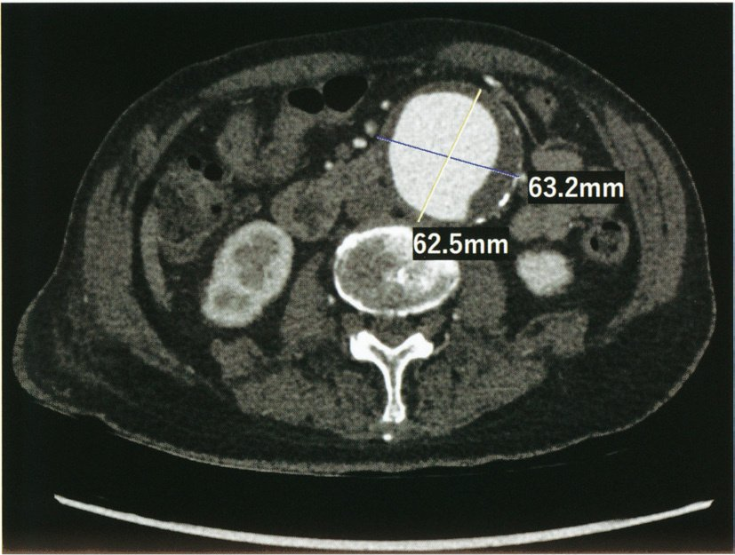
ａ ①
ｂ ②
ｃ ③
ｄ ④
ｅ ⑤
✅
ｃ ③
腹部大動脈瘤（AAA）：直径5.5cm以上で手術適応（開腹またはEVAR）。
🩸 腹部大動脈瘤〈AAA〉——「症状」ではなく「径」で治療を決める病気
腹部大動脈瘤は腹部大動脈が正常径の1.5倍以上、実務上は最大短径3cm以上に拡張したものをいう（正常径は約2cm）。大部分は腎動脈分岐より末梢〈腎動脈下〉にでき、成因の中心は動脈硬化である。危険因子は喫煙・高齢・男性・高血圧・脂質異常症・家族歴で、なかでも喫煙は発生と拡大の両方に効く最大の因子である。この病気の恐ろしさは「大きくなる過程がまったく無症状」なのに「破裂すれば致死率80〜90%」という点にある——したがって診療は①偶然でも見つける ②径で追う ③破裂前に治すの3段構えになる。本例のように健診の腹部超音波で見つかるのが典型的な出会い方である。
身体所見は上腹部の拍動性腫瘤——臍のやや上で、拍動が拡張性（指を左右に押し広げる）に触れるのが本物である。単に大動脈の拍動が伝わっているだけの「伝達性拍動」と区別する。やせた人ほど触れやすく、肥満例では触知できないので、触れないことは除外にならない。
手術適応（待機手術）——① 最大径5.5cm以上（女性や紡錘状でない形では5.0cmで考慮）／② 半年で5mm以上、1年で10mm以上の拡大／③ 症状のあるもの（腹痛・腰背部痛＝切迫破裂）／④ 嚢状瘤・感染性瘤。それ未満は禁煙・降圧・スタチンで危険因子を管理しつつ、径に応じて6〜12か月ごとの超音波やCTで追う。
破裂の三徴（Quinckeの三徴）＝突然の腰背部痛・低血圧（ショック）・拍動性腫瘤。これを見たら造影CTを撮る間もなく緊急手術の準備に入る。
□ 選択肢の検討
| 選択肢 | 解説 |
|---|---|
| ａ ① | 正しい説明。腹部大動脈瘤〈AAA〉は破裂するまでほとんど無症状で、破裂すれば病院到達前死亡を含めた死亡率が80〜90%に達する——だからこそ「症状がないから様子をみる」のではなく、破裂する前に、大きさだけを根拠に予防的に治すのがこの病気の治療原則である。本例は上腹部に拍動性腫瘤を触知し造影CTで瘤が確認されており、径が手術適応に達していれば手術を勧めるのは妥当な発言である。 |
| ｂ ② | 正しい説明。開腹人工血管置換術は、腹部を開いて瘤の中枢側と末梢側に遮断鉗子をかけて血流を止め〈大動脈遮断〉、瘤を切開して人工血管を縫い付ける手術である——「大動脈を遮断して行う手術」という説明は手技の本質を正確に述べている。遮断そのものが後負荷を急増させ、解除時には虚血で溜まった代謝産物が全身へ流れて血圧が下がる〈declamping shock〉ため、麻酔管理の要となる。 |
| ◯ ｃ ③ | これが誤り＝正解。開腹人工血管置換術は開腹・大動脈遮断・大量出血の可能性を伴う侵襲の大きな手術で、高齢者や心肺腎の併存疾患が多い患者にはむしろ不利である——そういうハイリスク例にこそステントグラフト内挿術〈EVAR〉が推奨される。①開腹しない ②大動脈を遮断しない ③出血量・在院日数・周術期死亡率が少ない、という利点がそのままハイリスク例の利益になるからである。逆に人工血管置換術が向くのは若年で全身状態が良く、長期の耐久性を優先したい例や、瘤の形態がEVARに適さない例（中枢側ネックが短い・強い屈曲・分枝の巻き込み）である。「侵襲の大きい手術をハイリスク例に勧める」という向きの逆転が、この設問のただ一つの誤りである。 |
| ｄ ④ | 正しい説明。EVARは両側の大腿動脈を穿刺または小切開で露出し、そこからカテーテルでステントグラフトを瘤の内腔へ運んで留置する——留置されたグラフトが瘤の内側に新しい流路を作り、瘤壁には血流がかからなくなる（瘤への圧が抜ける）ことで破裂を防ぐ。「カテーテルを用いて動脈内に挿入する」はこの手技を正しく説明している。 |
| ｅ ⑤ | 正しい説明。本邦の腹部大動脈瘤に対する待機手術では、EVARが件数で開腹人工血管置換術を上回っている——高齢化で解剖学的にEVAR可能な症例が増え、デバイスと手技が成熟したことによる。ただしエンドリークによる瘤径の再拡大があるため、EVAR後は生涯にわたるCT等の定期フォローが必須で、長期の追加治療率は開腹手術より高い。この点も同時に説明できるとよい。 |
🔧 開腹人工血管置換術 vs EVAR——「誰に」「なぜ」を取り違えない
| 開腹人工血管置換術 | ステントグラフト内挿術〈EVAR〉 | |
|---|---|---|
| 到達 | 開腹（または後腹膜到達） | 両側大腿動脈からカテーテル |
| 大動脈遮断 | 必要（後負荷急増・declamping shock） | 不要 |
| 侵襲・回復 | 出血量多い・在院長い | 低侵襲・早期離床 |
| 周術期死亡 | やや高い | 低い |
| 向く患者 | 若年・全身状態良好・長期耐久性を重視 | 高齢・心肺腎の併存疾患が多いハイリスク例 |
| 解剖学的制約 | 少ない | 中枢側ネックの長さ・屈曲・分枝の巻き込みで不可のことがある |
| 長期 | 耐久性に優れ追加治療が少ない | エンドリークで瘤が再拡大しうる＝生涯フォロー必須 |
エンドリークとは、グラフトを置いたのに瘤嚢内へ血流が残ることをいう。I型＝グラフト固定部（中枢・末梢）からの漏れ、II型＝腰動脈や下腸間膜動脈からの逆流、III型＝グラフト同士の接合部やグラフト破損、IV型＝グラフト壁の透過性。I型とIII型は瘤内圧が直接かかるので追加治療が必要、II型は多くが自然閉塞するので瘤径が拡大しなければ経過観察でよい。
術後合併症としては脊髄虚血（対麻痺）・腎機能障害・下肢虚血・虚血性大腸炎（下腸間膜動脈の血流途絶）・移植血管感染・大動脈腸管瘻を押さえておく。とくに術後の下血は大動脈腸管瘻を疑う重大サインである。
🎯 国試ポイント
① AAAの待機手術適応は最大径5.5cm以上（女性・嚢状瘤ではより小さくても考慮）。あるいは半年で5mm以上の拡大、あるいは症状の出現。「症状がないから経過観察」は誤り。② 破裂の三徴＝突然の腰背部痛・ショック・拍動性腫瘤。造影CTを待てないほど不安定ならそのまま手術室へ。破裂例の死亡率は80〜90%。
③ ハイリスク例（高齢・心肺腎の併存疾患）にはEVAR、若年・耐久性重視なら開腹人工血管置換術。この向きを逆にした選択肢が本問の誤り。
④ EVAR後はエンドリークによる瘤の再拡大があるので生涯のCTフォローが必要。I型・III型は追加治療、II型は瘤径が増えなければ経過観察。
⑤ 危険因子で最も重いのは喫煙。禁煙は発生・拡大・破裂のすべてを減らす。降圧とスタチンも併せて指導する。
⑥ 拍動性腫瘤は「拡張性」に触れるのが本物。肥満例では触れないので、触知しないことは除外の根拠にならない——スクリーニングは腹部超音波が簡便で第一選択。
⑦ 術後の下血を見たら大動脈腸管瘻を、術後の対麻痺を見たら脊髄虚血を疑う。
Q.471(118B-45)★必修臨床📷 画像97%
次の文を読み、471 と472 の問いに答えよ。
77 歳の女性。突然の胸背部痛と疲労感を主訴に救急車で搬入された。
現病歴：本日未明に突然の胸背部痛で目覚めて30 分ほどベッドに横になっていたが、身の置き所のない疲労感が増悪するため救急車を要請した。
既往歴：糖尿病、高血圧症で内服加療中。
生活歴：80 歳の夫と2 人暮らし。問題なく家事をこなしていた。喫煙歴はない。飲酒は機会飲酒。
家族歴：特記すべきことはない。
現 症：意識は清明。身長150cm、体重51kg。体温36.1℃。心拍数96/ 分、整。上肢血圧102/70mmHg、下肢血圧114/60mmHg。呼吸数15/ 分。SpO2 98％（room air）。呼吸音に異常を認めない。胸骨左縁第3 肋間を最強点とするLevine 2/6 の拡張期雑音を聴取する。腹部は平坦、軟で、肝・脾を触知しない。頸部に痛みはない。両肩の痛みを訴えるが、圧痛と可動域制限を認めない。
検査所見：血液所見：赤血球391 万、Hb 11.9g/dL、Ht 37％、白血球8,600、血小板16 万。血液生化学所見：総蛋白6.4g/dL、アルブミン3.0g/dL、総ビリルビン1.7mg/dL、AST 98U/L、ALT 134U/L、LD 263U/L（基準124 ～222）、CK 74U/L（基準41 ～153）、尿素窒素24mg/dL、クレアチニン0.6mg/dL、Na 139mEq/L、K 4.8mEq/L、Cl 105mEq/L。CRP 6.8mg/dL。心電図（A）、胸椎エックス線写真（B）及び胸部単純CT（C）を示す。
最も疑われる疾患はどれか。
77 歳の女性。突然の胸背部痛と疲労感を主訴に救急車で搬入された。
現病歴：本日未明に突然の胸背部痛で目覚めて30 分ほどベッドに横になっていたが、身の置き所のない疲労感が増悪するため救急車を要請した。
既往歴：糖尿病、高血圧症で内服加療中。
生活歴：80 歳の夫と2 人暮らし。問題なく家事をこなしていた。喫煙歴はない。飲酒は機会飲酒。
家族歴：特記すべきことはない。
現 症：意識は清明。身長150cm、体重51kg。体温36.1℃。心拍数96/ 分、整。上肢血圧102/70mmHg、下肢血圧114/60mmHg。呼吸数15/ 分。SpO2 98％（room air）。呼吸音に異常を認めない。胸骨左縁第3 肋間を最強点とするLevine 2/6 の拡張期雑音を聴取する。腹部は平坦、軟で、肝・脾を触知しない。頸部に痛みはない。両肩の痛みを訴えるが、圧痛と可動域制限を認めない。
検査所見：血液所見：赤血球391 万、Hb 11.9g/dL、Ht 37％、白血球8,600、血小板16 万。血液生化学所見：総蛋白6.4g/dL、アルブミン3.0g/dL、総ビリルビン1.7mg/dL、AST 98U/L、ALT 134U/L、LD 263U/L（基準124 ～222）、CK 74U/L（基準41 ～153）、尿素窒素24mg/dL、クレアチニン0.6mg/dL、Na 139mEq/L、K 4.8mEq/L、Cl 105mEq/L。CRP 6.8mg/dL。心電図（A）、胸椎エックス線写真（B）及び胸部単純CT（C）を示す。
最も疑われる疾患はどれか。
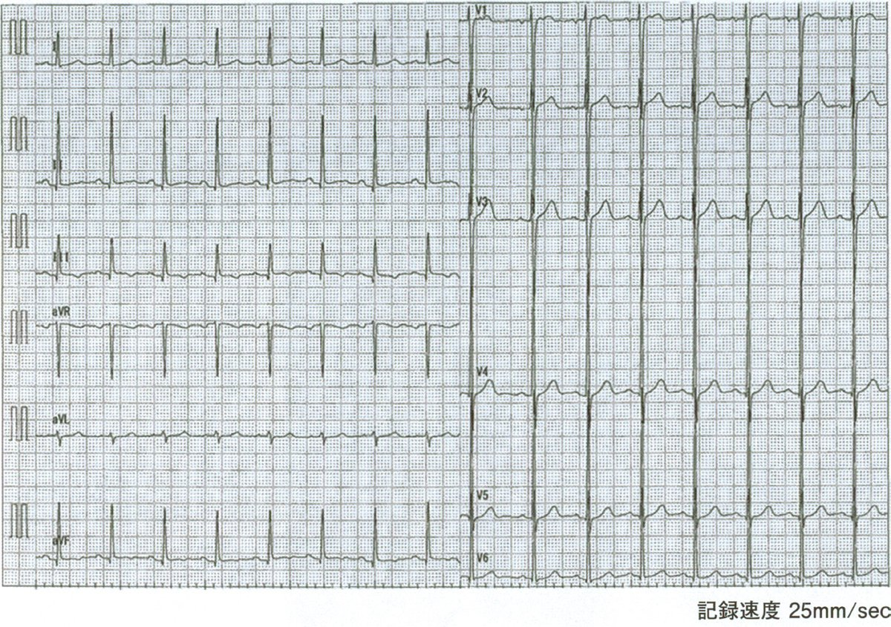


ａ 緊張性気胸
ｂ 急性心筋梗塞
ｃ 胸椎圧迫骨折
ｄ 急性大動脈解離
ｅ 急性僧帽弁閉鎖不全症
✅
ｄ 急性大動脈解離（Stanford A型）
突然の胸背部痛+上行大動脈の裂開→Stanford A型大動脈解離→緊急手術。
🫀 急性大動脈解離——上行に及ぶか否か（Stanford分類）ですべてが決まる
大動脈解離とは、内膜の裂け目〈エントリー〉から血液が中膜へ入り込み、中膜を長軸方向に引き裂いて偽腔を作る病態である。背景に高血圧（最多）・動脈硬化・Marfan症候群などの結合組織病・二尖弁・妊娠・大動脈炎があり、本例は高血圧と糖尿病で通院中の77歳女性である。Stanford分類は「上行大動脈に解離があるか」だけで割る——A型＝上行大動脈に及ぶ（エントリーの位置は問わない）／B型＝上行に及ばない。A型は原則として緊急手術（未治療なら発症48時間で約50%が死亡し、1時間ごとに約1%ずつ死亡率が上がる）。B型は合併症がなければまず降圧の保存療法。DeBakey分類はI型＝上行から下行まで／II型＝上行のみ／III型＝下行のみで、I・IIがStanford A、IIIがStanford Bに相当する。
症状——突然発症で「痛み始めが最も強い」引き裂かれるような胸背部痛。解離の進展に伴い痛みが移動するのも特徴的である（心筋梗塞の痛みは数分かけて増強し、移動しない）。
A型で押さえるべき合併症は4つ——① 大動脈弁閉鎖不全〈AR〉（弁輪拡大。胸骨左縁第3肋間の拡張期雑音）／② 心タンポナーデ（心嚢内破裂。I音II音の減弱・頸静脈怒張・低血圧＝Beckの三徴）／③ 冠動脈閉塞（右冠動脈入口部が多く下壁梗塞）／④ 分枝の灌流障害（頸動脈＝脳梗塞・片麻痺、腹部分枝＝腸管壊死や腎不全、腸骨＝下肢虚血）。本例のAST・ALT・LD・ビリルビンの上昇と CRP 6.8mg/dL は、この「炎症＋臓器灌流障害」を反映している。
□ 選択肢の検討
| 選択肢 | 解説 |
|---|---|
| ａ 緊張性気胸 | 否定される。緊張性気胸は胸腔内圧が上昇して患側の呼吸音消失・鼓音・気管の健側偏位・頸静脈怒張・急速なショックをきたす——本例は呼吸音に異常を認めず、SpO2 98%（room air）、呼吸数15/分と呼吸状態が保たれており、まったく合わない。そもそも突然の胸背部痛だけで気胸を挙げるには、呼吸困難と患側呼吸音減弱という2つの柱が欠けている。 |
| ｂ 急性心筋梗塞 | 最も紛らわしいが、本例では劣る。急性心筋梗塞も突然の胸痛で発症し、心電図（A）が提示されている以上は当然に鑑別へ挙がる——しかし本例で決め手になっているのは胸骨左縁第3肋間を最強点とするLevine 2/6の拡張期雑音で、これは大動脈弁閉鎖不全〈AR〉の雑音であり、上行大動脈に及ぶ解離が大動脈弁輪を引き伸ばして生じる典型所見である。また心筋梗塞ではCKやトロポニンが上がるのが普通だが、本例のCK 74U/L は基準内である。⚠️ ただし両者は排他的ではない——解離が右冠動脈入口部に及べば下壁梗塞を合併する（Q.489 がまさにその設問）。 |
| ｃ 胸椎圧迫骨折 | 否定される。胸椎圧迫骨折は高齢女性に多く、胸椎エックス線写真（B）が提示されているのはこの鑑別のためである——しかし圧迫骨折の痛みは体動や荷重で増悪し、局所の叩打痛・圧痛を伴うのが原則で、本例は両肩の痛みを訴えるが圧痛と可動域制限を認めないと明記されており合わない。また骨折ではCRP 6.8mg/dL という炎症反応やAST/ALTの上昇を説明できない。 |
| ◯ ｄ 急性大動脈解離 | これが正解。根拠は①突然発症の胸「背」部痛 ②胸骨左縁第3肋間の拡張期雑音＝AR ③CRP高値と白血球増多（解離腔の炎症反応） ④AST・ALT・LD・総ビリルビンの上昇＝臓器灌流障害を示唆が一つの病態で束ねられることである——上行大動脈に及ぶ解離（Stanford A型）は、大動脈弁輪の拡大でARを、心嚢内への出血で心タンポナーデを、分枝の閉塞で脳・腸管・腎・下肢の虚血を同時に起こしうる。「痛みの性状が最初が最強」「痛みが移動する」「左右差」は有名だが、本例のように血圧差がはっきりしない解離もごく普通にある——左右差の欠如は解離を否定しない。確定は造影CTで行う。 |
| ｅ 急性僧帽弁閉鎖不全症 | 雑音の時相が合わない。急性僧帽弁閉鎖不全症（腱索断裂・乳頭筋断裂など）の雑音は心尖部を最強点とする収縮期雑音で、急性肺水腫による強い呼吸困難を伴う——本例の雑音は胸骨左縁第3肋間の「拡張期」雑音で、部位も時相も異なる。さらに呼吸音に異常なく SpO2 98%で、急性MRに必須の肺うっ血像がない。 |
🔍 突然の胸背部痛をどう切るか——本例の所見を1つずつ疾患に対応させる
| 所見 | 意味するところ | 効く鑑別 |
|---|---|---|
| 突然発症・胸「背」部痛 | 発症の瞬間が最強＝血管が裂ける機序 | 解離を強く示唆（心筋梗塞は漸増） |
| 胸骨左縁第3肋間の拡張期雑音 | 大動脈弁閉鎖不全＝弁輪が引き伸ばされた | 上行大動脈に解離が及んでいる＝A型 |
| CRP 6.8・白血球8,600 | 偽腔と壁在血栓に対する炎症反応 | 解離では発症早期からCRPが上がる |
| AST 98・ALT 134・LD 263・T-Bil 1.7 | 肝への灌流低下／腹腔動脈系の灌流障害 | 分枝の malperfusion |
| CK 74（基準内） | 心筋壊死を示す証拠がない | 急性心筋梗塞をやや遠ざける |
| 呼吸音正常・SpO2 98% | 肺の病態がない | 緊張性気胸・急性MR（肺水腫）を否定 |
| 圧痛・可動域制限なし | 運動器由来でない | 胸椎圧迫骨折を遠ざける |
Dダイマーは解離で高値になり、陰性なら解離らしさが下がる（除外に使う）が、確定には使えない。低リスク例のふるい分けに用いる。⚠️ 解離に血栓溶解療法や抗凝固療法は禁忌である。心筋梗塞と誤ってt-PAを投与すると偽腔が拡大し破裂する——「左右血圧差がある心筋梗塞」を見たら、線溶療法の前に必ず解離を除外する。
🎯 国試ポイント
① Stanford分類は「上行大動脈に及ぶか」だけで決まる。A型＝緊急手術／B型＝まず降圧の保存療法。未治療A型は48時間で約50%が死亡する。② 胸骨左縁第3肋間の拡張期雑音＝大動脈弁閉鎖不全。急性胸背部痛でこれを聴いたら上行大動脈に及ぶ解離＝A型と読む。心尖部の収縮期雑音ならMRで別の話。
③ 左右上下肢の血圧差は有名だが必発ではない。差がないことは解離を否定しない——本例がまさにそれ。
④ 解離の痛みは突然発症・発症時が最強・移動する。心筋梗塞の痛みは数分かけて増強し移動しない。
⑤ A型の4大合併症＝AR・心タンポナーデ・冠動脈閉塞（下壁梗塞）・分枝灌流障害。これを所見と対応させられれば解離の設問はほぼ解ける。
⑥ 確定診断は造影CT。不安定でCT室へ行けなければ心エコー。Dダイマーは除外用。
⑦ 解離に線溶療法・抗凝固は禁忌。心筋梗塞と誤診してt-PAを打つのが最悪の事故である。
Q.472(118B-46)★必修臨床94%
次の文を読み、471 と472 の問いに答えよ。
77 歳の女性。突然の胸背部痛と疲労感を主訴に救急車で搬入された。
現病歴：本日未明に突然の胸背部痛で目覚めて30 分ほどベッドに横になっていたが、身の置き所のない疲労感が増悪するため救急車を要請した。
既往歴：糖尿病、高血圧症で内服加療中。
生活歴：80 歳の夫と2 人暮らし。問題なく家事をこなしていた。喫煙歴はない。飲酒は機会飲酒。
家族歴：特記すべきことはない。
現 症：意識は清明。身長150cm、体重51kg。体温36.1℃。心拍数96/ 分、整。上肢血圧102/70mmHg、下肢血圧114/60mmHg。呼吸数15/ 分。SpO2 98％（room air）。呼吸音に異常を認めない。胸骨左縁第3 肋間を最強点とするLevine 2/6 の拡張期雑音を聴取する。腹部は平坦、軟で、肝・脾を触知しない。頸部に痛みはない。両肩の痛みを訴えるが、圧痛と可動域制限を認めない。
検査所見：血液所見：赤血球391 万、Hb 11.9g/dL、Ht 37％、白血球8,600、血小板16 万。血液生化学所見：総蛋白6.4g/dL、アルブミン3.0g/dL、総ビリルビン1.7mg/dL、AST 98U/L、ALT 134U/L、LD 263U/L（基準124 ～222）、CK 74U/L（基準41 ～153）、尿素窒素24mg/dL、クレアチニン0.6mg/dL、Na 139mEq/L、K 4.8mEq/L、Cl 105mEq/L。CRP 6.8mg/dL。心電図（A）、胸椎エックス線写真（B）及び胸部単純CT（C）を示す。諸検査の後、痛みはやや改善したが疲労感は続いている。胸部単純CT 終了後、心拍数108/ 分、整。血圧92/62mmHg。SpO2 98％（room air）。
次に行うべき対応で適切なのはどれか。
77 歳の女性。突然の胸背部痛と疲労感を主訴に救急車で搬入された。
現病歴：本日未明に突然の胸背部痛で目覚めて30 分ほどベッドに横になっていたが、身の置き所のない疲労感が増悪するため救急車を要請した。
既往歴：糖尿病、高血圧症で内服加療中。
生活歴：80 歳の夫と2 人暮らし。問題なく家事をこなしていた。喫煙歴はない。飲酒は機会飲酒。
家族歴：特記すべきことはない。
現 症：意識は清明。身長150cm、体重51kg。体温36.1℃。心拍数96/ 分、整。上肢血圧102/70mmHg、下肢血圧114/60mmHg。呼吸数15/ 分。SpO2 98％（room air）。呼吸音に異常を認めない。胸骨左縁第3 肋間を最強点とするLevine 2/6 の拡張期雑音を聴取する。腹部は平坦、軟で、肝・脾を触知しない。頸部に痛みはない。両肩の痛みを訴えるが、圧痛と可動域制限を認めない。
検査所見：血液所見：赤血球391 万、Hb 11.9g/dL、Ht 37％、白血球8,600、血小板16 万。血液生化学所見：総蛋白6.4g/dL、アルブミン3.0g/dL、総ビリルビン1.7mg/dL、AST 98U/L、ALT 134U/L、LD 263U/L（基準124 ～222）、CK 74U/L（基準41 ～153）、尿素窒素24mg/dL、クレアチニン0.6mg/dL、Na 139mEq/L、K 4.8mEq/L、Cl 105mEq/L。CRP 6.8mg/dL。心電図（A）、胸椎エックス線写真（B）及び胸部単純CT（C）を示す。諸検査の後、痛みはやや改善したが疲労感は続いている。胸部単純CT 終了後、心拍数108/ 分、整。血圧92/62mmHg。SpO2 98％（room air）。
次に行うべき対応で適切なのはどれか。
ａ 経過観察
ｂ 緊急手術
ｃ 胸腔ドレナージ
ｄ 心臓カテーテル検査
ｅ 大動脈内バルーンパンピング〈IABP〉挿入
✅
ｂ 緊急手術（心臓血管外科チームへの緊急コンサルト・手術室へ搬送）
Stanford A型は保存療法での死亡率が非常に高く、緊急手術が絶対適応。
🚑 Stanford A型解離の初期対応——「診断がついた＝手術室」
Stanford A型急性大動脈解離は、内科的治療のみでは発症48時間以内に約50%、2週間で約80%が死亡する。手術を行えば30日死亡率は10〜20%まで下がる——つまり手術するかしないかで生死が入れ替わる数少ない疾患であり、診断がついた瞬間から時間との勝負になる。初期対応の順序——① 太い静脈路の確保・モニタリング・輸血の準備／② 疼痛管理（痛みは交感神経を刺激して血圧を上げ、解離を進める。麻薬性鎮痛薬をためらわない）／③ 降圧と心拍数コントロール（まずβ遮断薬で心拍数を60/分前後にしてから血管拡張薬を足す。収縮期血圧100〜120mmHg）／④ 心臓血管外科へ緊急コンサルト、手術室へ。
⚠️ 降圧薬の順序には理由がある——先に血管拡張薬（ニトロプルシドなど）だけを使うと反射性頻脈が起こり、dP/dt（大動脈壁にかかる圧の立ち上がりの鋭さ）が増して解離をかえって進展させる。β遮断薬を先に、が鉄則である。
本例で起きていることを読む——心拍数 96→108/分、血圧 102/70→92/62mmHg。頻脈になりながら血圧が下がるのは循環血液量の減少かポンプの拘束であり、A型解離の文脈では心嚢内への出血＝心タンポナーデの進行を第一に考える。「痛みが改善した」は好転のサインではない。バイタルの方向を見る。
□ 選択肢の検討
| 選択肢 | 解説 |
|---|---|
| ａ 経過観察 | 許されない。Stanford A型解離は時間当たり約1%ずつ死亡率が上がる疾患で、経過観察は「治療しない」ことと同義である——しかも本例は心拍数が96→108/分へ上がり、血圧が102/70→92/62mmHgへ下がっている。これは心嚢内への出血が進み、心タンポナーデが進行していることを示す悪化の徴候である。「痛みがやや改善した」ことは改善ではなく、解離の進展が一段落しただけと解釈する。 |
| ◯ ｂ 緊急手術 | これが正解。上行大動脈に及ぶ解離＝Stanford A型は診断がついた時点で緊急手術の絶対適応である——術式は上行大動脈人工血管置換術で、弁輪拡大によるARが強ければ大動脈基部置換（Bentall手術）や弁形成を、弓部に及べば弓部全置換を加える。本例のようにバイタルが悪化していく状況では、心臓血管外科に即コンサルトして手術室へ運ぶのが唯一の正解である。術前は疼痛管理（麻薬性鎮痛薬）と収縮期血圧100〜120mmHg・心拍数60/分程度への降圧を行うが、それは手術までのつなぎであって治療の本体ではない。 |
| ｃ 胸腔ドレナージ | 適応がない。胸腔ドレナージは気胸・血胸・膿胸など「胸腔に空気や液体が溜まっている」ときの処置である——本例は呼吸音に異常なく SpO2 98%（room air）で、胸腔内に問題があることを示す所見がない。仮に解離が破裂して左胸腔へ出血していれば血胸となるが、その場合も救命の本体は止血＝手術であってドレナージではない。 |
| ｄ 心臓カテーテル検査 | むしろ有害となりうる。心臓カテーテル検査は冠動脈の評価には有用だが、解離した大動脈にカテーテルを通す行為そのものが偽腔へ迷入して解離を拡大させる危険を伴う——A型解離では造影CTで診断は既についており、冠動脈評価は手術中に直接行えるため、術前にわざわざ侵襲的検査を挟む意味がない。検査に費やす時間そのものが致命的である。 |
| ｅ 大動脈内バルーンパンピング〈IABP〉挿入 | 禁忌。大動脈内バルーンパンピング〈IABP〉は下行大動脈にバルーンを留置して拡張期に膨らませる補助循環である——解離のある大動脈にバルーンを入れて拡張させれば、偽腔を押し広げて解離を進展・破裂させる。したがって大動脈解離と高度大動脈弁閉鎖不全はIABPの絶対禁忌である。本例はA型解離であり、しかもARを伴っている——禁忌が二重に成立している。IABPは拡張期に大動脈を閉塞させるのでARでは逆流を増やすことも合わせて覚える。 |
⚠️ A型解離でやってはいけないこと——禁忌を機序から理解する
| 行為 | なぜ禁忌・不適か |
|---|---|
| IABP | 下行大動脈でバルーンを拡張させる＝偽腔を押し広げて解離を進展・破裂させる。加えてARでは拡張期の逆流を増やす。解離とARはIABPの絶対禁忌 |
| 血栓溶解療法〈t-PA〉 | 偽腔の血栓が溶けて解離腔が急速に拡大・破裂する。心筋梗塞と誤診しての投与が最悪の事故 |
| 抗凝固療法 | 心嚢内・胸腔内出血を助長する |
| 心嚢穿刺（タンポナーデでも安易に行わない） | 心嚢内圧が下がるとタンポナーデによる止血効果が失われ、出血が再開して急変することがある。原則は穿刺せず手術室で開胸下に解除 |
| 血管拡張薬の単独先行 | 反射性頻脈でdP/dtが増し解離が進む。β遮断薬を先に |
| 心臓カテーテル検査 | 偽腔迷入の危険と時間の浪費。冠動脈は術中に評価する |
B型との対比——B型は合併症（破裂・切迫破裂・臓器灌流障害・制御不能な疼痛や高血圧）がなければ降圧の保存療法で、合併症があればTEVAR（胸部ステントグラフト内挿術）が第一選択となる。A型とB型で「まず何をするか」が正反対になる点が繰り返し問われる。
「痛みが改善した」を好転と読まない——解離の痛みは裂けている最中が最も強く、進展が止まれば和らぐ。痛みが引いても偽腔は残っており、破裂・タンポナーデ・分枝閉塞のリスクは何も減っていない。評価すべきは血圧・心拍数・意識・尿量・四肢の脈拍という循環の指標であり、本例では頻脈化と血圧低下が明確に悪化を告げている。A型解離で急変する典型は心嚢内破裂によるタンポナーデと胸腔・縦隔への自由破裂で、後者は数分で失血死に至る。
術後の管理も押さえておく——厳格な降圧を生涯続けることが再解離と遠隔期の瘤化を防ぐ最大の手段で、β遮断薬を軸に収縮期130mmHg未満を目標とする。弓部より末梢に偽腔が残ること（残存解離）は珍しくないので、定期的なCTで径を追い、拡大すれば追加治療を行う。
🎯 国試ポイント
① Stanford A型＝緊急手術の絶対適応。診断がついたら心臓血管外科へ即コンサルトし手術室へ。1時間で約1%ずつ死亡率が上がる。② 降圧はβ遮断薬が先、血管拡張薬は後。血管拡張薬だけを先に使うと反射性頻脈でdP/dtが増え、解離が進む。目標は収縮期100〜120mmHg・心拍数60/分。
③ IABPは大動脈解離と高度ARの絶対禁忌。バルーンで偽腔を広げ、拡張期の逆流を増やす。
④ 解離にt-PA・抗凝固は禁忌。「左右血圧差のある胸痛」で線溶療法を考えたら、まず解離を除外する。
⑤ 頻脈になりながら血圧が下がるのは心タンポナーデの進行を疑う。A型解離では心嚢内への破裂が最多の死因。
⑥ 解離によるタンポナーデでは心嚢穿刺を安易に行わない——圧が抜けて出血が再開する。開胸下に解除するのが原則。
⑦ B型は合併症がなければ降圧の保存療法、合併症があればTEVAR。A型とB型で初手が正反対。
Q.473(117F-50)★CBT臨床📷 画像97%
76 歳の女性。嗄声を主訴に来院した。3 か月前から声がかすれることに気付いた。様子をみていたが症状が改善しないため受診した。高血圧症、脂質異常症で自宅近くの診療所に通院中である。喫煙は10 本/ 日を40 年間。2 年前から禁煙している。意識は清明。体温36.2℃。脈拍76/ 分、整。血圧142/78mmHg。呼吸数18/ 分。SpO2 98％（room air）。心音と呼吸音とに異常を認めない。腹部は平坦、軟で、肝・脾を触知しない。下腿浮腫なし。血液所見：赤血球391 万、Hb 12.7g/dL、Ht 36％、白血球8,300、血小板23 万。血液生化学所見：総蛋白7.2g/dL、アルブミン3.5g/dL、総ビリルビン0.5mg/dL、AST 25U/L、ALT 17U/L、尿素窒素21mg/dL、クレアチニン1.1mg/dL。CRP0.1mg/dL。5 年前と今回受診時の胸部エックス線写真を示す。
次に行う検査として最も正しいのはどれか。
次に行う検査として最も正しいのはどれか。
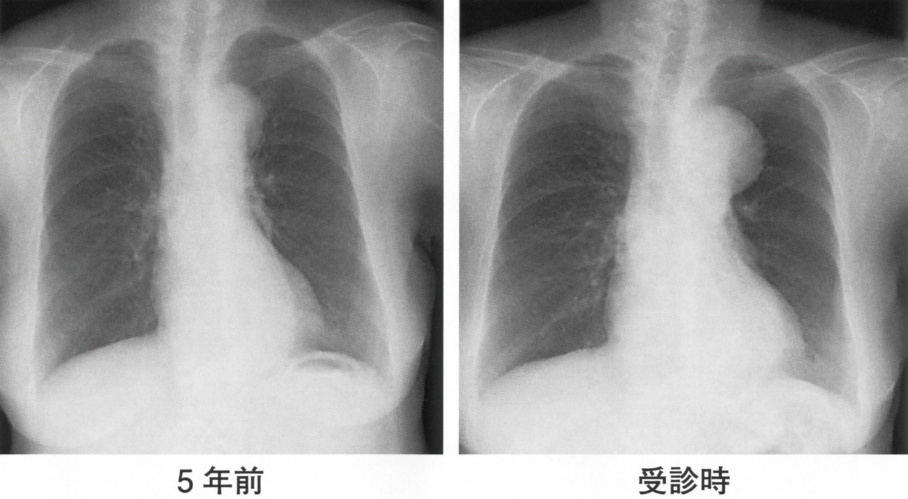
ａ 胸部CT
ｂ 胸腔鏡検査
ｃ 気管支鏡検査
ｄ 呼吸機能検査
ｅ 冠動脈造影カテーテル検査
✅
ａ 胸部CT
嗄声（反回神経麻痺）+高齢+高血圧→大動脈瘤による反回神経圧迫を疑う→胸部CT。
🗣 嗄声から大血管へ——Ortner症候群〈心血管性嗄声〉
左反回神経は迷走神経から分かれたあと、大動脈弓を前から後ろへくぐって（動脈管索の外側を回って）気管食道溝を上行し、喉頭へ戻る——この「大動脈弓を回り込む」という走行のせいで、大動脈弓部や胸部下行大動脈が拡張すると左反回神経が引き伸ばされ・圧迫されて麻痺する。これをOrtner症候群（心血管性嗄声）という。右反回神経は右鎖骨下動脈を回るだけで胸腔内を深く下りないので、胸部大血管病変で麻痺するのはほぼ左側である。Ortner症候群の原因——胸部大動脈瘤（本例）、左房拡大（僧帽弁狭窄症）、肺高血圧による肺動脈拡張、動脈管開存など。いずれも「胸腔内で左反回神経の通り道にある構造が大きくなった」病態である。
嗄声を見たときの鑑別の枠組み——① 喉頭そのもの（喉頭癌・声帯ポリープ・声帯結節・喉頭炎）／② 反回神経麻痺（肺癌・食道癌・甲状腺癌などの縦隔浸潤、胸部大動脈瘤、甲状腺手術・食道手術の合併症）／③ 神経筋疾患（重症筋無力症・筋萎縮性側索硬化症）／④ 機能性・加齢性。本例は76歳・高血圧・脂質異常症・喫煙40本年という動脈硬化と肺癌の両方の危険因子を持ち、3か月かけて進行する嗄声という「腫瘍や瘤らしい経過」を示している。
だから最初にすべきは非侵襲的に縦隔全体を俯瞰する検査＝胸部CTである——大動脈瘤なのか、肺癌の縦隔浸潤なのか、どちらであってもCTが答えを出す。
□ 選択肢の検討
| 選択肢 | 解説 |
|---|---|
| ◯ ａ 胸部CT | これが正解。5年前と今回の胸部エックス線写真を並べた設問で、縦隔陰影（大動脈弓部）の拡大が読み取れる。嗄声の原因として胸部大動脈瘤による左反回神経の圧迫〈Ortner症候群／心血管性嗄声〉を疑う場面である——確認すべきは「大動脈が拡張しているか」「どこからどこまでか」「解離や壁在血栓があるか」であり、これを一度に答えるのが胸部CT（造影）である。CTなら瘤の最大径・位置・分枝との関係まで測れるので、そのまま手術適応（胸部下行大動脈瘤なら約5.5〜6cm）の判断に直結する。なお嗄声の初期対応としては喉頭内視鏡で声帯麻痺の有無と側を確認するのも重要だが、選択肢にない。 |
| ｂ 胸腔鏡検査 | 適応がない。胸腔鏡検査は胸膜病変（胸水の原因検索・胸膜生検・気胸手術）のための侵襲的検査である——本例は呼吸音に異常なく、胸水を示す所見もない。嗄声の原因検索としてまず胸腔を覗く理由がない。縦隔・大血管の評価に胸腔鏡は不向きで、しかも大動脈瘤があれば操作そのものが危険である。 |
| ｃ 気管支鏡検査 | 順序が違う。気管支鏡検査は肺門・縦隔の腫瘤による反回神経麻痺（肺癌など）を疑うときには有力で、実際「嗄声＋喫煙歴40年」という本例の背景では肺癌も鑑別に挙がる——しかし気管支鏡は気管支内腔と、そこから到達できる範囲しか見られない侵襲的検査であり、まず行うべきは非侵襲的に縦隔全体を俯瞰できるCTである。CTで病変の位置が分かってから、必要なら気管支鏡で生検する——この順序は腫瘍でも血管病変でも変わらない。 |
| ｄ 呼吸機能検査 | 見当違い。呼吸機能検査は閉塞性・拘束性換気障害の評価のための検査で、嗄声の原因を突き止める検査ではない——本例は呼吸困難の訴えがなく、SpO2 98%（room air）、呼吸音正常で、換気障害を疑う所見自体がない。上気道（声門）狭窄が強ければフローボリューム曲線が平坦化するが、本例の主訴は「声のかすれ」であって呼吸困難ではない。 |
| ｅ 冠動脈造影カテーテル検査 | 適応がない。冠動脈造影は虚血性心疾患を疑うときの検査である——本例は胸痛がなく、心音に異常なく、狭心症を疑わせる病歴がまったくない。加えて造影カテーテルは侵襲的で、嗄声という主訴からの距離が最も遠い。高血圧・脂質異常症・喫煙歴という動脈硬化の危険因子は揃っているが、それは「大動脈瘤を疑う根拠」であって「冠動脈造影を行う根拠」ではない。 |
🩻 胸部大動脈瘤〈TAA〉——見つけ方・追い方・治し方
| 内容 | |
|---|---|
| 定義 | 胸部大動脈が正常径の1.5倍以上に拡張。上行は約4.5cm、下行は約4cm以上が目安 |
| 症状 | 大半は無症状。出るとすれば圧迫症状——嗄声（左反回神経）・嚥下困難（食道）・呼吸困難や咳（気管・気管支）・上大静脈症候群・Horner症候群 |
| 原因 | 動脈硬化が最多。ほかにMarfan症候群・Loeys-Dietz症候群・二尖弁（上行・基部）、梅毒性（上行）、高安動脈炎・巨細胞性動脈炎、感染性、外傷性 |
| 手術適応 | 上行・弓部は5.5cm以上、下行は6cm前後／Marfan症候群では5cm（家族歴があればさらに小さく）／半年で5mm以上の拡大／症状のあるもの・嚢状瘤 |
| 治療 | 上行・弓部は人工血管置換術（弓部は脳保護下）。下行はTEVAR（胸部ステントグラフト内挿術）が主流 |
| 合併症 | 脊髄虚血による対麻痺（Adamkiewicz動脈の血流途絶）・脳梗塞・エンドリーク・反回神経麻痺 |
⚠️ 胸部エックス線写真で瘤を疑っても、そこで診断を確定してはいけない。前後方向の1枚では径も範囲も分からず、腫瘍との区別もつかない——造影CTで初めて「何が・どこに・どれだけ」が決まる。造影剤が使えない腎機能障害例ではMRAが代替となる。
反回神経麻痺の側と原因の対応——左なら大動脈弓周囲（胸部大動脈瘤・左肺門部の肺癌・食道癌・左房拡大）、右なら頸部〜右鎖骨下動脈周囲（甲状腺癌・甲状腺手術・右肺尖部病変）を考える。左右どちらかを聞かれたら、まず神経の走行の深さの違いを思い出す。なお両側麻痺では声帯が正中位で固定して吸気性喘鳴・窒息をきたし、緊急気道確保が要る（甲状腺全摘後の重大合併症）。
本例の背景を数字で読む——76歳・高血圧・脂質異常症・10本/日を40年間（40 pack-year）の喫煙。これは胸部大動脈瘤の危険因子であると同時に肺癌の危険因子でもある。2年前に禁煙していても肺癌リスクは長く残るので、嗄声＋胸部エックス線写真の異常という提示では瘤と腫瘍の両方を一度に評価できる検査を選ぶのが最も効率がよい——それが胸部CTである。
🎯 国試ポイント
① 嗄声＋縦隔陰影拡大＝Ortner症候群（心血管性嗄声）を疑う。左反回神経は大動脈弓を回るので、胸部大血管病変で麻痺するのは左側。② Ortner症候群の三大原因＝胸部大動脈瘤・左房拡大（僧帽弁狭窄症）・肺動脈拡張。
③ 縦隔の病変を疑ったら、まず非侵襲的な胸部CT。気管支鏡・胸腔鏡といった侵襲的検査は、CTで場所を決めてから。
④ 胸部大動脈瘤の大半は無症状で、症状が出るとすれば周囲を押す症状（嗄声・嚥下困難・咳・上大静脈症候群）。
⑤ 手術適応は上行・弓部5.5cm、下行6cm、Marfan症候群では5cm。下行はTEVARが主流。
⑥ 胸部大動脈手術の代表的合併症は脊髄虚血（対麻痺）——Adamkiewicz動脈の血流途絶による（Q.476 が同じ論点）。
⑦ 嗄声で肺癌も必ず鑑別に置く。喫煙歴があればなおさらで、その意味でもCTが最初の一手として合理的である。
Q.474(113D-9)★CBT一般81%
急性大動脈解離の合併症として出現し得る徴候に含まれないのはどれか。
ａ 視野障害
ｂ Barré 徴候陽性
ｃ 後脛骨動脈の触知不良
ｄ 心音のⅠ音とⅡ音の減弱
ｅ 心尖部を最強点とする全収縮期雑音
✅
ｅ 心尖部を最強点とする全収縮期雑音
心尖部全収縮期雑音（MR音）は大動脈解離の直接合併症ではない。AIは拡張期雑音（胸骨左縁）。
🗺 大動脈解離の合併症は「分枝の地図」で説明できる
大動脈解離の症状の大半は、裂けた大動脈から出ている枝が潰れて、その枝が養う臓器が虚血に陥る〈malperfusion〉ことで説明できる。つまり「大動脈からどんな枝がどの順に出るか」を思い出せば、起こりうる症状の一覧が自動的に書ける。上行大動脈——冠動脈（とくに右冠動脈入口部）が閉塞すれば下壁心筋梗塞。弁輪が拡大すれば大動脈弁閉鎖不全。心嚢内へ破れれば心タンポナーデ。
弓部——腕頭動脈・左総頸動脈・左鎖骨下動脈。頸動脈が潰れれば脳梗塞（片麻痺・失語・Barré徴候陽性）、椎骨動脈ならめまい・複視・視野障害、鎖骨下動脈なら上肢の血圧左右差と脈拍減弱。左反回神経が圧迫されれば嗄声。
下行〜腹部——肋間動脈（Adamkiewicz動脈）で脊髄梗塞＝対麻痺、腹腔動脈・上腸間膜動脈で腸管虚血（激しい腹痛・血便・アシドーシス）、腎動脈で急性腎障害・腎血管性高血圧、総腸骨動脈で下肢虚血（脈拍触知不良・冷感）。
これに対して僧帽弁は大動脈の枝ではない——だから解離の直接の合併症一覧に入らない。本問は「大動脈という一本の管とその枝から説明できるか」を試しており、説明できない唯一の所見が心尖部の全収縮期雑音（MR）である。
□ 選択肢の検討
| 選択肢 | 解説 |
|---|---|
| ａ 視野障害 | 出現しうる。解離が腕頭動脈・総頸動脈・椎骨動脈に及べば脳虚血が起こり、一過性黒内障・視野障害・複視などの視覚症状が現れる——またHorner症候群（縮瞳・眼瞼下垂）は、拡大した大動脈や偽腔が交感神経幹を圧迫して生じる。「胸背部痛＋神経症状」の組合せは解離を強く示唆する重要な提示のしかたである。 |
| ｂ Barré 徴候陽性 | 出現しうる。Barré徴候（上肢挙上位保持で麻痺側が回内しながら落ちる）は錐体路障害を示す所見で、解離が頸動脈へ及んで脳梗塞を起こせば当然に陽性となる——解離による脳梗塞は左総頸動脈が巻き込まれることが多く右片麻痺となる例が典型だが、腕頭動脈が巻き込まれれば左片麻痺となる。⚠️ ここが臨床的に最も危険な組合せである——片麻痺だけを見て脳梗塞と診断しt-PAを投与すると、解離が破裂して致命的になる。「胸背部痛を伴う片麻痺」では必ず解離を除外する。 |
| ｃ 後脛骨動脈の触知不良 | 出現しうる。解離が腹部大動脈から総腸骨動脈・大腿動脈へ進展すると下肢の灌流が落ち、足背動脈・後脛骨動脈の触知不良、左右差、下肢の冷感・蒼白・疼痛が現れる——これはmalperfusion（灌流障害）の一型で、放置すれば下肢壊死に至る。解離を疑ったら四肢すべての動脈拍動と血圧を左右で比べるのが基本手技である。 |
| ｄ 心音のⅠ音とⅡ音の減弱 | 出現しうる。I音とII音がともに減弱するのは心嚢液の貯留（心タンポナーデ）で音が伝わりにくくなるためである——A型解離が心嚢内へ破裂するとBeckの三徴（血圧低下・頸静脈怒張・心音減弱）が揃い、これはA型解離の最多の死因である。奇脈（吸気時に収縮期血圧が10mmHg以上低下）も伴う。心音減弱を「聞こえにくいだけ」と流さず、タンポナーデのサインとして拾う。 |
| ◯ ｅ 心尖部を最強点とする全収縮期雑音 | これが含まれない＝正解。心尖部を最強点とする全収縮期雑音は僧帽弁閉鎖不全〈MR〉の雑音であり、大動脈解離が直接引き起こす所見ではない——解離が起こす弁膜症は大動脈弁閉鎖不全〈AR〉で、その雑音は胸骨左縁第3肋間を最強点とする「拡張期」の灌水様雑音である。部位も時相も違う。解離は大動脈弁輪を引き伸ばして弁尖の接合を妨げるが、僧帽弁は解剖学的に大動脈から離れており（僧帽弁前尖は大動脈弁と線維性連続を持つものの、解離が直接MRを作る機序はない）、MRを起こす代表は乳頭筋断裂＝心筋梗塞の合併症である。「心尖部・収縮期＝僧帽弁」「胸骨左縁第3肋間・拡張期＝大動脈弁」という2軸の対応表を持っていれば即答できる。 |
🎧 心雑音の2軸——「どこで最強か」×「収縮期か拡張期か」
| 雑音 | 最強点 | 時相 | 代表疾患 |
|---|---|---|---|
| 灌水様雑音 | 胸骨左縁第3肋間（Erb領域） | 拡張期（漸減性） | 大動脈弁閉鎖不全〈AR〉＝大動脈解離が起こすのはこれ |
| 全収縮期雑音 | 心尖部（左腋窩へ放散） | 収縮期（全体を占める） | 僧帽弁閉鎖不全〈MR〉。急性なら乳頭筋断裂・腱索断裂 |
| 駆出性収縮期雑音 | 第2肋間胸骨右縁（頸部へ放散） | 収縮期（漸増漸減） | 大動脈弁狭窄症〈AS〉 |
| 拡張中期ランブル | 心尖部 | 拡張期 | 僧帽弁狭窄症〈MS〉（開放音を伴う） |
| 連続性雑音 | 左第2肋間 | 収縮期＋拡張期 | 動脈管開存症 |
ARの周辺所見も併せて覚える——脈圧の増大（本例のような収縮期高値・拡張期低値）、速脈・大脈（Corrigan脈）、de Musset徴候（心拍に合わせた首振り）、Quincke徴候（爪床の毛細血管拍動）、Austin Flint雑音（心尖部の拡張期ランブル）。急性ARでは代償が働かないため脈圧増大がはっきりせず、むしろ急速な肺水腫とショックで現れる点に注意する（Q.482 がその設問）。
なお心音の減弱（I音・II音とも）は雑音とは別の所見で、心嚢液貯留を示す。「雑音があるか」と「心音が聞こえるか」は別々に評価する。
大動脈解離を疑ったときの身体所見のチェックリスト——① 四肢の血圧（左右上下）と脈拍／② 胸骨左縁第3肋間の拡張期雑音（AR）／③ 頸静脈怒張と心音の強さ（タンポナーデ）／④ 神経学的所見（片麻痺・Barré徴候・瞳孔・視野・下肢の運動）／⑤ 腹部所見（腸管虚血の圧痛・拍動性腫瘤）。この5点を数分で取れば、解離の有無とどの枝が巻き込まれているかまで見当がつく。
否定形の設問への向き合い方——「含まれないのはどれか」型は、4つを「説明できる」と積極的に確認してから、残った1つを消去法で選ぶのが安全である。本問なら視野障害＝頸部血管、Barré徴候＝脳梗塞、後脛骨動脈触知不良＝下肢虚血、心音減弱＝タンポナーデ、と4つとも解離の合併症として一列に並ぶ。並ばないのは僧帽弁の雑音だけである。
🎯 国試ポイント
① 大動脈解離が起こす弁膜症はAR（胸骨左縁第3肋間・拡張期）。MR（心尖部・全収縮期）は起こさない——これが本問の答え。② 解離の合併症は「大動脈の枝の地図」で導ける：冠動脈→下壁梗塞／頸動脈→片麻痺・Barré陽性／椎骨動脈→視野障害・複視／鎖骨下動脈→上肢血圧左右差／肋間動脈→対麻痺／腹部分枝→腸管虚血・腎不全／腸骨動脈→下肢虚血。
③ I音・II音の減弱＝心嚢液貯留。Beckの三徴（低血圧・頸静脈怒張・心音減弱）でA型解離の心嚢内破裂を疑う。
④ 「胸背部痛を伴う片麻痺」でt-PAを打たない。大動脈解離による脳梗塞を線溶療法で治療すると破裂する。必ず解離を除外してから。
⑤ 解離を疑ったら四肢すべての脈拍と血圧を左右で比べる。触知不良・左右差はmalperfusionのサイン。
⑥ MRを急性に起こす代表は心筋梗塞後の乳頭筋断裂・腱索断裂。解離ではない。
Q.475(113F-48)★臨床59%
70 歳の女性。胸背部痛のため救急車で搬入された。自宅で家事中に突然、胸背部痛を訴え、その後意識が低下したため夫が救急車を要請した。健診で血圧が高いと指摘されたことがある。ADL は自立しており、発症前の状態はいつもと変わりなかった。搬入時、意識レベルはJCSⅢ-100。心拍数100/ 分、整。上肢の血圧は計測不能。下肢の血圧は70mmHg（触診）。呼吸数30/ 分。SpO2 計測不能。頸静脈の怒張を認める。橈骨動脈は両側とも微弱にしか触知しないが、両側頸動脈と両側大腿動脈は触知する。胸部聴診でⅠ音とⅡ音が減弱している。呼吸音に異常を認めない。腹部は平坦、軟で、肝・脾を触知しない。四肢に網状皮斑を認める。
最も優先される検査はどれか。
最も優先される検査はどれか。
ａ 下肢静脈超音波検査
ｂ 心エコー検査
ｃ 胸椎MRI
ｄ 頭部CT
ｅ 胸部CT
✅
ｂ 心エコー検査
心音減弱+頸静脈怒張+低血圧→心タンポナーデを疑う→心エコーで心嚢液確認が最優先。
💔 心タンポナーデ——Beckの三徴を「音・首・血圧」で拾う
心タンポナーデとは、心嚢内に液体が溜まって心臓が外から締めつけられ、拡張できなくなる状態である。拡張が妨げられれば充満が減り、1回拍出量が落ちて心拍出量が低下する——これが低血圧の正体である。Beckの三徴＝①低血圧 ②頸静脈怒張 ③心音減弱。機序で覚える——心臓が拡張できないから前方へ送れず血圧が下がり、送り出せない血液が上流に溜まって頸静脈が怒張し、心臓の周りを液体が包むので心音が遠くなる。加えて奇脈（吸気時に収縮期血圧が10mmHg以上低下する）、頻脈、Kussmaul徴候、心電図の低電位・electrical alternans、胸部エックス線写真のフラスコ状心陰影が揃う。
原因——大動脈解離（A型）の心嚢内破裂、心破裂（心筋梗塞後）、外傷、悪性腫瘍の心膜転移、急性心膜炎、尿毒症、結核、心臓手術後。とくに「突然の胸背部痛＋Beckの三徴」を見たらA型解離の心嚢内破裂を第一に考える——これが本例である。
心タンポナーデの診断は心エコーが決定的である。心嚢液の貯留に加えて、右房・右室の拡張期虚脱、下大静脈の呼吸性変動の消失（拡張したまま）、三尖弁・僧帽弁流入血流の呼吸性変動の増大が「血行動態的に意味のあるタンポナーデ」を示す。液量そのものより溜まる速さが重要で、急速に溜まれば200mL程度でもタンポナーデになる（慢性なら1L以上溜まっても耐えられる）。
治療——通常のタンポナーデは心嚢穿刺（心嚢ドレナージ）で圧を抜く。⚠️ しかし大動脈解離によるタンポナーデでは原則として穿刺しない——圧を抜くと止血していた血腫が破れて出血が再開し急変するため、そのまま手術室で開胸下に解除する。
□ 選択肢の検討
| 選択肢 | 解説 |
|---|---|
| ａ 下肢静脈超音波検査 | 優先されない。下肢静脈超音波検査は深部静脈血栓症〈DVT〉を探す検査で、肺血栓塞栓症の背景検索として行われる——しかし本例は突然の胸背部痛で発症し、I音とII音がともに減弱している。肺血栓塞栓症では心音減弱は起こらず、むしろII音の肺動脈成分が亢進する。仮に肺塞栓を疑ったとしても、ショック状態の患者でまず行うのは原因の同定であって、下肢の検索ではない。 |
| ◯ ｂ 心エコー検査 | これが正解。本例の所見は①血圧低下（上肢測定不能・下肢70mmHg触診） ②頸静脈怒張 ③I音とII音の減弱——Beckの三徴そのもので、心タンポナーデを示している。突然の胸背部痛で発症した高血圧の高齢女性という文脈を重ねれば、Stanford A型大動脈解離が心嚢内へ破裂してタンポナーデを起こしたと読める——心エコー検査はベッドサイドで、患者を動かさずに、数分で「心嚢液があるか」「右房・右室が虚脱していないか」「上行大動脈にフラップがあるか」「ARがあるか」をすべて答えられる。JCS III-100・血圧測定不能というCT室へ運ぶこと自体が危険な状態で、最も優先される検査はこれである。四肢に網状皮斑〈livedo reticularis〉を認めるのは末梢循環不全＝ショックの徴候で、時間的猶予がないことを裏づける。 |
| ｃ 胸椎MRI | 見当違い。胸椎MRIは脊髄病変・椎体病変の評価に用いる検査で、循環虚脱の原因究明には役立たない——加えてMRIは撮影に時間がかかり、モニタや人工呼吸器の持ち込みに制約があり、閉鎖空間で急変対応ができないため、不安定な患者に最も向かない検査である。ショックの患者をMRI室へ入れてはいけない。 |
| ｄ 頭部CT | 順序が違う。意識レベルがJCS III-100と低下しているので頭部CTを考えたくなるが、本例の意識障害は脳そのものの病変ではなく、循環虚脱による脳灌流低下で説明できる——血圧が測れないほどのショックがあるなら、まず循環の原因を叩くのが順序である。CT室へ運ぶ移動時間そのものが危険であり、頭部CTを撮っても治療方針は変わらない。 |
| ｅ 胸部CT | 最終的には必要だが「最も優先」ではない。造影CTは大動脈解離の確定診断・範囲評価に不可欠で、手術に進むなら必ず撮る——しかし本例は上肢血圧が測定不能、SpO2も測定不能という極度に不安定な状態で、CT室への移動と撮影中の数分間に心停止しうる。「血行動態が不安定なときはベッドサイドの心エコー、安定していれば造影CT」——この使い分けが本問の主題である。心エコーで心嚢液とフラップを確認できれば、そのまま手術室へ運ぶ判断も可能になる。 |
🔎 「不安定ならベッドサイド、安定なら造影CT」——検査の選び方
| 検査 | 強み | 弱み | いつ選ぶか |
|---|---|---|---|
| 経胸壁心エコー | ベッドサイド・数分・移動不要。心嚢液・右心虚脱・上行大動脈のフラップ・AR・左室収縮を一度に見る | 下行大動脈や分枝の評価は不十分 | 血行動態が不安定なとき |
| 経食道心エコー | 上行〜下行大動脈のフラップを高精度に描出 | 鎮静が要る・咽頭刺激で血圧が上がる | 術中・CTが撮れない場合 |
| 造影CT | 感度・特異度とも95%以上。範囲・エントリー・分枝・心嚢液を一度に評価し術式決定に直結 | CT室への移動が要る・造影剤腎症 | 血行動態が安定しているとき（＝ほとんどの症例） |
| MRI | 被曝なし・造影剤なしでも評価可 | 時間がかかり急性期に不向き | 慢性期のフォロー |
| Dダイマー | 陰性なら解離らしさが下がる（除外用） | 特異度が低い | 低リスク例のふるい分け |
ショック患者では検査は治療と並行して行う——太い静脈路の確保、輸液・輸血、動脈ラインでの連続血圧測定を進めながら、その場で心エコーを当てる。この「同時進行」の発想が救急の基本である。ショックの分類でいえば、心タンポナーデは閉塞性ショック（obstructive shock）に分類され、緊張性気胸・肺血栓塞栓症と同じ枠に入る。いずれも輸液だけでは治らず、閉塞を解除しなければ改善しない。
⚠️ 頸静脈怒張を伴う低血圧を見たら、出血性・敗血症性ショックではなく閉塞性か心原性を考える——心タンポナーデ・緊張性気胸・肺血栓塞栓症・右室梗塞の4つが鑑別の軸になる。
🎯 国試ポイント
① Beckの三徴＝低血圧・頸静脈怒張・心音減弱＝心タンポナーデ。突然の胸背部痛を伴えばA型大動脈解離の心嚢内破裂を第一に考える。② 血行動態が不安定ならベッドサイドの心エコー、安定していれば造影CT。この使い分けが本問の主題。ショック患者をCT室・MRI室へ運ばない。
③ タンポナーデの心エコー所見＝心嚢液貯留・右房右室の拡張期虚脱・下大静脈の呼吸性変動消失。液量より溜まる速さが効く。
④ 大動脈解離によるタンポナーデでは心嚢穿刺を行わない。圧を抜くと出血が再開する。開胸下に解除する。
⑤ 頸静脈怒張を伴う低血圧＝閉塞性/心原性ショック。心タンポナーデ・緊張性気胸・肺血栓塞栓症・右室梗塞の4つを想起する。
⑥ 網状皮斑（livedo reticularis）は末梢循環不全のサインで、ショックの重症度を示す。
⑦ 奇脈・低電位・electrical alternans・フラスコ状心陰影も併せて覚える。
Q.476(112A-45)★臨床📷 画像94%
79歳の男性。胸部エックス線写真の異常陰影を指摘されて来院した。精査のために行った胸腹部造影3D-CTを示す。
この疾患に対する手術に際し、最も注意すべき合併症はどれか。
この疾患に対する手術に際し、最も注意すべき合併症はどれか。

ａ 髄膜炎
ｂ 脊髄梗塞
ｃ 正常圧水頭症
ｄ 胸郭出口症候群
ｅ 急性硬膜下血腫
✅
ｂ 脊髄梗塞
胸部大動脈瘤手術（特に下行・胸腹部）：Adamkiewicz動脈（脊髄栄養血管）遮断→対麻痺（脊髄梗塞）。
🦴 Adamkiewicz動脈と脊髄虚血——胸部大動脈手術の最大の懸念
脊髄の血流は「上下に長い1本の動脈」ではなく、大動脈から分節的に出る肋間動脈・腰動脈が根動脈となって前脊髄動脈に合流するという梯子状の構造で保たれている——したがって大動脈のどこかを長く遮断・被覆すると、その区間から出ていた根動脈がまとめて失われ、脊髄が虚血に陥る。Adamkiewicz動脈（大前根動脈）は根動脈の中で最も太く、胸腰髄（脊髄下2/3）の前脊髄動脈血流の大部分を担う。T9〜L2レベルから、約8割で左側から分岐する。個人差が大きいため、術前に造影CTやMRAでAdamkiewicz動脈の起始レベルを同定し、その肋間動脈を再建する（大動脈壁ごと人工血管に縫い付ける）ことが行われる。
前脊髄動脈症候群——前脊髄動脈は脊髄の前2/3（前角・前索・側索）を養う。梗塞すると①両下肢の弛緩性麻痺（前角・皮質脊髄側索路） ②障害レベル以下の痛覚温度覚の消失（外側脊髄視床路） ③膀胱直腸障害が出る。一方後索（深部感覚・振動覚・触覚の一部）は後脊髄動脈が養うので保たれる——この「運動と痛覚温度覚はやられ、深部感覚は残る」という解離が診断の決め手になる。
脊髄保護の工夫——① 脳脊髄液ドレナージ（髄液圧を下げて脊髄灌流圧＝平均動脈圧－髄液圧を上げる）／② 肋間動脈の再建／③ 術中の平均血圧を高めに保つ／④ 軽度低体温／⑤ 運動誘発電位〈MEP〉のモニタリング／⑥ 分節遮断で虚血時間を短くする。TEVAR（ステントグラフト）でも長い区間を覆うほど、左鎖骨下動脈を閉塞するほど、腹部大動脈手術の既往があるほど脊髄虚血のリスクが上がる。
□ 選択肢の検討
| 選択肢 | 解説 |
|---|---|
| ａ 髄膜炎 | 起こりにくい。髄膜炎は感染性の合併症で、大動脈手術の代表的合併症ではない——脳脊髄液ドレナージ（脊髄保護のために髄腔にカテーテルを留置する手技）を行った場合には髄膜炎のリスクがゼロではないが、「最も注意すべき合併症」として問われるものではない。大動脈手術で警戒すべき神経合併症は感染ではなく虚血である。 |
| ◯ ｂ 脊髄梗塞 | これが正解。胸部下行大動脈・胸腹部大動脈の手術で最も警戒すべき合併症は脊髄虚血による対麻痺である——脊髄の下半分（胸髄下部〜腰髄）を養う前脊髄動脈は、大動脈から出る肋間動脈・腰動脈の枝である根動脈によって支えられている。その中で最も太く重要なのがAdamkiewicz動脈（大前根動脈）で、およそT9〜L2、左側から出ることが多い。この領域の大動脈を遮断・置換したりステントグラフトで覆ったりすると、Adamkiewicz動脈への血流が絶たれ脊髄前部の梗塞＝前脊髄動脈症候群が起こる。症状は対麻痺（両下肢の弛緩性麻痺）・痛覚温度覚の障害・膀胱直腸障害で、後索（深部感覚・振動覚）は後脊髄動脈が保つので保たれる——この解離性感覚障害が前脊髄動脈症候群の指紋である。 |
| ｃ 正常圧水頭症 | 関係がない。正常圧水頭症は歩行障害・認知機能低下・尿失禁の三徴を示す疾患で、クモ膜下出血や髄膜炎の後遺症として起こる——大動脈瘤手術と因果関係がない。歩行障害という点で対麻痺と紛らわしく見えるが、正常圧水頭症の歩行はすり足・小刻み・開脚で麻痺ではない。 |
| ｄ 胸郭出口症候群 | 関係がない。胸郭出口症候群は斜角筋間・肋鎖間隙・小胸筋下で腕神経叢や鎖骨下動静脈が圧迫されるもので、上肢のしびれ・脱力・冷感を起こす——頸肋やなで肩が背景にあり、大動脈瘤手術の合併症ではない。上肢症状という点で紛らわしいが、本問で問われているのは大動脈瘤という体幹の血管の手術に伴うものである。 |
| ｅ 急性硬膜下血腫 | 起こりにくい。急性硬膜下血腫は頭部外傷で架橋静脈が断裂して生じるもので、大動脈手術の合併症ではない——脳脊髄液ドレナージによる急激な減圧で硬膜下血腫が生じた報告はあるが、「最も注意すべき」ものではない。大動脈手術で頭蓋内を問われるなら、注意すべきは弓部手術に伴う塞栓性脳梗塞のほうである。 |
🩻 胸部大動脈瘤の手術——術式ごとの合併症を並べる
| 部位 | 術式 | 最も警戒する合併症 |
|---|---|---|
| 上行大動脈・基部 | 人工血管置換／Bentall手術（弁＋基部＋冠動脈再建） | 出血・冠動脈再建部のトラブル |
| 弓部 | 弓部全置換＋オープンステントグラフト（超低体温循環停止・選択的脳灌流） | 脳梗塞・脳障害／反回神経麻痺 |
| 下行・胸腹部 | 人工血管置換／TEVAR | 脊髄虚血による対麻痺（Adamkiewicz動脈） |
| 腹部（腎動脈下） | 人工血管置換／EVAR | 腎機能障害・虚血性大腸炎・下肢虚血・エンドリーク |
術後に下肢が動かないと言われたら——まず脊髄虚血を疑い、① 直ちに平均血圧を上げる（脊髄灌流圧を稼ぐ） ② 脳脊髄液ドレナージで髄液圧を下げる ③ 貧血を補正する、という対応を取る。遅発性（術後数日で出現する）対麻痺もあり、その場合は同じ処置で可逆的に改善することがあるので早期発見が重要である。
本例は79歳男性で胸部エックス線写真の異常陰影から胸腹部造影3D-CTへ進み、胸部（胸腹部）大動脈瘤が確認された症例である。無症状で健診・他疾患の検査中に見つかるのが胸部大動脈瘤の典型的な発見経路で、症状が出るとすれば圧迫症状（嗄声・嚥下困難・咳）である点は Q.473 と共通する。
TEVAR特有の注意点——胸部下行大動脈をステントグラフトで覆うとき、中枢側の固定部を稼ぐために左鎖骨下動脈の起始部を覆ってしまうことがある。その場合左椎骨動脈・左内胸動脈・左上肢の血流が落ちるので、左鎖骨下動脈-左総頸動脈バイパスなどのdebranching（分枝再建）を先に行う。左鎖骨下動脈を閉塞したまま覆うと脊髄虚血のリスクも上がる——左椎骨動脈から前脊髄動脈への側副血行が失われるためである。
虚血性大腸炎（下腸間膜動脈の血流途絶）も大動脈手術後の重要合併症で、術後の血便・下痢・腹痛で疑う。腹部大動脈手術では下腸間膜動脈を切離することが多く、S状結腸・下行結腸が虚血に陥りやすい。診断は下部消化管内視鏡である。
🎯 国試ポイント
① 胸部下行・胸腹部大動脈の手術で最も警戒すべきは脊髄虚血による対麻痺。原因はAdamkiewicz動脈（大前根動脈）の血流途絶。② Adamkiewicz動脈はT9〜L2、約8割で左側から分岐し、脊髄下2/3の前脊髄動脈血流を担う。術前に造影CT/MRAで同定する。
③ 前脊髄動脈症候群＝対麻痺＋痛覚温度覚障害、深部感覚は保たれる（後索は後脊髄動脈が養う）。この解離性感覚障害が決め手。
④ 脊髄保護＝脳脊髄液ドレナージ・肋間動脈再建・血圧を高めに保つ・軽度低体温・MEPモニタリング。
⑤ 術式ごとの警戒点：弓部＝脳梗塞／下行・胸腹部＝脊髄虚血／腹部＝腎障害・虚血性大腸炎・下肢虚血。「その区間から何が出ているか」で導く。
⑥ 術後の対麻痺は遅発性にも起こる。平均血圧を上げ髄液圧を下げれば可逆的なことがあるので、早期発見が予後を分ける。
Q.477(112B-12)★必修CBT一般98%
大動脈解離による腰背部痛の特徴はどれか。
ａ 突然の発症
ｂ 数日間の高熱の先行
ｃ 前屈での痛みの軽減
ｄ 圧迫による痛みの軽減
ｅ 呼吸による痛みの強さの変動
✅
ａ 突然の発症
大動脈解離の痛み：突然発症の激烈な引き裂かれるような胸背部痛が特徴。
⏱ 痛みの「立ち上がり方」で胸背部痛を切る
胸背部痛の鑑別は、画像の前に病歴だけでかなり絞れる。鍵は①発症のしかた ②最強になるタイミング ③移動するか ④何で変化するかの4点である。大動脈解離——突然発症で発症の瞬間が最強、裂け目の進展に伴って痛みが移動する、体位・呼吸・圧迫で変化しない。「引き裂かれるような」「これまで経験したことのない」と表現される。加えて四肢の血圧左右差・脈拍欠損・拡張期雑音・神経症状があれば決定的である。
急性心筋梗塞——数分かけて増強し持続する。締めつけられる・重い・押さえつけられるような性状で、放散痛（左肩・下顎・心窩部）を伴う。冷汗・嘔気を伴い、体位や呼吸で変化しない。解離との違いは立ち上がりの形と移動の有無である。
肺血栓塞栓症——突然の呼吸困難が主で、痛みは胸膜性（吸気で増悪）。SpO2低下・頻呼吸・DVTの危険因子を伴う。
急性心膜炎——前傾坐位で軽減し、臥位・吸気で増悪。心膜摩擦音と広範なST上昇・PR低下。
食道破裂（Boerhaave症候群）——激しい嘔吐に続く突然の胸痛。皮下気腫・縦隔気腫。
筋骨格性・帯状疱疹——圧痛が再現性をもってある／皮膚分節に沿う。
この一覧の中で「突然・最初が最強・移動する・何をしても変わらない」に当てはまるのは解離だけである。
□ 選択肢の検討
| 選択肢 | 解説 |
|---|---|
| ◯ ａ 突然の発症 | これが正解。大動脈解離の痛みは「何時何分に始まったか言える」ほど突然で、発症の瞬間が最も強く（peak at onset）、その後は軽減していくのが特徴である——これは内膜が裂けて中膜が引き裂かれるという機械的な事象が瞬間的に起こるためで、痛みの強さの時間経過そのものが病態を映している。対比として、急性心筋梗塞の痛みは数分から数十分かけて次第に強くなる（crescendo）。この「立ち上がりの形」の違いは病歴聴取だけで鑑別に効く強力な情報である。さらに解離では裂け目が進むにつれて痛みの部位が移動する（前胸部→背部→腰部）点も特徴的である。 |
| ｂ 数日間の高熱の先行 | 合わない。数日間の発熱が先行するのは感染性の病態——化膿性脊椎炎・椎間板炎・硬膜外膿瘍・感染性心内膜炎・感染性大動脈瘤などである——解離は先行症状なく突然発症するのが原則である。解離でも発症後にCRP上昇・白血球増多・微熱が出るが、それは発症したあとに続く反応であって、痛みに先行する高熱ではない。 |
| ｃ 前屈での痛みの軽減 | 合わない。前屈で軽減する痛みは腰部脊柱管狭窄症（前屈で脊柱管が広がる）や急性心膜炎（前傾坐位で心膜の摩擦が減る）に典型的である——解離の痛みは体位でまったく変化しない。血管が裂けているという事象は姿勢に左右されないからである。「体位で変わる痛み＝血管以外」と覚えるとよい。 |
| ｄ 圧迫による痛みの軽減 | 合わない。圧迫で軽減する痛みは筋骨格系や体表由来を示唆する——むしろ圧迫で増悪するのが筋骨格性（肋軟骨炎・圧迫骨折・筋挫傷）の特徴で、再現性のある圧痛があれば血管性から遠ざかる。解離の痛みは体表からの圧迫では何も変わらない——深部の大血管で起きている事象だからである。 |
| ｅ 呼吸による痛みの強さの変動 | 合わない。呼吸で痛みの強さが変わる（吸気時に増悪する）のは胸膜性疼痛で、胸膜炎・肺炎・気胸・肺血栓塞栓症・心膜炎・肋骨骨折を示唆する——解離の痛みは呼吸性変動を示さない。胸痛の問診では「体位で変わるか」「呼吸で変わるか」「圧迫で変わるか」の3つを必ず聞き、いずれも「変わらない」なら血管性（解離・心筋梗塞）の可能性が上がる。 |
🧭 大動脈解離を疑う手がかりと、疑ったあとの動き
| 手がかり | 意味 | 頻度の目安 |
|---|---|---|
| 突然発症・発症時が最強の胸背部痛 | 中膜が裂ける瞬間の機械的事象 | 最も多い主訴（約9割） |
| 痛みの移動 | 解離が末梢へ進展している | 2〜3割 |
| 四肢の血圧左右差・脈拍欠損 | 分枝の灌流障害 | 3割前後（無くても否定できない） |
| 拡張期雑音（AR） | 上行大動脈に及ぶ＝A型 | A型の3〜5割 |
| 失神 | タンポナーデ・脳灌流低下・破裂 | 1割前後（予後不良のサイン） |
| 神経症状（片麻痺・対麻痺） | 頸動脈・脊髄動脈の灌流障害 | 1割前後（脳梗塞と誤診されやすい） |
| 胸部エックス線写真の縦隔拡大 | 偽腔による大動脈影の拡大 | 6割前後（正常でも否定できない） |
誤診が致命的になるのは治療が正反対になるからである——心筋梗塞と思って抗血小板薬・抗凝固薬・血栓溶解薬を、脳梗塞と思ってt-PAを投与すれば、解離腔が拡大して破裂する。だから「胸背部痛を伴う」急性心筋梗塞様・脳梗塞様の症例では、線溶療法の前に必ず解離を除外する。
疑ったら①四肢の血圧と脈拍 ②聴診（拡張期雑音・心音の強さ） ③神経学的所見 ④胸部エックス線写真 ⑤造影CTという順で詰める。血行動態が不安定なら造影CTの前にベッドサイド心エコーである。
腰背部痛という主訴からの鑑別も整理しておく——突然発症で最強なら大動脈解離・腹部大動脈瘤破裂・尿管結石、発熱が先行すれば腎盂腎炎・化膿性脊椎炎・硬膜外膿瘍、体動で増悪し圧痛があれば圧迫骨折・筋骨格性、皮膚分節に沿えば帯状疱疹、前屈で軽快し間欠性なら腰部脊柱管狭窄症。高齢者の「今までにない突然の腰背部痛」は、整形外科的疾患と決めつける前に必ず大血管を疑う——腹部大動脈瘤破裂は腰痛症として帰宅させられた例が繰り返し報告されている。ベッドサイドでできる確認は腹部の拍動性腫瘤の触知・四肢の脈拍と血圧の左右差・貧血の有無であり、いずれも数分で取れる。
🎯 国試ポイント
① 大動脈解離の痛みは「突然発症・発症の瞬間が最強・移動する」。急性心筋梗塞は数分かけて増強し移動しない——立ち上がりの形が違う。② 解離の痛みは体位・呼吸・圧迫で変化しない。変化するなら別の病態を考える（前屈で軽快＝心膜炎・脊柱管狭窄／吸気で増悪＝胸膜性／圧迫で増悪＝筋骨格性）。
③ 発熱の先行は感染性（化膿性脊椎炎・硬膜外膿瘍・感染性心内膜炎）。解離は先行症状なく突然始まる。
④ 血圧左右差は3割程度にしか出ない。「無いから解離でない」は誤り。
⑤ 失神を伴う解離は予後不良（タンポナーデ・脳灌流低下・破裂を示唆）。
⑥ 解離は誤診が致命的——心筋梗塞・脳梗塞と誤って線溶療法や抗凝固を行うと破裂する。胸背部痛を伴う症例では必ず除外する。
Q.478(111I-78)★臨床📷 画像2択86%
34 歳の男性。大動脈解離の定期受診のため来院した。2 年前に胸部下行大動脈解離を指摘され、以後、自宅近くの診療所で降圧薬の投与を受けている。自覚症状は特にない。父親は30 歳台で大動脈疾患で死亡した。喫煙歴と飲酒歴はない。身長179cm、体重50kg。体温36.7℃。脈拍72/ 分、整。血圧104/36mmHg。呼吸数16/ 分。SpO2 96％（room air）。眼瞼結膜と眼球結膜とに異常を認めない。胸骨左縁第3 肋間を最強点とするⅣ/ Ⅵの拡張期雑音を聴取する。呼吸音に異常を認めない。腹部は平坦、軟で、肝・脾を触知しない。四肢が長く、クモ状指趾を認める。四肢末梢の動脈拍動に差を認めない。水晶体偏位を認める。胸部造影CT（A ～D）と心エコー図（E）とを示す。
この患者について正しいのはどれか。2 つ選べ。
この患者について正しいのはどれか。2 つ選べ。
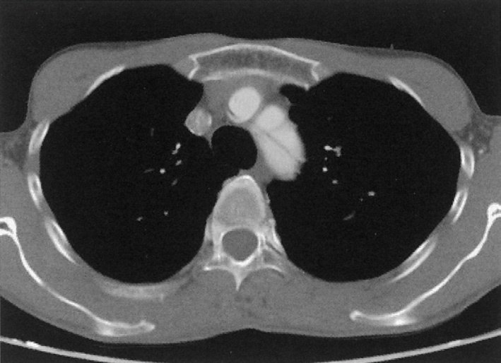
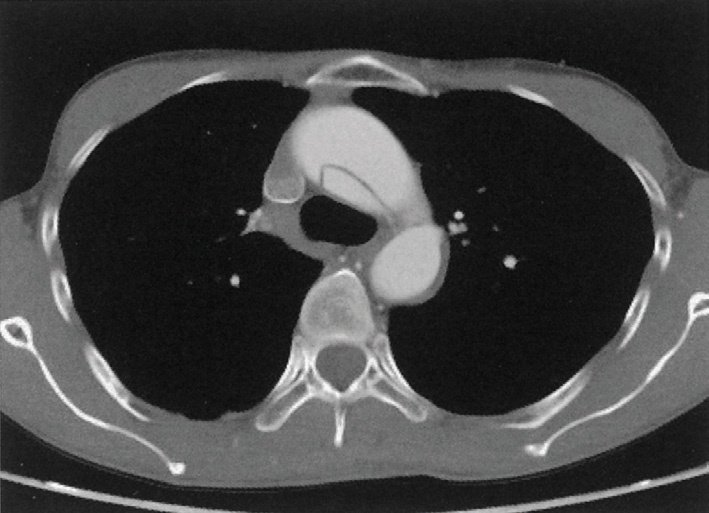
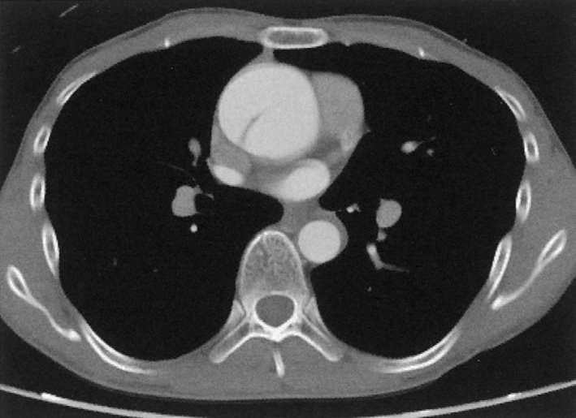
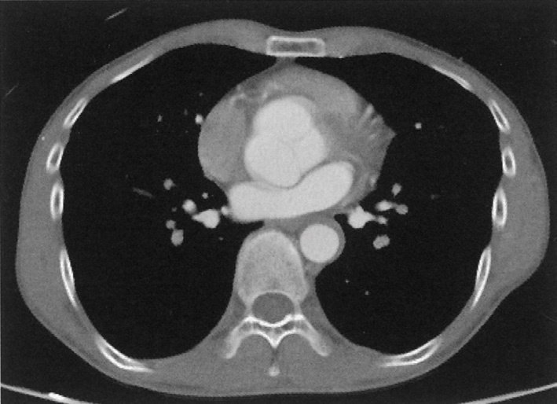
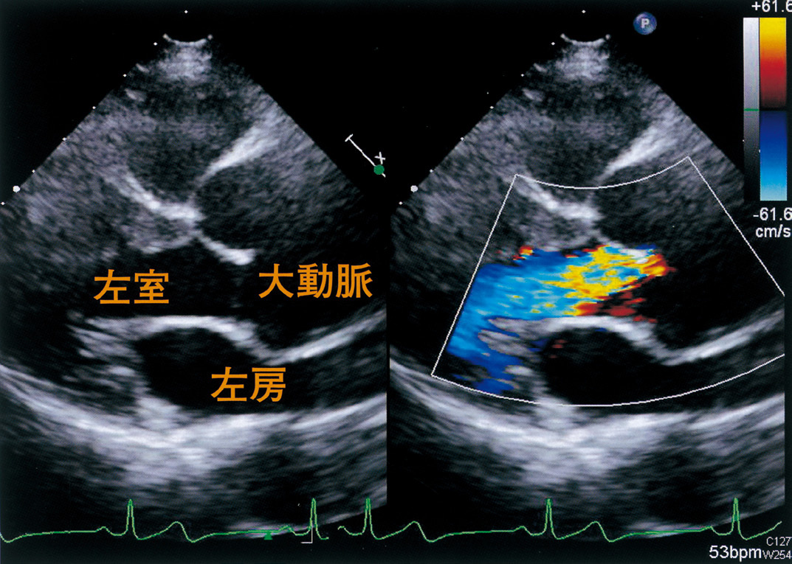
ａ 常染色体劣性遺伝である。
ｂ 大量の心囊液貯留を認める。
ｃ Stanford A 型大動脈解離である。
ｄ 大動脈弁尖に著明な石灰化を認める。
ｅ 大動脈弁置換術および人工血管置換術の適応である。
✅
ｃ Stanford A型大動脈解離である ＋ ｅ 大動脈弁置換術および人工血管置換術の適応である
マルファン症候群＋大動脈弁閉鎖不全＋大動脈解離→Stanford A型→緊急または待機的手術適応。
🧬 Marfan症候群——結合組織が脆いから大動脈基部が拡がる
Marfan症候群は15番染色体のFBN1遺伝子変異により微小線維の構成蛋白フィブリリン-1が異常となる常染色体顕性〈優性〉遺伝病である。フィブリリンの異常は微小線維の構造破綻に加えてTGF-βシグナルの過剰を招き、これが大動脈壁の中膜変性（嚢胞状中膜壊死）を進める。この機序が分かっているため、β遮断薬に加えてアンジオテンシンII受容体拮抗薬〈ARB〉が大動脈拡大の抑制に用いられる。三大病変は骨格・眼・心血管——骨格：高身長・細く長い四肢・クモ状指趾（arachnodactyly）・Steinberg母指徴候／Walker手関節徴候・漏斗胸／鳩胸・側弯・関節過可動性・高口蓋。眼：水晶体偏位〈ectopia lentis〉は上外側へずれるのが典型（ホモシスチン尿症では下内側）・強度近視・網膜剥離。心血管：大動脈基部拡張（Valsalva洞の拡大）→大動脈弁閉鎖不全→大動脈解離・破裂、僧帽弁逸脱。
予後を決めるのは心血管病変である。未治療のMarfan症候群の主な死因は大動脈解離・破裂で、本例の父親が30歳台で大動脈疾患により死亡しているのは典型的な家族歴である。
管理——① β遮断薬・ARBによる降圧と壁応力の軽減／② 年1回以上の心エコーで大動脈基部径をフォロー／③ 激しい運動・等尺性運動（重量挙げなど）・コンタクトスポーツの禁止／④ 予防的手術（大動脈基部径5cm、家族歴があれば4.5cmで考慮）／⑤ 妊娠は大動脈解離のリスクが高い（基部4cm以上では特に）ので事前カウンセリングを行う。鑑別としてホモシスチン尿症（常染色体潜性・知的障害・血栓症・水晶体は下内側偏位）、Loeys-Dietz症候群、血管型Ehlers-Danlos症候群を挙げる。
□ 選択肢の検討
| 選択肢 | 解説 |
|---|---|
| ａ 常染色体劣性遺伝である。 | 遺伝形式が違う。本例は高身長（179cm・体重50kgと痩身）・クモ状指趾・水晶体偏位・大動脈疾患による父親の30歳台での死亡からMarfan症候群と診断できる——Marfan症候群は15番染色体のFBN1遺伝子（フィブリリン-1）の変異による常染色体顕性〈優性〉遺伝である。「劣性」ではない。約25%は新生突然変異で家族歴がないこともあるが、本例は父親が大動脈疾患で若くして死亡しており家族歴が明瞭である。 |
| ｂ 大量の心囊液貯留を認める。 | 認めない。大量の心嚢液貯留があればBeckの三徴（低血圧・頸静脈怒張・心音減弱）が出るはずだが、本例は血圧104/36mmHg で拡張期は低いものの、自覚症状がなく定期受診で来院しており、頸静脈怒張の記載もない——また心嚢液貯留は急性期の合併症であり、本例は2年前に指摘された解離のフォロー中という慢性期の状況である。提示された心エコー図（E）で見るべきは心嚢液ではなく大動脈基部の拡大とARの逆流である。 |
| ◯ ｃ Stanford A 型大動脈解離である。 | これが正解の一つ。2年前は「胸部下行大動脈解離」＝Stanford B型として降圧のみで経過をみられていた。しかし今回の所見は上行大動脈にも解離が及んでいる＝Stanford A型であることを示す——その根拠は胸骨左縁第3肋間を最強点とするIV/VIの拡張期雑音＝高度の大動脈弁閉鎖不全と、血圧104/36mmHg という著明な脈圧の増大（拡張期血圧の低下）である。ARが起こるのは大動脈基部・弁輪が拡張して弁尖が合わさらなくなるためで、これは上行大動脈側の病変を意味する。胸部造影CT（A〜D）で上行大動脈のフラップを確認するのが設問の意図である。 |
| ｄ 大動脈弁尖に著明な石灰化を認める。 | 認めない。大動脈弁尖の著明な石灰化は加齢性・二尖弁・リウマチ性の大動脈弁狭窄症〈AS〉に見られる所見で、収縮期駆出性雑音を伴う——本例は34歳と若く、雑音は拡張期である。Marfan症候群で起こる大動脈弁の問題は石灰化による狭窄ではなく、基部拡張による閉鎖不全である。病態の向き（狭窄か閉鎖不全か）と時相（収縮期か拡張期か）の両方が合わない。 |
| ◯ ｅ 大動脈弁置換術および人工血管置換術の適応である。 | これが正解の一つ。Marfan症候群＋上行大動脈に及ぶ解離＋高度ARという組合せでは、大動脈基部そのものが病的に拡張しているので、上行大動脈を人工血管に置き換えるだけでは不十分である——弁と基部を一体で置換し冠動脈を再建するBentall手術、あるいは自己弁を温存して基部だけを置換するDavid手術（弁温存基部置換）が適応となる。Marfan症候群では結合組織そのものが脆弱で残した組織が将来また拡張するため、病的な基部を残さないのが原則である。なお選択肢の文言は「大動脈弁置換術および人工血管置換術の適応である」＝Bentall手術に相当する記述である。 |
🔧 大動脈基部の手術——Bentall手術とDavid手術
| 術式 | 内容 | 適応・特徴 |
|---|---|---|
| Bentall手術 | 人工弁付き人工血管〈composite graft〉で大動脈弁＋基部＋上行大動脈を一体置換し、左右の冠動脈を移植する | 弁自体が悪い場合。機械弁なら生涯の抗凝固療法が必要 |
| David手術（弁温存基部置換） | 自己弁を残し、基部の壁だけを人工血管に置き換えて弁を中に吊り直す | 弁尖が健常な若年例。抗凝固が不要という大きな利点 |
| 上行大動脈置換のみ | 基部を残して上行だけ置換 | 基部が拡張していない場合。Marfan症候群では残した基部が後で拡張しうる |
| 弓部全置換 | 弓部＋分枝再建（脳保護下） | 解離・瘤が弓部に及ぶとき |
慢性期の解離でも、A型で高度ARを伴えば手術適応である。急性A型のような分単位の緊急性ではないが、ARによる左室容量負荷が進めば不可逆的な左室拡大と心不全に至るため、待機的に手術する。ARの手術適応は症状の出現、あるいは無症状でも左室駆出率50%以下や左室収縮末期径50mm以上で、加えて大動脈基部径による適応が重なる。
⚠️ Marfan症候群の妊娠可能年齢の女性では基部径が4cm以上なら妊娠前に手術を検討する。妊娠中は循環血液量とホルモンの影響で解離のリスクが著明に上がる。
🎯 国試ポイント
① Marfan症候群は常染色体顕性〈優性〉遺伝・FBN1（フィブリリン-1）変異。「劣性」は誤り。約25%は新生突然変異。② 三徴は骨格（高身長・クモ状指趾・側弯・漏斗胸）／眼（水晶体偏位は上外側）／心血管（大動脈基部拡張・AR・解離・僧帽弁逸脱）。予後を決めるのは心血管病変。
③ ホモシスチン尿症との鑑別：常染色体潜性・知的障害・血栓症・水晶体は下内側へ偏位。
④ 脈圧の増大（拡張期血圧の低下）＋胸骨左縁第3肋間の拡張期雑音＝高度AR。解離の文脈では上行大動脈に及んでいる＝Stanford A型を意味する。
⑤ Marfan症候群の基部病変にはBentall手術（弁＋基部＋冠動脈再建）またはDavid手術（弁温存基部置換）。病的な基部を残さないのが原則。
⑥ 管理はβ遮断薬・ARB・年1回以上の心エコー・激しい運動と等尺性運動の禁止。予防的手術は基部径5cm（家族歴があれば4.5cm）。
⑦ 妊娠は解離のリスクを大きく上げる。基部4cm以上では妊娠前の介入を検討する。
Q.479(104A-23)★臨床📷 画像27%
75 歳の女性。突然の背部痛を主訴に来院した。高血圧のため投薬を受けている。胸部造影CT を示す。
合併する病態として考えにくいのはどれか。
合併する病態として考えにくいのはどれか。
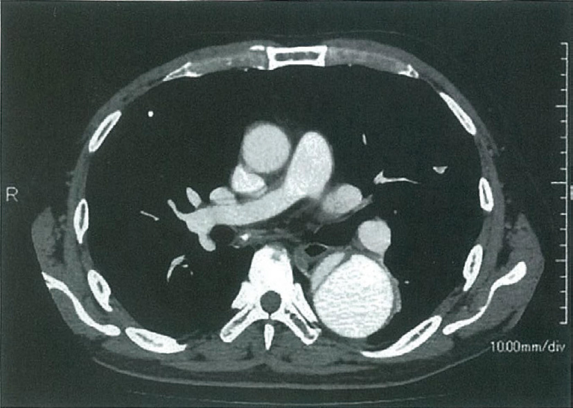
ａ 喀 血
ｂ 腸管壊死
ｃ 急性腎不全
ｄ 下肢急性虚血
ｅ 大動脈弁閉鎖不全
✅
ｅ 大動脈弁閉鎖不全
Stanford B型解離（下行大動脈のみ）→AIは上行大動脈関与のA型で合併。B型ではAIは合併しにくい。
📐 Stanford A型とB型で「起こる合併症」が違う
大動脈解離の合併症は「解離がどの範囲に及んでいるか」で決まる。したがってStanford A型とB型では起こりうる合併症の顔ぶれが変わる。A型（上行大動脈に及ぶ）に特徴的なもの——① 大動脈弁閉鎖不全〈AR〉（弁輪の拡大）／② 心タンポナーデ（心嚢内破裂。心嚢は上行大動脈を包んでいるので、上行が裂けたときだけ心嚢内に出血する）／③ 冠動脈閉塞による心筋梗塞（とくに右冠動脈入口部＝下壁梗塞）／④ 腕頭動脈・左総頸動脈の閉塞による脳梗塞。
A型・B型のどちらでも起こるもの——肋間動脈（Adamkiewicz動脈）の途絶による対麻痺、腹腔動脈・上腸間膜動脈の閉塞による腸管虚血、腎動脈閉塞による急性腎障害・腎血管性高血圧、腸骨動脈閉塞による下肢虚血、胸腔・縦隔・後腹膜への破裂、大動脈気管支瘻による喀血、大動脈食道瘻による吐血。
つまり「心臓の入口で起こること（AR・タンポナーデ・冠動脈閉塞）」がA型に固有で、「大動脈が下っていく途中の枝の問題」は両方に共通する。本問はこの切り分けを一点で問うている——AR だけがA型固有だから「考えにくい」。
⚠️ 厳密には、B型でも解離が逆行性に上行へ進展すればARやタンポナーデが起こりうる（retrograde extension）。しかし設問は「合併する病態として考えにくいのはどれか」＝相対的に最も起こりにくいものを選ばせているので、CTで上行が正常な本例ではARが答えになる。
なぜ正答率27%まで落ちるのか——受験生の多くは「大動脈解離の合併症」を一つの箱にまとめて覚えており、ARもタンポナーデも腸管虚血も下肢虚血も同じ引き出しに入っている。本問はその箱をA型固有／両型共通に割り直せるかを問うている。加えて喀血（大動脈気管支瘻）が耳慣れないため「これが考えにくい」と誤って選びやすい——しかし下行大動脈は左主気管支のすぐ背側を走るので、破裂すれば気管支へ穿破するのはむしろ解剖学的に自然である。同様に大動脈食道瘻もあり、こちらは吐血を起こす。前哨出血（少量の出血が先行し、しばらくして大量出血する）という特徴的な経過をとることがある。
□ 選択肢の検討
| 選択肢 | 解説 |
|---|---|
| ａ 喀 血 | 起こりうる。下行大動脈の解離が拡大・破裂すると左胸腔や気管支へ穿破しうる——大動脈と気管支の間に瘻（大動脈気管支瘻）ができれば喀血が起こり、しばしば致死的な大量喀血となる。また肋間動脈の巻き込みや胸腔内への漏出で血性胸水を生じることもある。「考えにくい」とは言えない。 |
| ｂ 腸管壊死 | 起こりうる。解離が腹部大動脈へ進展すると腹腔動脈・上腸間膜動脈が偽腔に圧排されて閉塞し、腸管虚血・腸管壊死が起こる——臨床像は所見に不釣り合いなほど激しい腹痛・血便・代謝性アシドーシス・乳酸高値で、進行すれば汎発性腹膜炎に至る。下行大動脈から始まる解離（B型）で最も警戒すべき臓器灌流障害の一つである。 |
| ｃ 急性腎不全 | 起こりうる。腎動脈が偽腔に圧排されれば腎虚血となり、急性腎障害・乏尿・血清クレアチニン上昇を生じる——片側ならレニン分泌亢進による腎血管性高血圧を、両側なら急性腎不全を起こす。腎動脈は腹部大動脈から出るので、下行から腹部へ進展する解離では典型的に巻き込まれる分枝である。 |
| ｄ 下肢急性虚血 | 起こりうる。解離が総腸骨動脈・大腿動脈へ及べば下肢の血流が絶たれ、急性下肢虚血（5P徴候＝疼痛・蒼白・脈拍消失・知覚異常・運動麻痺）が起こる——下肢の脈拍触知不良・左右差はベッドサイドで容易に拾えるサインであり、解離を疑う手がかりにもなる。放置すれば下肢切断に至るため、灌流障害を伴うB型解離は血行再建やTEVARの適応となる。 |
| ◯ ｅ 大動脈弁閉鎖不全 | これが考えにくい＝正解。提示された胸部造影CTでは下行大動脈が拡張して内部にフラップ（隔壁）があり二腔に分かれている一方、上行大動脈は正常径で単一の内腔として造影されている——すなわちStanford B型である。大動脈弁閉鎖不全は「大動脈弁輪が引き伸ばされる」ことで起こるので、上行大動脈（基部）に解離が及んでいなければ起こらない＝A型に特徴的な合併症である。他の4つはすべて下行〜腹部の分枝の灌流障害・穿破で説明でき、B型でも当然に起こる。この設問は「解離の合併症を、Stanford分類のどちら側で起こるかまで分けて理解しているか」を問うており、正答率27%という難問になっている。 |
🩻 造影CTの読みどころ——A型かB型かをどこで判断するか
| 見るもの | 所見 | 意味 |
|---|---|---|
| 上行大動脈の内腔 | フラップ（線状の隔壁）があるか | あれば A型（緊急手術）／なければ B型 |
| 真腔と偽腔 | 真腔は小さく造影が濃い／偽腔は大きく造影が遅れる。偽腔にくちばし徴候〈beak sign〉 | エントリー・リエントリーの推定 |
| 心嚢液 | 心嚢内の高吸収域 | 心嚢内破裂＝タンポナーデ。A型の最多死因 |
| 分枝の造影 | 腹腔動脈・上腸間膜動脈・腎動脈・腸骨動脈が真腔から出ているか偽腔に潰されていないか | 臓器灌流障害の有無 |
| 胸水・縦隔血腫 | 左胸腔優位の液体貯留 | 切迫破裂・破裂 |
| 壁在血栓と石灰化の位置 | 内膜石灰化が内腔側へ「浮いて」見える | 単純CTでも解離を疑える所見 |
保存療法を選んだB型でも急性期は集中治療室で厳格に管理し、腹痛・血便・尿量低下・下肢の脈拍消失・下肢の運動麻痺が出ないかを繰り返し確認する。これらは灌流障害の出現＝方針転換のサインである。慢性期は生涯にわたる降圧と定期的なCTでの径のフォローが要る。偽腔が開存したまま拡大すれば慢性解離性大動脈瘤となり、手術適応（径5.5〜6cm）に達する。
🎯 国試ポイント
① 大動脈弁閉鎖不全はStanford A型に固有の合併症（弁輪の拡大による）。B型では考えにくい——本問の答え。② 心タンポナーデもA型に固有。心嚢は上行大動脈を包むので、上行が裂けたときだけ心嚢内へ出血する。
③ 喀血・腸管壊死・急性腎障害・下肢急性虚血はA型でもB型でも起こる——いずれも「大動脈が下っていく途中の枝」の問題だから。
④ 造影CTではまず上行大動脈にフラップがあるかを見る。あればA型で緊急手術、なければB型。
⑤ B型は合併症がなければ降圧の保存療法、合併症（破裂・灌流障害・難治性疼痛や高血圧）があればTEVAR。
⑥ B型の保存療法中は腹痛・血便・尿量・下肢の脈拍と運動を繰り返し確認する。灌流障害の出現は方針転換のサイン。
⑦ 大動脈気管支瘻＝喀血、大動脈食道瘻＝吐血。いずれも大量出血で致命的。
Q.480(118A-1)CBT一般94%
無症状で発見されることが多い疾患はどれか。
ａ 大動脈解離
ｂ 腹部大動脈瘤
ｃ 感染性心内膜炎
ｄ 冠攣縮性狭心症
ｅ たこつぼ心筋症
✅
ｂ 腹部大動脈瘤
AAAは破裂まで無症状のことが多い。健診や他疾患の検索中に偶然発見される。
🔕 「無症状で見つかる」ことが臨床像そのものである病気
腹部大動脈瘤〈AAA〉の本質は「大きくなる過程に痛みがない」ことである——動脈の壁が少しずつ薄く伸びていくだけなので、周囲を圧迫するほど大きくならない限り患者は何も感じない。そして気づいたときには破裂して致死率80〜90%という結末になる。だから診療戦略は「見つける仕組み」を作ることに向かう——健診の腹部超音波、他疾患のCTでの偶発発見〈incidentaloma〉、そして海外では65〜75歳の喫煙歴のある男性に対する超音波スクリーニングが推奨されている（死亡率を下げるエビデンスがある）。
AAAが症状を出す4つの場面——① 破裂（突然の腰背部痛・ショック・拍動性腫瘤＝三徴）／② 切迫破裂（急に強くなった腹痛・腰背部痛。バイタルはまだ保たれる）／③ 炎症性腹部大動脈瘤（腰背部痛・微熱・CRP上昇・水腎症。IgG4関連疾患との関連）／④ 瘤内血栓からの末梢塞栓（blue toe syndrome）。これらはいずれも「見つかったあと」ではなく「手遅れになりかけ」の場面である。
⚠️ 破裂の前兆としての腰背部痛を「腰痛症」と診断してしまう誤りが繰り返し報告されている。高齢者の突然の腰背部痛では、必ず腹部の拍動性腫瘤を触れて、貧血とショックの有無を確認する。
同じ「無症状で見つかる循環器疾患」としては高血圧・脂質異常症・無症候性心筋虚血・無症候性心房細動・大動脈弁狭窄症の初期なども挙がるが、本問の選択肢の中で該当するのは腹部大動脈瘤だけである。
□ 選択肢の検討
| 選択肢 | 解説 |
|---|---|
| ａ 大動脈解離 | 症状が派手である。大動脈解離は突然発症の激烈な胸背部痛で始まるのが原則で、「無症状で発見される」病気ではない——痛みは発症の瞬間が最も強く、しばしば「引き裂かれるような」「これまで経験したことのない」と表現される。ごく一部に無痛性解離（高齢者・糖尿病・意識障害例）はあるが、それは例外であり「多い」とは言えない。 |
| ◯ ｂ 腹部大動脈瘤 | これが正解。腹部大動脈瘤は拡大していく過程がまったく無症状で、健診の腹部超音波検査や、他疾患の精査で撮ったCTで偶然見つかることが圧倒的に多い——症状が出るとすれば破裂したとき（突然の腰背部痛・ショック・拍動性腫瘤）か、切迫破裂・炎症性瘤・周囲臓器の圧迫のときである。だからこそ「症状がないから経過観察」ではなく、径が5.5cmに達したら症状の有無にかかわらず予防的に治すという治療戦略が取られる。身体所見としては上腹部の拡張性拍動性腫瘤が拾えるが、肥満例では触知できない。 |
| ｃ 感染性心内膜炎 | 症状がある。感染性心内膜炎は持続する発熱が最も多い症状で、ほかに心雑音（新規または変化した逆流性雑音）・全身倦怠感・体重減少・塞栓症状を伴う——Osler結節・Janeway病変・爪下線状出血・Roth斑といった血管現象や免疫学的現象も現れる。亜急性の経過で「不明熱」として紹介されることはあっても、無症状ではない。 |
| ｄ 冠攣縮性狭心症 | 症状がある。冠攣縮性狭心症は夜間から早朝、安静時に起こる胸部絞扼感が特徴的な症状である——飲酒・喫煙・過換気が誘因となり、発作時心電図で一過性のST上昇を認める。発作がなければ検査は正常なので「診断がつきにくい」ことはあるが、患者は症状を自覚している点で本問の答えにならない。 |
| ｅ たこつぼ心筋症 | 症状がある。たこつぼ心筋症は強い精神的・身体的ストレスを契機に、急性心筋梗塞と区別がつかない胸痛・呼吸困難で発症する——心電図でST上昇、心エコー・左室造影で心尖部の無収縮と基部の過収縮（たこつぼ様）を認めるが、冠動脈に有意狭窄がない。高齢女性に多く、多くは数週間で可逆的に回復する。いずれにせよ症状があって受診する疾患である。 |
📋 選択肢の疾患を「初発症状」で並べ直す
| 疾患 | 典型的な初発症状 | 無症状で見つかるか |
|---|---|---|
| 大動脈解離 | 突然発症・発症時が最強の胸背部痛（移動する） | まれ（無痛性解離は例外） |
| 腹部大動脈瘤 | なし。健診の腹部超音波や他疾患のCTで偶然 | これが典型 |
| 感染性心内膜炎 | 持続する発熱・倦怠感・体重減少・新規の逆流性雑音・塞栓症状 | なし（不明熱として遅れることはある） |
| 冠攣縮性狭心症 | 夜間・早朝の安静時胸痛。発作時ST上昇 | なし |
| たこつぼ心筋症 | ストレスを契機とした急性の胸痛・呼吸困難。心尖部無収縮 | なし |
AAAのフォロー間隔も併せて押さえる——3.0〜3.9cmなら2〜3年ごと、4.0〜4.9cmなら1年ごと、5.0cm以上なら3〜6か月ごとに超音波またはCTで径を測る。拡大速度は径が大きいほど速く、半年で5mm以上（1年で10mm以上）拡大すれば径が5.5cm未満でも手術を考慮する。
危険因子の管理としては禁煙が最優先で、次いで降圧（β遮断薬・ARB）とスタチン。喫煙は瘤の拡大速度を明らかに速めるので、フォロー中の患者にこそ禁煙指導が要る。またAAA患者は虚血性心疾患・脳血管障害の合併率が高いため、瘤だけを見ずに全身の動脈硬化を評価する。
紛らわしい病態の整理——炎症性腹部大動脈瘤は瘤壁が厚く周囲に線維化を伴い、腰背部痛・微熱・赤沈亢進・CRP上昇を呈し、尿管を巻き込んで水腎症を作ることがある。後腹膜線維症やIgG4関連疾患との関連が指摘されており、ステロイドが奏効することがある点で通常の動脈硬化性瘤と異なる。感染性（真菌性）大動脈瘤は発熱・炎症反応高値・急速に拡大する嚢状瘤が特徴で、径によらず緊急手術＋長期の抗菌薬を要する。起炎菌はサルモネラ・黄色ブドウ球菌が代表である。
破裂の型も知っておくと理解が深まる——後腹膜へ破裂した場合は血腫が一時的にタンポナーデ効果を発揮して血圧が保たれることがある（それでも数時間で破綻する）が、腹腔内へ自由破裂すれば数分で失血死する。まれに下大静脈へ穿破して大動脈静脈瘻となり高拍出性心不全を、十二指腸へ穿破して大動脈腸管瘻となり大量下血を起こす。
🎯 国試ポイント
① 腹部大動脈瘤は無症状で偶然見つかるのが典型。健診の腹部超音波・他疾患のCTが発見契機。破裂すれば致死率80〜90%。② 大動脈解離は突然の激烈な胸背部痛で無症状ではない。感染性心内膜炎は発熱、冠攣縮性狭心症は夜間・早朝の安静時胸痛、たこつぼ心筋症はストレス後の急性胸痛。
③ AAAのフォロー間隔＝3cm台は2〜3年、4cm台は1年、5cm以上は3〜6か月。手術は5.5cm以上または半年で5mm以上の拡大。
④ 破裂の三徴＝突然の腰背部痛・ショック・拍動性腫瘤。高齢者の突然の腰背部痛を腰痛症と決めつけない。
⑤ 喫煙はAAAの発生・拡大・破裂すべてに効く最大の危険因子。禁煙指導が治療の一部である。
⑥ AAAが症状を出す場面＝破裂・切迫破裂・炎症性瘤・末梢塞栓（blue toe syndrome）。
Q.481(116D-6)一般76%
大動脈瘤の原因にならないのはどれか。
ａ 梅 毒
ｂ 動脈硬化
ｃ Buerger 病
ｄ 高安動脈炎
ｅ Marfan 症候群
✅
ｃ Buerger病
Buerger病（血栓閉塞性血管炎）は末梢小動脈・静脈の閉塞性疾患→大動脈瘤の原因にならない。
🧱 大動脈瘤の成因——「中膜が壊れるか否か」で分ける
動脈瘤ができる条件はただ一つ、中膜（弾性線維とコラーゲン）が壊れて壁が血圧に耐えられなくなることである——したがって「中膜を壊す病気」はすべて大動脈瘤の原因になり、「内腔を詰める病気」は原因にならない。この一線で本問は解ける。中膜を壊すもの＝瘤を作る：
・動脈硬化（最多）——MMPによる中膜の分解。腎動脈下の腹部大動脈に好発
・遺伝性結合組織病——Marfan症候群（FBN1）・Loeys-Dietz症候群（TGFBR）・血管型Ehlers-Danlos症候群（COL3A1）。基部・上行に好発
・大型血管炎——高安動脈炎（若年女性）・巨細胞性動脈炎（高齢者・側頭動脈炎）。狭窄も瘤も作る
・梅毒——vasa vasorumの閉塞性内膜炎により上行大動脈に瘤。樹皮状石灰化
・感染性（真菌性）大動脈瘤——菌血症から壁に感染巣。嚢状で急速に拡大し破裂しやすい。サルモネラ・ブドウ球菌
・外傷性（減速外傷で峡部）・二尖弁に伴う上行大動脈拡張・大動脈縮窄症
内腔を詰めるもの＝瘤を作らない：Buerger病（四肢の中小動脈の血栓性閉塞。血管壁の構造は保たれる）、閉塞性動脈硬化症の狭窄病変、急性動脈塞栓症、血栓性静脈炎。
形による分類も押さえる——紡錘状（全周性。動脈硬化性に多い）と嚢状（一部が袋状に膨らむ。感染性・外傷性・梅毒性に多く破裂しやすいので小さくても手術適応）。また壁の構造が保たれる真性瘤と、壁が破れて周囲組織で覆われた仮性瘤（外傷後・吻合部）を区別する。
□ 選択肢の検討
| 選択肢 | 解説 |
|---|---|
| ａ 梅 毒 | 原因になる。梅毒（第3期・晩期梅毒）は上行大動脈の栄養血管〈vasa vasorum〉に閉塞性動脈内膜炎を起こし、中膜の弾性線維を破壊して瘤を作る——これが梅毒性大動脈瘤で、上行大動脈に好発し、大動脈弁輪拡大によるARや冠動脈入口部狭窄を伴う。胸部エックス線写真での線状（樹皮状）の石灰化が古典的所見である。抗菌薬の普及で激減したが、大動脈瘤の原因として国試では今も問われる。 |
| ｂ 動脈硬化 | 原因になる。動脈硬化は大動脈瘤の最多の原因である——粥腫が内膜に沈着し、中膜の弾性線維とコラーゲンがマトリックスメタロプロテアーゼ〈MMP〉によって分解されて壁が薄く弱くなり、血圧に押されて紡錘状に拡張する。危険因子は喫煙・高齢・男性・高血圧・脂質異常症・家族歴で、好発部位は腎動脈下の腹部大動脈である。 |
| ◯ ｃ Buerger 病 | これが原因にならない＝正解。Buerger病〈閉塞性血栓血管炎・TAO〉は四肢の中小動脈と表在静脈に炎症性の血栓性閉塞を起こす疾患で、大動脈のような大血管は侵さない——つまり血管を「詰まらせる」病気であって「拡げる」病気ではない。この一点で他の4つと決定的に異なる。若年（40歳未満）・男性・重度の喫煙者に発症し、喫煙との関連が極めて強い（禁煙が最大の治療）。症状は間欠性跛行・安静時痛・指趾の潰瘍と壊疽・遊走性静脈炎・Raynaud現象で、動脈造影では「コルクの栓抜き状〈corkscrew〉の側副血行路が特徴的である。組織学的には血管壁の構造が保たれたまま内腔に炎症細胞を含む血栓が詰まるのが特徴で、中膜が壊れないから瘤にならない。 |
| ｄ 高安動脈炎 | 原因になる。高安動脈炎（大動脈炎症候群）は大動脈とその主要分枝を侵す大型血管炎で、若年女性に好発する——炎症により狭窄・閉塞を起こすことが多く（脈なし病）、上肢の脈拍消失・血圧左右差・血管雑音が有名だが、中膜の破壊により拡張性病変＝大動脈瘤・大動脈弁輪拡張によるARも生じる。「狭窄も瘤も作る」のが大型血管炎の特徴である。巨細胞性動脈炎も同様に胸部大動脈瘤の原因となる。 |
| ｅ Marfan 症候群 | 原因になる。Marfan症候群はFBN1（フィブリリン-1）変異による常染色体顕性遺伝の結合組織病で、大動脈中膜の弾性線維が脆弱である——典型的には大動脈基部（Valsalva洞）が拡張して洋梨型の瘤となり、AR・大動脈解離・破裂に至る（Q.478 参照）。同様の機序で瘤を作る遺伝性疾患としてLoeys-Dietz症候群・血管型Ehlers-Danlos症候群があり、いずれも若年での大動脈イベントが問題となる。 |
🔍 Buerger病——「瘤を作らない血管病」の代表
| Buerger病〈TAO〉 | 閉塞性動脈硬化症〈ASO〉 | |
|---|---|---|
| 好発 | 40歳未満・男性・重喫煙者 | 60歳以上・糖尿病・脂質異常症 |
| 侵す血管 | 四肢の中小動脈・表在静脈（大血管は侵さない） | 腸骨・大腿など比較的大きな動脈 |
| 上肢の病変 | あり（手指の潰瘍も多い） | まれ（下肢が中心） |
| 特徴的所見 | 遊走性静脈炎・Raynaud現象・corkscrew側副血行路 | 石灰化・ABI低下 |
| 瘤の形成 | しない（中膜の構造が保たれる） | する（中膜が分解される） |
| 治療 | 絶対禁煙・血管拡張薬・交感神経節ブロック・血行再建は困難 | 危険因子是正・運動療法・抗血小板薬・EVT・バイパス |
同じ「若年男性」でも、Buerger病は詰まって指趾が黒くなるのに対し、Marfan症候群は伸びて大動脈が裂ける——「詰まる病気」と「伸びる病気」を対にして覚えると混同しない。
高安動脈炎が「狭窄も瘤も作る」のは、炎症が中膜を壊しつつ、修復のための線維化が内腔を狭めるという二面性による。若年女性の発熱・全身倦怠感・頸部痛で始まり、上肢の脈拍消失・血圧左右差・頸部や鎖骨下の血管雑音・高安型高血圧（腎動脈狭窄）を呈する。治療は副腎皮質ステロイドが主体である。⚠️ 大型血管炎の活動期に手術・血管内治療を行うと吻合部仮性瘤や再狭窄を起こしやすいので、炎症を鎮めてから行うのが原則である。
🎯 国試ポイント
① Buerger病は大動脈瘤の原因にならない——四肢の中小動脈を詰まらせる病気で、中膜の構造が保たれるため拡張しない。② 瘤を作るのは「中膜を壊す病気」：動脈硬化（最多）・Marfan症候群などの結合組織病・高安動脈炎や巨細胞性動脈炎・梅毒・感染性・外傷性。
③ 梅毒性大動脈瘤は上行大動脈に好発し、AR・冠動脈入口部狭窄・樹皮状石灰化を伴う。
④ 高安動脈炎は若年女性、巨細胞性動脈炎は高齢者。どちらも狭窄も瘤も作る。治療はステロイド。
⑤ Buerger病は40歳未満・男性・重喫煙。遊走性静脈炎・Raynaud現象・corkscrew側副血行路が特徴で、治療の第一は絶対禁煙。
⑥ 嚢状瘤は破裂しやすいので径が小さくても手術適応。感染性（真菌性）瘤は急速に拡大し破裂する。
Q.482(114B-32)必修CBT臨床📷 画像97%
70 歳の女性。突然の胸背部痛と呼吸困難のため救急車で搬入された。洗濯物を干していたとき、突然、激烈な胸背部痛を自覚した。発症10 分後くらいから息苦しさが出現し、喘鳴も生じてきたため救急車を要請した。意識レベルはJCSⅡ-10。心拍数110/ 分、整。血圧は76/38mmHg で左右差を認めない。呼吸数24/ 分。SpO2 94％（リザーバー付マスク10L/ 分酸素投与下）。冷汗を認め、皮膚は湿潤している。両側胸部にcoarse crackles を聴取する。胸骨左縁第3 肋間を最強とするⅢ/Ⅵの拡張期雑音を認める。血液所見：赤血球350 万、Hb 11.6g/dL、Ht 39％、白血球9,600、血小板21 万。血液生化学所見：AST 30U/L、ALT 26U/L、尿素窒素14mg/dL、クレアチニン0.6mg/dL、血糖99mg/dL、Na 136mEq/L、K 3.8mEq/L、Cl 100mEq/L。心電図では明らかなST-T 変化は認めない。胸部エックス線写真（A）及び心エコー図（B，C）を示す。
適切な対応はどれか。
適切な対応はどれか。
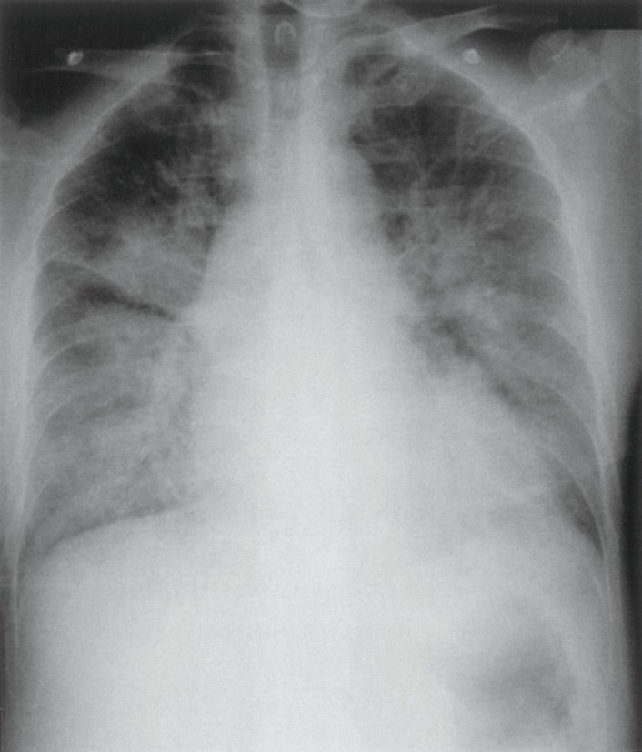
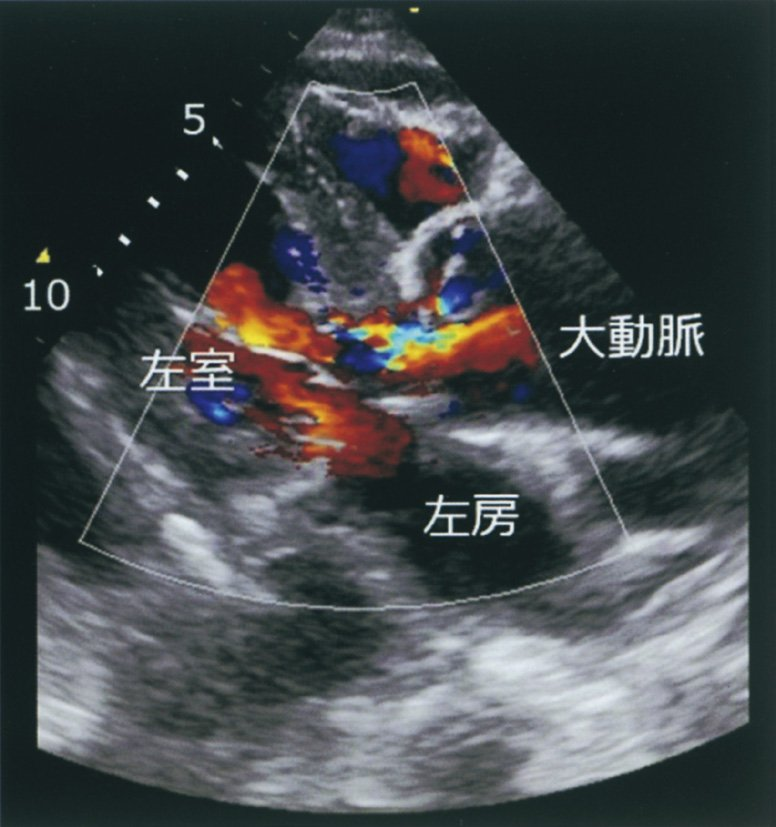
ａ 緊急手術
ｂ 降圧薬投与
ｃ 胸腔ドレナージ
ｄ 経皮的冠動脈形成術
ｅ 大動脈内バルーンパンピング〈IABP〉挿入
✅
ａ 緊急手術
AI合併Stanford A型→緊急手術（AI修復+人工血管置換）。AI合併でも手術の緊急性は変わらない。
🌊 急性大動脈弁閉鎖不全——「慢性ARの所見」が出ないことが特徴
Stanford A型解離が大動脈弁輪を引き伸ばすと急性の大動脈弁閉鎖不全が生じる。急性ARは慢性ARとまったく違う臨床像をとる——この違いを理解していないと、本例のような「拡張期雑音があるのに脈圧が広がっていない」症例を読み違える。慢性AR——年単位でゆっくり進むため左室が拡大して代償する。1回拍出量が増えるので収縮期血圧が上がり拡張期血圧が下がって脈圧が増大し、速脈・大脈（Corrigan脈）・de Musset徴候・Quincke徴候といった末梢血管徴候が揃う。雑音は大きく長い漸減性拡張期雑音で、長く無症状のまま経過する。
急性AR——左室に代償する時間がない。正常サイズの左室に大量の逆流が突然加わるので左室拡張末期圧が急上昇し、そのまま左房圧・肺静脈圧へ伝わって急性肺水腫となる。前方拍出量は減るので血圧は下がり、脈圧は広がらない。末梢血管徴候は出ない。頻脈で代償しようとする。雑音は短く柔らかく、聴き取りにくい（左室圧と大動脈圧が早期に等圧化するため）。I音は僧帽弁の早期閉鎖により減弱する。
つまり急性ARは「雑音が目立たないのに患者は重症」という危険な顔をしている——本例のIII/VIという中等度の雑音と76/38mmHgのショック・肺水腫の不釣り合いが、まさにこれである。
急性ARの原因は大動脈解離・感染性心内膜炎による弁尖の穿孔や破壊・外傷の3つが柱で、いずれも緊急手術が必要になる。
□ 選択肢の検討
| 選択肢 | 解説 |
|---|---|
| ◯ ａ 緊急手術 | これが正解。本例は突然の胸背部痛＋胸骨左縁第3肋間のIII/VIの拡張期雑音（＝急性AR）＋両側coarse crackles（＝肺水腫）＋血圧76/38mmHgのショックという組合せである——これはStanford A型大動脈解離が大動脈弁輪を引き伸ばして急性大動脈弁閉鎖不全を起こし、急性左心不全に陥った状態を示す。A型解離は診断即手術であり、ARによる急性肺水腫を伴うならなおさら猶予がない。胸部エックス線写真（A）で縦隔陰影の拡大と肺うっ血、心エコー図（B・C）で上行大動脈のフラップとARの逆流が確認されているはずである。心電図でST-T変化がないことは急性冠症候群を遠ざけ、解離の像に合致する。 |
| ｂ 降圧薬投与 | 単独では不十分・かつ危険。解離の内科的治療の柱は降圧だが、それは血圧が高いときの話である——本例は血圧76/38mmHgとすでにショックで、ここにさらに降圧薬を投与すれば臓器灌流が破綻する。A型解離で低血圧を見たら心タンポナーデ・大動脈弁閉鎖不全による心不全・破裂による失血を考え、降圧ではなく手術へ向かう。「解離＝降圧」と機械的に覚えていると誤る典型の設問である。 |
| ｃ 胸腔ドレナージ | 適応がない。胸腔ドレナージは気胸・血胸・膿胸の処置である——本例の呼吸不全は両側性のcoarse crackles＝肺水腫によるもので、胸腔内に空気や液体が溜まっているわけではない。仮に左胸腔への破裂による血胸があったとしても、救命の本体は止血＝緊急手術であり、ドレナージだけでは失血を止められない。 |
| ｄ 経皮的冠動脈形成術 | 誤ると致命的。経皮的冠動脈形成術は急性冠症候群の治療だが、本例は心電図に明らかなST-T変化がない——それ以上に重大なのは、解離した大動脈にカテーテルを通せば偽腔へ迷入して解離を拡大させることと、PCIに伴う抗血小板薬・抗凝固薬が出血を助長することである。「胸痛＋ショック」で反射的にカテーテル室へ運ぶ前に、拡張期雑音と胸部エックス線写真の縦隔をひと目見るのが解離を見逃さないための習慣である。 |
| ｅ 大動脈内バルーンパンピング〈IABP〉挿入 | 禁忌。IABPは下行大動脈に留置したバルーンを拡張期に膨らませる装置である——解離のある大動脈で膨らませれば偽腔を押し広げて解離を進展・破裂させる。さらに拡張期に大動脈を閉塞するので、ARでは逆流量を増やして心不全を悪化させる。本例はA型解離かつ高度AR——IABPの絶対禁忌が二重に成立している。心原性ショックの補助循環としてIABPを想起するのは自然だが、解離とARという2つの禁忌を必ずセットで思い出すこと。 |
⚖️ A型解離のショック——低血圧を見たら何を考えるか
| 低血圧の原因 | 手がかり | 対応 |
|---|---|---|
| 急性AR による心不全 | 拡張期雑音＋肺水腫（両側coarse crackles）。脈圧は広がらない | 緊急手術（弁形成・置換＋人工血管置換） |
| 心タンポナーデ | 頸静脈怒張＋心音減弱＋奇脈。肺野はきれい | 緊急手術（穿刺は原則行わない） |
| 冠動脈閉塞による心筋梗塞 | 下壁誘導のST上昇・壁運動異常 | 緊急手術（同時に冠動脈再建） |
| 破裂による失血 | 貧血の進行・血胸・縦隔血腫 | 輸血しつつ緊急手術 |
肺水腫の鑑別としての読み——両側coarse cracklesを見ると急性心不全を考えるが、その原因を「虚血」だけに絞ってはいけない。突然の胸背部痛を伴う急性肺水腫では、急性ARと急性MR（乳頭筋断裂）の2つを必ず思い出す。雑音の時相で分ける——拡張期＝AR（大動脈解離）／収縮期＝MR（心筋梗塞後）。
なお本例で心電図にST-T変化がないことは重要な陰性所見である——解離が冠動脈に及んでいないことを示唆し、同時に急性冠症候群を主病態から遠ざける。ただし解離では初期の心電図が正常であることが多いので、心電図が正常なことは解離の除外にならない。
術式は上行大動脈人工血管置換＋大動脈弁への処置となる。弁尖自体が健常で弁輪拡大だけが原因なら弁を吊り直して温存できることが多く、弁尖が損傷していれば弁置換（Bentall手術）を行う。
🎯 国試ポイント
① A型解離＋急性AR＋肺水腫＋ショック＝緊急手術。内科的・カテーテル的な選択肢はすべて誤り。② 急性ARは慢性ARと違い、脈圧増大や末梢血管徴候が出ない。雑音は短く柔らかいのに患者は肺水腫とショック——この不釣り合いが特徴。
③ 解離で低血圧を見たら降圧しない。タンポナーデ・急性AR・冠動脈閉塞・破裂を考え、手術へ向かう。「解離＝降圧」は血圧が高いときの話。
④ IABPは大動脈解離と高度ARの絶対禁忌——偽腔を広げ、拡張期の逆流を増やす。
⑤ 突然の胸背部痛＋急性肺水腫では急性ARと急性MRを想起。拡張期雑音＝AR（解離）／収縮期雑音＝MR（乳頭筋断裂）。
⑥ 急性ARの3大原因＝大動脈解離・感染性心内膜炎・外傷。いずれも緊急手術。
⑦ 解離では心電図が正常なことが多いので、心電図正常は除外の根拠にならない。
Q.483(114C-69)臨床📷 画像20%
次の文を読み、483 ～485 の問いに答えよ。
66 歳の男性。胸背部痛と左上下肢の筋力低下のため救急車で搬入された。
現病歴：本日午前11 時、デスクワーク中に本棚上段から書類を取ろうと手を伸ばしたところ、激烈な胸背部痛が突然出現した。その後すぐに左片麻痺が出現し、さらに重苦しい胸痛と冷汗が出現したため、発症から30 分後に救急車を要請した。
既往歴：2 年前から高血圧症で通院治療中。
生活歴：妻と2 人暮らし。喫煙歴はない。飲酒は機会飲酒。
家族歴：父親は脳出血のため86 歳で死亡。母は胃癌のため88 歳で死亡。
現 症：意識は清明。身長162cm、体重80kg。血圧78/62mmHg で明らかな左右差を認めない。脈拍108/ 分（微弱）、整。呼吸数18/ 分。SpO2 99％（room air）。頸静脈の怒張を認める。眼瞼結膜に貧血を認めない。心音はⅠ音Ⅱ音とも減弱しており、胸骨左縁第3 肋間を最強とするⅡ/Ⅵの拡張期灌水様雑音を認める。呼吸音に異常を認めない。腹部は平坦、軟で、肝・脾を触知しない。左上下肢に不全片麻痺を認め、Babinski 徴候は陽性である。
検査所見：心電図は、心拍数108/ 分の洞調律で、肢誘導および胸部誘導ともに低電位で、Ⅱ、Ⅲ、aVf にST 上昇を認めた。ポータブル撮影機による仰臥位の胸部エックス線写真（A）及び6 か月前に撮影された立位の胸部エックス線写真（B）を示す。胸部エックス線写真を見比べながら、研修医が指導医に所見や解釈を報告した。
適切なのはどれか。
66 歳の男性。胸背部痛と左上下肢の筋力低下のため救急車で搬入された。
現病歴：本日午前11 時、デスクワーク中に本棚上段から書類を取ろうと手を伸ばしたところ、激烈な胸背部痛が突然出現した。その後すぐに左片麻痺が出現し、さらに重苦しい胸痛と冷汗が出現したため、発症から30 分後に救急車を要請した。
既往歴：2 年前から高血圧症で通院治療中。
生活歴：妻と2 人暮らし。喫煙歴はない。飲酒は機会飲酒。
家族歴：父親は脳出血のため86 歳で死亡。母は胃癌のため88 歳で死亡。
現 症：意識は清明。身長162cm、体重80kg。血圧78/62mmHg で明らかな左右差を認めない。脈拍108/ 分（微弱）、整。呼吸数18/ 分。SpO2 99％（room air）。頸静脈の怒張を認める。眼瞼結膜に貧血を認めない。心音はⅠ音Ⅱ音とも減弱しており、胸骨左縁第3 肋間を最強とするⅡ/Ⅵの拡張期灌水様雑音を認める。呼吸音に異常を認めない。腹部は平坦、軟で、肝・脾を触知しない。左上下肢に不全片麻痺を認め、Babinski 徴候は陽性である。
検査所見：心電図は、心拍数108/ 分の洞調律で、肢誘導および胸部誘導ともに低電位で、Ⅱ、Ⅲ、aVf にST 上昇を認めた。ポータブル撮影機による仰臥位の胸部エックス線写真（A）及び6 か月前に撮影された立位の胸部エックス線写真（B）を示す。胸部エックス線写真を見比べながら、研修医が指導医に所見や解釈を報告した。
適切なのはどれか。
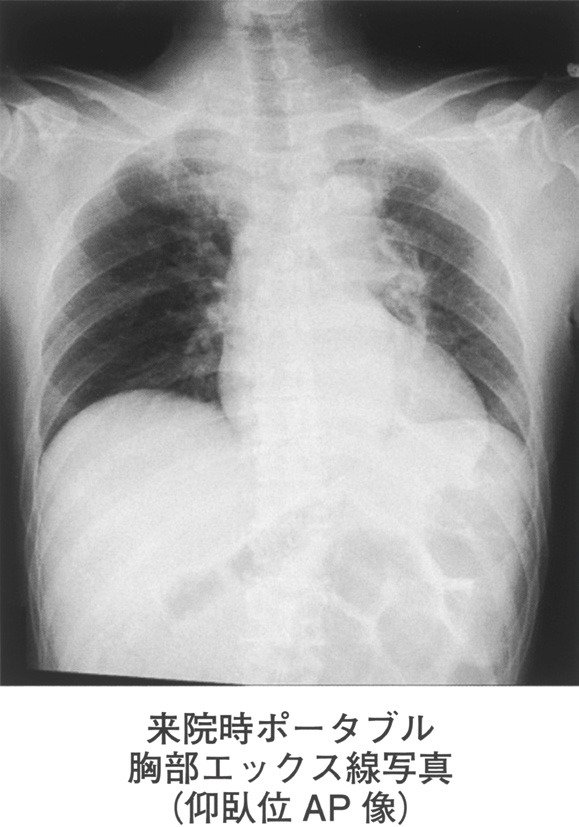
ａ 「6 か月前と比較して胃泡が多くなっています」
ｂ 「本日の写真では下行大動脈が認められません」
ｃ 「本日の写真では著しい気管の偏位が認められます」
ｄ 「6 か月前と心拡大の程度を比較するのは困難です」
ｅ 「いずれの写真でもCP アングル〈肋骨横隔膜角〉は鋭なので胸水貯留はありません」
✅
ｄ 「6か月前と心拡大の程度を比較するのは困難です」
臥位と立位では心胸郭比が異なる（臥位で大きく見える）→体位が違えば比較困難。
🩻 胸部エックス線写真は「撮影条件」を読んでから所見を読む
胸部エックス線写真を2枚並べて比較する設問では、所見そのものより先に「どう撮ったか」を確認するのが鉄則である——本問は立位PA像と仰臥位ポータブルAP像という比較してはいけない2枚を並べて、その落とし穴に気づけるかを問うている。立位PA像 vs 仰臥位AP像の違い：
・心陰影——AP像は心臓がフィルムから遠く拡大して写る。ポータブルは線源距離が短くさらに拡大。仰臥位では静脈還流増加で心臓が横に広がる。→ CTRが見かけ上大きくなるので、臥位AP像でCTRを評価してはいけない
・胸水——立位ではCPアングルが鈍化するが、仰臥位では背側にびまん性に広がりCPアングルは鋭のまま。患側肺野全体がうっすら白くなるのが臥位での胸水像
・気胸——立位では肺尖部に、仰臥位では前内側・横隔膜下（deep sulcus sign）に現れるため見逃しやすい
・胃泡・鏡面像——立位でしか評価できない（ガスと液体の分離が重力による）
・肺血流の分布——立位では下肺野優位、仰臥位では上下均等になるので「上肺野の血管陰影が目立つ＝肺うっ血」の判定ができない
・縦隔幅——AP像では縦隔が広く写るので、縦隔拡大の評価も慎重を要する
⚠️ 救急外来のポータブル撮影はほぼすべて仰臥位AP像である。「ポータブル」と書いてあったら上の制約が全部かかると考えてよい。
本例の患者は血圧78/62mmHg・脈拍108/分（微弱）・頸静脈怒張・I音II音の減弱・拡張期灌水様雑音・左片麻痺・Babinski徴候陽性・低電位・下壁のST上昇——Stanford A型大動脈解離が心タンポナーデ・AR・頸動脈閉塞・右冠動脈閉塞を同時に起こしているという重症像である。
□ 選択肢の検討
| 選択肢 | 解説 |
|---|---|
| ａ 「6 か月前と比較して胃泡が多くなっています」 | 誤り。胃泡（胃内のガス）が明瞭に見えるのは立位で撮影したときで、ガスが胃底部に集まって横隔膜下に半月状の透亮像を作るからである——本日の写真は仰臥位のポータブル撮影なので、ガスは胃前庭部側へ広がり胃泡としては見えにくくなる。むしろ6か月前の立位像（B）のほうが胃泡は明瞭である。「本日のほうが胃泡が多い」は所見の向きが逆であり、また胃泡の量は本例の病態と何の関係もない。 |
| ｂ 「本日の写真では下行大動脈が認められません」 | 誤り。下行大動脈は心陰影に重なりながらも、その外側縁が縦の線として左傍脊椎に追える（descending aortic line）——仰臥位AP像では全体的にコントラストが落ちて見にくくはなるが、「認められません」と断言できるほど消失してはいない。むしろ本例で注目すべきは大動脈解離による縦隔・大動脈陰影の拡大であり、「下行大動脈が見えない」という報告は所見として成り立たない。 |
| ｃ 「本日の写真では著しい気管の偏位が認められます」 | 誤り。気管の偏位は緊張性気胸（健側へ）・無気肺（患側へ）・大量胸水（健側へ）・甲状腺腫や縦隔腫瘍による圧排で生じる所見である——本例の写真で気管はほぼ正中に保たれており、著しい偏位はない。また臨床所見（呼吸音に異常なし・SpO2 99%）とも矛盾する。「著しい」と付く所見の報告は、実際にその程度があるかを慎重に確かめるべきである。 |
| ◯ ｄ 「6 か月前と心拡大の程度を比較するのは困難です」 | これが正解。本日の写真はポータブル撮影機による仰臥位のAP（前後方向）像、6か月前は立位のPA（後前方向）像である。撮影条件が違うので心陰影の大きさをそのまま比較できない——理由は3つある。① AP像では心臓がフィルムから遠いので拡大投影されて大きく写る。② ポータブルは線源-フィルム距離が短いので拡大率がさらに増す。③ 仰臥位では横隔膜が挙上し、静脈還流が増えて心陰影が横に広がる。この3つが重なると、同じ心臓でも臥位AP像の心胸郭比〈CTR〉は立位PA像より数%〜10%程度大きく出る。したがって「心拡大が進んだ」とは言えず、比較困難と報告するのが正しい。正答率20%という数字は、多くの受験生がこの撮影体位と方向による見かけの差を意識していないことを示している。 |
| ｅ 「いずれの写真でもCP アングル〈肋骨横隔膜角〉は鋭なので胸水貯留はありません」 | 誤り。ここが最も引っかかりやすい選択肢である。仰臥位では胸水は背側（後胸壁側）に薄く広がるので、肋骨横隔膜角〈CPアングル〉は鈍にならない——つまり臥位AP像でCPアングルが鋭であっても、胸水がないとは言えない。臥位では胸水は患側肺野全体のびまん性の透過性低下（veiling opacity）として現れる。CPアングルの鈍化で胸水を判定できるのは立位像であり、しかも立位でも約200〜250mL以上溜まらないと鈍化しない。本例は大動脈解離で血性胸水が生じうる状況なので、「胸水はありません」と断ずるのは臨床的にも危険な報告である。 |
📏 心胸郭比〈CTR〉と、比較の作法
| 項目 | 立位PA像 | 仰臥位AP（ポータブル）像 |
|---|---|---|
| 心陰影の大きさ | CTR 50%未満が正常として評価できる | 拡大投影で大きく写る＝CTRを評価できない |
| 胸水 | CPアングルの鈍化（約200mL以上） | CPアングルは鋭のまま。肺野全体のveiling opacity |
| 気胸 | 肺尖部の虚脱線 | deep sulcus sign（横隔膜角が深く抜ける） |
| 胃泡・鏡面像 | 明瞭に見える | 評価できない |
| 肺血流分布 | 下肺野優位（正常） | 上下均等になり評価不可 |
| 縦隔幅 | 実像に近い | 広く写る |
なお本例で本当に注目すべき所見は、上縦隔の拡大（解離した大動脈）である。急性大動脈解離の胸部エックス線写真では縦隔陰影の拡大が約6割に見られるが、正常でも解離を否定できない（4割は正常に見える）。他に大動脈弓の輪郭の消失・calcium sign（内膜石灰化が外壁から6mm以上内側へずれる）・左胸水が解離を示唆する所見である。
この症例の次の一手は造影CT（Q.485）だが、その前にこの時点で可能性が低い疾患を除く思考（Q.484）が挟まる。3問セットで「読影の限界を知る→鑑別を絞る→確定検査を選ぶ」という診療の流れを追う構成になっている。
🎯 国試ポイント
① 臥位AP（ポータブル）像と立位PA像では心陰影の大きさを比較できない。AP像は拡大投影＋線源距離が短い＋仰臥位で横隔膜挙上と静脈還流増加、の3つでCTRが大きく出る。② 仰臥位では胸水がCPアングルを鈍化させない——背側に広がるため。「CPアングルが鋭だから胸水なし」は臥位像では成立しない。臥位の胸水は肺野全体のveiling opacity。
③ 胃泡・鏡面像は立位でしか評価できない。仰臥位ではガスと液体が分離しない。
④ 仰臥位の気胸はdeep sulcus sign（横隔膜角が深く黒く抜ける）で拾う。肺尖部を見ていると見逃す。
⑤ 急性大動脈解離の胸部エックス線写真は約6割で縦隔拡大。ただし正常でも否定できない。calcium sign・大動脈弓の輪郭消失・左胸水も手がかり。
⑥ 画像の報告では「この条件では判断できない」と留保することが、誤った断定より正しい。研修医の発言を正す形式の設問では、断定形の選択肢を疑う。
Q.484(114C-70)臨床91%
次の文を読み、483 ～485 の問いに答えよ。
66 歳の男性。胸背部痛と左上下肢の筋力低下のため救急車で搬入された。
現病歴：本日午前11 時、デスクワーク中に本棚上段から書類を取ろうと手を伸ばしたところ、激烈な胸背部痛が突然出現した。その後すぐに左片麻痺が出現し、さらに重苦しい胸痛と冷汗が出現したため、発症から30 分後に救急車を要請した。
既往歴：2 年前から高血圧症で通院治療中。
生活歴：妻と2 人暮らし。喫煙歴はない。飲酒は機会飲酒。
家族歴：父親は脳出血のため86 歳で死亡。母は胃癌のため88 歳で死亡。
現 症：意識は清明。身長162cm、体重80kg。血圧78/62mmHg で明らかな左右差を認めない。脈拍108/ 分（微弱）、整。呼吸数18/ 分。SpO2 99％（room air）。頸静脈の怒張を認める。眼瞼結膜に貧血を認めない。心音はⅠ音Ⅱ音とも減弱しており、胸骨左縁第3 肋間を最強とするⅡ/Ⅵの拡張期灌水様雑音を認める。呼吸音に異常を認めない。腹部は平坦、軟で、肝・脾を触知しない。左上下肢に不全片麻痺を認め、Babinski 徴候は陽性である。
検査所見：心電図は、心拍数108/ 分の洞調律で、肢誘導および胸部誘導ともに低電位で、Ⅱ、Ⅲ、aVf にST 上昇を認めた。ポータブル撮影機による仰臥位の胸部エックス線写真（A）及び6 か月前に撮影された立位の胸部エックス線写真（B）を示す。胸部エックス線写真を見比べながら、研修医が指導医に所見や解釈を報告した。
この時点で可能性が低い疾患はどれか。
66 歳の男性。胸背部痛と左上下肢の筋力低下のため救急車で搬入された。
現病歴：本日午前11 時、デスクワーク中に本棚上段から書類を取ろうと手を伸ばしたところ、激烈な胸背部痛が突然出現した。その後すぐに左片麻痺が出現し、さらに重苦しい胸痛と冷汗が出現したため、発症から30 分後に救急車を要請した。
既往歴：2 年前から高血圧症で通院治療中。
生活歴：妻と2 人暮らし。喫煙歴はない。飲酒は機会飲酒。
家族歴：父親は脳出血のため86 歳で死亡。母は胃癌のため88 歳で死亡。
現 症：意識は清明。身長162cm、体重80kg。血圧78/62mmHg で明らかな左右差を認めない。脈拍108/ 分（微弱）、整。呼吸数18/ 分。SpO2 99％（room air）。頸静脈の怒張を認める。眼瞼結膜に貧血を認めない。心音はⅠ音Ⅱ音とも減弱しており、胸骨左縁第3 肋間を最強とするⅡ/Ⅵの拡張期灌水様雑音を認める。呼吸音に異常を認めない。腹部は平坦、軟で、肝・脾を触知しない。左上下肢に不全片麻痺を認め、Babinski 徴候は陽性である。
検査所見：心電図は、心拍数108/ 分の洞調律で、肢誘導および胸部誘導ともに低電位で、Ⅱ、Ⅲ、aVf にST 上昇を認めた。ポータブル撮影機による仰臥位の胸部エックス線写真（A）及び6 か月前に撮影された立位の胸部エックス線写真（B）を示す。胸部エックス線写真を見比べながら、研修医が指導医に所見や解釈を報告した。
この時点で可能性が低い疾患はどれか。
ａ 脳梗塞
ｂ 大動脈解離
ｃ 急性冠症候群
ｄ 肺血栓塞栓症
ｅ 心タンポナーデ
✅
ｄ 肺血栓塞栓症
肺血栓塞栓症は呼吸困難・低酸素・右心負荷が主体。心音減弱・頸静脈怒張・突然胸背部痛は心タンポナーデや解離の所見。
🧩 「所見を全部説明できる診断」を選ぶ——多発所見の統合
本例には一見バラバラな所見が並んでいる。胸背部痛・左片麻痺・低血圧・頻脈・頸静脈怒張・心音減弱・拡張期灌水様雑音・低電位・下壁ST上昇——これらを一つの病態で束ねられるかが診断力である。答えはStanford A型大動脈解離で、次のように全部が説明される。胸背部痛（突然・最強）＝中膜が裂ける瞬間
左片麻痺・Babinski陽性＝腕頭動脈（右総頸動脈）の灌流障害による右半球の虚血
拡張期灌水様雑音（胸骨左縁第3肋間）＝大動脈弁輪の拡大によるAR＝上行大動脈に及んでいる証拠
低血圧・頸静脈怒張・I音II音の減弱・低電位＝心嚢内破裂による心タンポナーデ
II・III・aVf のST上昇＝右冠動脈入口部の閉塞による下壁梗塞
つまりA型解離は「心臓の入口で起こりうる災害の見本市」であり、AR・タンポナーデ・冠動脈閉塞・頸動脈閉塞を同時に起こす。
これに対して肺血栓塞栓症は「肺動脈が詰まる」という一点から症状が生じる病気で、低酸素血症と右心負荷が本体である。本例ではSpO2 99%（room air）という数字ひとつで、肺循環に問題がないことがほぼ確定する——肺塞栓で酸素化が完全に正常なことは考えにくい。
「可能性が低いのはどれか」型の設問は、残りの選択肢が積極的に説明できることを1つずつ確認してから答える——本問では脳梗塞・大動脈解離・急性冠症候群・心タンポナーデの4つがいずれも所見と結びつき、肺血栓塞栓症だけが結びつかない。
□ 選択肢の検討
| 選択肢 | 解説 |
|---|---|
| ａ 脳梗塞 | 十分に考えられる。本例は左上下肢の不全片麻痺とBabinski徴候陽性という明確な錐体路徴候を呈している——左片麻痺なので責任病巣は右大脳半球であり、大動脈解離が腕頭動脈（右総頸動脈）に及んで右内頸動脈系の灌流が落ちれば起こる。実際、A型解離の約1割に脳虚血症状が出る。「胸背部痛を伴う脳梗塞」は解離を強く疑うべき組合せで、ここでt-PAを投与すれば致命的になる。 |
| ｂ 大動脈解離 | 最も考えられる。デスクワーク中に突然発症した激烈な胸背部痛、拡張期灌水様雑音（AR）、頸静脈怒張とI音II音の減弱（心タンポナーデ）、左片麻痺（頸部血管の閉塞）、心電図の低電位（心嚢液）と下壁ST上昇（右冠動脈の閉塞）——これらすべてがStanford A型大動脈解離という一つの病態で説明できる。本症例の中心診断であり、「可能性が低い」どころか最も高い。 |
| ｃ 急性冠症候群 | 考えられる。心電図でII・III・aVf のST上昇を認めており、これは下壁の心筋虚血を示す——機序としては解離が右冠動脈入口部に及んで閉塞したことによる二次性の急性冠症候群である。⚠️ ここが臨床上最も危険な分岐点である——下壁ST上昇だけを見てSTEMIと診断し、抗血小板薬・抗凝固薬・線溶療法を投与したりPCIへ進んだりすると、解離が拡大して致命的になる。「下壁梗塞＋胸背部痛＋拡張期雑音＋低血圧」では必ず解離を疑う。 |
| ◯ ｄ 肺血栓塞栓症 | これが可能性が低い＝正解。肺血栓塞栓症の中核は肺循環の閉塞による低酸素血症と右心負荷である——したがって頻呼吸・呼吸困難・SpO2の低下が前面に出て、心電図では右心負荷所見（SIQIIITIII・V1-3の陰性T波・右脚ブロック・洞性頻脈）が、聴診ではII音の肺動脈成分〈IIp〉の亢進が見られる。本例はSpO2 99%（room air）・呼吸数18/分・呼吸音に異常なしで酸素化がまったく保たれており、心電図も右心負荷ではなく低電位と下壁ST上昇である。さらに拡張期灌水様雑音（AR）も左片麻痺も肺塞栓では説明できない。長時間の臥床・手術・悪性腫瘍といった危険因子の記載もない。「突然の胸痛＋ショック」という枠だけを見ると候補に挙がるが、個々の所見を当てはめると全部が合わない。 |
| ｅ 心タンポナーデ | 十分に考えられる。血圧78/62mmHg（低血圧）・脈拍108/分で微弱・頸静脈の怒張・I音とII音の減弱——Beckの三徴が揃っている——さらに心電図の肢誘導・胸部誘導ともに低電位は心嚢液貯留を強く示唆する所見である。A型解離が心嚢内へ破裂して心タンポナーデを起こしていると読むのが自然で、これはA型解離の最多の死因である。 |
🫁 肺血栓塞栓症との鑑別——所見を1つずつ当てはめる
| 所見 | 本例 | 肺血栓塞栓症なら | 判定 |
|---|---|---|---|
| SpO2 | 99%（room air） | 低下する（換気血流不均等・シャント） | 合わない |
| 呼吸数 | 18/分 | 頻呼吸（最も高頻度の所見） | 合わない |
| 心電図 | 低電位・下壁ST上昇 | SIQIIITIII・V1-3陰性T・右脚ブロック | 合わない |
| 聴診 | 拡張期灌水様雑音・I音II音減弱 | IIp亢進（減弱ではない） | 合わない |
| 神経所見 | 左片麻痺・Babinski陽性 | 説明できない（奇異性塞栓は例外的） | 合わない |
| 危険因子 | 記載なし | 長期臥床・手術・悪性腫瘍・下肢の腫脹 | 合わない |
⚠️ ここで大動脈解離との誤診が致命的になる理由がはっきりする——肺塞栓の治療は抗凝固・線溶であり、解離ではそれが禁忌だからである。「突然の胸痛＋ショック」という同じ入口から、正反対の治療へ分かれる。だからSpO2・呼吸数・心電図・雑音という基本所見で早期に振り分ける必要がある。
なお本例のように心タンポナーデ・肺血栓塞栓症・緊張性気胸はいずれも閉塞性ショックに分類され、頸静脈怒張を伴う低血圧という共通の顔をもつ。肺野の所見（清明か）と酸素化で分けるのが実践的である。
🎯 国試ポイント
① SpO2 99%（room air）・呼吸数正常・呼吸音正常なら肺血栓塞栓症は考えにくい——肺塞栓の本体は低酸素血症と右心負荷。② 本例の所見はすべてStanford A型大動脈解離で説明できる：AR（拡張期灌水様雑音）・心タンポナーデ（Beckの三徴＋低電位）・下壁梗塞（右冠動脈閉塞）・左片麻痺（腕頭動脈の閉塞）。
③ 「胸背部痛を伴う下壁ST上昇」ではPCI・線溶療法の前に解離を除外する。抗凝固・線溶は解離では禁忌。
④ 「胸背部痛を伴う片麻痺」でt-PAを打たない。A型解離の約1割に脳虚血症状が出る。
⑤ 肺塞栓の心電図はSIQIIITIII・V1-3の陰性T波・右脚ブロック・洞性頻脈、聴診はIIp亢進。心音減弱ではない。
⑥ 閉塞性ショックの3つ（心タンポナーデ・肺血栓塞栓症・緊張性気胸）はいずれも頸静脈怒張＋低血圧。肺野と酸素化で分ける。
⑦ 「可能性が低いのはどれか」型は、残り4つが積極的に説明できることを確認してから答える。
Q.485(114C-71)臨床89%
次の文を読み、483 ～485 の問いに答えよ。
66 歳の男性。胸背部痛と左上下肢の筋力低下のため救急車で搬入された。
現病歴：本日午前11 時、デスクワーク中に本棚上段から書類を取ろうと手を伸ばしたところ、激烈な胸背部痛が突然出現した。その後すぐに左片麻痺が出現し、さらに重苦しい胸痛と冷汗が出現したため、発症から30 分後に救急車を要請した。
既往歴：2 年前から高血圧症で通院治療中。
生活歴：妻と2 人暮らし。喫煙歴はない。飲酒は機会飲酒。
家族歴：父親は脳出血のため86 歳で死亡。母は胃癌のため88 歳で死亡。
現 症：意識は清明。身長162cm、体重80kg。血圧78/62mmHg で明らかな左右差を認めない。脈拍108/ 分（微弱）、整。呼吸数18/ 分。SpO2 99％（room air）。頸静脈の怒張を認める。眼瞼結膜に貧血を認めない。心音はⅠ音Ⅱ音とも減弱しており、胸骨左縁第3 肋間を最強とするⅡ/Ⅵの拡張期灌水様雑音を認める。呼吸音に異常を認めない。腹部は平坦、軟で、肝・脾を触知しない。左上下肢に不全片麻痺を認め、Babinski 徴候は陽性である。
検査所見：心電図は、心拍数108/ 分の洞調律で、肢誘導および胸部誘導ともに低電位で、Ⅱ、Ⅲ、aVf にST 上昇を認めた。ポータブル撮影機による仰臥位の胸部エックス線写真（A）及び6 か月前に撮影された立位の胸部エックス線写真（B）を示す。胸部エックス線写真を見比べながら、研修医が指導医に所見や解釈を報告した。
治療方針決定のために優先される検査はどれか。
66 歳の男性。胸背部痛と左上下肢の筋力低下のため救急車で搬入された。
現病歴：本日午前11 時、デスクワーク中に本棚上段から書類を取ろうと手を伸ばしたところ、激烈な胸背部痛が突然出現した。その後すぐに左片麻痺が出現し、さらに重苦しい胸痛と冷汗が出現したため、発症から30 分後に救急車を要請した。
既往歴：2 年前から高血圧症で通院治療中。
生活歴：妻と2 人暮らし。喫煙歴はない。飲酒は機会飲酒。
家族歴：父親は脳出血のため86 歳で死亡。母は胃癌のため88 歳で死亡。
現 症：意識は清明。身長162cm、体重80kg。血圧78/62mmHg で明らかな左右差を認めない。脈拍108/ 分（微弱）、整。呼吸数18/ 分。SpO2 99％（room air）。頸静脈の怒張を認める。眼瞼結膜に貧血を認めない。心音はⅠ音Ⅱ音とも減弱しており、胸骨左縁第3 肋間を最強とするⅡ/Ⅵの拡張期灌水様雑音を認める。呼吸音に異常を認めない。腹部は平坦、軟で、肝・脾を触知しない。左上下肢に不全片麻痺を認め、Babinski 徴候は陽性である。
検査所見：心電図は、心拍数108/ 分の洞調律で、肢誘導および胸部誘導ともに低電位で、Ⅱ、Ⅲ、aVf にST 上昇を認めた。ポータブル撮影機による仰臥位の胸部エックス線写真（A）及び6 か月前に撮影された立位の胸部エックス線写真（B）を示す。胸部エックス線写真を見比べながら、研修医が指導医に所見や解釈を報告した。
治療方針決定のために優先される検査はどれか。
ａ 心臓MRI
ｂ 胸部造影CT
ｃ 冠動脈造影CT
ｄ D ダイマー測定
ｅ 心筋トロポニンT 測定
✅
ｂ 胸部造影CT
急性大動脈解離の確定診断には造影CT（第一選択）→解離の範囲・Stanford分類・分枝への影響を評価。
🎯 「治療方針を決める検査」を選ぶ——確定診断と方針決定は同じもの
検査を選ぶ設問では「その検査の結果で次の行動が変わるか」を基準にする——大動脈解離ではStanford A型なら緊急手術、B型なら降圧の保存療法という正反対の方針に分かれるので、A型かB型かを決める検査が「治療方針決定のために優先される検査」になる。それを一度に答えられるのは造影CTだけである。造影CTで見るべき6点——① 上行大動脈にフラップがあるか（Stanford分類）／② エントリーの位置／③ 真腔と偽腔の同定（真腔は小さく造影が濃い、偽腔は大きく遅れて造影される。beak sign）／④ 分枝（腕頭・頸動脈・鎖骨下・腹腔・上腸間膜・腎・腸骨）が真腔から灌流されているか／⑤ 心嚢液（タンポナーデ）／⑥ 胸腔内・縦隔の血腫（切迫破裂）。
単純CTでも解離を疑える所見があることも知っておく——内膜の石灰化が内腔側へずれる（calcium sign／内膜石灰化の内方偏位）、偽腔内血栓による三日月状の高吸収域、大動脈の拡張、心嚢・胸腔の高吸収液体。造影剤アレルギーや腎不全で造影できないときの手がかりになる。
本例で臨床所見から読めていること——拡張期灌水様雑音＝AR＝上行に及ぶ、Beckの三徴＋低電位＝心タンポナーデ、左片麻痺＝腕頭動脈の閉塞、下壁ST上昇＝右冠動脈の閉塞。すでにA型解離の合併症フルコースである。それでも造影CTを撮るのは、「手術をするか」ではなく「どこをどう手術するか」を決めるためである。
□ 選択肢の検討
| 選択肢 | 解説 |
|---|---|
| ａ 心臓MRI | 急性期には向かない。心臓MRIは被曝がなく、造影剤を使わなくても大動脈の解離を描出できるという利点があり、慢性期のフォローや腎機能障害例では有用である——しかし撮影に20〜40分を要し、閉鎖空間でモニタリングや急変対応に制約がある。本例は血圧78/62mmHg・脈拍108/分（微弱）・頸静脈怒張・心音減弱という心タンポナーデを伴うショックであり、MRI室へ入れてよい状態ではまったくない。 |
| ◯ ｂ 胸部造影CT | これが正解。造影CTは急性大動脈解離の確定診断における第一選択であり、感度・特異度とも95%以上である——短時間（数十秒）の撮影で①解離の存在と範囲 ②上行大動脈に及ぶか（Stanford分類） ③エントリーの位置 ④真腔と偽腔 ⑤分枝への進展と臓器灌流障害 ⑥心嚢液・胸腔内出血の有無をすべて評価できる。設問が「治療方針決定のために優先される検査」と問うている点が鍵で、A型なら緊急手術・B型なら降圧という正反対の方針は、造影CTでしか決められない。本例では臨床所見からA型解離がほぼ確実だが、手術に進むには解離の範囲と分枝の状態を知る必要がある——術式（上行置換か弓部全置換か、弁をどうするか、冠動脈再建が要るか）はCT所見で決まる。 |
| ｃ 冠動脈造影CT | 目的が違う。冠動脈造影CTは冠動脈の狭窄評価に特化した撮影法で、心拍数を落として心電図同期をかける必要があり、頻脈（本例は108/分）では画質が担保できない——また撮影範囲が心臓周囲に限られるので、下行大動脈から腹部分枝までの解離の広がりを評価できない。本例の下壁ST上昇は解離が右冠動脈入口部に及んだ二次性のものであり、冠動脈そのものを詳細に見るより解離の全体像を取るほうが治療方針に直結する。 |
| ｄ D ダイマー測定 | 確定にも除外にも足りない。Dダイマーは大動脈解離で上昇し、陰性なら解離らしさが下がる（除外に使える）が、肺血栓塞栓症・DVT・DIC・悪性腫瘍・感染症・術後など多くの病態で上がるので特異度が低い——つまり低リスク例のふるい分けに使う検査であって、本例のように臨床的に解離がほぼ確実な症例では測っても方針が変わらない。結果を待つ時間そのものが無駄になる。 |
| ｅ 心筋トロポニンT 測定 | 方針決定に結びつかない。心筋トロポニンTは心筋壊死のマーカーで、本例はII・III・aVf のST上昇があるので上昇しうる——しかしその上昇は解離が右冠動脈を閉塞した結果であって、原因（解離）を突き止めなければ治療できない。⚠️ むしろ危険なのは、トロポニン陽性と下壁ST上昇だけを見て「急性心筋梗塞」と診断し、抗血小板薬・抗凝固薬を投与してPCIへ進むことである。解離ではいずれも禁忌で、致命的な結果になる。 |
⏱ 検査の選択を「時間」と「得られる情報」で評価する
| 検査 | 所要時間 | 得られる情報 | 本例での判定 |
|---|---|---|---|
| 心臓MRI | 20〜40分 | 解離の描出は良好・被曝なし | ショック患者を入れられない |
| 胸部造影CT | 数十秒 | 範囲・分類・分枝・心嚢液を一度に | これが答え |
| 冠動脈造影CT | 数分（心拍数管理が必要） | 冠動脈の狭窄 | 頻脈で画質不良・範囲が狭い |
| Dダイマー | 30分〜1時間 | 陰性なら除外に有用（特異度は低い） | 臨床的確率が高い症例では不要 |
| 心筋トロポニンT | 15〜30分 | 心筋壊死の有無 | 結果が原因を教えない・誤診を招く |
⚠️ 造影CTの注意点——造影剤腎症のリスク、造影剤アレルギー、そして撮影のためにCT室へ移動する数分間のリスク。血行動態が保てないほど不安定なら、ベッドサイドの心エコーで上行大動脈のフラップ・心嚢液・ARを確認して手術室へ直行する判断もある（Q.475 がその設問）。本例は意識清明で、収縮期78mmHgながら測定可能なので、厳重なモニタ下で造影CTを撮るのが標準的な流れである。
なお解離を疑って造影CTを撮るときは「単純＋造影」を撮るのが基本である。単純CTでしか見えない偽腔内血栓の高吸収や心嚢・胸腔内の新鮮出血があるためで、造影相だけでは見落とす。
🎯 国試ポイント
① 急性大動脈解離の確定診断・方針決定は胸部造影CT（感度・特異度95%以上）。A型かB型かで治療が正反対になるので、これを決める検査が最優先。② 造影CTで見る6点＝上行のフラップ・エントリー・真腔と偽腔・分枝の灌流・心嚢液・胸腔内血腫。
③ 単純CTでも calcium sign（内膜石灰化の内方偏位）・偽腔内血栓の三日月状高吸収で解離を疑える。解離では単純＋造影を撮る。
④ MRIは急性期に向かない（時間がかかり、閉鎖空間で急変対応ができない）。慢性期のフォロー向き。
⑤ Dダイマーは除外用。臨床的確率が高い症例では測っても方針が変わらない。
⑥ トロポニン陽性＋下壁ST上昇だけでSTEMIと決めない——解離が右冠動脈に及んだ二次性のことがある。抗血小板薬・抗凝固薬・PCIは解離では禁忌。
⑦ 血行動態が破綻していればベッドサイド心エコーで確認して手術室へ。運べるかどうかで検査を選ぶ。
Q.486(112A-67)CBT臨床📷 画像2択91%
56 歳の男性。胸背部痛のため救急車で搬入された。本日、事務仕事中に突然の胸背部痛を訴えた後、意識消失した。意識は数秒で回復したが胸背部痛が持続するため、同僚が救急車を要請した。意識は清明。身長163cm、体重56kg。体温36.2℃。心拍数92/ 分、整。血圧（上肢）右194/104mmHg、左198/110mmHg。呼吸数24/ 分。SpO2 100％（マスク10L/ 分酸素投与下）。心音と呼吸音とに異常を認めない。神経学的所見に異常を認めない。血液所見：白血球21,000。血液生化学所見：AST 15U/L、ALT 15U/L、LD 261U/L（基準176 ～353）、尿素窒素18mg/dL、クレアチニン0.6mg/dL、尿酸6.4mg/dL、血糖115mg/dL、Na 142mEq/L、K 3.8mEq/L、Cl 107mEq/L、心筋トロポニンT 陰性。心電図に異常を認めない。胸部造影CT を示す。
治療として適切なのはどれか。2 つ選べ。
治療として適切なのはどれか。2 つ選べ。
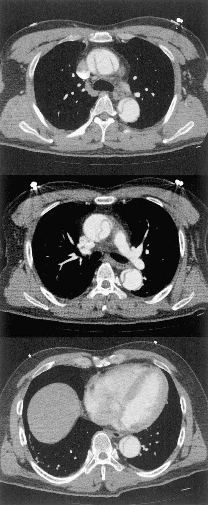
ａ 血腫除去術
ｂ 心囊ドレナージ
ｃ 人工血管置換術
ｄ 大動脈内バルーンパンピング〈IABP〉
ｅ カルシウム拮抗薬の持続点滴静注による降圧
✅
ｃ 人工血管置換術 ＋ ｅ カルシウム拮抗薬の持続点滴静注による降圧
Stanford A型（上行大動脈解離）→緊急手術（人工血管置換術）。術前は降圧（Ca拮抗薬等）で管理。
📉 大動脈解離の降圧——目標は「圧」ではなく「dP/dt」
大動脈解離で降圧する目的は、単に血圧の数字を下げることではなく大動脈壁にかかる剪断力〈shear stress〉を減らして解離の進展を止めることにある——この剪断力は収縮期圧の高さだけでなく圧の立ち上がりの鋭さ〈dP/dt〉で決まり、dP/dtは心収縮力と心拍数に比例する。だから心拍数を下げることが血圧を下げることと同じくらい重要である——目標は収縮期血圧100〜120mmHg、心拍数60/分前後で、臓器灌流（意識・尿量・四肢の脈拍）が保てる範囲で最も低くする。
⚠️ 薬剤の順序が決まっている——β遮断薬（ランジオロール・エスモロール・プロプラノロールなど）を先に使い、それでも血圧が高ければ血管拡張薬（ニカルジピン・ニトロプルシド）を追加する。血管拡張薬を単独で先に使うと反射性頻脈が起こり、dP/dtが増えてかえって解離を進める——これが順序の理由である。
薬剤選択の実際——β遮断薬が使えない場合（喘息・高度徐脈・重症心不全）はジルチアゼム（心拍数を下げるCa拮抗薬）を用いる。ニカルジピンは血管選択性で降圧の調節性に優れるため広く使われるが、頻脈を招きうるのでβ遮断薬との併用が望ましい。
疼痛管理も治療の一部である——強い痛みは交感神経を刺激して血圧と心拍数を上げるので、麻薬性鎮痛薬をためらわずに使う。「痛みを取ること」がそのまま「解離の進展を防ぐこと」になる。
なお降圧はA型でもB型でも行うが、位置づけが違う——A型では手術までのつなぎ、B型では治療の本体である。
□ 選択肢の検討
| 選択肢 | 解説 |
|---|---|
| ａ 血腫除去術 | 適応がない。血腫除去術は頭蓋内血腫・脊髄硬膜外血腫など、限られた空間に溜まった血腫を取り除く手術である——大動脈解離では血液が中膜の層に入り込んで偽腔を作っているのであって、取り除ける「塊」があるわけではない。本例は神経学的所見に異常を認めないので、頭蓋内・脊髄病変を想定する根拠もない。 |
| ｂ 心囊ドレナージ | 現時点では不要・かつ原則行わない。本例は血圧が右194/104・左198/110mmHgと高く、心音に異常を認めない——心タンポナーデを示す所見（低血圧・頸静脈怒張・心音減弱）がない——したがって心嚢ドレナージの適応はない。⚠️ 仮にタンポナーデがあったとしても、大動脈解離によるタンポナーデでは心嚢穿刺を原則行わない。圧を抜くと止血していた血腫が破れて出血が再開し急変するためで、手術室で開胸下に解除するのが原則である。 |
| ◯ ｃ 人工血管置換術 | これが正解の一つ。本例は突然の胸背部痛の後に一過性の意識消失があり、白血球21,000という炎症反応を伴い、心筋トロポニンT陰性・心電図正常で急性冠症候群を否定でき、胸部造影CTで診断がついている——Stanford A型急性大動脈解離である。A型解離は診断がついた時点で緊急手術の絶対適応であり、術式は上行大動脈人工血管置換術（弓部に及べば弓部全置換、基部が病的ならBentall手術）となる。失神を伴う解離は心タンポナーデ・脳灌流低下・破裂を示唆し、予後不良のサインである。本例は失神から回復しているが、緊急性はいささかも下がらない。 |
| ｄ 大動脈内バルーンパンピング〈IABP〉 | 禁忌。IABPは下行大動脈でバルーンを拡張期に膨らませる装置なので、解離した大動脈で用いれば偽腔を押し広げて解離を進展・破裂させる——大動脈解離は IABP の絶対禁忌である（高度大動脈弁閉鎖不全も同様）。そもそも本例は血圧194/104mmHgと高値で、循環補助を要する状態ではない。必要なのは補助ではなく降圧である。 |
| ◯ ｅ カルシウム拮抗薬の持続点滴静注による降圧 | これが正解の一つ。手術室へ運ぶまでの間、解離の進展と破裂を防ぐために厳格な降圧と心拍数コントロールを行う——目標は収縮期血圧100〜120mmHg・心拍数60/分前後。本例は194/104mmHgと著明な高血圧で、このままでは大動脈壁への剪断力が高いまま解離が進む。薬剤は静注で効果発現が速く、点滴速度で細かく調節でき、中止すればすぐ切れるものを選ぶ——ニカルジピンなどのCa拮抗薬の持続点滴静注やランジオロール・エスモロールなどの短時間作用型β遮断薬がこれに当たる。原則はβ遮断薬で心拍数を下げてから血管拡張薬を足すことだが、本問の選択肢にある「Ca拮抗薬の持続点滴静注による降圧」は解離の初期治療として適切である。 |
🔪 A型解離の術式と、術前に「してよいこと・いけないこと」
| してよい | してはいけない | |
|---|---|---|
| 循環管理 | β遮断薬→血管拡張薬の順で降圧（収縮期100〜120mmHg・心拍60/分） | IABP（偽腔を広げる）／血管拡張薬の単独先行（反射性頻脈） |
| 疼痛 | 麻薬性鎮痛薬で確実に取る | 痛みを我慢させる |
| 抗血栓 | なし | 抗血小板薬・抗凝固薬・血栓溶解薬はすべて禁忌 |
| 検査 | 造影CT（単純＋造影）／不安定なら心エコー | 心臓カテーテル検査（偽腔迷入・時間の浪費） |
| タンポナーデ | 手術室で開胸下に解除 | 心嚢穿刺（出血が再開する） |
本例は56歳男性・血圧が高い・心音に異常なし・神経学的所見なし——ARもタンポナーデも脳虚血もない比較的「素直な」A型解離であり、上行大動脈人工血管置換術が想定される。白血球21,000は解離に対する急性炎症反応で、感染を意味しない。
失神の意味を押さえておく——解離で失神を認めたら①心タンポナーデ ②大動脈弓分枝の閉塞による脳灌流低下 ③破裂による一過性の血圧低下のいずれかを考える。失神は予後不良因子で、院内死亡率が高い。本例は意識が数秒で回復し神経学的所見も正常だが、一過性の脳灌流低下があったと解釈する。
🎯 国試ポイント
① Stanford A型＝緊急手術（上行大動脈人工血管置換術）＋術前の厳格な降圧。この2つが本問の答え。② 降圧の目標は収縮期100〜120mmHg・心拍数60/分。β遮断薬を先に、血管拡張薬は後——血管拡張薬単独では反射性頻脈でdP/dtが増える。
③ 薬は静注で効果発現が速く調節性の高いもの（ニカルジピンなどのCa拮抗薬、ランジオロール・エスモロールなどの短時間作用型β遮断薬）。
④ IABPは大動脈解離の絶対禁忌。抗血小板薬・抗凝固薬・血栓溶解薬も禁忌。
⑤ 解離によるタンポナーデでは心嚢穿刺をしない——開胸下に解除する。
⑥ 解離に伴う失神は予後不良（タンポナーデ・脳灌流低下・破裂を示唆）。
⑦ 疼痛管理も治療の一部。痛みが交感神経を刺激して解離を進めるので、麻薬性鎮痛薬を惜しまない。
⑧ 解離では白血球増多・CRP上昇が early に出る。感染ではなく壁の炎症反応である。
Q.487(112D-68)臨床📷 画像2択87%
74 歳の男性。腹痛のために救急車で搬入された。本日、突然、強い腹痛が生じた。横になって休んでいたが症状が持続し、冷汗も出現してきたため救急車を要請した。意識は清明。体温36.4℃。心拍数110/ 分、整。血圧84/48mmHg。呼吸数18/ 分。SpO2 99％（マスク10L/ 分酸素投与下）。冷汗を認め皮膚は湿潤している。眼瞼結膜は貧血様であるが、眼球結膜に黄染を認めない。心音と呼吸音とに異常を認めない。腹部は軽度膨隆しており、拍動を触れ、bruit を聴取する。血液所見：赤血球315 万、Hb 10.0g/dL、Ht 30％、白血球13,800、血小板15 万。血液生化学所見：総蛋白4.8g/dL、アルブミン3.3g/dL、総ビリルビン1.8mg/dL、直接ビリルビン0.2mg/dL、AST 92U/L、ALT 54U/L、LD 379U/L（基準176 ～353）、ALP 129U/L（基準115 ～359）、γ-GTP 17U/L（基準8 ～50）、CK138U/L（基準30 ～140）、尿素窒素18mg/dL、クレアチニン1.1mg/dL、血糖122mg/dL、Na 135mEq/L、K 5.0mEq/L、Cl 104mEq/L。CRP 0.7mg/dL。動脈血ガス分析（マスク10L/ 分酸素投与下）：pH 7.45、PaCO2 34Torr、PaO2166Torr、HCO3 － 23mEq/L。腹部造影CT を示す。
治療として適切なのはどれか。2 つ選べ。
治療として適切なのはどれか。2 つ選べ。
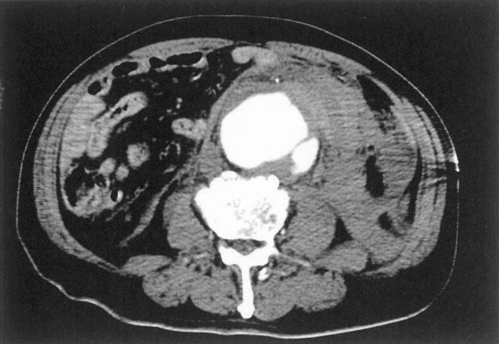
ａ 動脈塞栓術
ｂ 血栓溶解療法
ｃ 人工血管置換術
ｄ 経皮的ドレナージ
ｅ ステントグラフト内挿術
✅
ｃ 人工血管置換術 ＋ ｅ ステントグラフト内挿術（EVAR）
腹部大動脈瘤破裂（ショック+拍動性腫瘤+bruit）→緊急手術（開腹人工血管置換またはEVAR）。
💥 腹部大動脈瘤破裂——「三徴を見たら診断は済んでいる」
腹部大動脈瘤破裂は致死率80〜90%（病院到達前死亡を含む）で、循環器領域で最も時間に厳しい疾患の一つである——病院にたどり着けた患者でも手術死亡率は30〜50%に達する。診断の遅れがそのまま死亡につながる。Quinckeの三徴＝①突然の腹痛／腰背部痛 ②低血圧（ショック） ③拍動性腫瘤。3つ揃うのは半数以下だが、そろえば診断はほぼ確定である。本例は3つとも揃っており、さらにbruit（血管雑音）まで聴取されている。
本例の検査値の読み——Hb 10.0g/dL・眼瞼結膜蒼白＝出血による貧血／白血球13,800＝急性反応／AST 92・LD 379・総ビリルビン1.8＝ショックによる肝の低灌流／K 5.0mEq/L＝組織虚血／pH 7.45・PaCO2 34Torr＝頻呼吸による呼吸性アルカローシス（代謝性アシドーシスの代償が始まっている）。CRP 0.7mg/dL と低いのは発症からの時間が短い（CRPは6〜12時間で上がる）ことを示し、感染ではなく急性の出血であることを裏づける。
破裂の型——後腹膜へ破裂した場合は血腫が周囲組織で押さえられて一時的に出血が止まり血圧が保たれる（contained rupture）ことがある。本例のように意識清明で血圧84/48mmHgを保っているのはこの状態と考えられる。しかしこれはいつ破綻してもおかしくないので、血圧を上げすぎない（permissive hypotension）ことが重要になる——強い昇圧はタンポナーデを破って一気に失血させる。一方腹腔内へ自由破裂すれば数分で失血死する。
□ 選択肢の検討
| 選択肢 | 解説 |
|---|---|
| ａ 動脈塞栓術 | 適応がない。動脈塞栓術〈TAE〉は実質臓器や比較的細い動脈からの出血（外傷性肝損傷・骨盤骨折・消化管出血・産科出血）を止めるカテーテル治療である——大動脈という体内で最も太い動脈の破裂を塞栓で止めることはできない。塞栓してしまえば下半身の血流が絶たれる。大動脈の破裂に対するカテーテル治療は塞栓ではなくステントグラフトで内側から覆うことである。 |
| ｂ 血栓溶解療法 | 禁忌。血栓溶解療法は出血している患者に対する最悪の選択である——本例は血圧84/48mmHg・心拍数110/分・冷汗・皮膚湿潤・眼瞼結膜蒼白・Hb 10.0g/dLという出血性ショックの状態で、線溶療法は止血機構を破壊して出血を加速させる。腹部大動脈瘤破裂の治療は止血＝血流の遮断と血管の置換であって、血栓を溶かすことではない。 |
| ◯ ｃ 人工血管置換術 | これが正解の一つ。本例は突然の強い腹痛・冷汗・ショック（84/48mmHg）・腹部の拍動性腫瘤とbruit・貧血の進行（Hb 10.0g/dL）——腹部大動脈瘤破裂の典型像である。古典的なQuinckeの三徴（突然の腰背部痛／腹痛・低血圧・拍動性腫瘤）が揃っており、腹部造影CTで確認されている——治療は緊急手術で、標準は開腹による人工血管置換術である。手技としてはまず瘤の中枢側（腎動脈下、必要なら横隔膜下）で大動脈を遮断して出血を止め、その後に瘤を切開して人工血管（Y字型グラフト）を縫着する。術前は大量輸血の準備・permissive hypotension（過剰に昇圧せず収縮期80〜90mmHg程度に留める）が要点である。 |
| ｄ 経皮的ドレナージ | 適応がない。経皮的ドレナージは膿瘍・胆嚢炎・水腎症・限局した液体貯留に対する処置である——動脈性の活動性出血に対してドレーンを入れても止血にはならず、後腹膜血腫のタンポナーデ効果を失わせてかえって出血を助長する。本例の腹部膨隆は後腹膜血腫によるものであり、抜くべき液体ではなく、止めるべき出血である。 |
| ◯ ｅ ステントグラフト内挿術 | これが正解の一つ。ステントグラフト内挿術〈EVAR〉は破裂例に対しても選択されうる——両側大腿動脈からアプローチし、大動脈の内側からグラフトを展開して破裂部を覆う。これを破裂例に用いる場合は rEVAR と呼ばれ、開腹を要さず大動脈遮断も不要なので、循環動態への負担が小さい。実際、解剖学的条件（中枢側ネックの長さと角度、腸骨動脈の径と屈曲）が合えば破裂例でもEVARが第一選択となる施設が増えている——周術期死亡率が開腹手術より低いという報告がある。循環が破綻していれば、大動脈内バルーン閉塞〈REBOA〉で一時的に血流を止めてからEVARへ移行するという戦略も取られる。 |
🚑 破裂例のマネジメント——開腹かEVARか
| 開腹人工血管置換術 | rEVAR（破裂例へのステントグラフト） | |
|---|---|---|
| 止血の原理 | 中枢側で大動脈を遮断してから瘤を開ける | グラフトで内側から破裂部を覆う |
| 侵襲 | 開腹・大動脈遮断・大量出血 | 両側鼠径部のみ・遮断不要 |
| 制約 | 少ない（どんな形態でも可能） | 中枢側ネックの長さ・角度、腸骨動脈の性状で不可のことがある |
| 循環が破綻したとき | そのまま開胸/開腹して遮断 | REBOA（大動脈内バルーン閉塞）で一時止血してから展開 |
| 周術期死亡 | 30〜50% | 条件が合えばより低いとする報告 |
術前・搬送中の管理——① 太い静脈路2本以上と輸血の準備（大量輸血プロトコル）／② permissive hypotension（収縮期80〜90mmHg程度。意識と尿量が保てる範囲で昇圧を控える）／③ 低体温・アシドーシス・凝固障害の「死の三徴」を避ける（加温輸液・早期の新鮮凍結血漿と血小板）／④ 診断がついたら検査を増やさず手術室へ。
術後合併症としては虚血性大腸炎（下腸間膜動脈の血流途絶による。術後の血便で疑う）、腹部コンパートメント症候群、急性腎障害、脊髄虚血、多臓器不全が問題になる。遠隔期には移植血管感染と大動脈腸管瘻（十二指腸との瘻。大量下血）があり、人工血管置換の既往がある患者の消化管出血ではこれを必ず疑う。
🎯 国試ポイント
① 腹部大動脈瘤破裂＝Quinckeの三徴（突然の腹痛/腰背部痛・低血圧・拍動性腫瘤）。治療は緊急手術＝開腹人工血管置換術またはEVAR（rEVAR）。② 動脈塞栓術・血栓溶解療法・経皮的ドレナージはいずれも誤り——大動脈からの動脈性大出血を止める手段ではない。
③ permissive hypotension（収縮期80〜90mmHg）——強く昇圧すると後腹膜血腫のタンポナーデが破れて一気に失血する。
④ 破裂例では診断がついたら検査を増やさず手術室へ。循環が破綻すればREBOAで一時止血する。
⑤ 術後の血便＝虚血性大腸炎（下腸間膜動脈）、遠隔期の大量下血＝大動脈腸管瘻。人工血管置換の既往がある患者の消化管出血で必ず想起する。
⑥ 出血早期はCRPがまだ上がらない（6〜12時間かかる）。CRP陰性は感染否定の材料になるが、急性出血の否定にはならない。
⑦ bruit（血管雑音）を聴取する拍動性腫瘤は瘤の存在を強く示唆する。
Q.488(111A-13)一般2択94%
左不全片麻痺で受診した62 歳の男性で、症状の原因として心臓または大血管の疾患を疑わせる病歴はどれか。2 つ選べ。
ａ 持続性の動悸
ｂ 全身の筋肉痛
ｃ 食事による症状の改善
ｄ 数週間かけての緩徐な症状の出現
ｅ 胸や背中あるいは首の突然の激烈な痛み
✅
ａ 持続性の動悸 ＋ ｅ 胸や背中あるいは首の突然の激烈な痛み
持続性の動悸（心房細動→心原性塞栓症）、突然の激烈な胸背部頸部痛（大動脈解離）→心大血管疾患を示唆。
🧠 片麻痺の原因を「心臓・大血管」まで広げる
片麻痺を見たとき、多くの人はまず脳の中を考える。しかし脳へ血液を送っているのは心臓と大血管なので、片麻痺の原因が心臓や大動脈にあることがある——本問はその視点を問うている。心大血管が原因となる片麻痺の2大パターン：
① 心原性脳塞栓症——心房細動（最多。左心耳血栓）、心筋梗塞後の左室内血栓、感染性心内膜炎の疣腫、人工弁血栓、心臓粘液腫、卵円孔開存による奇異性塞栓。持続性の動悸・不整な脈が手がかり
② 大動脈解離による頸部血管の閉塞——腕頭動脈・総頸動脈が偽腔に圧排される。突然の激烈な胸背部痛・頸部痛が手がかり
この2つを疑う理由は同じ——どちらも治療が「脳梗塞の標準治療」と食い違うからである。心原性脳塞栓症では抗凝固療法（DOAC・ワルファリン）が二次予防の柱になり、抗血小板薬では不十分である。大動脈解離では抗凝固も線溶も禁忌で、まず解離の治療が優先される。
脳梗塞の病歴聴取で必ず聞くこと——① いつ、どのように始まったか（突然か緩徐か）／② 動悸・不整脈の自覚があるか／③ 胸痛・背部痛・頸部痛を伴わないか／④ 血糖降下薬を使っていないか／⑤ 最終健常時刻（t-PAの適応判断）。本問の5つの選択肢は、ちょうどこの問診項目に対応している。
□ 選択肢の検討
| 選択肢 | 解説 |
|---|---|
| ◯ ａ 持続性の動悸 | これが正解の一つ。持続する動悸は心房細動を疑わせ、心房細動は左房内（とくに左心耳）に血栓を作り、それが飛んで脳塞栓症＝心原性脳塞栓症を起こす——つまり「心臓が原因の脳梗塞」を強く示唆する病歴である。心原性脳塞栓症は突然発症で症状が完成し（発症時が最も重い）、皮質症状（失語・半側空間無視）を伴い、大きな梗塞になりやすいのが特徴で、ラクナ梗塞やアテローム血栓性脳梗塞と区別される。左不全片麻痺なら責任病巣は右中大脳動脈領域であり、心房細動由来の塞栓が典型的な原因となる。 |
| ｂ 全身の筋肉痛 | 示唆しない。全身の筋肉痛は多発筋炎・皮膚筋炎・リウマチ性多発筋痛症・横紋筋融解症・薬剤性（スタチン）・感冒などの全身性・筋原性の病態を示唆する——これらは片麻痺という局所の神経脱落症状を説明できない。筋疾患では左右対称性・近位筋優位の筋力低下となり、錐体路徴候（Babinski徴候・腱反射亢進）を伴わない点でも片麻痺と区別される。 |
| ｃ 食事による症状の改善 | むしろ別の病態を示す。食事で症状が改善するのは低血糖の特徴である——低血糖は片麻痺を含む多彩な神経症状（低血糖片麻痺）を起こしうるので鑑別としては重要だが、それは代謝性の原因であって心大血管疾患を示唆する病歴ではない。糖尿病でインスリンやスルホニル尿素薬を使っている患者の片麻痺では、まず血糖を測るのが鉄則である。 |
| ｄ 数週間かけての緩徐な症状の出現 | 示唆しない。数週間かけて緩徐に進む症状は脳腫瘍・慢性硬膜下血腫・脱髄疾患・変性疾患などじわじわ広がる病変を示唆する——心大血管由来のイベント（塞栓・解離）は血流が突然断たれるので、症状も突然完成するのが原則である。「症状の時間経過」は病態の性質を映す最も基本的な情報で、突然＝血管性／緩徐＝腫瘍性・変性という対応を押さえる。 |
| ◯ ｅ 胸や背中あるいは首の突然の激烈な痛み | これが正解の一つ。胸・背中・首の突然の激烈な痛みは急性大動脈解離の典型的な訴えであり、解離が腕頭動脈や総頸動脈へ及べば片麻痺を起こす——つまり「痛みを伴う脳梗塞」＝解離を疑う組合せである。⚠️ これを見逃してt-PA（血栓溶解療法）を投与すると偽腔が拡大して破裂し、致命的になる——脳梗塞診療で最も警戒すべき落とし穴の一つである。解離では痛みが「首へ移動する」こともあり（Q.490 がその設問）、頸部痛を伴う片麻痺も同じ警戒対象になる。確認すべきは四肢の血圧左右差・脈拍の減弱・拡張期雑音・縦隔陰影の拡大である。 |
🚨 脳梗塞にt-PAを使う前のチェック——解離を外す
| 病歴・所見 | 疑う病態 | t-PAへの影響 |
|---|---|---|
| 突然の激烈な胸痛・背部痛・頸部痛 | 急性大動脈解離 | 絶対禁忌（偽腔が拡大し破裂） |
| 四肢の血圧左右差・脈拍欠損 | 大動脈解離 | 禁忌 |
| 拡張期雑音（胸骨左縁第3肋間） | 解離によるAR | 解離を強く疑う |
| 持続性の動悸・不整な脈 | 心房細動＝心原性脳塞栓症 | t-PAは可（二次予防は抗凝固） |
| 食事で改善する症状 | 低血糖 | まず血糖を測る（低血糖なら補正で改善） |
| 数週間で緩徐に進行 | 脳腫瘍・慢性硬膜下血腫 | 脳梗塞ではない |
除外のためにできること——① 両上肢の血圧を測る（左右差20mmHg以上は要注意）／② 胸背部痛・頸部痛の有無を聞く／③ 胸部エックス線写真で縦隔を見る／④ 疑わしければ造影CT（頭頸部CTAと胸部を同時に撮る施設もある）。いずれも数分で終わるので、t-PAの時間制限があるからといって省略してよいものではない。
心原性脳塞栓症の見分け方も整理する——突然発症で発症時が最重症、皮質症状（失語・半側空間無視・共同偏視）、大きな梗塞（主幹動脈閉塞）、出血性梗塞になりやすい、心房細動などの塞栓源がある。対してアテローム血栓性脳梗塞は段階的に進行し、TIAが先行することがあり、ラクナ梗塞は純粋運動性片麻痺など小さな症候で皮質症状を伴わない。
感染性心内膜炎も「心臓が原因の片麻痺」を作る——疣腫が飛んで脳塞栓を起こす。発熱＋新規の心雑音＋塞栓症状という組合せで疑い、血液培養3セットと心エコーで詰める。⚠️ この場合も感染性心内膜炎に伴う脳塞栓ではt-PAを避ける——感染性動脈瘤〈mycotic aneurysm〉の破裂による出血のリスクが高いためである。「心臓由来の脳梗塞では、線溶療法の前に必ず原因を確かめる」という原則が、解離・感染性心内膜炎の両方に共通して効く。
本問の選択肢構成を振り返ると、a（動悸）とe（突然の激烈な痛み）が心大血管、b（全身の筋肉痛）が筋原性、c（食事で改善）が代謝性＝低血糖、d（数週間で緩徐）が腫瘍性・変性——5つの選択肢が5つの異なる病態カテゴリーに対応している。こういう作りの設問では、選択肢ごとに「どの臓器・どの機序の話か」をラベリングしてから設問の要求（心臓または大血管）に合うものを拾うと確実である。
🎯 国試ポイント
① 片麻痺で心大血管を疑う病歴は2つ——持続性の動悸（心房細動→心原性脳塞栓症）と突然の激烈な胸背部・頸部痛（大動脈解離）。② 「痛みを伴う脳梗塞」ではt-PAの前に必ず大動脈解離を除外する。両上肢の血圧測定・胸背部痛の問診・胸部エックス線写真の縦隔。
③ 心原性脳塞栓症の二次予防は抗凝固療法（DOAC・ワルファリン）。抗血小板薬では不十分。
④ 突然＝血管性／緩徐＝腫瘍性・変性。数週間かけて進む片麻痺は脳腫瘍・慢性硬膜下血腫を考える。
⑤ 低血糖は片麻痺を起こしうる（低血糖片麻痺）。血糖降下薬を使う患者の神経症状ではまず血糖を測る。
⑥ 全身の筋肉痛は筋原性で、左右対称・近位筋優位・錐体路徴候なし。片麻痺を説明しない。
⑦ 心原性脳塞栓症は突然完成・皮質症状・大梗塞・出血性梗塞になりやすい。
Q.489(111E-59)臨床2択97%
48 歳の男性。激しい背部痛と胸部絞扼感で来院した。5 年前から、健康診断で高血圧と脂質異常とを指摘されていたが、医療機関を受診していなかった。本日、午前6 時ごろに突然、激しい背部痛が出現し様子をみていたが、胸部絞扼感も出現してきたため、家族の運転する車で来院した。意識は清明。体温36.8℃。心拍数120/ 分、不整。右上肢血圧148/72mmHg、左上肢血圧194/112mmHg。呼吸数20/ 分。SpO2 98％（room air）。顔面は苦悶様で発汗が著明。12 誘導心電図でⅡ、Ⅲ、aVF のST 上昇、V4-6 のST 低下および心室性期外収縮の頻発を認めた。
可能性の高い疾患はどれか。2 つ選べ。
可能性の高い疾患はどれか。2 つ選べ。
ａ 高安動脈炎
ｂ 急性心膜炎
ｃ 急性心筋梗塞
ｄ 急性大動脈解離
ｅ 急性肺血栓塞栓症
✅
ｃ 急性心筋梗塞 ＋ ｄ 急性大動脈解離
左右血圧差+背部痛→大動脈解離。解離がRCAに及ぶと下壁ST上昇（下壁梗塞）を合併しうる。
🔀 大動脈解離と急性心筋梗塞が「同時に」成立する
本問の眼目は「2つ選べ」という指示が、2つの疾患が併存しうることを示している点にある——Stanford A型大動脈解離が右冠動脈の入口部に及ぶと、下壁の急性心筋梗塞を合併する。両者は排他的ではなく、原因と結果の関係にある。なぜ右冠動脈が多いのか——上行大動脈のエントリーから偽腔が広がるとき、右冠動脈の入口部（Valsalva洞の右冠尖側）が解離腔に巻き込まれやすい解剖学的位置にある。したがってA型解離に伴う心筋梗塞は下壁（II・III・aVF）のことが多い。
⚠️ ここが臨床上最も危険な誤診パターンである——下壁ST上昇を見てSTEMIと診断し、抗血小板薬2剤とヘパリンを投与して緊急カテーテル検査へ進むと、解離が拡大・破裂して致命的になる。だからST上昇型心筋梗塞と判断する前に、必ず「両上肢の血圧」と「胸背部痛の性状」を確認する。
本例で解離を疑うべき手がかり——① 血圧左右差46mmHg／② 「激しい背部痛」が先行し、その後に胸部絞扼感が出現（順序が逆なら純粋な心筋梗塞らしい）／③ 突然発症で最初が最強／④ 5年来の未治療高血圧。
血圧左右差の解釈——収縮期血圧で20mmHg以上の差があれば異常とし、解離のほか鎖骨下動脈狭窄（動脈硬化・高安動脈炎）・鎖骨下動脈盗血症候群・大動脈縮窄症・胸郭出口症候群を考える。急性発症なら解離を第一に置く。なお解離で左右差が出るのは3割程度で、差がないことは解離を否定しない。
□ 選択肢の検討
| 選択肢 | 解説 |
|---|---|
| ａ 高安動脈炎 | 合わない。高安動脈炎（大動脈炎症候群）は若年女性に好発する大型血管炎で、数週から数か月の経過で発熱・全身倦怠感・体重減少といった全身炎症症状を伴いながら進む——上肢の脈拍消失や血圧左右差は本例と共通するが、それは慢性の狭窄によるもので、突然の激痛で発症することはない。本例は48歳男性・突然発症で、疫学も経過も合致しない。 |
| ｂ 急性心膜炎 | 合わない。急性心膜炎の胸痛は吸気・臥位で増悪し、前傾坐位で軽減するという体位依存性が特徴で、心膜摩擦音を聴取する——心電図は広範な誘導のST上昇（凹型）とPR低下で、対側誘導のST低下（reciprocal change）を伴わないのが原則である。本例はII・III・aVF のST上昇に対しV4-6のST低下という対側変化を伴う限局したST上昇で、心膜炎ではなく下壁の心筋梗塞のパターンである。 |
| ◯ ｃ 急性心筋梗塞 | これが正解の一つ。心電図のII・III・aVF のST上昇は下壁の貫壁性虚血を示し、V4-6のST低下は対側変化（reciprocal change）である——胸部絞扼感・苦悶様顔貌・著明な発汗・心室性期外収縮の頻発もすべて急性心筋梗塞に合致する。下壁梗塞の責任血管は右冠動脈が約8割で、房室ブロック・徐脈（迷走神経反射）・右室梗塞を合併しやすい。本例では大動脈解離が右冠動脈入口部に及んだ結果としての下壁梗塞と考えるのが最も整合的である。 |
| ◯ ｄ 急性大動脈解離 | これが正解の一つ。決め手は右上肢148/72mmHg・左上肢194/112mmHg という46mmHgの著明な血圧左右差と、突然発症の激しい背部痛である——左右差は解離が腕頭動脈（右鎖骨下動脈）を圧排して右上肢の灌流が落ちたことで生じる。背部痛が先行し、その後に胸部絞扼感が出現したという時間経過も、解離が起きてから冠動脈へ波及したという順序を示している。背景に5年来の未治療の高血圧と脂質異常症があり、解離の危険因子として十分である。確定は造影CTで行う。 |
| ｅ 急性肺血栓塞栓症 | 合わない。急性肺血栓塞栓症は突然の呼吸困難が主症状で、SpO2の低下・頻呼吸を伴う——本例はSpO2 98%（room air）・呼吸数20/分で酸素化が保たれている。心電図も右心負荷所見（SIQIIITIII・V1-3の陰性T波・右脚ブロック）ではなく下壁のST上昇である。また血圧の左右差は肺塞栓では説明できない。長期臥床・手術・悪性腫瘍といった危険因子の記載もない。 |
📊 下壁ST上昇を見たときの分岐
| 所見 | 純粋なSTEMI | 解離＋二次性の梗塞 |
|---|---|---|
| 痛みの立ち上がり | 数分かけて増強 | 突然・発症時が最強 |
| 痛みの部位 | 前胸部の絞扼感（放散痛あり） | 背部痛が先行し移動する |
| 血圧左右差 | なし | あることがある（3割） |
| 拡張期雑音 | なし | ARの雑音を聴くことがある |
| 胸部エックス線写真 | 正常のことが多い | 縦隔拡大（約6割） |
| 治療 | 抗血栓療法＋緊急PCI | 抗血栓は禁忌・緊急手術 |
本例の心電図をもう一段読む——心拍数120/分で「不整」とあり、心室性期外収縮の頻発を認める。これは急性虚血に伴う心室性不整脈で、心室細動へ移行しうる危険な状態である。除細動器を準備し、モニタ下で管理する必要がある。
「2つ選べ」型の設問の解き方——まず最も確実な1つを固定し、残りの選択肢を「同時に成立しうるか」で吟味する。本問なら血圧左右差＋突然の背部痛＝大動脈解離を固定し、次に下壁ST上昇＋対側変化＝急性心筋梗塞が解離の合併症として成立することを確認する。高安動脈炎（慢性・若年女性）、急性心膜炎（体位依存・広範ST上昇・対側変化なし）、肺血栓塞栓症（低酸素・右心負荷）はいずれも個々の所見と噛み合わない。
なお下壁梗塞では右室梗塞の合併（V4Rの ST上昇）を確認する。右室梗塞では前負荷依存性となるため硝酸薬・利尿薬が禁忌で、輸液で前負荷を保つ——ただし本例が解離由来なら、まず解離の治療が優先される。
🎯 国試ポイント
① 大動脈解離と急性心筋梗塞は併存しうる——A型解離が右冠動脈入口部に及べば下壁梗塞（II・III・aVF のST上昇）を合併する。② 収縮期血圧の左右差20mmHg以上＋突然の背部痛で解離を疑う。本例は46mmHgの差。ただし左右差は3割にしか出ない。
③ 下壁ST上昇でPCI・抗血栓療法へ進む前に、両上肢の血圧と胸背部痛の性状を必ず確認する。解離なら抗血栓は禁忌で治療が正反対になる。
④ 急性心膜炎は広範なST上昇＋PR低下で対側変化を伴わず、体位で痛みが変わる。本例のような限局ST上昇＋対側ST低下とは異なる。
⑤ 肺血栓塞栓症はSpO2低下と右心負荷。SpO2 98%（room air）では考えにくい。
⑥ 高安動脈炎は若年女性・慢性経過・全身炎症症状。突然の激痛で発症しない。
⑦ 下壁梗塞では右室梗塞（V4R）を確認。右室梗塞では硝酸薬・利尿薬が禁忌で輸液が要る。
Q.490(110F-16)必修臨床96%
76 歳の男性。背部痛と右上下肢の脱力とを主訴に来院した。今朝、午前7 時ころ突然の背部から左頸部へ移動する痛みを自覚した。その後、徐々に疼痛が緩和してきたため、消炎鎮痛薬の貼付剤で様子をみていた。10 分程して右上肢の脱力も出現した。ソファで休もうとしたところ、右下肢にも脱力があることに気付いた。横になって約30 分でいずれの症状も改善したが、心配した家族とともに午前10 時に受診した。高血圧症と糖尿病で内服治療中である。意識は清明。身長172cm、体重68kg。体温36.5℃。脈拍88/ 分、整。右上肢血圧136/70mmHg、左上肢血圧110/62mmHg。呼吸数18/ 分。SpO2 98％（room air）。神経学的所見に異常を認めない。
最も考えられるのはどれか。
最も考えられるのはどれか。
ａ 低血糖
ｂ 低血圧
ｃ 心房細動
ｄ 大動脈解離
ｅ 頸動脈硬化症
✅
ｄ 大動脈解離
移動する背部→頸部への痛み+一過性右上下肢麻痺+左右血圧差→大動脈解離（頸動脈への解離）。
🚶 「移動する痛み」と「一過性の神経症状」——解離の動きが症状になる
大動脈解離が他の疾患と決定的に違うのは、病変そのものが時間とともに移動することである——内膜の裂け目から入った血液が中膜を長軸方向に引き裂きながら進むので、痛みの部位が移動し、通り過ぎた分枝が次々と一時的に灌流障害を起こす。本例の経過はこの「動き」をそのまま記述している——① 午前7時ころ突然の背部痛（解離の発生）／② 痛みが背部から左頸部へ移動（解離が弓部・頸部方向へ進展）／③ 10分後に右上肢の脱力、続いて右下肢の脱力（右総頸動脈系の灌流低下）／④ 約30分でいずれも改善（灌流が一時的に回復）／⑤ しかし血圧左右差は残っている。
⚠️ 症状が改善したことを「治った」と読んではいけない。解離では偽腔の圧や真腔の形が刻々と変わるため、分枝の灌流障害が出たり消えたりする（dynamic obstruction）。症状が消えても解離は残り、破裂やタンポナーデのリスクは何も減っていない。
解離の痛みの移動パターン——上行から始まれば前胸部→頸部・下顎へ、下行から始まれば背部→腰部・下腹部へ進む。本例は「背部から左頸部へ」なので逆行性に弓部方向へ進展したと読める。
一過性の神経症状（TIA様）で解離を疑う手がかり——痛みを伴う、血圧左右差がある、脈拍が整で心房細動がない、複数の血管領域にまたがる症状。本例は最初の3つがすべて当てはまる。
□ 選択肢の検討
| 選択肢 | 解説 |
|---|---|
| ａ 低血糖 | 合わない。低血糖は片麻痺を含む多彩な神経症状（低血糖片麻痺）を起こしうるので、糖尿病で内服治療中という背景からは一度は考える——しかし低血糖では冷汗・動悸・手指振戦などの交感神経症状が先行するのが普通で、本例にはその記載がない。何より「突然の背部から左頸部へ移動する痛み」を低血糖では説明できない。痛みが主訴の中心にある時点で代謝性の原因は遠ざかる。 |
| ｂ 低血圧 | 合わない。低血圧による脳灌流低下ではふらつき・失神・全身の脱力が起こるが、片側だけの脱力にはならない——本例の血圧は右136/70mmHgで低くない。むしろ注目すべきは左が110/62mmHgで、26mmHgの左右差があることである。これは「低血圧」ではなく血管の通り道の問題を示している。 |
| ｃ 心房細動 | 最も紛らわしいが劣る。心房細動は左心耳血栓から心原性脳塞栓症を起こし、右上下肢の脱力（左半球の梗塞）を説明できる。一過性で改善した点もTIAとして説明可能である——しかし本例は脈拍88/分、整と明記されており、心房細動を示す所見がない。さらに突然の背部痛が頸部へ移動したという主訴と26mmHgの血圧左右差は、心房細動ではまったく説明できない。 |
| ◯ ｄ 大動脈解離 | これが正解。3つの所見が一つの病態を指している——① 突然発症の背部痛が「背部から左頸部へ移動」（解離が下行側から弓部・頸部側へ進展した動きそのもの）／② 右上下肢の一過性の脱力（腕頭動脈から右総頸動脈の灌流が一時的に落ちた）／③ 右上肢136/70・左上肢110/62mmHgの左右差（右鎖骨下動脈側の灌流低下）。背景に高血圧症と糖尿病があり危険因子も揃う——症状が改善したのは偽腔の圧が変化して分枝の灌流が一時的に回復したためで、治ったわけではない。解離そのものは進行している。「症状が消えたから大丈夫」と帰宅させてはならない典型例である。 |
| ｅ 頸動脈硬化症 | 合わない。頸動脈硬化症（頸動脈狭窄）はプラークからの塞栓や血行力学的機序でTIAや脳梗塞を起こしうるので、右上下肢の一過性脱力という点だけを見れば候補になる——しかし突然の背部痛も上肢の血圧左右差も説明できない。頸動脈硬化症は慢性的に進行する動脈硬化性病変で、痛みを伴わないのが原則である。 |
🩺 血圧左右差をどう扱うか
| 原因 | 経過 | 随伴所見 |
|---|---|---|
| 急性大動脈解離 | 突然 | 激烈な胸背部痛・移動する痛み・拡張期雑音・神経症状 |
| 鎖骨下動脈狭窄（動脈硬化） | 慢性 | 無症状のことが多い・鎖骨上窩の血管雑音 |
| 鎖骨下動脈盗血症候群 | 慢性 | 患側上肢の運動でめまい・失神（椎骨動脈の逆流） |
| 高安動脈炎 | 数週〜数か月 | 若年女性・発熱・炎症反応高値・脈なし |
| 大動脈縮窄症 | 先天性 | 上肢高血圧・下肢の脈拍減弱・肋骨下縁のnotching |
| 胸郭出口症候群 | 体位依存 | 上肢挙上で脈が消える・しびれ |
血圧の測り方の基本も確認しておく——初診時は必ず両上肢で測る。差が20mmHg以上あれば異常とし、値の高いほうを患者の血圧として採用する（低いほうは狭窄で低く出ている可能性があるため）。解離を疑うなら下肢の血圧も測り、四肢すべての脈拍を触れる。
本例のその後——症状が改善していても、造影CTで解離の有無と範囲を確認するのが正しい対応である。「症状が消えたから帰宅」は最悪の選択になる。高齢者で痛みが軽い・すでに軽快している解離は珍しくなく、「痛みの強さ」ではなく「発症のしかたと随伴所見」で疑うのが鉄則である。
⚠️ 本例のように一過性の片麻痺＝TIAと診断して抗血小板薬を開始すると、解離があった場合に出血のリスクを上げる。TIAの診療でも、痛みを伴う場合や血圧左右差がある場合は解離を除外する。
解離が頸部血管を巻き込む2つの機序を区別しておく——① 静的閉塞＝解離が分枝の入口まで及んで内膜が剥がれ、そのまま塞ぐ／② 動的閉塞＝拡張した偽腔が真腔を押しつぶし、分枝の起始部を間欠的に覆う。本例のように症状が出たり消えたりするのは動的閉塞で、血圧や体位、心拍出量の変化で灌流が変動するためである。だから「一時的だったから軽症」ではなく、むしろ偽腔の圧が高く不安定であることを示す危険なサインと読む。
本例の背景因子——76歳・高血圧症・糖尿病で内服治療中。高血圧は解離の最大の危険因子であり、糖尿病は動脈硬化を進める。一方で糖尿病は痛覚を鈍らせ、無痛性・軽症の解離を作ることがある——本例で痛みが「徐々に緩和してきた」ため湿布で様子をみてしまったのも、受診の遅れにつながる典型的な経過である。午前7時発症で午前10時受診＝3時間の遅れ。A型解離ならこの間に死亡率が3%上がっている計算になる。
🎯 国試ポイント
① 「移動する痛み」は大動脈解離に特徴的——病変そのものが進展するため。背部→頸部、前胸部→腰部など。② 一過性の神経症状＋血圧左右差＋突然の痛み＝解離を疑う。脈が整なら心房細動由来の塞栓は考えにくい。
③ 症状が改善しても解離は治っていない。分枝の灌流障害は出たり消えたりする（dynamic obstruction）。帰宅させず造影CTへ。
④ 初診時は両上肢で血圧を測り、20mmHg以上の差は異常。高いほうを患者の血圧として採用する。
⑤ 左右差は「急性か慢性か」で分ける——急性＋痛み＝解離（緊急）／慢性＝鎖骨下動脈狭窄・盗血症候群・高安動脈炎・大動脈縮窄症。
⑥ 痛みを伴うTIA・脳梗塞では抗血小板薬・t-PAの前に解離を除外する。
⑦ 低血糖も片麻痺を起こすが、交感神経症状が先行し痛みは伴わない。
Q.491(110F-28)必修臨床📷 画像99%
次の文を読み、491 と492 の問いに答えよ。
72 歳の男性。突然の背部痛と冷汗とを主訴に来院した。
現病歴：本日午後2 時、庭仕事中に突然の背部痛と冷汗とを自覚した。背部痛は、痛み始めが最も強く、腰部へ移動した。症状が続くため受診した。
既往歴：53 歳時に高血圧症を指摘され自宅近くの診療所に通院中である。
生活歴：夫婦2 人暮らし。現在は無職。喫煙は70 歳まで25 本/ 日を50 年間。飲酒は機会飲酒。
現 症：意識は清明。身長158cm、体重60kg。脈拍120/ 分、整。右上肢血圧178/90mmHg、左上肢血圧172/92mmHg。心音と呼吸音とに異常を認めない。
検査所見：尿所見：蛋白（－）、糖（－）。血液所見：赤血球450万、Hb 13.8g/dL、Ht 42％、白血球11,800（桿状核好中球22％、分葉核好中球40％、好酸球2％、好塩基球1％、単球7％、リンパ球28％）、血小板18 万。血液生化学所見：総蛋白6.0g/dL、AST 52IU/L、ALT 55IU/L、LD 290IU/L（基準176 ～353）、尿素窒素32mg/dL、クレアチニン0.9mg/dL、CK 98IU/L（基準30 ～140）。胸部CT 水平断像（A）、腹部CT 水平断像（B）及び胸腹部CT 矢状断像（C）を示す。
CT で認められるのはどれか。
72 歳の男性。突然の背部痛と冷汗とを主訴に来院した。
現病歴：本日午後2 時、庭仕事中に突然の背部痛と冷汗とを自覚した。背部痛は、痛み始めが最も強く、腰部へ移動した。症状が続くため受診した。
既往歴：53 歳時に高血圧症を指摘され自宅近くの診療所に通院中である。
生活歴：夫婦2 人暮らし。現在は無職。喫煙は70 歳まで25 本/ 日を50 年間。飲酒は機会飲酒。
現 症：意識は清明。身長158cm、体重60kg。脈拍120/ 分、整。右上肢血圧178/90mmHg、左上肢血圧172/92mmHg。心音と呼吸音とに異常を認めない。
検査所見：尿所見：蛋白（－）、糖（－）。血液所見：赤血球450万、Hb 13.8g/dL、Ht 42％、白血球11,800（桿状核好中球22％、分葉核好中球40％、好酸球2％、好塩基球1％、単球7％、リンパ球28％）、血小板18 万。血液生化学所見：総蛋白6.0g/dL、AST 52IU/L、ALT 55IU/L、LD 290IU/L（基準176 ～353）、尿素窒素32mg/dL、クレアチニン0.9mg/dL、CK 98IU/L（基準30 ～140）。胸部CT 水平断像（A）、腹部CT 水平断像（B）及び胸腹部CT 矢状断像（C）を示す。
CT で認められるのはどれか。
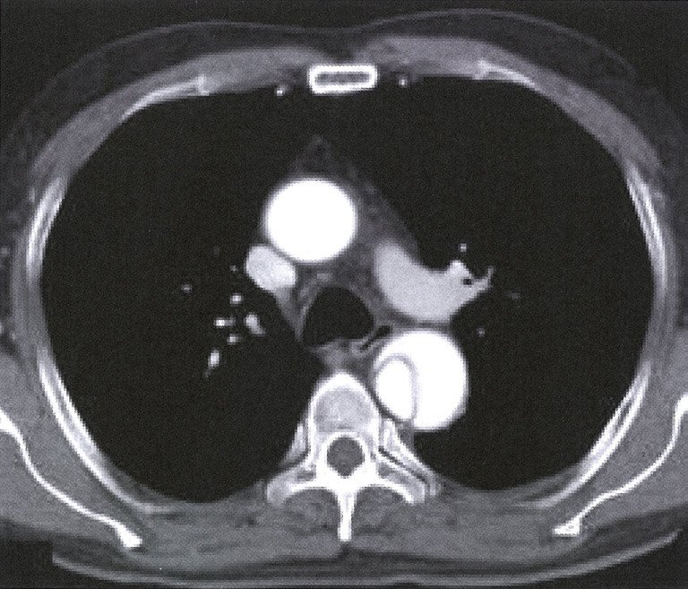
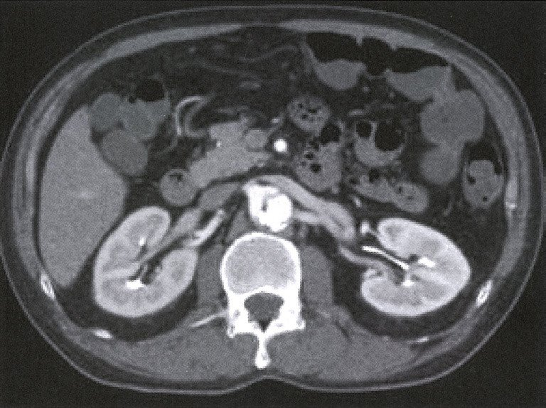
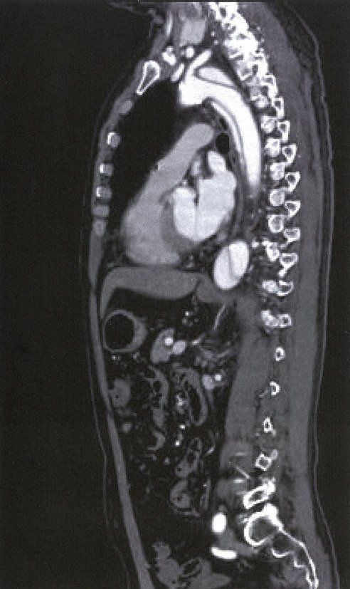
ａ 胸 水
ｂ 腹腔内出血
ｃ 大動脈解離
ｄ 腎実質血流の途絶
ｅ 血管内腔への腫瘍性病変の進展
✅
ｃ 大動脈解離
先行症例（突然背部痛・移動する痛み・左右血圧差）から大動脈解離が最も疑われ、CTで確認される。
🩻 大動脈解離のCT所見——フラップを見つけ、範囲を追う
造影CTは大動脈解離の確定診断における第一選択で、感度・特異度とも95%以上である——診断の核は「内膜フラップ〈intimal flap〉を見つけること」、すなわち大動脈の内腔を2つに分ける線状の隔壁を確認することにある。真腔と偽腔の見分け方——真腔は内腔が小さく、造影が濃く早い／偽腔は大きく、造影が遅れて薄く、血栓を含むことがある。偽腔がフラップを押してくちばし状に食い込む所見〈beak sign〉、偽腔内に内膜の断片が残るcobweb signも偽腔の同定に使われる。
撮影は「単純＋造影」が基本である——単純CTでしか見えない所見がある。calcium sign（内膜石灰化が本来の外壁から6mm以上内側へずれて見える）、偽腔内血栓の三日月状高吸収域、心嚢や胸腔内の新鮮出血（高吸収液体）。
矢状断・冠状断の再構成が重要である理由——水平断だけでは「どこからどこまで裂けているか」が分かりにくい。本例が胸腹部CT矢状断像（C）を提示しているのは、解離の縦方向の広がりを一目で示すためである。これにより上行大動脈に及んでいるか（Stanford分類）とどの分枝が巻き込まれているかが判定でき、そのまま治療方針に直結する。
本例の解離の型を読む——心音に異常なし（＝ARなし）、上肢の血圧左右差がほぼなし、痛みが背部から腰部へ移動（末梢へ進展）、CTでも胸部下行から腹部にかけての解離。これらはStanford B型を強く示唆する。この読みが次問（Q.492）の治療選択に直結する。
□ 選択肢の検討
| 選択肢 | 解説 |
|---|---|
| ａ 胸 水 | 認めない。胸水は解離が胸腔へ穿破した場合や、偽腔からの滲出で生じうる所見だが、本例のCTでは胸腔内に液体貯留を示す所見がない——臨床的にも呼吸音に異常を認めず、胸腔内に病変があることを示唆する所見がない。解離に胸水（とくに左胸水）を認めれば切迫破裂・破裂を示す危険なサインとなるが、本例はその段階ではない。 |
| ｂ 腹腔内出血 | 認めない。腹腔内出血があれば腹膜刺激症状・腹部膨隆・急速に進行するショック・Hbの著明な低下を伴うはずである——本例は右上肢178/90mmHg・左上肢172/92mmHgと血圧が保たれ（むしろ高値）、Hb 13.8g/dL・Ht 42%と貧血がない。腹部CT水平断像（B）でも腹腔内の高吸収液体は認めない。腹腔内出血は腹部大動脈瘤の自由破裂で見る所見である。 |
| ◯ ｃ 大動脈解離 | これが正解。提示された胸部CT水平断像（A）・腹部CT水平断像（B）・胸腹部CT矢状断像（C）のいずれにも、大動脈の内腔を二つに分ける線状の隔壁＝内膜フラップが写っている——とくに矢状断像（C）では、解離が胸部下行大動脈から腹部大動脈まで連続して伸びている様子が一望でき、これが「解離である」ことの決定的な証拠になる。臨床所見も完全に符合する——突然の背部痛で痛み始めが最も強く、腰部へ移動（解離が末梢へ進展）、50年の喫煙歴と19年来の高血圧（危険因子）、白血球11,800とAST/ALT/LDの軽度上昇（解離に伴う炎症反応と灌流の変化）。なお上肢血圧の左右差は178/90 vs 172/92でごく僅かだが、これは解離を否定しない（左右差は3割程度にしか出ない）。 |
| ｄ 腎実質血流の途絶 | 認めない。腎動脈が偽腔に圧排されて腎実質の血流が途絶すれば、造影CTで患側腎が造影されない（腎梗塞像）という劇的な所見となる——しかし本例は尿所見に蛋白・糖ともに陰性、クレアチニン0.9mg/dLと正常で、腎機能障害を示す所見がない。腹部CT水平断像（B）でも両腎は均等に造影されている。腎の灌流障害は解離の重要な合併症だが、本例では生じていない。 |
| ｅ 血管内腔への腫瘍性病変の進展 | 認めない。「血管内腔への腫瘍性病変の進展」とは腎細胞癌の下大静脈腫瘍栓・肝細胞癌の門脈腫瘍栓・平滑筋肉腫などを指す所見である——これらは静脈系に多く、動脈内腔へ腫瘍が伸びることは極めてまれである。本例は突然発症の背部痛という急性の経過で、腫瘍を疑わせる病歴（体重減少・食欲不振・腫瘤触知）も検査所見もない。フラップ（内膜の薄い線状構造）と腫瘍栓（充実性の腫瘤）はCT上の見え方が明確に異なる。 |
🔍 CTで「何が写っていないか」も読む——選択肢を一つずつ潰す
| 選択肢の所見 | あればどう見えるか | 本例の裏づけ |
|---|---|---|
| 胸 水 | 背側胸腔の三日月状液体貯留。左優位なら切迫破裂 | 呼吸音正常・CTに液体なし |
| 腹腔内出血 | 腹腔内の高吸収液体・Morison窩の貯留 | Hb 13.8g/dL・血圧178/90mmHgで出血の証拠なし |
| 大動脈解離 | 内腔を二分する線状フラップ。矢状断で連続性を確認 | A・B・Cすべてに描出＝これが答え |
| 腎実質血流の途絶 | 患側腎が造影されない（楔状〜全体の造影欠損） | クレアチニン0.9mg/dL・尿所見正常 |
| 腫瘍性病変の血管内進展 | 静脈内の充実性腫瘤（腎細胞癌・肝細胞癌） | 急性発症で腫瘍を疑う所見なし |
解離を疑う臨床像のおさらい——本例の「痛み始めが最も強く、腰部へ移動した」という記述は、解離の痛みの2大特徴（発症時が最強・移動する）をそのまま書いたものである。加えて脈拍120/分という頻脈は交感神経の緊張を示し、血圧178/90mmHgという高値は解離を進展させる方向に働く——だから治療の第一手は降圧になる（Q.492）。
血液所見の読み——白血球11,800（桿状核好中球22%と左方移動）は解離に対する急性炎症反応で感染を意味しない。AST 52・ALT 55・LD 290の軽度上昇も解離に伴う組織傷害と灌流の変化を反映する。一方でCK 98IU/L（基準内）は心筋壊死がないことを示し、急性心筋梗塞を遠ざける有力な陰性所見である。
🎯 国試ポイント
① 大動脈解離のCT診断の核は内膜フラップ——内腔を二分する線状の隔壁。矢状断・冠状断の再構成で範囲（縦の広がり）を確認する。② 真腔は小さく造影が濃い／偽腔は大きく造影が遅れ血栓を含む。beak sign・cobweb signが偽腔の同定に使われる。
③ 単純CTでも calcium sign（内膜石灰化の内方偏位）・偽腔内血栓の三日月状高吸収で解離を疑える。解離では単純＋造影を撮る。
④ 解離に左胸水を認めたら切迫破裂・破裂を疑う危険なサイン。
⑤ 腎動脈が巻き込まれれば患側腎が造影されない。クレアチニンと尿所見が正常なら灌流は保たれている。
⑥ 「痛み始めが最も強く、移動する」は解離の2大特徴。心筋梗塞は漸増し移動しない。
⑦ 解離では白血球増多・CRP上昇が早期に出る（壁の炎症反応であり感染ではない）。CKが基準内なら心筋梗塞を遠ざける。
Q.492(110F-29)必修臨床98%
次の文を読み、491 と492 の問いに答えよ。
72 歳の男性。突然の背部痛と冷汗とを主訴に来院した。
現病歴：本日午後2 時、庭仕事中に突然の背部痛と冷汗とを自覚した。背部痛は、痛み始めが最も強く、腰部へ移動した。症状が続くため受診した。
既往歴：53 歳時に高血圧症を指摘され自宅近くの診療所に通院中である。
生活歴：夫婦2 人暮らし。現在は無職。喫煙は70 歳まで25 本/ 日を50 年間。飲酒は機会飲酒。
現 症：意識は清明。身長158cm、体重60kg。脈拍120/ 分、整。右上肢血圧178/90mmHg、左上肢血圧172/92mmHg。心音と呼吸音とに異常を認めない。
検査所見：尿所見：蛋白（－）、糖（－）。血液所見：赤血球450万、Hb 13.8g/dL、Ht 42％、白血球11,800（桿状核好中球22％、分葉核好中球40％、好酸球2％、好塩基球1％、単球7％、リンパ球28％）、血小板18 万。血液生化学所見：総蛋白6.0g/dL、AST 52IU/L、ALT 55IU/L、LD 290IU/L（基準176 ～353）、尿素窒素32mg/dL、クレアチニン0.9mg/dL、CK 98IU/L（基準30 ～140）。胸部CT 水平断像（A）、腹部CT 水平断像（B）及び胸腹部CT 矢状断像（C）を示す。
この時点の治療で適切なのはどれか。
72 歳の男性。突然の背部痛と冷汗とを主訴に来院した。
現病歴：本日午後2 時、庭仕事中に突然の背部痛と冷汗とを自覚した。背部痛は、痛み始めが最も強く、腰部へ移動した。症状が続くため受診した。
既往歴：53 歳時に高血圧症を指摘され自宅近くの診療所に通院中である。
生活歴：夫婦2 人暮らし。現在は無職。喫煙は70 歳まで25 本/ 日を50 年間。飲酒は機会飲酒。
現 症：意識は清明。身長158cm、体重60kg。脈拍120/ 分、整。右上肢血圧178/90mmHg、左上肢血圧172/92mmHg。心音と呼吸音とに異常を認めない。
検査所見：尿所見：蛋白（－）、糖（－）。血液所見：赤血球450万、Hb 13.8g/dL、Ht 42％、白血球11,800（桿状核好中球22％、分葉核好中球40％、好酸球2％、好塩基球1％、単球7％、リンパ球28％）、血小板18 万。血液生化学所見：総蛋白6.0g/dL、AST 52IU/L、ALT 55IU/L、LD 290IU/L（基準176 ～353）、尿素窒素32mg/dL、クレアチニン0.9mg/dL、CK 98IU/L（基準30 ～140）。胸部CT 水平断像（A）、腹部CT 水平断像（B）及び胸腹部CT 矢状断像（C）を示す。
この時点の治療で適切なのはどれか。
ａ 降圧療法
ｂ 腎血管形成術
ｃ 冠動脈形成術
ｄ 心臓リハビリテーション
ｅ t-PA〈tissue plasminogen activator〉の投与
✅
ａ 降圧療法
Stanford B型（下行大動脈のみ）→合併症なければ降圧療法（収縮期圧<120mmHg、HR<60/分）が第一選択。
🅱 Stanford B型解離——「降圧が治療の本体」である
Stanford B型（上行大動脈に及ばない）解離は、合併症がなければ手術せず、降圧療法で経過をみる——これはA型と正反対の方針であり、その理由はB型の自然経過（急性期死亡率10%前後）が、開胸手術のリスクを下回るからである。降圧療法の中身——① 集中治療室での安静と厳重なモニタリング／② 疼痛管理（麻薬性鎮痛薬をためらわない。痛みが交感神経を刺激して血圧を上げる）／③ β遮断薬（ランジオロール・エスモロールなど）でまず心拍数を60/分前後へ／④ それでも高ければ血管拡張薬（ニカルジピン等）を追加し、収縮期血圧100〜120mmHgへ。目的は血圧の数字ではなく大動脈壁にかかる剪断力〈dP/dt〉を下げることで、dP/dtは心収縮力と心拍数に比例するため、心拍数のコントロールが血圧と同じくらい重要になる。
⚠️ 血管拡張薬を単独で先に使うと反射性頻脈でdP/dtが増え、かえって解離が進む——だからβ遮断薬が先である。
B型でも手術（TEVAR）が必要になる「合併症」——① 破裂・切迫破裂（左胸水・血腫の増大）／② 臓器灌流障害（腸管虚血＝激しい腹痛と血便、腎虚血＝乏尿とクレアチニン上昇、下肢虚血＝脈拍消失、脊髄虚血＝対麻痺）／③ 制御できない疼痛／④ 制御できない高血圧／⑤ 偽腔の急速な拡大。これらが出たらTEVAR（胸部ステントグラフト内挿術）が第一選択となり、開胸手術は最後の手段である。
慢性期の管理——生涯にわたる厳格な降圧（β遮断薬を軸に）と、定期的なCTでの径のフォロー。偽腔が開存したまま拡大すれば慢性解離性大動脈瘤となり、径5.5〜6cmで手術適応になる。
□ 選択肢の検討
| 選択肢 | 解説 |
|---|---|
| ◯ ａ 降圧療法 | これが正解。本例は上行大動脈に及ばない＝Stanford B型の急性大動脈解離である——根拠は心音に異常を認めない（ARがない）、上肢血圧の左右差がほぼない、痛みが背部から腰部へ移動した（末梢へ進展）、CTで胸部下行から腹部にかけての解離が描出されていること。合併症のないB型解離の第一選択は降圧療法（保存的治療）である——本例は血圧178/90mmHg・脈拍120/分と、大動脈壁への剪断力が高いまま放置されている状態で、直ちに降圧と心拍数コントロールを開始する必要がある。目標は収縮期血圧100〜120mmHg・心拍数60/分前後で、β遮断薬を先に、血管拡張薬を後に加える。疼痛管理も同時に行う。 |
| ｂ 腎血管形成術 | 適応がない。腎血管形成術は腎動脈狭窄による腎血管性高血圧や虚血性腎症に対する治療である——本例はクレアチニン0.9mg/dL・尿所見正常で腎機能が保たれており、CTでも腎実質の血流途絶を認めない（Q.491 で確認済み）。仮に解離が腎動脈を巻き込んで灌流障害を起こしていれば血行再建の適応となるが、本例はその段階にない。また解離のある大動脈にカテーテルを入れる操作自体が危険である。 |
| ｃ 冠動脈形成術 | 適応がない。冠動脈形成術〈PCI〉は急性冠症候群の治療だが、本例は心音に異常なく、CK 98IU/L（基準内）で心筋虚血を示す所見がない——胸痛ではなく背部痛が主訴であり、痛みは腰部へ移動している。冠動脈疾患の像ではない。⚠️ さらに重要なのは、解離のある大動脈にガイディングカテーテルを通せば偽腔へ迷入して解離を拡大させることと、PCIに伴う抗血小板薬・抗凝固薬が解離では禁忌であることである。 |
| ｄ 心臓リハビリテーション | 時期が違う。心臓リハビリテーションは心筋梗塞後・心不全・心臓手術後などの安定期に、運動耐容能の改善と再発予防を目的として行うものである——本例は発症当日の急性大動脈解離で、解離が進展・破裂しうる最も危険な時期にある。この時期に必要なのは安静と厳格な降圧であり、運動負荷は血圧と心拍数を上げて解離を進めるので有害である。 |
| ｅ t-PA〈tissue plasminogen activator〉の投与 | 禁忌。t-PAは血栓を溶かす薬で、大動脈解離では偽腔内の血栓が溶けて解離腔が急速に拡大し、破裂する——大動脈解離は血栓溶解療法の絶対禁忌である。この選択肢は、「突然の胸背部痛」を急性心筋梗塞や肺血栓塞栓症と誤診して線溶療法を行うという、実臨床で最も恐れられている事故を選択肢の形にしたものである。同様に抗凝固薬・抗血小板薬も解離では避ける。「血栓を溶かす・固まらせない」治療は、裂けて出血している血管には正反対の作用をもつと覚える。 |
⚖️ A型とB型で「初手」が正反対になる
| Stanford A型 | Stanford B型 | |
|---|---|---|
| 定義 | 上行大動脈に及ぶ | 上行に及ばない |
| 初手 | 緊急手術（上行人工血管置換など） | 降圧の保存療法 |
| 降圧の位置づけ | 手術までのつなぎ | 治療の本体 |
| 未治療の死亡率 | 48時間で約50%（1時間ごとに約1%増） | 急性期10%前後 |
| 特有の合併症 | AR・心タンポナーデ・冠動脈閉塞・脳梗塞 | 腸管虚血・腎虚血・下肢虚血・対麻痺 |
| 手術が必要になる条件 | 診断そのもの | 破裂・灌流障害・難治性疼痛・難治性高血圧・偽腔の急拡大（そのときはTEVAR） |
B型解離の急性期管理で毎日確認すること——腹痛・血便（腸管虚血）／尿量とクレアチニン（腎虚血）／四肢の脈拍と皮膚温（下肢虚血）／下肢の運動（脊髄虚血）／痛みの再燃／Hbと胸部画像（破裂）。これらはいずれも「保存療法から介入へ」方針を切り替えるサインである。
禁忌の整理（解離全般に共通）——血栓溶解薬・抗凝固薬・抗血小板薬・IABP。加えて解離した大動脈へのカテーテル操作は原則避ける。急性期の運動負荷（心臓リハビリテーション）も当然に不可である。
本問の誤答選択肢は、いずれも「別の疾患なら正しい治療」を並べたものである——腎血管形成術＝腎動脈狭窄／冠動脈形成術＝急性冠症候群／心臓リハビリテーション＝安定期の心疾患／t-PA＝急性期脳梗塞や心筋梗塞。診断が違えば治療は害になるという、循環器診療の基本を確認する構成になっている。
🎯 国試ポイント
① 合併症のないStanford B型解離＝降圧療法（保存的治療）が第一選択。A型の緊急手術と正反対。② 降圧の目標は収縮期100〜120mmHg・心拍数60/分。β遮断薬を先に、血管拡張薬は後（単独先行は反射性頻脈でdP/dtを増やす）。疼痛管理も治療の一部。
③ B型でTEVARが必要になるのは、破裂・切迫破裂／臓器灌流障害／制御できない疼痛や高血圧／偽腔の急速拡大。
④ 解離では血栓溶解薬・抗凝固薬・抗血小板薬・IABPがすべて禁忌。裂けて出血している血管に「溶かす・固まらせない」治療は正反対に働く。
⑤ 急性期に運動負荷（心臓リハビリテーション）は不可。血圧と心拍数を上げて解離を進める。
⑥ B型の急性期は腹痛・血便・尿量・四肢の脈拍・下肢の運動・痛みの再燃を毎日確認する。方針転換のサインになる。
⑦ 慢性期は生涯の降圧と定期CT。偽腔が拡大すれば慢性解離性大動脈瘤となり径5.5〜6cmで手術適応。
Q.493(109F-5)必修CBT一般70%
胸痛の特徴と疑われる疾患の組合せで適切でないのはどれか。
ａ 頸部へ放散する痛み ―――――― 狭心症
ｂ 針で刺したような痛み ――――― 肋間神経痛
ｃ 呼吸性に変動する痛み ――――― 胸膜炎
ｄ 徐々に増強する胸背部の痛み ―― 大動脈解離
ｅ 食後の仰臥位で増強する痛み ―― 逆流性食道炎
✅
ｄ 徐々に増強する胸背部の痛み ―― 大動脈解離
大動脈解離の痛みは突然発症・最初から激烈（徐々に増強する痛みではない）。
⏱ 胸痛は「立ち上がり方」で分ける——発症様式が最大の鑑別因子
胸痛の鑑別は、性状や部位よりも「どう始まったか」＝発症様式を先に確定するのが最短の道である——これは痛みの立ち上がり方が、その裏で起きている物理現象をそのまま反映するからである。① 突然発症・発症時が最強（秒単位で完成）＝何かが裂けた・詰まった・破れた——大動脈解離（内膜の裂開）／肺血栓塞栓症（血栓の嵌頓）／自然気胸・緊張性気胸（肺の破綻）／特発性食道破裂〈Boerhaave症候群〉。これらはいずれも致死的で、数分〜数時間で判断を迫られる。
② 数分〜数十分かけて漸増し、持続する＝虚血・炎症——急性心筋梗塞（プラーク破綻から壊死へ進む）／心膜炎・心筋炎／縦隔炎。
③ 反復性・誘因が明確＝労作性狭心症（労作で出て安静で消える・数分で消退）／GERD（食後・臥位）／肋間神経痛・肋軟骨炎（体動・圧迫）。
⚠️ 本問はこの分類を「組合せの適否」という形で問うている——大動脈解離を「徐々に増強する痛み」と書いた時点で①と②を取り違えているので、その一点で誤りと分かる。
問診はOPQRSTで漏れなく取る——Onset（突然か漸増か）／Provocation・Palliation（増悪・寛解因子）／Quality（性状）／Region・Radiation（部位・放散）／Severity（強さ）／Time course（経過・持続時間）。このうちOnsetだけで致死的疾患の半分がふるいにかけられるのが胸痛診療の要点である。
□ 選択肢の検討
| 選択肢 | 解説 |
|---|---|
| ａ 頸部へ放散する痛み ―――――― 狭心症 | 適切な組合せ。狭心症の痛みは心臓由来の内臓痛で、心臓の求心性線維がC3〜Th5の後角へ入り、同じ髄節の体性感覚と混線するために広い範囲へ関連痛として広がる——典型的な放散先は頸部・下顎・左肩・左上肢尺側・心窩部で、頸部への放散は狭心症らしさを強める所見である。内臓痛なので「押さえつけられる」「締めつけられる」と表現され、指1本で示せない（Levine徴候＝拳を胸に当てる）のが特徴である。 |
| ｂ 針で刺したような痛み ――――― 肋間神経痛 | 適切な組合せ。肋間神経痛は末梢神経（体性神経）由来の痛みなので、「針で刺したような」「電気が走るような」鋭い痛みとなる——体性痛の特徴は局在が明瞭で患者が指1本で場所を示せることと、数秒〜数十秒で終わる発作性であることである。体動・深呼吸・咳・肋間の圧迫で誘発され、皮膚分節に沿って走る。帯状疱疹の前駆症状としても現れる。 |
| ｃ 呼吸性に変動する痛み ――――― 胸膜炎 | 適切な組合せ。胸膜炎の痛みは胸膜痛〈pleuritic pain〉で、臓側胸膜には痛覚がなく、壁側胸膜（肋間神経・横隔神経支配）が炎症で擦れることで生じる——したがって吸気で増悪し、息を止めると軽くなるという呼吸性の変動が最大の特徴になる。聴診で胸膜摩擦音を聴取することがある。肺塞栓症・気胸・心膜炎も同じ性質の痛みを起こすので、呼吸性変動があれば胸膜・心膜側の病変を考える。 |
| ◯ ｄ 徐々に増強する胸背部の痛み ―― 大動脈解離 | これが「適切でない」＝正解。大動脈解離の痛みは「徐々に増強する」ではなく、発症の瞬間が最も強い〈pain maximal at onset〉——内膜が裂けるという物理的な破綻が一瞬で起こるため、患者は「何時何分に始まった」と時刻を特定できるほど突然である。表現も「引き裂かれるような」「これまで経験したことのない激痛」と激烈で、しばしば冷汗・苦悶様顔貌・失神を伴う。さらに解離が進展するにつれて痛みの部位が移動する（前胸部→頸部・下顎、あるいは背部→腰部）のも解離に固有の所見である。⚠️ 「徐々に増強する胸痛」はむしろ急性心筋梗塞・心膜炎・縦隔炎などを示唆し、解離とは正反対の立ち上がり方である。 |
| ｅ 食後の仰臥位で増強する痛み ―― 逆流性食道炎 | 適切な組合せ。胃食道逆流症〈GERD〉・逆流性食道炎の痛みは胃酸が下部食道括約筋〈LES〉を越えて食道粘膜を傷害することで生じる——食後（胃内容と胃酸が増える）と仰臥位・前屈位（重力の助けが失われ腹圧が上がる）で増悪するという体位・時間依存性が診断の手がかりになる。胸骨後部の灼熱感（胸やけ）が典型だが、狭心症と紛らわしい絞扼感を呈することもある。制酸薬・PPIで軽快する点が鑑別に有用である。 |
🚨 見逃してはならない胸痛〈killer chest pain〉と痛みの性状の対応
| 疾患 | 立ち上がり | 性状・部位 | 決め手になる所見 |
|---|---|---|---|
| 大動脈解離 | 突然・発症時が最強 | 引き裂かれるよう・移動する（胸→背→腰） | 血圧左右差・拡張期雑音・縦隔拡大 |
| 急性心筋梗塞 | 数分で漸増し20分以上持続 | 締めつけられる・前胸部・頸部/下顎/左上肢へ放散 | 心電図ST変化・トロポニン上昇 |
| 肺血栓塞栓症 | 突然 | 呼吸性に変動・側胸部 | 頻呼吸・低酸素・Dダイマー上昇・下肢腫脹 |
| 緊張性気胸 | 突然 | 刺すよう・患側 | 患側呼吸音消失・鼓音・頸静脈怒張・気管偏位 |
| 食道破裂 | 嘔吐の直後に突然 | 下部胸骨後〜心窩部 | 皮下気腫・縦隔気腫・Hamman徴候 |
| 心膜炎 | 漸増 | 前屈で軽快・臥位で増悪・呼吸性変動 | 心膜摩擦音・広範なST上昇とPR低下 |
| GERD | 反復 | 食後・臥位で増悪・灼熱感 | 制酸薬で軽快・内視鏡 |
| 肋間神経痛・肋軟骨炎 | 反復 | 刺すよう・局在明瞭 | 圧痛で再現できる・体動で誘発 |
「痛みの性状」だけを信じてはいけない——大動脈解離の痛みが必ずしも「引き裂かれるよう」と表現されるわけではなく、実際には「鋭い痛み」と述べる患者が最も多いという報告もある。また高齢者・糖尿病患者では痛みが軽い、あるいは無痛のこともある。だからこそ「突然始まったか」という発症様式と、身体所見（左右差・雑音）を軸に据える。
関連痛（放散痛）の解剖学的な理由——心臓の内臓求心線維はTh1〜Th5（一部C3〜C5）の脊髄後角に入り、同じ髄節に入る体性感覚（上肢尺側・頸部・下顎・肩）と収束する。脳はこれを体表の痛みと誤って解釈する〈収束投射説〉。横隔膜中央部は横隔神経（C3〜C5）支配なので、横隔膜刺激は肩へ放散する——胸膜炎・心膜炎・腹腔内出血で肩の痛みが出るのはこのためである。
🎯 国試ポイント
① 大動脈解離の痛みは「突然発症・発症時が最強・移動する」。徐々に増強する痛みは解離らしくない——本問の核心。② 胸痛はまず発症様式で3つに分ける——突然（解離・PE・気胸・食道破裂）／漸増して持続（AMI・心膜炎）／反復性（狭心症・GERD・肋間神経痛）。
③ 狭心症の放散痛は頸部・下顎・左肩・左上肢尺側・心窩部。内臓痛なので局在が不明瞭で、拳で示す（Levine徴候）。
④ 呼吸性に変動する痛み＝胸膜・心膜由来（胸膜炎・肺塞栓・気胸・心膜炎）。臓側胸膜には痛覚がなく、痛むのは壁側胸膜。
⑤ 刺すような局在明瞭な痛みで圧痛により再現できる＝胸壁由来（肋間神経痛・肋軟骨炎）。
⑥ 食後・仰臥位・前屈で増悪し制酸薬で軽快＝GERD。狭心症と紛らわしい絞扼感を呈することがある。
⑦ 心膜炎の痛みは前屈で軽快・臥位で増悪——GERDと逆になるので対にして覚える。
Q.494(109I-10)一般97%
Stanford B 型急性大動脈解離の合併症として可能性が最も低いのはどれか。
ａ 血 胸
ｂ 腎不全
ｃ 下肢虚血
ｄ 腸管壊死
ｅ 急性心筋梗塞
✅
ｅ 急性心筋梗塞
Stanford B型は下行大動脈のみ関与→冠動脈（左右）は上行大動脈から分枝→B型ではAMIを合併しない。
🌳 分枝の解剖がそのまま合併症の地図になる
大動脈解離の合併症は、「裂けた範囲にどの分枝が含まれるか」だけで機械的に決まる——つまり大動脈の分枝の解剖を順に思い出せば、合併症のリストがそのまま作れる。上行大動脈（A型のみが巻き込む）——左右の冠動脈（Valsalva洞から）→急性冠症候群・下壁梗塞／大動脈弁（弁輪が引き伸ばされる）→急性大動脈弁閉鎖不全／心膜腔（上行大動脈の近位部は心膜に包まれる）→心タンポナーデ。
弓部（A型・一部のB型）——腕頭動脈・左総頸動脈→脳梗塞・意識障害・片麻痺／左鎖骨下動脈→上肢の血圧左右差・上肢虚血。
下行大動脈（B型の主戦場）——肋間動脈・Adamkiewicz動脈→脊髄虚血・対麻痺／左胸腔に接する→破裂で左血胸。
腹部大動脈——腹腔動脈・上腸間膜動脈→腸管虚血・腸管壊死／腎動脈→急性腎障害・腎血管性高血圧／総腸骨動脈→下肢虚血。
⚠️ 本問は「B型に上行大動脈は含まれない」という定義を、冠動脈の分枝部位を通して問うている——冠動脈・大動脈弁・心膜はすべて上行大動脈まわりの構造なので、AMI・AR・心タンポナーデはA型に固有と一括して覚えるのが最も効率がよい
解離が起こりやすい部位も分枝の解剖で説明できる——内膜の裂け目（entry）は上行大動脈のValsalva洞のすぐ上（右前壁）と左鎖骨下動脈起始部の直後（動脈管索の付着部）の2か所に集中する。いずれも大動脈が固定されている部位のすぐ先で、心拍ごとの伸展と屈曲のストレスが集中する場所である。前者から始まればA型、後者から始まればB型になりやすい。。
□ 選択肢の検討
| 選択肢 | 解説 |
|---|---|
| ａ 血 胸 | 起こりうる。Stanford B型は下行大動脈の解離であり、下行大動脈は左後縦隔で左胸腔に接している——したがって破裂すれば血液は左胸腔へ流れ込み、血胸（とくに左血胸）となる。B型解離で左胸水を認めたら切迫破裂・破裂を強く疑い、保存療法からTEVAR（胸部ステントグラフト内挿術）へ方針を切り替える危険なサインである。 |
| ｂ 腎不全 | 起こりうる。腎動脈は腹部大動脈から分枝するので、解離が横隔膜を越えて腹部大動脈へ及べば腎動脈の起始部が偽腔に圧排されて腎虚血となる——B型解離は下行大動脈から腹部大動脈まで連続して裂けることが多いため、腎灌流障害は代表的な合併症である。臨床的には乏尿・クレアチニンの上昇・難治性高血圧（レニン分泌亢進）として現れる。B型の急性期に尿量とクレアチニンを毎日追うのはこのためである。 |
| ｃ 下肢虚血 | 起こりうる。解離が腹部大動脈から総腸骨動脈へ進展すれば下肢への血流が途絶し、下肢虚血となる——身体所見では大腿動脈・膝窩動脈・足背動脈の触知不良、患肢の冷感・蒼白・疼痛・感覚障害・運動麻痺（急性動脈閉塞の5P）が出る。B型解離の急性期に四肢の脈拍を毎日確認するのは、これが介入へ切り替えるサインだからである。 |
| ｄ 腸管壊死 | 起こりうる。腹腔動脈・上腸間膜動脈〈SMA〉・下腸間膜動脈も腹部大動脈から分枝するので、解離が及べば腸管虚血から腸管壊死に至る——腸管虚血はB型解離の合併症のなかで最も予後が悪いもので、激しい腹痛（所見に乏しい割に痛みが強い）・血便・代謝性アシドーシス・乳酸上昇で疑う。診断が遅れると腸管壊死・穿孔・敗血症へ進むため、B型の急性期に腹痛と血便の有無を必ず確認する。 |
| ◯ ｅ 急性心筋梗塞 | これが「可能性が最も低い」＝正解。左右の冠動脈は上行大動脈の起始部（Valsalva洞）から分枝する——Stanford B型は定義上上行大動脈に解離が及ばないので、冠動脈の起始部は解離の範囲外にあり、解離そのものが急性心筋梗塞を起こすことはない。逆にA型では冠動脈入口部が偽腔に圧排されて急性冠症候群を起こす——とくに右冠動脈が巻き込まれやすく、下壁梗塞の形をとる。⚠️ ここを取り違えて「胸痛＋ST上昇」から急性心筋梗塞と診断し、血栓溶解薬や抗血小板薬を投与するのが、解離診療で最も恐れられている事故である。 |
⚖️ Stanford分類——A型とB型で合併症も治療も分かれる
| Stanford A型 | Stanford B型 | |
|---|---|---|
| 定義 | 上行大動脈に解離が及ぶ（入口部の位置は問わない） | 上行大動脈に及ばない |
| 頻度 | 約2/3 | 約1/3 |
| 固有の合併症 | 急性心筋梗塞（右冠動脈＝下壁）・大動脈弁閉鎖不全・心タンポナーデ・脳梗塞 | 腸管虚血・腎虚血・下肢虚血・対麻痺・左血胸 |
| 共通の合併症 | 破裂・出血性ショック・脊髄虚血（範囲による）・難治性疼痛 | |
| 治療の初手 | 緊急手術（人工血管置換） | 降圧療法（保存的） |
| 未治療の死亡率 | 48時間で約50%（発症から1時間ごとに約1%増） | 急性期10%前後 |
| 手術に切り替える条件 | 診断そのもの | 破裂・切迫破裂／臓器灌流障害／難治性疼痛／難治性高血圧／偽腔の急速拡大→TEVAR |
DeBakey分類も押さえておく——Ⅰ型＝上行から弓部・下行へ／Ⅱ型＝上行に限局／Ⅲ型＝下行から末梢（Ⅲa＝胸部内、Ⅲb＝腹部へ及ぶ）。Ⅰ型とⅡ型がStanford A、Ⅲ型がStanford Bに対応する。
B型の合併症を「毎日みる項目」に翻訳しておく——腹痛・血便（腸管虚血）／尿量・クレアチニン（腎虚血）／四肢の脈拍・皮膚温（下肢虚血）／下肢の運動と感覚（脊髄虚血）／Hbと胸部画像（破裂・血胸）／痛みの再燃。これらのどれか一つでも陽性になれば保存療法の失敗＝介入へ切り替えるサインであり、逆に言えばすべて陰性なら降圧を続けるという判断になる。
⚠️ 脊髄虚血（対麻痺）は下行大動脈のAdamkiewicz動脈（多くはTh9〜L2の左肋間・腰動脈から）が閉塞して起こる。B型解離でもTEVAR後でも起こりうる重篤な合併症で、対麻痺・膀胱直腸障害を生じる
B型が「手術しない」と決められている根拠を数字で押さえる——合併症のないB型を降圧で管理した場合の急性期死亡率は10%前後であるのに対し、急性期に開胸で下行大動脈を置換すると死亡率も対麻痺の頻度も跳ね上がる。つまり「手術のほうが危ない」から保存療法を選ぶのであって、軽症だから様子をみるのではない。この違いを理解していれば、合併症が出た瞬間に方針を切り替えるという管理の要点が自然に導ける。近年はTEVARが低侵襲なため、偽腔開存例や高リスク例では急性期〜亜急性期にTEVARを行う方向へ動いている。。
🎯 国試ポイント
① 冠動脈は上行大動脈（Valsalva洞）から分枝する——だからStanford B型では急性心筋梗塞を合併しない。本問の核心。② A型に固有＝急性心筋梗塞（右冠動脈＝下壁が多い）・大動脈弁閉鎖不全・心タンポナーデ・脳梗塞。いずれも上行大動脈まわりの構造と覚える。
③ B型に固有＝腸管虚血・腎虚血・下肢虚血・対麻痺・左血胸。いずれも下行〜腹部大動脈の分枝。
④ Stanford分類は「上行に及ぶか否か」だけ。A型＝緊急手術／B型＝降圧の保存療法と、治療が正反対になる。
⑤ DeBakeyⅠ・Ⅱ＝Stanford A、DeBakeyⅢ＝Stanford B。
⑥ B型で左胸水が出たら切迫破裂・破裂を疑い、TEVARへ切り替える。
⑦ 下行大動脈のAdamkiewicz動脈（Th9〜L2の左側が多い）の閉塞で対麻痺を起こす。TEVAR後にも起こる。
Q.495(108A-12)CBT一般93%
Stanford A 型急性大動脈解離が原因とならないのはどれか。
ａ 脳梗塞
ｂ 緊張性気胸
ｃ 急性冠症候群
ｄ 心タンポナーデ
ｅ 大動脈弁閉鎖不全
✅
ｂ 緊張性気胸
緊張性気胸は肺・胸膜疾患（外傷・肺病変）が原因→大動脈解離とは無関係。
💔 Stanford A型の4大合併症——「上行大動脈まわりの構造」がすべて
Stanford A型解離が緊急手術の絶対適応とされるのは、上行大動脈の周囲に「死に直結する構造」が4つ集まっているからである——この4つを押さえれば、A型の臨床像も治療方針もすべて説明できる。① 心膜腔への穿破＝心タンポナーデ（最多の死因）——上行大動脈の近位2/3は心膜に包まれているため、破裂すれば血液が心膜腔に直行する。Beckの三徴＋奇脈で疑い、心エコーで確認。心嚢穿刺は禁忌に近く、直ちに手術。
② 大動脈弁閉鎖不全——弁輪拡大・弁尖の支持破綻・フラップの落ち込みの3機序。胸骨左縁第3肋間の拡張期雑音で疑う。
③ 冠動脈閉塞＝急性心筋梗塞——右冠動脈が巻き込まれやすく下壁梗塞の形をとる。
④ 弓部分枝の閉塞＝脳梗塞——腕頭動脈・左総頸動脈の灌流障害。片麻痺・意識障害・失語で発症する。
⚠️ この4つはいずれも「別の疾患として誤診されやすい」——タンポナーデは心不全・ショック、ARは弁膜症、冠動脈閉塞は急性心筋梗塞、弓部分枝閉塞は脳卒中と読まれる。誤診した先に待っているのが血栓溶解薬・抗血小板薬・抗凝固薬・IABP・心嚢穿刺という、いずれも解離では有害な処置である。
だから「突然の胸背部痛」を見たら、まず両上肢の血圧を測り、拡張期雑音を聴き、頸静脈を見る——この3つが解離を疑うための最短の身体診察になる。
□ 選択肢の検討
| 選択肢 | 解説 |
|---|---|
| ａ 脳梗塞 | 原因となる。解離が腕頭動脈・左総頸動脈へ進展すると、その先の内頸動脈系の灌流が落ちて脳梗塞となる——A型解離の5〜10%が脳虚血症状（片麻痺・意識障害・失語）で発症し、しばしば脳卒中と誤診される。⚠️ ここでt-PAや抗血小板薬を投与すると解離腔が急速に拡大し致命的になる。痛みを伴う脳梗塞・血圧左右差のある脳梗塞では解離を除外してから治療する。 |
| ◯ ｂ 緊張性気胸 | これが「原因とならない」＝正解。緊張性気胸は臓側胸膜が破れて一方向弁ができ、胸腔内に空気が溜まり続けて縦隔を圧排する病態である——原因は外傷（肋骨骨折・穿通性外傷）・陽圧換気・ブラの破裂・肺の基礎疾患であり、いずれも肺と胸膜の問題で、大動脈とは解剖学的につながらない。大動脈解離が胸腔へ穿破すれば血胸にはなるが、「空気が溜まる」気胸にはならない——溜まるのは血液である。なお両者はともに「突然の胸痛＋ショック」で来るので鑑別は重要である。緊張性気胸は患側呼吸音の消失・鼓音・気管の健側偏位・頸静脈怒張で診断し、画像を待たずに脱気する。 |
| ｃ 急性冠症候群 | 原因となる。左右の冠動脈は上行大動脈のValsalva洞から分枝するため、A型解離では冠動脈入口部が偽腔に圧排されて急性冠症候群を起こす——解離は大動脈の右前壁から始まることが多く、その延長にある右冠動脈が巻き込まれやすいので、下壁梗塞（Ⅱ・Ⅲ・aVFのST上昇）の形をとることが多い。⚠️ 「下壁のST上昇＋胸背部痛＋血圧左右差」を見たら、PCIへ走る前に解離を疑う。抗凝固・抗血小板薬とカテーテル操作がいずれも致命的になる。 |
| ｄ 心タンポナーデ | 原因となる。上行大動脈の近位部は心膜（漿膜性心膜の臓側板）に包まれている——これはA型解離の予後を決定づける解剖学的事実である——上行大動脈が破裂すれば血液は直接心膜腔へ流れ込み、急速に心タンポナーデとなる。所見はBeckの三徴（血圧低下・頸静脈怒張・心音減弱）と奇脈で、心エコーで心嚢液と右房・右室の拡張期虚脱を確認する。⚠️ A型解離のタンポナーデでは心嚢穿刺は原則行わない——心嚢内圧が下がるとタンポナーデによる圧迫止血が解除されて再出血が加速する。直ちに手術室へ運ぶのが正解である。 |
| ｅ 大動脈弁閉鎖不全 | 原因となる。A型解離では急性大動脈弁閉鎖不全〈AR〉が40〜70%に合併し、急性心不全・肺水腫の原因になる——機序は3つ——① 解離が弁輪へ及んで弁輪が拡大する／② 弁交連の支持が剥離して弁尖が落ち込む〈prolapse〉／③ 剥離した内膜フラップが弁口へ落ち込んで閉鎖を妨げる。聴診では胸骨左縁第3肋間を最強点とする拡張期灌水様雑音を聴取する——突然の胸背部痛＋拡張期雑音はA型解離の強力な手がかりである。急性ARでは左室が拡張する時間がないため、慢性ARの所見（脈圧増大・Corrigan脈・心尖拍動の外側偏位）は乏しいことに注意する。 |
🫁 緊張性気胸との対比——「突然の胸痛＋ショック」で並ぶ2疾患
| Stanford A型大動脈解離 | 緊張性気胸 | |
|---|---|---|
| 本態 | 中膜が長軸方向に裂ける | 胸腔内に空気が溜まり縦隔を圧排 |
| 原因 | 高血圧・動脈硬化・Marfan症候群・二尖弁・妊娠 | 外傷・陽圧換気・ブラ破裂・肺疾患 |
| 痛み | 引き裂かれるよう・移動する | 刺すよう・患側・呼吸困難が前面 |
| 呼吸音 | 正常 | 患側で消失（＋鼓音） |
| 頸静脈 | タンポナーデ合併時に怒張 | 怒張（静脈還流が阻害される） |
| 気管 | 正中 | 健側へ偏位 |
| 血圧左右差 | あり（約30%） | なし |
| 初期対応 | 降圧しつつ緊急手術へ | 画像を待たず穿刺脱気→胸腔ドレナージ |
緊張性気胸が「画像を待ってはいけない」唯一に近い疾患である理由——胸腔内圧の上昇が上大静脈・下大静脈を圧迫して静脈還流を止めるため、分単位で心停止に至る。診断は臨床所見のみで下し、第2肋間鎖骨中線（または第5肋間前腋窩線）から穿刺脱気する。
大動脈解離が胸腔へ穿破した場合は「血胸」である——下行大動脈は左胸腔に接するので左血胸となり、胸部エックス線で患側の均一な陰影と縦隔の健側偏位を示す。これはショックの原因が出血であり、緊張性気胸とは対応が異なる。
解離を疑ったときに行ってはいけない処置の一覧——血栓溶解薬・抗凝固薬・抗血小板薬（偽腔が拡大し破裂する）／IABP（バルーンが偽腔に入る・ARを悪化させる）／心嚢穿刺（圧迫止血が解除され再出血）／解離した大動脈へのカテーテル操作。これらは「別の疾患と誤診したときに行われる処置」と一対一で対応している——だからこそ診断を先に確定させることが治療そのものになる。
🎯 国試ポイント
① 緊張性気胸は肺・胸膜の疾患（外傷・陽圧換気・ブラ破裂）で、大動脈解離とは無関係。解離が胸腔へ穿破すれば溜まるのは空気ではなく血液（血胸）。② A型の4大合併症＝心タンポナーデ・大動脈弁閉鎖不全・急性冠症候群・脳梗塞。すべて上行大動脈まわりの構造で説明できる。
③ 上行大動脈の近位部は心膜に包まれる→破裂で心タンポナーデ。心嚢穿刺は原則禁忌（圧迫止血が解除される）、直ちに手術。
④ 解離によるARの機序は弁輪拡大・弁尖支持の破綻・フラップの落ち込みの3つ。胸骨左縁第3肋間の拡張期雑音。
⑤ 冠動脈は右冠動脈が巻き込まれやすく下壁梗塞。下壁ST上昇＋胸背部痛＋血圧左右差ではPCIの前に解離を除外。
⑥ 緊張性気胸は画像を待たず穿刺脱気。患側呼吸音消失・鼓音・気管の健側偏位・頸静脈怒張で診断する。
⑦ 解離で禁忌＝血栓溶解薬・抗凝固薬・抗血小板薬・IABP・心嚢穿刺。
Q.496(108H-25)必修臨床99%
58 歳の男性。30 分前に突然背部痛を訴え、顔面を含む左半身麻痺が出現したため搬入された。意識レベルはJCSⅡ-10。体温36.2℃。脈拍76/ 分。右上肢血圧84/42mmHg、左上肢血圧152/68mmHg。SpO2 98％（マスク4ℓ/ 分酸素投与下）。血液検査では腎機能障害を認めなかった。頭部CT では明らかな異常所見を認めなかった。
直ちに行う検査として適切なのはどれか。
直ちに行う検査として適切なのはどれか。
ａ 脳波検査
ｂ 頭部血管造影
ｃ 頭部単純MRI
ｄ 胸腹部造影CT
ｅ 心筋血流SPECT
✅
ｄ 胸腹部造影CT
突然背部痛+片麻痺+左右著明な血圧差（右低い）→大動脈解離（右腕頭動脈への解離）→造影CT。
🧠 「脳卒中で発症する大動脈解離」——最も危険な誤診
急性大動脈解離の5〜10%は神経症状で発症し、脳卒中として扱われる——これは解離診療において最も危険な誤診経路である。なぜ神経症状が出るのか——解離が腕頭動脈・左総頸動脈へ進展すると、その先の内頸動脈系の灌流が落ちる。右腕頭動脈が巻き込まれれば右半球の虚血＝左半身麻痺、左総頸動脈なら左半球＝右半身麻痺となる。
本例の所見の読み方（解剖で一本につながる）——大動脈弓 → 腕頭動脈 →（分岐）→ 右鎖骨下動脈＋右総頸動脈。腕頭動脈が偽腔に潰されると、右鎖骨下動脈の下流である右上肢の血圧が下がり（84/42mmHg）、同時に右総頸動脈の下流である右大脳半球が虚血に陥って左半身麻痺が出る——一つの病変で二つの所見が説明できる。
⚠️ 脳梗塞と診断してt-PA（血栓溶解療法）を投与すると、偽腔が急速に拡大して破裂・タンポナーデに至り致命的である。抗血小板薬・抗凝固薬も同様に危険。
脳卒中診療で解離を除外すべきサイン——① 胸痛・背部痛を伴う／② 血圧の左右差（20mmHg以上）／③ 脈拍の左右差・欠損／④ 拡張期雑音／⑤ 胸部エックス線で縦隔拡大／⑥ 複数の血管領域にまたがる症状／⑦ 意識障害の割に神経局在が説明しにくい。t-PAの適応判断のチェックリストに「大動脈解離の除外」が入っているのはこのためである。
本例が「頭部CTで異常なし」と書いている理由——発症30分では脳梗塞の早期虚血変化はまだ描出されないのが普通である。「頭部CTが正常だから脳の問題ではない」とは言えないし、逆に「頭部CTが正常だから次は頭部MRI」と考えるのも誤りで、血圧左右差という決定的な所見に従って胸腹部造影CTへ進むのが正しい。
□ 選択肢の検討
| 選択肢 | 解説 |
|---|---|
| ａ 脳波検査 | 不適切。脳波検査はてんかん・意識障害の鑑別・脳死判定などに用いる検査で、急性期の血管イベントの診断には役立たない——本例は突然の背部痛に続いて左半身麻痺が出現しており、痙攣を示唆する所見はない。仮に脳波を撮っても片麻痺の原因（血管の閉塞か、その上流の解離か）を区別できない。時間だけを失う最悪の選択である。 |
| ｂ 頭部血管造影 | 不適切。頭部血管造影は脳血管の詳細な評価には優れるが、侵襲的で準備に時間がかかり、大動脈の解離そのものを最初から狙って撮る検査ではない——⚠️ さらに重大な問題として、解離のある大動脈へカテーテルを進めれば偽腔に迷入し、解離を拡大させる危険がある。本例は右上肢84/42mmHg・左上肢152/68mmHgと68mmHgもの血圧左右差があり、大動脈解離が強く疑われる状況で、この検査は選べない。 |
| ｃ 頭部単純MRI | 不適切。頭部単純MRI（拡散強調像）は発症30分以内の脳梗塞も描出できるため、脳梗塞の診断そのものには優れている——しかし本例で問われているのは「片麻痺があるかどうか」ではなく「なぜ片麻痺が起きたのか」である。68mmHgの血圧左右差＋突然の背部痛という組合せは大動脈解離が腕頭動脈へ及んで右総頸動脈の灌流を落としたことを示しており、頭部の画像をいくら撮っても大動脈は写らない。⚠️ 単純MRIで脳梗塞と診断してt-PAへ進めば致命的になる。 |
| ◯ ｄ 胸腹部造影CT | これが正解。本例には大動脈解離を指し示す所見が3つ揃っている——① 30分前に突然の背部痛（発症時が最強の血管イベント）／② 右上肢84/42mmHg・左上肢152/68mmHgという68mmHgの著明な血圧左右差（右腕頭動脈の灌流障害）／③ 顔面を含む左半身麻痺（右総頸動脈→右内頸動脈→右大脳半球の虚血）。右腕頭動脈は右鎖骨下動脈（右上肢の血圧）と右総頸動脈（右大脳半球）の両方の親なので、ここが解離で潰れれば「右上肢の低血圧」と「左半身麻痺」が同時に起こる——本例の所見は解剖学的に完全に一貫している。頭部CTで異常なし（発症30分で早期虚血変化が出ていないだけ）、腎機能障害を認めない（＝造影剤を使えるという伏線）という記載も、造影CTへ進ませるための布石である。 |
| ｅ 心筋血流SPECT | 不適切。心筋血流SPECTは安定した虚血性心疾患の心筋虚血・生存心筋の評価に用いる検査で、撮影に時間がかかり緊急の診断には向かない——本例は胸痛ではなく背部痛で発症し、片麻痺という神経症状が前面に出ている。心筋虚血を疑わせる所見がない。仮に解離が冠動脈に及んでいたとしても、その診断はSPECTではなく造影CTと心エコーで行う。 |
🩻 なぜ「胸腹部」造影CTなのか——範囲と造影が両方とも必要
| 本例の所見 | 示すもの | 解剖学的な裏づけ |
|---|---|---|
| 突然の背部痛 | 血管イベント（発症時が最強） | 中膜の裂開そのもの |
| 右上肢84/42・左上肢152/68mmHg | 右鎖骨下動脈系の灌流低下 | 腕頭動脈が偽腔に圧排 |
| 顔面を含む左半身麻痺 | 右大脳半球の虚血 | 腕頭動脈→右総頸動脈の灌流低下 |
| 頭部CTで異常なし | 発症30分＝早期虚血変化はまだ出ない | 脳梗塞を否定する材料にはならない |
| 腎機能障害なし | ヨード造影剤を使える | 造影CTへ進むための条件 |
「造影」が必要な理由——内膜フラップと真腔・偽腔の区別、分枝の灌流の有無は造影しなければ判定できない。ただし単純CTでしか見えない所見もあるので、実際には単純＋造影を撮る。単純で見るのはcalcium sign（内膜石灰化の内方偏位）、偽腔内血栓の三日月状高吸収域、心嚢・胸腔内の新鮮出血である。
本例のその後の見通し——腕頭動脈まで解離が及んでいる時点で弓部が巻き込まれており、上行大動脈にも及んでいる可能性が高い＝Stanford A型が濃厚である。A型なら緊急手術（人工血管置換）であり、発症から1時間ごとに死亡率が約1%上がるため、CTの結果が出次第すぐに手術室へ動く。
造影CTが撮れない場合の代替——腎機能が悪い・造影剤アレルギーがある・血行動態が不安定で移動できないときは、経食道心エコー〈TEE〉がベッドサイドで上行大動脈と弓部を評価できる有力な選択肢になる。ただし腹部大動脈と分枝は評価できないので、可能なら造影CTを撮るのが原則である。
🎯 国試ポイント
① 突然の背部痛＋片麻痺＋著明な血圧左右差＝大動脈解離。頭部の検査ではなく胸腹部造影CTへ進む。② 右腕頭動脈は右鎖骨下動脈と右総頸動脈の親——ここが潰れると右上肢の低血圧と左半身麻痺が同時に起こる。
③ 解離の5〜10%は神経症状で発症する。t-PA・抗血小板薬・抗凝固薬はいずれも解離では致命的——脳卒中診療では痛み・左右差があれば解離を除外してから治療する。
④ 発症30分の頭部CTが正常なのは当たり前（早期虚血変化はまだ出ない）。正常であることは脳梗塞を否定しない。
⑤ 「腎機能障害を認めない」は造影剤を使えるという出題側の合図。
⑥ 撮影範囲は胸部から骨盤まで——Stanford分類の判定と腹部分枝の灌流障害の評価に必要。単純＋造影で撮る。
⑦ 造影CTが撮れないときは経食道心エコー〈TEE〉。ただし腹部大動脈は評価できない。
Q.497(107A-54)臨床📷 画像86%
65 歳の男性。特に誘因のない突然の激しい胸背部痛のため搬入された。搬入時、顔貌は苦悶様であった。意識は清明。体温36.8℃。脈拍104/ 分、整。右上肢血圧140/82mmHg、左上肢血圧138/78mmHg。SpO2 100％（マスク4ℓ/ 分酸素投与下）。呼吸音と心音とに異常を認めない。四肢末梢にチアノーゼを認めない。両下肢の脈拍の触知は良好。心電図に異常を認めない。胸部エックス線写真で心胸郭比50％。胸部造影CT を示す。
治療として適切なのはどれか。
治療として適切なのはどれか。

ａ 降圧を行いながら経過をみる。
ｂ 血栓溶解療法を行う。
ｃ 大動脈バルーンパンピング〈IABP〉を行う。
ｄ 肺動脈血栓除去術を行う。
ｅ 上行大動脈人工血管置換術を行う。
✅
ｅ 上行大動脈人工血管置換術を行う。
上行大動脈解離→Stanford A型→緊急手術（上行大動脈人工血管置換術）が絶対適応。
⏳ Stanford A型は「時間との勝負」——1時間ごとに1%死ぬ
Stanford A型急性大動脈解離は、循環器領域で最も緊急性の高い疾患の一つである——未治療の死亡率は発症から1時間ごとに約1〜2%ずつ上昇し、48時間で約50%、2週間で約80%に達する。診断がついた瞬間から手術室へ向かうのが唯一の正解である。何が患者を殺すのか（死因の内訳）——① 心タンポナーデ（心膜腔への穿破。最多）／② 急性大動脈弁閉鎖不全による心不全・肺水腫／③ 冠動脈閉塞による急性心筋梗塞／④ 大動脈の自由破裂による出血性ショック／⑤ 弓部分枝閉塞による脳梗塞。これらはすべて上行大動脈が裂けていることに起因するので、上行大動脈を人工血管に置換すれば同時に解決する——A型が例外なく手術適応である理由がここにある。
術式の基本形——上行大動脈人工血管置換術が基本で、解離の範囲と合併病変に応じて拡大する——弓部にentryがある・分枝が巻き込まれる → 弓部全置換術（＋オープンステントグラフト）／大動脈基部が破壊されている・Marfan症候群 → Bentall手術（弁付き人工血管で基部ごと置換＋冠動脈再建）／弁尖が保たれている → David手術（自己弁温存基部置換）。
手術は人工心肺（体外循環）下で行い、弓部に及ぶ場合は超低体温循環停止＋選択的脳灌流で脳を保護する。それでも脳合併症・出血・腎障害のリスクは高い。
手術までの間にすること——集中治療室でのモニタリング／十分な鎮痛（痛みが交感神経を刺激して血圧を上げる）／β遮断薬で心拍数60/分前後へ／収縮期血圧100〜120mmHgへ／輸血の準備／心エコーでタンポナーデとARの確認。⚠️ ただしこれらは手術の代わりではなく、手術室へ運ぶまでの時間を稼ぐ処置である。
□ 選択肢の検討
| 選択肢 | 解説 |
|---|---|
| ａ 降圧を行いながら経過をみる。 | 不適切。降圧して経過をみるのは、合併症のないStanford B型解離の方針である——本例は胸部造影CTで上行大動脈に解離を認める＝Stanford A型であり、保存的に経過をみれば48時間で約半数が死亡する。A型でも手術室へ運ぶまでの間は降圧と心拍数コントロールを行うが、それは手術までのつなぎであって治療の本体ではない。A型は降圧「しながら」緊急手術——「降圧を行いながら経過をみる」とは意味が正反対である。 |
| ｂ 血栓溶解療法を行う。 | 禁忌。血栓溶解療法は大動脈解離の絶対禁忌である——偽腔内の血栓が溶けると解離腔が急速に拡大し、破裂・心タンポナーデに至る。この選択肢は「突然の胸背部痛」を急性心筋梗塞や肺血栓塞栓症と誤診して線溶療法を行うという、実臨床で最も恐れられている事故を選択肢の形にしたものである。本例は心電図に異常を認めないと明記されており、そもそも急性心筋梗塞を示す所見がない。抗凝固薬・抗血小板薬も同じ理由で避ける。 |
| ｃ 大動脈バルーンパンピング〈IABP〉を行う。 | 禁忌。大動脈内バルーンパンピング〈IABP〉は下行大動脈にバルーンを留置し、拡張期に膨らませて冠血流を増やす補助循環である——解離のある大動脈では① バルーンやガイドワイヤが偽腔に迷入して解離を拡大させる、② 拡張期の圧上昇が偽腔を押し広げる、③ ARを合併している場合は逆流を増悪させるため、大動脈解離・大動脈弁閉鎖不全はいずれもIABPの禁忌である。IABPの適応は心原性ショック・重症心不全・PCI周術期の補助であって、解離ではない。 |
| ｄ 肺動脈血栓除去術を行う。 | 不適切。肺動脈血栓除去術は広範型の急性肺血栓塞栓症で、血栓溶解療法が禁忌または無効な場合に行う手術である——本例はSpO2 100%（マスク4L/分酸素投与下）で酸素化が保たれ、心電図に異常を認めない（肺塞栓なら右心負荷所見が出うる）。四肢末梢にチアノーゼを認めず、両下肢の脈拍触知も良好で、深部静脈血栓症を示す所見もない。何より胸部造影CTで上行大動脈の解離が描出されているので、診断は解離で確定している。 |
| ◯ ｅ 上行大動脈人工血管置換術を行う。 | これが正解。本例は胸部造影CTで上行大動脈に内膜フラップを認める＝Stanford A型急性大動脈解離であり、緊急手術（上行大動脈人工血管置換術）が絶対適応である——A型を保存的に扱えば発症から48時間で約50%、2週間で約80%が死亡し、その主因は心タンポナーデ・大動脈弁閉鎖不全による急性心不全・冠動脈閉塞・破裂である。これらはいずれも上行大動脈を人工血管に置き換えることでしか解決しない。⚠️ 注目すべきは本例に血圧左右差がない（右140/82・左138/78mmHg）ことである——左右差は解離の約30%にしか出ないので、左右差がないことは解離を否定しない。同様に心電図正常・心胸郭比50%（縦隔拡大なし）もすべて解離を否定できない。本例では造影CTという確定診断が既に得られているのだから、それに従う。 |
🔍 「所見がないこと」は解離を否定しない——本例が教える陰性所見の扱い
| 本例の所見 | 素朴な解釈 | 正しい解釈 |
|---|---|---|
| 右140/82・左138/78mmHg （左右差なし） | 解離らしくない | 左右差は約30%にしか出ない。なくても否定できない |
| 心電図に異常なし | 心疾患ではない | 解離では心電図は正常のことが多い。冠動脈が巻き込まれた場合のみ変化する |
| 心胸郭比50% （縦隔拡大なし） | 大動脈は正常 | 縦隔拡大は6〜7割程度。胸部エックス線は解離を除外できない |
| 呼吸音・心音に異常なし | ARもタンポナーデもない | 現時点でないだけ。刻々と変化する |
| 両下肢の脈拍触知良好 | 下肢へは及んでいない | その通りだが上行の解離は否定できない |
| 胸部造影CT | 上行大動脈のフラップ＝これだけで診断が確定する | |
大動脈解離の身体所見の感度を数字で押さえておく——血圧・脈拍の左右差 約30%／拡張期雑音（AR） 約30%／縦隔拡大（胸部XP） 約60〜70%／Dダイマー上昇 90%以上（感度は高いが特異度が低い）。つまり典型的な所見が揃うのはむしろ少数派で、「突然発症の激烈な胸背部痛」という病歴だけで造影CTへ踏み切る勇気が診断の実体になる。
Dダイマーの使い方——発症早期の陰性は解離をかなり除外できる（陰性的中率が高い）が、陽性でも肺塞栓・DVT・DIC・悪性腫瘍などで上がるので確定には使えない。スクリーニングとして使い、確定は造影CTという役割分担になる。
本例の「顔貌は苦悶様」「特に誘因のない突然の激しい胸背部痛」という記述は、解離を疑う最も重要な情報である——検査所見がすべて正常であっても、この病歴があれば造影CTを撮る。それが本例で診断にたどり着いた道筋そのものである。
術後の管理も押さえておく——生涯にわたる厳格な降圧（β遮断薬が軸）と定期的なCTによる残存解離・吻合部・遠位側の径のフォローが必要である。A型の手術は「上行を置換して命を救う」手術であり、下行以遠の解離は残ることが多い。
🎯 国試ポイント
① Stanford A型＝上行大動脈に及ぶ解離＝緊急手術（上行大動脈人工血管置換術）が絶対適応。未治療では48時間で約50%が死亡（1時間ごとに約1%増）。② A型の死因は心タンポナーデ・急性AR・冠動脈閉塞・破裂・脳梗塞——すべて上行大動脈を置換すれば同時に解決する。
③ 解離では血栓溶解療法・抗凝固薬・抗血小板薬・IABPがすべて禁忌。IABPは偽腔迷入・偽腔の拡大・ARの悪化を招く。
④ 血圧左右差は約30%、拡張期雑音は約30%、縦隔拡大は6〜7割にしか出ない——これらがないことは解離を否定しない。
⑤ 解離では心電図はしばしば正常。正常心電図は解離を除外する材料にならない（むしろAMIとの鑑別で解離を示唆しうる）。
⑥ Dダイマーは感度が高く特異度が低い——除外に使い、確定は造影CT。
⑦ 術式は基部破壊・Marfan症候群ならBentall手術、弁尖が保たれていればDavid手術、弓部に及べば弓部全置換。
Q.498(106H-2)必修一般75%
腹部の聴診で右下腹部にbruit を認めた。
この所見に関連して、腹部診察で他に認める可能性があるのはどれか。
この所見に関連して、腹部診察で他に認める可能性があるのはどれか。
ａ 臍周囲の静脈怒張
ｂ 右下腹部の金属性雑音
ｃ 腹部全体の鼓音
ｄ 右の側腹部の反跳痛
ｅ 右下腹部の拍動性腫瘤
✅
ｅ 右下腹部の拍動性腫瘤
腹部bruitは動脈病変（大動脈瘤・腎動脈狭窄・腸骨動脈病変）で聴取→拍動性腫瘤と合併しうる。
🔊 腹部のbruit——「乱流が鳴る」という一つの原理で読む
bruitは層流が乱流へ変わるときに血管壁が振動して生じる音である——原理は一つで、血流の速度が上がるか、内腔の形が急に変わると乱流が生まれる。したがってbruitが聴こえたらその直下の動脈に「狭窄」「拡張（瘤）」「シャント」のどれかがあると読む。聴取部位と責任血管の対応——臍周囲・心窩部＝腹部大動脈（腹部大動脈瘤）・腹腔動脈・上腸間膜動脈／臍の左右やや上方・側腹部・背部＝腎動脈（腎血管性高血圧）／下腹部・鼠径部＝総腸骨・外腸骨・大腿動脈（閉塞性動脈疾患・腸骨動脈瘤）。
本例は右下腹部なので、責任血管は右の腸骨動脈系または低位の腹部大動脈である。そこに瘤があれば拍動性腫瘤として触れる——だから選択肢eが正解になる。
腹部診察の正しい順序も確認しておく——視診 → 聴診 → 打診 → 触診。聴診を触診より先に行うのは、触診の刺激で腸雑音が変化してしまうのを避けるためである。腹部だけは他の部位（胸部など）と順序が異なる。
⚠️ 腹部大動脈瘤が疑われるときの触診には注意が要る——強く押すことは避け、瘤の径を推定するにとどめる。触診の感度は径が大きいほど、また痩せているほど高いが、肥満例では5cmを超える瘤でも触れないことがある。触れないことは瘤を否定しない。
確定は腹部超音波検査——非侵襲・簡便・被曝なしで瘤径の測定に優れ、スクリーニングの第一選択である。破裂が疑われ血行動態が保たれていれば造影CTへ進む。
□ 選択肢の検討
| 選択肢 | 解説 |
|---|---|
| ａ 臍周囲の静脈怒張 | 関連しない。臍周囲の静脈怒張〈メドゥーサの頭 caput medusae〉は門脈圧亢進症の所見である——肝硬変などで門脈圧が上がると、閉鎖していた臍傍静脈が再開通して門脈血が腹壁の表在静脈へ流れ、臍から放射状に怒張した静脈が見える。これは静脈系の所見であって、動脈の乱流を示すbruitとは血行動態がまったく異なる。なお門脈圧亢進で臍周囲に連続性の静脈性雑音〈venous hum・Cruveilhier-Baumgarten症候群〉を聴くことはあるが、これは動脈性のbruitとは別物である。 |
| ｂ 右下腹部の金属性雑音 | 関連しない。金属性雑音〈metallic sound〉は、拡張した腸管に貯留した腸液の中で気体が動くときに響く高調な音で、機械的腸閉塞〈イレウス〉の所見である——腸雑音の亢進・金属音は消化管の内腔の問題を示すもので、血管の乱流を示すbruitとはまったく別の機序である。腸閉塞では腹痛・嘔吐・排ガス排便の停止・腹部膨隆を伴い、本例のような血管雑音単独の所見とは結びつかない。 |
| ｃ 腹部全体の鼓音 | 関連しない。打診で腹部全体が鼓音となるのは、腸管内のガスが増えている（腸閉塞・麻痺性イレウス・呑気症）か、腹腔内に遊離ガスがある（消化管穿孔による気腹）状態である——いずれもガスの分布の問題であり、動脈の狭窄・拡張による乱流とは無関係である。なお肝濁音界の消失は気腹を示す重要な所見で、消化管穿孔を疑う際に必ず確認する。 |
| ｄ 右の側腹部の反跳痛 | 関連しない。反跳痛〈Blumberg徴候〉は、圧迫した手を急に離したときに強い痛みが走る所見で、壁側腹膜の炎症＝腹膜刺激徴候を意味する——右下腹部の反跳痛なら急性虫垂炎が代表で、他に憩室炎・骨盤内炎症性疾患・穿孔性病変などが挙がる。これは炎症の所見であって血管性ではない。ただし腹部大動脈瘤の破裂でも腹膜刺激症状が出ることはあるが、そのときはショックを伴う劇的な経過となり、無症候のbruitとは臨床像が異なる。 |
| ◯ ｅ 右下腹部の拍動性腫瘤 | これが正解。bruit（血管雑音）は動脈内の血流が乱れる〈乱流〉ときに生じる音で、原因は① 動脈の狭窄（内腔が狭まって流速が上がる）、② 動脈の拡張・瘤（内腔が急に広がって渦を巻く）、③ 動静脈シャントの3つである——したがって右下腹部でbruitを聴いたなら、その部位を走る動脈（右総腸骨動脈・外腸骨動脈、あるいは低位の腹部大動脈）に狭窄か瘤があると考える。瘤であれば触診で拍動性腫瘤として触れる——これが聴診所見と触診所見が同じ病変を指すという本問の構図である。腹部の拍動性腫瘤は収縮期に「膨らむように」拡がる〈expansile pulsation〉のが特徴で、単に大動脈の拍動が伝わっているだけの腫瘤（transmitted pulsation）とは区別する。 |
🩺 腹部で聴こえる音・触れる所見を一枚に整理する
| 所見 | 意味するもの | 代表的な疾患 |
|---|---|---|
| bruit（血管雑音） | 動脈の狭窄・拡張・シャントによる乱流 | 腹部大動脈瘤・腎動脈狭窄・腸骨動脈病変・腸間膜動脈狭窄 |
| venous hum（静脈性雑音） | 再開通した臍傍静脈の連続性の音 | 門脈圧亢進症（Cruveilhier-Baumgarten症候群） |
| 金属性雑音・腸雑音亢進 | 拡張腸管内で気体が動く | 機械的腸閉塞 |
| 腸雑音の消失 | 腸管運動の停止 | 麻痺性イレウス・汎発性腹膜炎 |
| 振水音〈succussion splash〉 | 胃内の液体貯留 | 幽門狭窄・胃排出遅延 |
| 腹部全体の鼓音・肝濁音界消失 | 腸管ガス増加・遊離ガス | イレウス・消化管穿孔（気腹） |
| 反跳痛・筋性防御 | 壁側腹膜の炎症 | 虫垂炎・憩室炎・穿孔 |
| 拍動性腫瘤 | 収縮期に膨らむ〈expansile〉 | 腹部大動脈瘤・腸骨動脈瘤 |
| 臍周囲の静脈怒張 | 門脈血の側副路 | 肝硬変・門脈圧亢進症 |
腹部大動脈瘤〈AAA〉の疫学と背景も押さえておく——男性・高齢・喫煙・高血圧・動脈硬化・家族歴が危険因子で、多くは無症候で健診の超音波やCTで偶然見つかる。症状が出たときは切迫破裂・破裂を意味することが多く、腹痛・腰背部痛・拍動性腫瘤・ショックという形で現れる。
治療のしきい値——径5.5cm以上（女性では5.0cm以上）、あるいは半年で0.5cm以上の急速拡大、症候性で手術適応となる。術式は開腹による人工血管置換術とステントグラフト内挿術〈EVAR〉の2つである。
腸骨動脈瘤は本例のように下腹部で触知・聴取されることがあり、AAAに合併することが多い。骨盤内に位置するため触知しにくく、破裂するまで気づかれにくいのが特徴で、3cm以上で治療を考慮する。
🎯 国試ポイント
① bruitは動脈の狭窄・拡張（瘤）・シャントによる乱流の音。聴こえたらその直下の動脈病変を考える。② 腹部の聴診部位と責任血管——臍周囲＝腹部大動脈／側腹部・背部＝腎動脈／下腹部・鼠径部＝腸骨・大腿動脈。
③ 拍動性腫瘤は収縮期に「膨らむ」（expansile pulsation）のが本物。伝達性の拍動と区別する。
④ 腹部の診察順序は視診→聴診→打診→触診。触診で腸雑音が変わるため聴診を先に行う。
⑤ AAAは触れなくても否定できない（肥満例）。確定・スクリーニングは腹部超音波検査、破裂を疑えば造影CT。
⑥ 臍周囲の静脈怒張＝caput medusae＝門脈圧亢進。動脈性のbruitとは別系統。
⑦ 金属性雑音＝機械的腸閉塞／肝濁音界消失＋腹部鼓音＝気腹（消化管穿孔）／反跳痛＝腹膜刺激徴候。
Q.499(106I-23)CBT一般77%
急性大動脈解離で認められないのはどれか。
ａ 対麻痺
ｂ 意識消失
ｃ 尿量減少
ｄ Raynaud 現象
ｅ 上肢血圧の左右差
✅
ｄ Raynaud現象
Raynaud現象は末梢血管の攣縮（寒冷・ストレスで指が白→紫→赤）→大動脈解離とは無関係。
🌐 大動脈解離は「全身の分枝が次々に詰まる」病気
大動脈解離の症状の広がりを理解する鍵は、「大動脈は全身の臓器へ血液を配る幹線であり、その幹線が縦に裂ける」という一点にある——裂けた偽腔が真腔を圧迫し、通り道の分枝が次々に灌流障害〈malperfusion〉を起こすので、症状は循環器領域にとどまらず全身に及ぶ。臓器ごとの症状の対応表——脳（腕頭・総頸動脈）＝片麻痺・意識障害・失語・失神／脊髄（Adamkiewicz動脈）＝対麻痺・膀胱直腸障害／心臓（冠動脈）＝急性心筋梗塞（下壁が多い）／心膜＝心タンポナーデ／大動脈弁＝急性大動脈弁閉鎖不全・肺水腫／腸管（腹腔・上腸間膜動脈）＝激しい腹痛・血便・腸管壊死／腎（腎動脈）＝乏尿・クレアチニン上昇・難治性高血圧／四肢（鎖骨下・腸骨動脈）＝血圧左右差・脈拍消失・下肢虚血。
⚠️ この表を裏返すと、「原因の説明できない多臓器の症状が同時に出たら大動脈解離を疑う」という診断のコツになる——複数の血管領域にまたがる症状は、単一の末梢病変では説明できないからである。
本問の設計——選択肢a・b・c・eはいずれも上の表の項目そのもの（脊髄・脳/循環・腎・四肢）である。dだけが末梢の細動脈が発作性に攣縮する現象で、解離という大血管の器質的破綻からは導けない。
灌流障害の2つの機序も区別しておく——① 静的閉塞＝解離が分枝の入口まで及び内膜が剥がれてそのまま塞ぐ／② 動的閉塞＝拡張した偽腔が真腔を押しつぶし分枝の起始部を間欠的に覆う。動的閉塞では症状が出たり消えたりする——これを「治った」と読まないことが重要である。
□ 選択肢の検討
| 選択肢 | 解説 |
|---|---|
| ａ 対麻痺 | 認められる。対麻痺（両下肢の運動麻痺）は脊髄虚血によって起こる——胸腰髄を養う最大の根動脈であるAdamkiewicz動脈（多くはTh9〜L2の左肋間動脈・腰動脈から分枝）が解離で閉塞すると、前脊髄動脈症候群となり両下肢の運動麻痺・温痛覚障害・膀胱直腸障害を生じる（深部感覚は後索が保たれるため残る）。下行大動脈の解離やTEVAR後の重篤な合併症であり、突然の背部痛に続いて歩けなくなった患者では必ず疑う。 |
| ｂ 意識消失 | 認められる。大動脈解離で意識消失が起こる経路は複数ある——① 心タンポナーデによる心拍出量の急減／② 弓部分枝（腕頭動脈・左総頸動脈）の閉塞による脳虚血／③ 大動脈の破裂による出血性ショック／④ 激烈な疼痛による血管迷走神経反射。失神はA型解離の初発症状の10%前後に見られ、失神＋胸背部痛の組合せは解離を強く示唆する危険なサインである。 |
| ｃ 尿量減少 | 認められる。尿量減少（乏尿）は腎の灌流低下を意味し、解離では2つの機序で起こる——① 解離が腎動脈の起始部に及んで直接灌流を落とす（腎虚血・腎梗塞）／② 心タンポナーデや破裂による出血性ショックで全身の灌流が落ちる（腎前性）。腎灌流障害はクレアチニンの上昇・難治性高血圧（レニン分泌亢進）を伴い、B型解離の急性期に尿量とクレアチニンを毎日追うのはこのためである。 |
| ◯ ｄ Raynaud 現象 | これが「認められない」＝正解。Raynaud現象は、寒冷刺激や精神的ストレスによって手指・足趾の細動脈が発作性に攣縮する現象である——典型的には白（虚血）→紫（チアノーゼ）→赤（反応性充血）という三相性の色調変化を示し、両側性・対称性・発作性で、誘因が去れば元に戻る。原因は膠原病（全身性強皮症・SLE・混合性結合組織病）、閉塞性動脈疾患（バージャー病・閉塞性動脈硬化症）、振動障害・胸郭出口症候群・薬剤（β遮断薬・麦角）などで、いずれも末梢の細動脈レベルの問題である。⚠️ 大動脈解離は大血管の中膜が裂ける病態で、起こるのは「一方向性・持続性の灌流途絶」である——発作性・可逆性・三相性の色調変化という末梢血管攣縮の現象とは、病態のレベルがまったく異なる。 |
| ｅ 上肢血圧の左右差 | 認められる。上肢血圧の左右差は大動脈解離の代表的な身体所見である——解離が腕頭動脈（右鎖骨下動脈の親）や左鎖骨下動脈の起始部に及ぶと、その側の上肢への血流が落ち、収縮期血圧に20mmHg以上の差が生じる。ただし左右差が出るのは解離の約30%にすぎず、左右差がないことは解離を否定しない点に注意する。初診時は必ず両上肢で測り、値の高いほうを患者の血圧として採用する（低いほうは狭窄で低く出ている可能性があるため）。 |
❄️ Raynaud現象——「末梢細動脈の発作性攣縮」を正しく位置づける
| Raynaud現象 | 大動脈解離の灌流障害 | |
|---|---|---|
| 病変の場所 | 手指・足趾の細動脈 | 大動脈本幹と主要分枝 |
| 機序 | 血管の攣縮（機能的） | 内膜の裂開による物理的閉塞 |
| 経過 | 発作性・可逆性（数分〜数十分） | 持続性（動的閉塞では変動するが病変は残る） |
| 誘因 | 寒冷・精神的ストレス | 誘因なく突然発症 |
| 所見 | 白→紫→赤の三相性色調変化・両側対称 | 脈拍消失・血圧左右差・臓器症状 |
| 痛み | しびれ・冷感（激痛ではない） | 引き裂かれるような激痛 |
二次性の原因——① 膠原病：全身性強皮症（最も重要・初発症状のことが多い）・SLE・混合性結合組織病・皮膚筋炎・シェーグレン症候群／② 閉塞性動脈疾患：バージャー病〈閉塞性血栓血管炎〉・閉塞性動脈硬化症／③ 物理的要因：振動障害（白ろう病）・胸郭出口症候群／④ 薬剤：β遮断薬・麦角アルカロイド・抗癌薬／⑤ 血液疾患：クリオグロブリン血症・寒冷凝集素症・多血症。
二次性を疑う手がかり——発症年齢が40歳以降・男性・片側性・指尖潰瘍や壊死を伴う・抗核抗体陽性・爪郭毛細血管顕微鏡で異常。これらがあれば膠原病の精査へ進む。
治療は保温と禁煙が基本で、薬物はCa拮抗薬（ニフェジピンなど）が第一選択。重症例ではプロスタグランジン製剤やPDE5阻害薬を用いる。⚠️ β遮断薬はRaynaud現象を悪化させるので避ける——一方で大動脈解離ではβ遮断薬が治療の中心になるという対比も、両者が別世界の病態であることを示している。
🎯 国試ポイント
① Raynaud現象は末梢細動脈の発作性・可逆性の攣縮（白→紫→赤の三相性）。大動脈解離とは病態のレベルが違う——本問の核心。② 解離の症状は「どの分枝が詰まったか」で全身に及ぶ——脳（片麻痺・失神）・脊髄（対麻痺）・冠動脈（AMI）・腸管（腹痛・血便）・腎（乏尿）・四肢（血圧左右差）。
③ 対麻痺はAdamkiewicz動脈（Th9〜L2の左が多い）の閉塞による前脊髄動脈症候群——運動麻痺と温痛覚障害が出て深部感覚は残る。
④ 失神＋胸背部痛は解離を強く示唆（タンポナーデ・脳虚血・破裂・迷走神経反射）。
⑤ 血圧左右差が出るのは約30%。なくても解離は否定できない。両上肢で測り高いほうを採用する。
⑥ 二次性Raynaudの筆頭は全身性強皮症。他に振動障害・バージャー病・胸郭出口症候群・薬剤。
⑦ Raynaudの治療はCa拮抗薬・保温・禁煙。β遮断薬は悪化させる（解離ではβ遮断薬が主役という対比で覚える）。
Q.500(106I-69)臨床98%
78 歳の男性。右腰痛と立ちくらみとを主訴に来院した。今朝、居間でテレビを見ていたときに突然、右腰部に激痛を感じた。しばらくして痛みは軽快したものの、立ちくらみが出現したために受診した。65 歳時に高血圧を指摘されたが受診はしていない。意識は清明。身長168cm、体重89kg。体温36.2℃。脈拍96/ 分、整。血圧102/68mmHg。呼吸数14/ 分。腹部に拍動性の腫瘤を触知する。尿所見：潜血（－）、白血球反応（－）。
次に行うべき検査として適切なのはどれか。
次に行うべき検査として適切なのはどれか。
ａ 尿沈渣
ｂ 腹部CT
ｃ 腰椎MRI
ｄ 静脈性腎盂造影
ｅ 腹部エックス線撮影
✅
ｂ 腹部CT
拍動性腹部腫瘤+突然の腰痛+血圧低下（立ちくらみ）→AAA切迫破裂・破裂→腹部CTで確認。
💥 腹部大動脈瘤の破裂——「三徴」で疑い、迷わずCTへ
腹部大動脈瘤〈AAA〉はふだんは無症候で、健診の超音波や他疾患のCTで偶然見つかることが多い——逆に言えば「症状が出た＝切迫破裂か破裂」であり、症候性AAAはそれだけで緊急手術の適応となる。破裂AAAの三徴——① 突然の腹痛・腰背部痛／② 拍動性腹部腫瘤／③ 低血圧・ショック。三徴が揃うのは半数程度だが、そのうちの2つでも揃えば直ちにAAA破裂を疑う。
⚠️ 破裂AAAが最も誤診されやすい相手が「尿路結石」である——どちらも突然の側腹部・腰部痛で、高齢男性に多い。高齢者の初発の尿路結石様疼痛では、まずAAAを除外するのが鉄則である。本例がわざわざ「尿所見：潜血（−）、白血球反応（−）」を提示しているのは、この鑑別を明示的に潰すためである。
破裂の形式で経過が分かれる——① 後腹膜への破裂＝後腹膜組織が一時的に出血を抑える〈tamponade効果〉ため、いったん痛みが軽快し血圧も保たれることがある（本例の「しばらくして痛みは軽快した」がこれ）／② 腹腔内への自由破裂＝抑えるものがなく数分で出血性ショック・心停止に至る。①の状態は「今は落ち着いて見えるが、いつ②へ移行してもおかしくない」という極めて危うい均衡である——症状が軽快したことを安心材料にしてはいけない。
身体所見のもう一つの手がかり——後腹膜出血が広がると側腹部の皮下出血〈Grey Turner徴候〉や臍周囲の皮下出血〈Cullen徴候〉が数時間〜数日かけて出現する。これらは後腹膜・腹腔内出血の遅発性のサインである。
□ 選択肢の検討
| 選択肢 | 解説 |
|---|---|
| ａ 尿沈渣 | 不適切。尿沈渣は尿路結石・尿路感染症・糸球体腎炎などを疑うときの検査である——突然の腰痛という主訴だけを見れば尿路結石は鑑別に挙がるが、本例は尿所見で潜血（−）と明記されている。尿路結石の90%以上で顕微鏡的血尿が出るので、潜血陰性は結石を大きく遠ざける。何より拍動性腫瘤の触知と血圧低下（立ちくらみ）という循環の所見を、尿沈渣ではまったく評価できない。 |
| ◯ ｂ 腹部CT | これが正解。本例は腹部大動脈瘤〈AAA〉の切迫破裂・破裂を強く疑う状況である——根拠は破裂AAAの三徴がすべて揃っていること：① 突然の腰背部痛（右腰部の激痛）／② 拍動性腹部腫瘤の触知／③ 循環不全（立ちくらみ・血圧102/68mmHg・脈拍96/分）。背景も典型で、78歳男性・65歳時から高血圧を指摘され未治療というAAAの危険因子を備えている。血行動態が保たれているうちに造影CTを撮り、瘤の径・破裂の有無・後腹膜血腫の広がり・腎動脈や腸骨動脈との位置関係を確認して、手術（人工血管置換術またはEVAR）へつなぐ。⚠️ ショックで移動が危険なら、CTを待たず直ちに手術室へ運ぶ——本例は血圧が保たれているのでCTを撮る余裕がある。 |
| ｃ 腰椎MRI | 不適切。腰椎MRIは椎間板ヘルニア・脊柱管狭窄症・圧迫骨折・脊椎炎・転移などの脊椎・脊髄由来の腰痛を評価する検査である——本例の腰痛は「テレビを見ていたときに突然」発症し、しばらくして軽快したという経過で、体動との関連がなく、神経学的所見の記載もない。MRIは撮影に時間がかかり、その間モニタリングが困難である。破裂しかけている動脈瘤を抱えた患者を長時間MRI室に置くことは危険である。 |
| ｄ 静脈性腎盂造影 | 不適切。静脈性腎盂造影〈IVU・IVP〉は尿路の形態を見る検査で、かつては尿路結石の診断に用いられた——しかし現在は単純CTに置き換えられており、被曝も造影剤負荷も大きい。本例は潜血陰性で尿路結石が考えにくいうえ、拍動性腫瘤という血管の所見をまったく評価できない。検査の目的（尿路の描出）と、疑うべき病態（大動脈の破綻）が噛み合っていない。 |
| ｅ 腹部エックス線撮影 | 不十分。腹部単純エックス線写真は簡便で被曝も少ないが、得られる情報が乏しい——AAAでは瘤壁の石灰化が線状に描出されることがあり、それが偶然の発見につながる場合もあるが、石灰化のない瘤は写らず、破裂の有無も後腹膜血腫も評価できない。本例のように破裂が疑われる緊迫した状況で「写るかもしれない」検査を選ぶ余裕はない。診断能で圧倒的に勝るCTを撮るべきである。 |
🔬 腹部大動脈瘤の診断・治療の流れと、選ぶべき検査の順序
| 場面 | 選ぶ検査・対応 | 理由 |
|---|---|---|
| 無症候・スクリーニング | 腹部超音波検査 | 非侵襲・簡便・被曝なし・瘤径の測定に優れる |
| 破裂を疑い血行動態は安定 | 造影CT（本問） | 破裂の有無・後腹膜血腫・分枝との位置関係まで一度に分かり術式決定に直結 |
| 破裂＋ショックで移動困難 | 検査を省略して直ちに手術室へ | 分単位で失血する。診断より止血が優先 |
| 術前の詳細評価・術後の経過観察 | 造影CT（3D再構成） | ステントグラフトのサイズ決定・エンドリークの評価 |
| 腎機能が悪い・造影剤が使えない | 単純CT＋超音波、MRA | 単純CTでも後腹膜血腫と瘤径は評価できる |
術式の選択——開腹による人工血管置換術は耐久性に優れ若年・低リスク例に向く／ステントグラフト内挿術〈EVAR〉は低侵襲で高齢・併存疾患の多い患者に向くが、エンドリーク（瘤内への血流の残存）のため生涯にわたるCTでの経過観察が必要になる。
解剖学的な条件もEVARの可否を決める——腎動脈下の正常大動脈（ネック）の長さと角度、腸骨動脈の性状（蛇行・石灰化・径）が適さなければ開腹手術を選ぶ。だから造影CTが必須になる。
本例の判断を一言でまとめる——「拍動性腫瘤＋突然の腰痛＋循環不全」を見た瞬間にAAA破裂を疑い、血圧が保たれているうちに造影CTを撮り、そのまま手術へつなぐ。尿沈渣・腰椎MRI・IVU・腹部エックス線は、いずれも「別の疾患を疑ったときの検査」であり、選んだ時点で診断そのものを取り違えている。
🎯 国試ポイント
① 破裂AAAの三徴＝突然の腹痛・腰背部痛／拍動性腹部腫瘤／低血圧・ショック。2つ揃えば疑う。② AAAは無症候が原則。症状が出た＝切迫破裂か破裂で、症候性AAAはそれだけで手術適応。
③ 高齢者の「尿路結石様」の側腹部痛ではまずAAAを除外する——最も多い誤診パターン。潜血陰性なら結石は遠のく。
④ 血行動態が安定していれば造影CT、ショックで移動困難なら検査を省略して手術室へ。無症候のスクリーニングは腹部超音波。
⑤ 後腹膜への破裂は一時的に出血が抑えられ、痛みが軽快することがある——安心材料にしてはいけない。
⑥ 手術適応は5.5cm以上（女性5.0cm）・急速拡大・症候性。破裂リスクは径に急峻に依存（Laplaceの法則）。
⑦ Grey Turner徴候（側腹部）・Cullen徴候（臍周囲）は後腹膜・腹腔内出血の遅発性サイン。
Q.501(105F-19)必修臨床94%
74 歳の男性。突然の腰背部痛を生じ、軽快しないため搬入された。高血圧症の既往があり降圧薬を服用している。意識レベルはJCSⅠ-1。呼吸数24/ 分。脈拍116/ 分、整。血圧76/58mmHg。腹部は膨隆し、拍動性腫瘤を触知する。左腰部から側腹部にかけて皮下出血を認める。直ちに乳酸リンゲル液の輸液を開始し、診断のための検査を行った。
その後の経過として病態の改善を示唆する所見はどれか。
その後の経過として病態の改善を示唆する所見はどれか。
ａ 意識レベルJCSⅡ-10
ｂ 呼吸数32/ 分
ｃ 脈拍44/ 分
ｄ 血圧74/60mmHg
ｅ 尿量120ml/ 時
✅
ｅ 尿量120ml/時
輸液後の尿量増加（120ml/時）→腎灌流回復→循環改善を示唆。
🩸 出血性ショック——「血圧」ではなく「組織灌流」で評価する
ショックの本質は「血圧が低いこと」ではなく「組織への酸素供給が需要に足りていないこと」である——したがって治療の目標も評価の指標も、血圧の数字ではなく組織灌流に置く。組織灌流を評価する4つの窓——① 尿量（腎の灌流。0.5mL/kg/時以上）／② 意識状態（脳の灌流。不穏・傾眠は悪化）／③ 皮膚所見（末梢の灌流。冷汗・蒼白・網状皮斑・毛細血管再充満時間の延長）／④ 乳酸値・base excess（全身の嫌気性代謝の程度）。本問はこの4つのうち「尿量」を選ばせる問題である。
出血性ショックの代償機構——出血が始まると交感神経が緊張して頻脈・末梢血管収縮が起こり、血液は皮膚・腎・腸管から絞られて脳と心臓へ再分配される。この間血圧は保たれる（代償性ショック）ので、「血圧が正常だからショックではない」と読むのは誤りである。頻脈・頻呼吸・脈圧の狭小化・尿量減少が先に出る。
出血量と所見の対応（classⅠ〜Ⅳ）——ClassⅠ（〜15%）：ほぼ正常／ClassⅡ（15〜30%）：頻脈・頻呼吸・脈圧の狭小化（血圧はまだ保たれる）／ClassⅢ（30〜40%）：血圧低下・尿量減少・不穏／ClassⅣ（40%〜）：著明な低血圧・無尿・意識障害。本例は来院時血圧76/58mmHg・脈拍116/分・呼吸数24/分・JCSⅠ-1で、ClassⅢ相当と読める。
⚠️ 脈圧の狭小化はClassⅡという早い段階から出る——収縮期血圧が下がる前に拡張期血圧が上がる（末梢血管収縮）ためで、最も早い循環の異常の一つである。
□ 選択肢の検討
| 選択肢 | 解説 |
|---|---|
| ａ 意識レベルJCSⅡ-10 | 悪化を示す。来院時はJCSⅠ-1（意識清明に近い）であったのがJCSⅡ-10（刺激で開眼する）へ移行したのなら、意識レベルは低下している——出血性ショックにおける意識障害は脳灌流の低下を意味し、循環血液量減少がさらに進んだことを示す。意識状態は血圧計を使わずに脳の灌流を評価できる指標として重要で、不穏・不安・傾眠はいずれもショックの進行を示すサインである。 |
| ｂ 呼吸数32/ 分 | 悪化を示す。来院時の呼吸数24/分がさらに32/分へ増加したのなら、頻呼吸が悪化している——出血性ショックでは組織灌流の低下によって嫌気性代謝が進み、乳酸が蓄積して代謝性アシドーシスとなる。これを呼吸性に代償しようとして換気量が増える〈Kussmaul呼吸の方向〉。頻呼吸はショックの最も早期に出る所見の一つで、血圧が下がる前から現れる。増悪はアシドーシスが進んでいることを示す。 |
| ｃ 脈拍44/ 分 | 改善を示さない。出血性ショックでは交感神経の緊張により頻脈となるのが原則で、来院時も116/分であった——これが44/分の徐脈になったとすれば、それは「頻脈が治った」のではなくより危険な徴候である。大量出血の末期には代償が破綻して徐脈・血圧低下から心停止（PEA）へ至る。また後腹膜への大量出血では迷走神経反射による相対的徐脈を生じることも知られている。ショックの患者で頻脈が急に徐脈へ転じたら、心停止直前のサインとして扱う。 |
| ｄ 血圧74/60mmHg | 改善を示さない。来院時の血圧76/58mmHgに対し74/60mmHgは、ほぼ変化なし＝依然としてショック状態である——むしろ注目すべきは脈圧（収縮期−拡張期）が18mmHgから14mmHgへ狭まっていることで、脈圧の狭小化は循環血液量減少性ショックの特徴的な所見である。代償性に末梢血管が収縮するため拡張期血圧が保たれ、収縮期血圧だけが下がって脈圧が狭くなる。輸液に反応していないことを示す。 |
| ◯ ｅ 尿量120ml/ 時 | これが正解。尿量は「腎という臓器の灌流」を直接反映する指標であり、組織灌流が回復したかどうかを最も確実に示す——成人の尿量の目安は0.5mL/kg/時以上（体重60kgなら30mL/時以上）で、120mL/時という値は十分すぎるほど保たれている。出血性ショックでは腎血流が真っ先に犠牲になる（皮膚・腎・腸管の順に血流が絞られ、脳と心臓へ回される）ので、尿が出ているということは、その手前の臓器への灌流も回復していると読める。⚠️ 血圧が正常化しても組織灌流が回復していないことがあるため、ショックの評価は血圧だけでなく尿量・意識・皮膚所見・乳酸値で行う。本問はまさにその考え方を問うている。 |
📉 本例の所見を一つずつ「改善か悪化か」で判定する
| 選択肢 | 来院時 | 判定 | 意味 |
|---|---|---|---|
| 意識レベルJCSⅡ-10 | JCSⅠ-1 | 悪化 | 脳灌流の低下 |
| 呼吸数32/分 | 24/分 | 悪化 | 代謝性アシドーシスの進行 |
| 脈拍44/分 | 116/分 | 危険 | 代償の破綻・心停止直前 |
| 血圧74/60mmHg | 76/58mmHg | 不変〜悪化 | 脈圧が18→14mmHgへ狭小化 |
| 尿量120mL/時 | （記載なし） | 改善 | 腎灌流の回復＝組織灌流の回復 |
⚠️ 「左腰部から側腹部にかけての皮下出血」は Grey Turner徴候で、後腹膜への出血を示す古典的な所見である——臍周囲に出ればCullen徴候で、いずれも出血から数時間〜数日遅れて現れる。急性膵炎でも見られるが、本例の文脈では後腹膜へ破裂したAAAを示している。
初期輸液の考え方——細胞外液（乳酸リンゲル液・酢酸リンゲル液）を急速投与し、反応を見る。反応が一時的・またはないなら輸血と緊急止血（手術）へ進む。近年は大量の晶質液は希釈性凝固障害・低体温・アシドーシス（死の三徴）を招くため、輸液は控えめにして早期に輸血と止血を行う〈damage control resuscitation〉考え方が主流である。
permissive hypotension（許容的低血圧）——止血が完了するまでは血圧を上げすぎない（収縮期80〜90mmHg程度を目標）という考え方もある。血圧を上げると形成された血栓が飛び、出血が再燃するためである。ただし頭部外傷の合併がある場合は脳灌流圧の確保が優先されるので適用しない。
本例の根本治療は緊急手術（人工血管置換術または緊急EVAR）である——輸液は手術までの橋渡しにすぎず、出血を止めない限りショックは根本的には改善しない。
🎯 国試ポイント
① ショックの評価は血圧ではなく組織灌流——尿量（0.5mL/kg/時以上）・意識・皮膚所見・乳酸値の4つの窓で見る。② 尿量の回復＝腎灌流の回復＝組織灌流の改善。出血性ショックでは腎血流が真っ先に犠牲になるため、良い指標になる。
③ 出血性ショックで先に出るのは頻脈・頻呼吸・脈圧の狭小化・尿量減少。血圧低下は遅れて出る（代償性ショック）。
④ 脈圧の狭小化は最も早い所見の一つ（末梢血管収縮で拡張期血圧が上がる）。
⑤ ショック患者で頻脈が徐脈へ転じたら心停止直前。後腹膜出血では迷走神経反射性の相対的徐脈もある。
⑥ Grey Turner徴候（側腹部）・Cullen徴候（臍周囲）＝後腹膜・腹腔内出血の遅発性サイン。
⑦ 破裂AAAの根本治療は緊急手術（人工血管置換術・緊急EVAR）。輸液は橋渡しで、止血しない限りショックは治らない。
Q.502(105H-35)必修臨床📷 画像95%
次の文を読み、502 と503 の問いに答えよ。
27 歳の男性。突然の胸背部痛のため搬入された。
現病歴：車の運転中、激烈な胸痛を突然自覚し、その後、背部にも痛みを伴うようになった。症状が改善しなかったため直ちに救急車を要請した。
既往歴：18 歳時に気胸。
家族歴：母親が38 歳時に突然死。
現 症：意識は清明。身長183cm、体重62kg。呼吸数20/ 分。脈拍96/ 分、整。血圧102/60mmHg。頸静脈の怒張を認める。心音と呼吸音とに異常を認めない。腹部は平坦、軟で、肝・脾を触知せず、拍動性腫瘤を触知しない。
検査所見：血液所見：赤血球490 万、Hb 14.2g/dl、Ht 40％、白血球9,900、血小板22 万。血液生化学所見：血糖96mg/dl、総蛋白7.4g/dl、アルブミン3.8g/dl、尿素窒素14mg/dl、クレアチニン0.8mg/dl、総ビリルビン1.0mg/dl、AST 24IU/l、ALT 17IU/l。心電図で異常を認めない。内頸静脈から中心静脈カテーテルを挿入した後に撮影した胸部造影CT を示す。
この患者の身体所見として最も考えられるのはどれか。
27 歳の男性。突然の胸背部痛のため搬入された。
現病歴：車の運転中、激烈な胸痛を突然自覚し、その後、背部にも痛みを伴うようになった。症状が改善しなかったため直ちに救急車を要請した。
既往歴：18 歳時に気胸。
家族歴：母親が38 歳時に突然死。
現 症：意識は清明。身長183cm、体重62kg。呼吸数20/ 分。脈拍96/ 分、整。血圧102/60mmHg。頸静脈の怒張を認める。心音と呼吸音とに異常を認めない。腹部は平坦、軟で、肝・脾を触知せず、拍動性腫瘤を触知しない。
検査所見：血液所見：赤血球490 万、Hb 14.2g/dl、Ht 40％、白血球9,900、血小板22 万。血液生化学所見：血糖96mg/dl、総蛋白7.4g/dl、アルブミン3.8g/dl、尿素窒素14mg/dl、クレアチニン0.8mg/dl、総ビリルビン1.0mg/dl、AST 24IU/l、ALT 17IU/l。心電図で異常を認めない。内頸静脈から中心静脈カテーテルを挿入した後に撮影した胸部造影CT を示す。
この患者の身体所見として最も考えられるのはどれか。
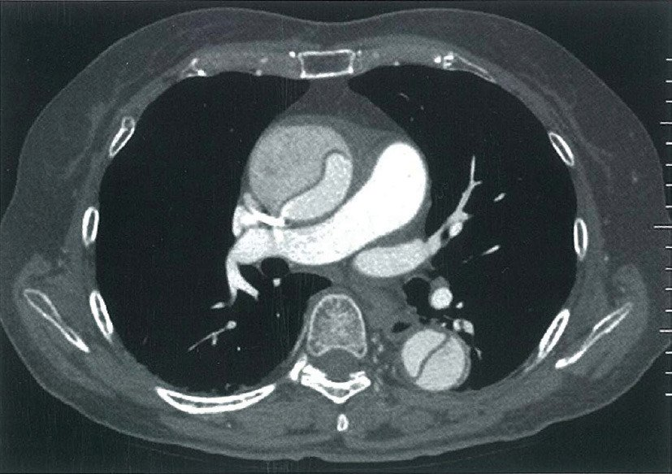
ａ 多 毛
ｂ 亀 背
ｃ ばち指
ｄ 眼球突出
ｅ クモ状指趾
✅
ｅ クモ状指趾
若年の大動脈解離+高身長やせ型+気胸の既往+家族歴（母親が38歳時に突然死）→Marfan症候群→クモ状指趾。
🧬 Marfan症候群——fibrillin-1の異常が全身の結合組織を弱くする
Marfan症候群は15番染色体上のFBN1遺伝子の変異により、微小線維の主成分である fibrillin-1 が異常となる常染色体顕性遺伝疾患である（約1/3は新生突然変異）——fibrillin-1は弾性線維の足場であると同時にTGF-βを繋ぎとめておく役割をもつ。これが壊れると弾性線維が脆くなるうえ、TGF-βシグナルが過剰になって中膜が変性する。三主徴（骨格・眼・心血管）——
① 骨格：高身長・やせ型・クモ状指趾・脊柱側彎・漏斗胸/鳩胸・関節過可動性・高口蓋・扁平足・下節/上節比の増大・指極（両手を広げた長さ）が身長を超える。
② 眼：水晶体亜脱臼（多くは上方）が最も特異的。強度近視・網膜剝離・緑内障・白内障。⚠️ ホモシスチン尿症では水晶体が下方へ偏位するので方向で鑑別する。
③ 心血管（予後を決める）：大動脈基部（Valsalva洞）の拡張 → 大動脈弁閉鎖不全 → 大動脈解離・破裂。加えて僧帽弁逸脱症・僧帽弁閉鎖不全。未治療のMarfan患者の死因の大半が大動脈解離・破裂であり、本例のように20〜30歳代で発症する。
その他の合併——自然気胸（肺尖部ブラ）、硬膜拡張〈dural ectasia〉、皮膚線条。本例の「18歳時に気胸」はこの一つである。
診断は改訂Ghent基準——大動脈基部拡張／解離と水晶体亜脱臼が2大所見で、この2つが揃えば診断確定。片方のみの場合は全身スコア（systemic score）やFBN1変異、家族歴で補う。
管理——β遮断薬やアンジオテンシンⅡ受容体拮抗薬で大動脈基部の拡張を抑え、定期的な心エコー・CTで基部径を追う。径が5cm前後（家族歴があればより早期）で予防的な大動脈基部置換術（David手術・Bentall手術）を行う。激しい運動・等尺性運動は禁止し、妊娠は大動脈解離のリスクを高めるため慎重な管理が要る。
□ 選択肢の検討
| 選択肢 | 解説 |
|---|---|
| ａ 多 毛 | 合わない。多毛〈hypertrichosis・hirsutism〉はアンドロゲン過剰（多囊胞性卵巣症候群・副腎皮質過形成・アンドロゲン産生腫瘍）やCushing症候群、薬剤性（フェニトイン・シクロスポリン・ミノキシジル）で見られる所見である——本例は27歳男性で身長183cm・体重62kg（BMI 18.5）と高身長やせ型であり、内分泌疾患を示す所見はない。Cushing症候群であれば中心性肥満・満月様顔貌・水牛様脂肪沈着・皮膚線条を伴うが、本例の体型はむしろ正反対である。 |
| ｂ 亀 背 | 合わない。亀背〈円背・kyphosis〉は脊椎の後彎が強くなった状態で、骨粗鬆症による多発性椎体圧迫骨折（高齢女性に多い）や強直性脊椎炎・Scheuermann病で見られる——Marfan症候群の骨格所見として頻度が高いのは脊柱側彎症〈scoliosis〉であって、亀背ではない。Marfanの胸郭変形は漏斗胸・鳩胸が典型で、他にクモ状指趾・関節過可動性・扁平足・高口蓋・下節/上節比の増大・両手を広げた長さが身長を超えるといった所見をとる。 |
| ｃ ばち指 | 合わない。ばち指〈clubbing〉は指趾末節の膨隆と爪の彎曲で、慢性の低酸素血症・肺内シャントを反映する所見である——原因はチアノーゼ性先天性心疾患（Fallot四徴症など）・感染性心内膜炎・肺癌・気管支拡張症・間質性肺炎・肝硬変・炎症性腸疾患など。本例は18歳時に気胸の既往があるが、慢性低酸素をきたす疾患ではない。むしろ自然気胸はMarfan症候群に合併しやすい（肺尖部のブラ形成による）という点で、診断を支持する既往歴として読むべきである。 |
| ｄ 眼球突出 | 合わない。眼球突出はBasedow病（甲状腺眼症）の代表的な所見で、他に眼窩腫瘍・眼窩蜂窩織炎・海綿静脈洞血栓症などで生じる——Basedow病であれば頻脈・体重減少・発汗過多・手指振戦・甲状腺腫大を伴うはずだが、本例にその記載はない。Marfan症候群の眼病変で重要なのは水晶体亜脱臼（多くは上方への偏位）と強度近視・網膜剝離であって、眼球突出ではない。 |
| ◯ ｅ クモ状指趾 | これが正解。本例はMarfan症候群を背景とする急性大動脈解離である——診断の手がかりが4つ揃っている：① 27歳という若年で大動脈解離（動脈硬化では説明できない）／② 身長183cm・体重62kgのやせ型高身長（BMI 18.5）／③ 18歳時の気胸（肺尖部ブラの破裂＝Marfanに合併しやすい）／④ 母親が38歳時に突然死（常染色体顕性遺伝で大動脈解離の家族歴）。クモ状指趾〈arachnodactyly〉は手指が細く長いMarfanの代表的な骨格所見で、母指徴候〈Steinberg sign：母指を握り込むと爪床が手掌尺側縁を越える〉と手首徴候〈Walker-Murdoch sign：反対の手で手首を握ると母指と第5指が重なる〉で確認する。なお頸静脈の怒張は心タンポナーデの合併を示唆し、Stanford A型解離であることを裏づける（次問の緊急手術につながる）。 |
📏 高身長やせ型＋大動脈疾患——遺伝性結合組織疾患の鑑別
| 疾患 | 責任分子 | 大動脈 | 特徴的な所見 |
|---|---|---|---|
| Marfan症候群 | fibrillin-1（FBN1） | 基部拡張→AR・解離 | 水晶体亜脱臼（上方）・クモ状指趾・側彎・気胸・高口蓋 |
| Loeys-Dietz症候群 | TGF-β受容体（TGFBR1/2） | より若年・小径でも解離 | 両眼隔離・口蓋垂裂・動脈の蛇行・全身の動脈瘤 |
| 血管型Ehlers-Danlos症候群（Ⅳ型） | Ⅲ型コラーゲン（COL3A1） | 中型動脈の破裂 | 皮膚の菲薄化・易出血・消化管穿孔・子宮破裂 |
| ホモシスチン尿症 | シスタチオニンβ合成酵素 | 動静脈血栓症（解離は少ない） | 水晶体亜脱臼（下方）・知的障害・骨粗鬆症・血栓症 |
| 大動脈二尖弁 | — | 上行大動脈の拡張・解離 | 収縮期駆出性雑音・AS/AR・大動脈縮窄の合併 |
本例で「若年の大動脈解離」を見たときの思考の順序——① 遺伝性結合組織疾患（Marfan・Loeys-Dietz・血管型EDS）／② 大動脈二尖弁／③ 大動脈炎症候群（高安動脈炎）／④ 妊娠（第3三半期〜産褥期）／⑤ コカイン・覚醒剤などの薬物使用／⑥ 外傷。高齢者では高血圧・動脈硬化が圧倒的多数だが、若年例では必ず基礎疾患を探す。
本例の「家族歴：母親が38歳時に突然死」は決定的な情報である——Marfan症候群は常染色体顕性遺伝なので親から50%の確率で受け継ぐ。若年・突然死の家族歴は遺伝性大動脈疾患を強く示唆し、患者本人だけでなく血縁者のスクリーニングにもつながる。
身体所見の取り方——Steinberg（母指）徴候：母指を手掌に握り込ませたとき爪床が手掌の尺側縁を越える／Walker-Murdoch（手首）徴候：反対の手で手首を握ったとき母指と第5指が重なる。いずれもベッドサイドで数秒でできるので、若年の大動脈疾患を見たら必ず確認する。
⚠️ 本例には頸静脈の怒張がある——若年・やせ型の患者で頸静脈が怒張していれば心タンポナーデを疑う。これは上行大動脈が心膜腔へ穿破した＝Stanford A型を示唆し、緊急手術の判断に直結する。
🎯 国試ポイント
① 若年（20〜30歳代）の大動脈解離＋高身長やせ型＝Marfan症候群。手指の所見はクモ状指趾。② FBN1（fibrillin-1）の変異・常染色体顕性遺伝（約1/3は新生突然変異）。TGF-βシグナルの過剰が中膜変性を招く。
③ 三主徴＝骨格（高身長・クモ状指趾・側彎・漏斗胸）／眼（水晶体亜脱臼＝上方）／心血管（大動脈基部拡張・AR・解離・僧帽弁逸脱）。
④ ホモシスチン尿症は水晶体が下方へ偏位——方向で鑑別する。
⑤ 自然気胸はMarfanに合併しやすい（肺尖部ブラ）。本例の「18歳時に気胸」は診断を支持する既往歴。
⑥ Steinberg（母指）徴候・Walker-Murdoch（手首）徴候でクモ状指趾を確認する。
⑦ 管理はβ遮断薬・ARB＋定期的な画像フォロー、径5cm前後で予防的基部置換（David・Bentall）。激しい運動は禁止、妊娠は高リスク。
Q.503(105H-36)必修臨床99%
次の文を読み、502 と503 の問いに答えよ。
27 歳の男性。突然の胸背部痛のため搬入された。
現病歴：車の運転中、激烈な胸痛を突然自覚し、その後、背部にも痛みを伴うようになった。症状が改善しなかったため直ちに救急車を要請した。
既往歴：18 歳時に気胸。
家族歴：母親が38 歳時に突然死。
現 症：意識は清明。身長183cm、体重62kg。呼吸数20/ 分。脈拍96/ 分、整。血圧102/60mmHg。頸静脈の怒張を認める。心音と呼吸音とに異常を認めない。腹部は平坦、軟で、肝・脾を触知せず、拍動性腫瘤を触知しない。
検査所見：血液所見：赤血球490 万、Hb 14.2g/dl、Ht 40％、白血球9,900、血小板22 万。血液生化学所見：血糖96mg/dl、総蛋白7.4g/dl、アルブミン3.8g/dl、尿素窒素14mg/dl、クレアチニン0.8mg/dl、総ビリルビン1.0mg/dl、AST 24IU/l、ALT 17IU/l。心電図で異常を認めない。内頸静脈から中心静脈カテーテルを挿入した後に撮影した胸部造影CT を示す。
適切な治療はどれか。
27 歳の男性。突然の胸背部痛のため搬入された。
現病歴：車の運転中、激烈な胸痛を突然自覚し、その後、背部にも痛みを伴うようになった。症状が改善しなかったため直ちに救急車を要請した。
既往歴：18 歳時に気胸。
家族歴：母親が38 歳時に突然死。
現 症：意識は清明。身長183cm、体重62kg。呼吸数20/ 分。脈拍96/ 分、整。血圧102/60mmHg。頸静脈の怒張を認める。心音と呼吸音とに異常を認めない。腹部は平坦、軟で、肝・脾を触知せず、拍動性腫瘤を触知しない。
検査所見：血液所見：赤血球490 万、Hb 14.2g/dl、Ht 40％、白血球9,900、血小板22 万。血液生化学所見：血糖96mg/dl、総蛋白7.4g/dl、アルブミン3.8g/dl、尿素窒素14mg/dl、クレアチニン0.8mg/dl、総ビリルビン1.0mg/dl、AST 24IU/l、ALT 17IU/l。心電図で異常を認めない。内頸静脈から中心静脈カテーテルを挿入した後に撮影した胸部造影CT を示す。
適切な治療はどれか。
ａ 昇圧薬
ｂ 緊急手術
ｃ 血栓溶解療法
ｄ 副腎皮質ステロイドパルス療法
ｅ 大動脈内バルーンパンピング〈IABP〉
✅
ｂ 緊急手術
マルファン症候群による大動脈解離（Stanford A型相当）→緊急手術（大動脈弁置換+人工血管置換術）。
🏥 Marfan症候群のA型解離——「基部ごと直す」手術になる
Stanford A型急性大動脈解離は診断がついた瞬間に緊急手術——これは循環器領域で最も明快な原則の一つである——理由はA型の死因（心タンポナーデ・急性大動脈弁閉鎖不全・冠動脈閉塞・破裂）がすべて上行大動脈の破綻に由来し、上行大動脈を人工血管に置き換えることでしか解決しないからである。Marfan症候群の場合はさらに事情が重い——大動脈基部（Valsalva洞）そのものが結合組織の異常で拡張し、壁が脆くなっているので、上行大動脈だけを置換しても残った基部が後に再解離・再拡張する。そのため基部ごと置換する術式が選ばれる——
① Bentall手術＝弁付き人工血管（人工弁＋人工血管の一体型）で大動脈基部を置換し、左右の冠動脈を人工血管へ再吻合する。確実だが機械弁なら生涯の抗凝固療法が必要になる。
② David手術（自己弁温存基部置換）＝大動脈弁の弁尖が保たれていれば、自己弁を残して周囲の基部だけを人工血管へ置換する。抗凝固が不要で若年例に望ましいが、技術的難度が高い。
手術は人工心肺（体外循環）下で行い、弓部に及ぶ場合は超低体温循環停止＋選択的脳灌流で脳を保護する。
術後の管理——生涯にわたる厳格な降圧（β遮断薬やARBが軸）と定期的なCT・心エコーによる残存解離と遠位側の径のフォロー。Marfanでは残った下行・腹部大動脈も将来拡張しうるため、生涯の経過観察が要る。血縁者のスクリーニング（常染色体顕性遺伝なので50%）も忘れてはならない。
□ 選択肢の検討
| 選択肢 | 解説 |
|---|---|
| ａ 昇圧薬 | 禁忌に近い。大動脈解離の治療は「血圧と心拍数を下げて大動脈壁への剪断力を減らす」ことが原則であり、昇圧は正反対の方向である——血圧を上げれば偽腔がさらに広がり、解離が進展し、破裂に近づく。本例は血圧102/60mmHgとやや低めだが、これは頸静脈の怒張を伴っている＝心タンポナーデによる心拍出量の低下を示しており、昇圧薬で押し上げるべき低血圧ではない。この低血圧を治すのは薬ではなく手術である。 |
| ◯ ｂ 緊急手術 | これが正解。本例はMarfan症候群を背景としたStanford A型急性大動脈解離であり、緊急手術が絶対適応である——A型と判断する根拠は頸静脈の怒張（心タンポナーデ＝上行大動脈が心膜腔へ穿破している）と血圧102/60mmHgという相対的な低血圧で、胸部造影CTでも上行大動脈の解離が描出されている。A型を保存的に扱えば発症から1時間ごとに約1%ずつ死亡率が上がり、48時間で約50%に達する。診断がついた時点で手術室へ運ぶのが唯一の正解である。Marfan症候群では大動脈基部そのものが病的に脆く拡張しているため、術式は基部ごと置換する Bentall手術（弁付き人工血管＋冠動脈再建）か、弁尖が保たれていれば自己弁温存基部置換〈David手術〉が選ばれる。 |
| ｃ 血栓溶解療法 | 絶対禁忌。血栓溶解療法は大動脈解離では絶対禁忌である——偽腔内の血栓が溶ければ解離腔が急速に拡大し、破裂・心タンポナーデに直行する。この選択肢は「突然の胸背部痛」を急性心筋梗塞や肺血栓塞栓症と読み違えて線溶療法を行うという、実臨床で最も恐れられている事故を選択肢の形にしたものである。本例は心電図で異常を認めないと明記されており、急性心筋梗塞を示す所見がない。抗凝固薬・抗血小板薬も同じ理由で避ける。 |
| ｄ 副腎皮質ステロイドパルス療法 | 適応がない。副腎皮質ステロイドパルス療法は血管炎（高安動脈炎・巨細胞性動脈炎）・急速進行性糸球体腎炎・重症の自己免疫疾患などに用いる治療である——本例は27歳で突然発症した機械的な血管の破綻であり、炎症性の疾患ではない。白血球9,900と正常範囲で、炎症を示す所見もない。仮に高安動脈炎であっても解離を合併していればまず外科的治療であり、ステロイドで解離が治ることはない。むしろステロイドは組織の脆弱化と創傷治癒の遅延を招く。 |
| ｅ 大動脈内バルーンパンピング〈IABP〉 | 禁忌。大動脈内バルーンパンピング〈IABP〉は下行大動脈にバルーンを留置し、拡張期に膨らませて冠血流と拡張期圧を高める補助循環である——解離のある大動脈では① ガイドワイヤやバルーンが偽腔へ迷入して解離を拡大させる／② 拡張期の圧上昇が偽腔を押し広げる／③ 大動脈弁閉鎖不全を合併している場合は逆流を増悪させる——大動脈解離とARはいずれもIABPの禁忌である。IABPの適応は心原性ショック・重症心不全・PCI周術期の補助であって、解離ではない。 |
🚫 解離で「やってはいけない治療」を機序ごと整理する
| 処置 | なぜ危険か | 本来の適応 |
|---|---|---|
| 昇圧薬 | 血圧上昇が偽腔を広げ解離を進展・破裂させる | 敗血症性ショック・血液分布異常性ショック |
| 血栓溶解薬（t-PA・ウロキナーゼ） | 偽腔内血栓が溶けて解離腔が急拡大 | 急性心筋梗塞・急性期脳梗塞・広範型肺塞栓 |
| 抗凝固薬・抗血小板薬 | 出血・偽腔の拡大を助長 | ACS・心房細動・静脈血栓塞栓症 |
| IABP | 偽腔への迷入・拡張期圧上昇・ARの増悪 | 心原性ショック・重症心不全 |
| 心囊穿刺（A型のタンポナーデ） | 圧迫止血が解除され再出血が加速 | 悪性腫瘍・尿毒症・特発性の心囊液貯留 |
| 解離した大動脈へのカテーテル操作 | 偽腔迷入・解離の拡大 | 冠動脈造影・PCI |
| 急性期の運動負荷・リハビリテーション | 血圧・心拍数の上昇で解離が進展 | 安定期の心疾患 |
本例で頸静脈の怒張が意味すること——若年でやせ型の患者の頸静脈が怒張していれば右心系への還流が妨げられていることを示す。大動脈解離の文脈では心タンポナーデが第一に挙がり、血圧102/60mmHgという相対的低血圧と合わせてBeckの三徴の2つが揃っている。上行大動脈の近位部は心膜に包まれているため、A型解離が破裂すると血液が直接心膜腔へ流れ込む——頸静脈怒張はA型を強く示唆する所見である。
⚠️ ここで心囊穿刺をしてはいけないのは重要な知識である——心膜腔内の圧が出血を抑えている（タンポナーデによる圧迫止血）ので、穿刺で圧を抜くと出血が再び加速して致命的になる。手術室で開胸しながら解除するのが正しい。
手術までの間に行うこと——十分な鎮痛／β遮断薬で心拍数60/分前後へ／収縮期血圧100〜120mmHgへ／輸血の準備／心エコーでタンポナーデとARの確認／直ちに心臓血管外科へ連絡。ただしこれらはすべて手術室へ運ぶまでの時間を稼ぐ処置であって、手術の代替にはならない。
🎯 国試ポイント
① Stanford A型急性大動脈解離＝緊急手術が絶対適応。未治療では1時間ごとに約1%ずつ死亡率が上がる。② Marfan症候群では大動脈基部そのものが脆いため、基部ごと置換する Bentall手術か自己弁温存の David手術を行う。
③ 解離の治療原則は降圧と心拍数コントロール——昇圧薬は正反対で危険。
④ 解離で禁忌＝血栓溶解薬・抗凝固薬・抗血小板薬・IABP・心囊穿刺・カテーテル操作。
⑤ 頸静脈怒張＋低血圧＋心音減弱＝Beckの三徴＝心タンポナーデ。A型解離では穿刺せず直ちに手術（圧迫止血が解除される）。
⑥ IABPは大動脈解離と大動脈弁閉鎖不全が禁忌——偽腔迷入・拡張期圧上昇・逆流の増悪。
⑦ Marfanの術後は生涯の降圧と定期画像フォロー、血縁者のスクリーニング（常染色体顕性遺伝で50%）。
Q.504(105I-59)臨床📷 画像46%
79 歳の男性。急激に生じた胸痛と嘔吐とのため搬入された。救急隊接触時の血圧は80/56mmHg であった。高血圧症で治療中である。来院時、胸痛は軽快しており、意識は清明。脈拍72/ 分、整。血圧184/96mmHg。頸静脈の怒張はなく、全身状態は安定している。血液生化学所見と心電図とに明らかな異常を認めない。胸部造影CT（A，B）を示す。
まず行うべき治療はどれか。
まず行うべき治療はどれか。
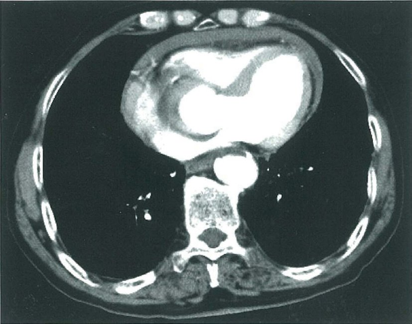
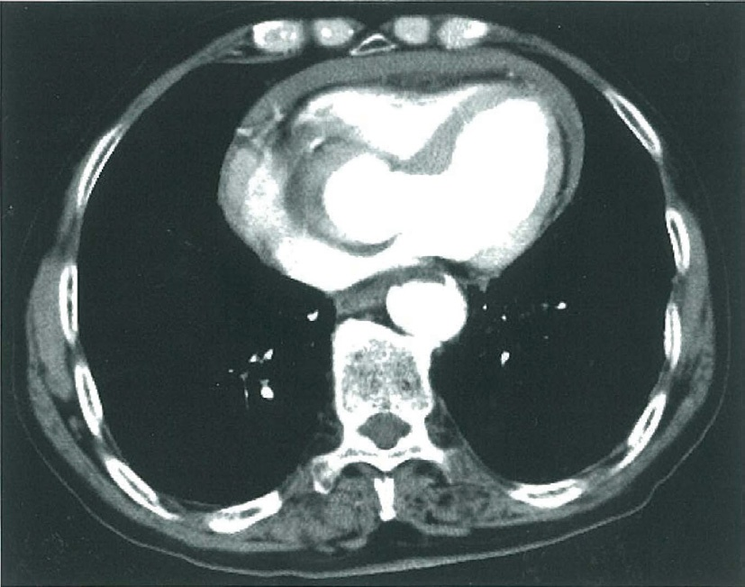
ａ 降圧療法
ｂ 緊急手術
ｃ 冠動脈形成術
ｄ 抗血小板薬投与
ｅ 心囊ドレナージ
✅
ａ 降圧療法
Stanford B型（下行大動脈）・安定・合併症なし→まず降圧療法（目標：収縮期圧<120mmHg）。
🎢 「一過性の低血圧」に惑わされない——本問が正答率46%の理由
本問の正答率が46%と低いのは、「救急隊接触時の血圧は80/56mmHgであった」という一文がミスリードとして効いているからである——この低血圧を見た瞬間に心タンポナーデ・破裂・出血性ショックを連想し、緊急手術や心囊ドレナージを選びたくなる。しかし「来院時」の記載を丁寧に読むと、その解釈はすべて否定される——① 胸痛は軽快し意識は清明／② 脈拍72/分、整（ショックなら頻脈になる）／③ 血圧184/96mmHg（低血圧ではなくむしろ高血圧）／④ 頸静脈の怒張はない（＝タンポナーデを否定）／⑤ 全身状態は安定／⑥ 血液生化学所見と心電図に異常なし。
では救急隊接触時の低血圧は何だったのか——激烈な疼痛による血管迷走神経反射、あるいは解離発症直後の一過性の血行動態変動と解釈するのが妥当である。持続するショックではなかったことは、その後の経過（自然に184/96mmHgへ戻り、全身状態が安定している）が証明している。
⚠️ 臨床で優先すべきは「今の患者の状態」である——過去の一時点の数値ではなく、目の前の血行動態と身体所見で判断する。本例では頸静脈怒張の有無が、タンポナーデを否定する決定的な所見になっている。
むしろ本例で問題なのは血圧184/96mmHgという高値である——この圧が大動脈壁を裂き続けているのだから、「まず行うべき治療」は降圧という結論に一直線に到達する。選択肢を眺める前に「この患者にとって今いちばん危険なものは何か」を考えると、答えは自然に出る。
□ 選択肢の検討
| 選択肢 | 解説 |
|---|---|
| ◯ ａ 降圧療法 | これが正解。胸部造影CT（A・B）は下行大動脈に限局した解離＝Stanford B型を示している——臨床所見もこれを裏づける：来院時の意識は清明／頸静脈の怒張はなく（＝心タンポナーデがない）／血液生化学所見と心電図に異常なし（＝冠動脈は巻き込まれていない）／全身状態は安定している。合併症のないB型解離の第一選択は降圧療法（保存的治療）であり、本例は血圧184/96mmHgと高値のまま放置されているので、まず降圧を開始するのが「まず行うべき治療」になる。目標は収縮期血圧100〜120mmHg・心拍数60/分前後で、β遮断薬を先に、血管拡張薬を後に加える。十分な鎮痛も治療の一部である（痛みが交感神経を刺激して血圧を押し上げるため）。 |
| ｂ 緊急手術 | 現時点では適応がない。緊急手術はStanford A型なら絶対適応だが、本例はB型で、しかも合併症がない——合併症のないB型を急性期に開胸手術すると、保存療法（急性期死亡率10%前後）より成績が悪くなるため、「手術のほうが危ないから降圧する」のが基本方針である。ただし破裂・切迫破裂／臓器灌流障害（腸管・腎・下肢・脊髄）／制御できない疼痛／制御できない高血圧／偽腔の急速な拡大が現れれば、TEVAR（胸部ステントグラフト内挿術）へ切り替える。本例はまだその段階ではない。 |
| ｃ 冠動脈形成術 | 適応がない。冠動脈形成術〈PCI〉は急性冠症候群の治療だが、本例は心電図に明らかな異常を認めず、血液生化学所見も正常で、心筋虚血を示す所見がない——⚠️ さらに重要なのは、解離のある大動脈にガイディングカテーテルを通せば偽腔へ迷入して解離を拡大させることと、PCIに伴う抗血小板薬・抗凝固薬が解離では禁忌であることである。「急激に生じた胸痛」という主訴だけを見てPCIへ走るのが、解離診療で最も危険な誤りである。 |
| ｄ 抗血小板薬投与 | 禁忌。抗血小板薬は大動脈解離では避けるべき薬剤である——偽腔内の血栓形成を妨げ、出血と偽腔の拡大を助長する。本例は心電図・血液生化学ともに正常で急性冠症候群を示す所見がなく、抗血小板薬を投与する根拠がそもそもない。抗凝固薬・血栓溶解薬も同じ理由で禁忌である。「血を固まらせない」治療は、裂けて出血している血管には正反対に働くと一括して覚える。 |
| ｅ 心囊ドレナージ | 適応がない。心囊ドレナージは心タンポナーデを解除する処置だが、本例には頸静脈の怒張がなく、全身状態も安定している——タンポナーデがあれば Beckの三徴（血圧低下・頸静脈怒張・心音減弱）と奇脈が出るはずで、本例はいずれも認めない。そもそもタンポナーデは上行大動脈が心膜腔へ穿破するA型に固有の合併症であり、下行大動脈の解離（B型）では起こらない。加えてA型解離のタンポナーデでは心囊穿刺そのものが禁忌に近い（圧迫止血が解除される）ことも押さえておく。 |
💊 Stanford B型の降圧療法——薬の順序に理屈がある
| 段階 | 行うこと | 理由 |
|---|---|---|
| ① 集中治療室で安静・モニタリング | 動脈圧ライン・心電図・尿量 | 血圧の変動と臓器灌流障害の出現を逃さない |
| ② 十分な鎮痛 | 麻薬性鎮痛薬をためらわない | 痛みが交感神経を刺激して血圧・心拍数を上げるため、鎮痛は降圧の一部 |
| ③ β遮断薬をまず | ランジオロール・エスモロールなど静注 心拍数60/分前後へ | dP/dt（壁への剪断力）は心収縮力と心拍数に比例する |
| ④ 血管拡張薬を後から | ニカルジピンなど 収縮期100〜120mmHgへ | ⚠️ 単独で先に使うと反射性頻脈でdP/dtが増え、かえって解離が進む |
| ⑤ 毎日の合併症チェック | 腹痛・血便／尿量・Cr／四肢の脈拍／下肢の運動／痛みの再燃／Hbと画像 | 保存療法から介入（TEVAR）へ切り替えるサイン |
β遮断薬が先である理由をもう一度——血管拡張薬で末梢抵抗を下げると、圧受容器反射で交感神経が興奮し心拍数と心収縮力が上がる。血圧の数字は下がってもdP/dtはむしろ増えるので、解離が進む。β遮断薬で心拍数を抑えてから血管拡張薬を足すという順序は、この生理から必然的に導かれる。
慢性期の管理——生涯にわたる厳格な降圧（β遮断薬が軸）と定期的なCTでの径のフォロー。偽腔が開存したまま拡大すれば慢性解離性大動脈瘤となり、径5.5〜6cmで手術（TEVARまたは人工血管置換）の適応となる。
近年の動向——TEVARは低侵襲であるため、偽腔が開存している例・若年例・拡大リスクの高い例では、急性期〜亜急性期に予防的にTEVARを行う方向へ動いている。ただし国試での原則は「合併症のないB型＝降圧療法」である。
🎯 国試ポイント
① 合併症のないStanford B型＝降圧療法（保存的治療）が第一選択。A型の緊急手術と正反対。② 過去の一時点の低血圧ではなく「今の状態」で判断する——本例は来院時血圧184/96mmHg・頸静脈怒張なし・全身状態安定。
③ 頸静脈怒張の有無が心タンポナーデを分ける。タンポナーデは上行大動脈が心膜腔へ穿破するA型に固有で、B型では起こらない。
④ 降圧の目標は収縮期100〜120mmHg・心拍数60/分。β遮断薬が先、血管拡張薬は後（単独先行は反射性頻脈でdP/dtを増やす）。
⑤ 鎮痛も降圧の一部——痛みが交感神経を刺激して血圧を上げる。
⑥ B型でTEVARへ切り替えるのは、破裂・切迫破裂／臓器灌流障害／難治性疼痛／難治性高血圧／偽腔の急速拡大。
⑦ 解離では抗血小板薬・抗凝固薬・血栓溶解薬・PCIがすべて危険。心電図正常なら急性冠症候群を疑う根拠もない。
Q.505(104D-27)臨床📷 画像89%
64 歳の男性。胸部違和感を主訴に来院した。以前から高血圧を指摘されていたが放置していた。血圧220/110mmHg。胸部エックス線写真を示す。
合併する病態として考えにくいのはどれか。
合併する病態として考えにくいのはどれか。

ａ 嗄 声
ｂ 喀 血
ｃ 突然死
ｄ 嚥下困難
ｅ 口角下垂
✅
ｅ 口角下垂
胸部大動脈瘤（高血圧+胸部X線異常）の合併症：嗄声・喀血・突然死・嚥下困難はあり得るが、口角下垂（顔面神経麻痺）は関係ない。
🗜 胸部大動脈瘤の症状は「隣に何があるか」で決まる
胸部大動脈瘤はふだんは無症候で、健診の胸部エックス線写真で縦隔の拡大や大動脈陰影の突出として偶然見つかることが多い——症状が出るときは① 周囲の構造を圧迫するか② 破裂・穿破するかのどちらかであり、どちらも「縦隔内で大動脈の隣に何があるか」を思い出せば全部導ける。圧迫症状の一覧（隣接構造ごと）——
左反回神経（大動脈弓を下から回る）→ 嗄声（Ortner症候群）・誤嚥／
食道（弓部・下行大動脈に隣接）→ 嚥下困難〈dysphagia aortica〉／
気管・左主気管支 → 咳嗽・呼吸困難・喘鳴・無気肺／
上大静脈 → 上大静脈症候群（顔面・上肢の浮腫、頸静脈怒張、前胸壁の側副血行）／
脊椎・肋骨 → 背部痛・椎体のびらん（瘤が骨を削る）／
横隔神経 → 横隔膜挙上。
穿破・破裂——気管・気管支へ＝大動脈気管支瘻→喀血／食道へ＝大動脈食道瘻→吐血／縦隔・胸腔へ＝出血性ショック・突然死／心膜腔へ（上行）＝心タンポナーデ。
⚠️ 「症状が出た胸部大動脈瘤」は切迫破裂の可能性がある——とくに新たに出現した背部痛や、少量の喀血・吐血は前駆症状〈herald bleeding〉のことがあり、緊急の対応を要する。
本例の背景——64歳男性・高血圧を指摘されながら放置・血圧220/110mmHg。高血圧は胸部大動脈瘤の最大の危険因子であり、内圧が高いほど壁張力が増して破裂しやすくなる。
□ 選択肢の検討
| 選択肢 | 解説 |
|---|---|
| ａ 嗄 声 | 起こりうる。嗄声は胸部大動脈瘤の代表的な圧迫症状である——左反回神経は迷走神経から分かれたあと、大動脈弓を下から回り込んで喉頭へ戻るという走行をとるため、大動脈弓部の瘤に圧迫されて左声帯麻痺＝嗄声を生じる。この「心血管疾患による嗄声」をOrtner症候群（心血管性嗄声）と呼び、胸部大動脈瘤のほか、左房拡大（僧帽弁狭窄症）・肺高血圧症でも生じる。⚠️ 右反回神経は右鎖骨下動脈を回るため頸部で完結し、胸部大動脈瘤では侵されない——嗄声が「左だけ」なのはこの解剖による。 |
| ｂ 喀 血 | 起こりうる。胸部大動脈瘤が気管・気管支へ穿破すれば喀血となる——大動脈と気管・左主気管支は縦隔内で近接しているため、瘤が拡大して圧迫・びらんを起こし、大動脈気管支瘻を形成する。典型的には少量の前駆的喀血〈herald bleeding〉に続いて大量喀血で致命的となる。少量の喀血であっても大動脈瘤がある患者では緊急事態として扱う。瘤が食道へ穿破すれば大動脈食道瘻による大量吐血となり、同様に致命的である。 |
| ｃ 突然死 | 起こりうる。破裂による突然死は胸部大動脈瘤の最も重大な転帰である——瘤はLaplaceの法則（壁張力は内圧と半径の積に比例）により大きくなるほど壁張力が増して破れやすくなるという正のフィードバックをもつ。本例は血圧220/110mmHgという著明な高血圧が放置されており、内圧が高いぶん壁張力もさらに増している。破裂すれば縦隔・胸腔・心膜腔へ大量出血し、多くはその場で死亡する。 |
| ｄ 嚥下困難 | 起こりうる。胸部大動脈瘤が食道を圧迫すれば嚥下困難を生じる——これをdysphagia aortica（大動脈性嚥下困難）と呼ぶ——食道は縦隔内で大動脈弓と下行大動脈のすぐ隣を走るため、瘤が拡大すれば機械的に押される。同じ機序で気管・主気管支の圧迫（咳嗽・呼吸困難・喘鳴）、上大静脈の圧迫（上大静脈症候群：顔面浮腫・頸静脈怒張・上肢の浮腫）、脊椎の圧迫（背部痛・椎体のびらん）も起こる。 |
| ◯ ｅ 口角下垂 | これが「考えにくい」＝正解。口角下垂は顔面神経（Ⅶ）麻痺の所見で、末梢性（Bell麻痺・Ramsay Hunt症候群・耳下腺腫瘍）か中枢性（脳血管障害・脳腫瘍）によって生じる——顔面神経は頭蓋内・側頭骨内・耳下腺を走行し、縦隔をまったく通らない。したがって胸部大動脈瘤がどれほど大きくなっても顔面神経を圧迫することはない。他の4つ（嗄声・喀血・突然死・嚥下困難）がいずれも縦隔内の構造との位置関係で説明できるのに対し、口角下垂だけが解剖学的に無関係である。⚠️ ただし大動脈解離が頸動脈へ及んで脳梗塞を起こせば中枢性の顔面神経麻痺は起こりうる——本問は「大動脈瘤の合併する病態」を問うており、その場合とは区別する。 |
🗣 嗄声の鑑別——「声がかすれる」から縦隔を疑えるようになる
| 原因 | 機序 | 随伴所見・手がかり |
|---|---|---|
| 胸部大動脈瘤 | 左反回神経の圧迫（Ortner症候群） | 高血圧・胸部エックス線での縦隔拡大・背部痛 |
| 肺癌（左肺門・縦隔） | 左反回神経浸潤 | 喫煙歴・体重減少・胸部異常影 |
| 左房拡大（僧帽弁狭窄症）・肺高血圧 | 左反回神経の圧迫（Ortner症候群） | 拡張期ランブル・心房細動・肺うっ血 |
| 甲状腺癌・甲状腺手術後 | 反回神経が頸部で浸潤・損傷される | 頸部腫瘤・手術歴 |
| 食道癌 | 反回神経・リンパ節転移による浸潤 | 嚥下困難・体重減少 |
| 喉頭炎・声帯ポリープ・声帯結節 | 声帯そのものの病変 | 感冒・音声酷使・急性の経過 |
| 喉頭癌 | 声帯の腫瘍 | 喫煙・持続する嗄声・喉頭鏡で確認 |
左右で走行が違うことが決定的である——右反回神経は右鎖骨下動脈を回って上行する（頸部で完結）のに対し、左反回神経は大動脈弓を下から回り込む（縦隔を通る）。したがって左声帯麻痺では縦隔の病変（大動脈瘤・肺癌・左房拡大）を必ず考えるのに対し、右声帯麻痺は頸部の病変（甲状腺・頸部手術）が中心になる。
胸部大動脈瘤の治療——径5.5〜6cm以上（Marfan症候群など結合組織疾患では5cm前後）、半年で0.5cm以上の急速拡大、症候性（本例のように圧迫症状が出た場合）で手術適応となる。術式は人工血管置換術とステントグラフト内挿術〈TEVAR〉で、弓部に及ぶ場合は分枝の再建（弓部全置換）が必要になるため難度が上がる。
⚠️ 本例でまず行うべきことは厳格な降圧である——血圧220/110mmHgのまま放置すれば、いつ破裂してもおかしくない。手術の準備と並行してβ遮断薬を軸に降圧を開始する。
🎯 国試ポイント
① 顔面神経は縦隔を通らない——口角下垂は胸部大動脈瘤では説明できない。本問の核心。② 左反回神経は大動脈弓を下から回るので胸部大動脈瘤で嗄声（Ortner症候群）。右反回神経は右鎖骨下動脈を回り頸部で完結する。
③ Ortner症候群は大動脈瘤のほか、左房拡大（僧帽弁狭窄症）・肺高血圧でも起こる。
④ 圧迫症状は隣接構造で決まる——食道（嚥下困難）・気管（咳嗽・喘鳴）・上大静脈（上大静脈症候群）・脊椎（背部痛）。
⑤ 穿破すれば気管支へ＝喀血（大動脈気管支瘻）／食道へ＝吐血（大動脈食道瘻）。少量の前駆的出血に続いて致死的大量出血となる。
⑥ 症候性の胸部大動脈瘤は切迫破裂の可能性——手術適応。無症候でも5.5〜6cm以上・急速拡大で適応。
⑦ 嗄声を見たらまず喉頭内視鏡。左声帯麻痺なら縦隔（大動脈弓の高さ）まで胸部CTで検索する。
Q.506(104F-20)必修臨床📷 画像56%
76 歳の女性。一過性意識障害と四肢冷感とを主訴に来院した。2 日前に前頸部に突然痛みが出現し、その後胸痛が加わったため早めに就寝した。背部痛で一時覚醒したが、翌朝には胸痛と背部痛とは軽減していた。かかりつけの診療所を受診し、高血圧に対してβ遮断薬を処方された。本日の午前3 時ころ排尿後に約5 分間意識消失した。意識回復後、四肢冷感と倦怠感とが持続したため、午前10 時独歩で受診した。52 歳時に高血圧症、74 歳時に糖尿病を指摘されている。意識は清明。体温35.8℃。脈拍72/ 分、整。血圧104/80mmHg。経皮的動脈血酸素飽和度〈SpO2〉96％。胸部と腹部とに異常を認めない。神経学的所見に異常を認めない。血液所見：赤血球418 万、Hb 12.7g/dl、Ht 40％、白血球9,300、血小板13 万。血液生化学所見：血糖229mg/dl、尿素窒素23mg/dl、クレアチニン1.0mg/dl、AST 98IU/l、ALT 50IU/l、LD 526IU/l（基準176 ～353）、ALP 189IU/l（基準115 ～359）、CK 215IU/l（基準30 ～140）、CK-MB 15IU/l（基準20 以下）、Na 135mEq/l、K 4.8mEq/l、Cl 100mEq/l。CRP 2.1mg/dl。胸部エックス線写真（A）と12 誘導心電図（B）とを示す。
次に行うのはどれか。
次に行うのはどれか。
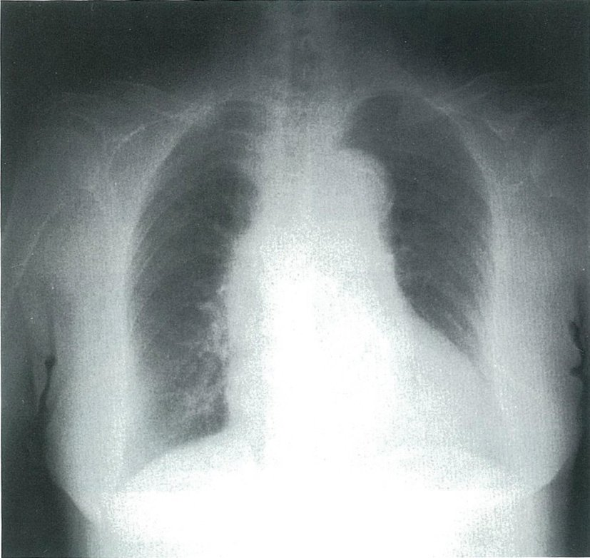
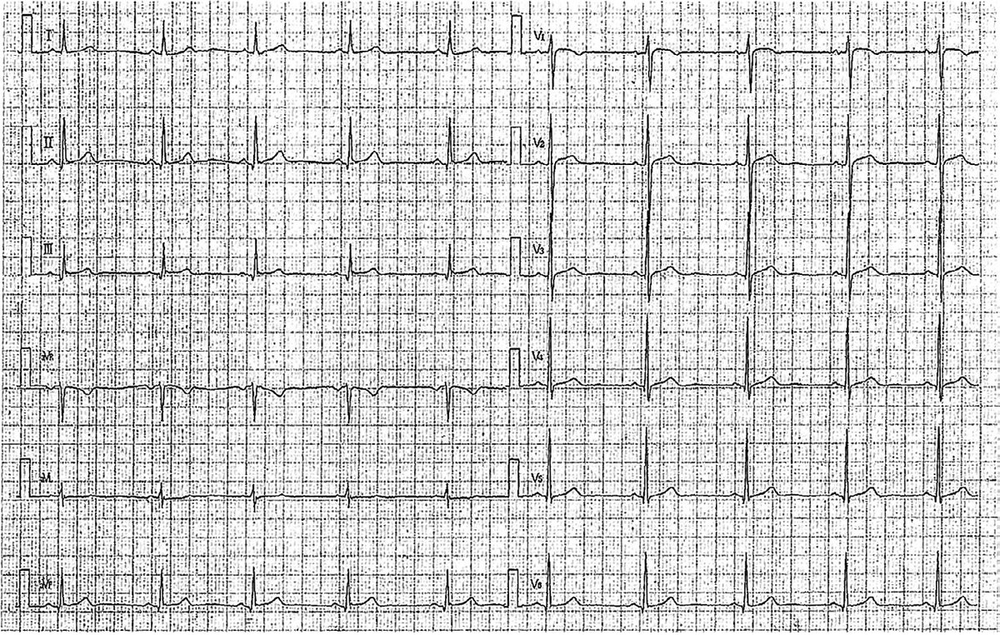
ａ 胸腹部造影CT
ｂ 経胸壁心エコー検査
ｃ 心臓カテーテル検査
ｄ 運動負荷心電図（ダブルマスター試験）
ｅ Shellong 試験（起立性低血圧誘発試験）
✅
ａ 胸腹部造影CT
前頸部から胸→背への移動する痛み+意識消失+低血圧→大動脈解離（亜急性期）→造影CTで確定。
🚶 「移動する痛み」と失神——亜急性期の解離を見逃さない
本問が正答率56%と難しいのは、発症から2日が経過して痛みが軽減しており、患者が「独歩で受診」しているという、一見すると緊急性の低い見た目をしているからである——しかし病歴を時系列で並べ直すと、解離以外では説明できない。本例の時系列——① 2日前：前頸部に突然の痛み（弓部の解離）／② その後：胸痛が加わる（上行〜弓部へ進展）／③ 就寝後：背部痛で覚醒（下行大動脈へ進展）／④ 翌朝：胸痛・背部痛は軽減（解離の進展が止まった＝治ったのではない）／⑤ 本日午前3時：排尿後に約5分間の意識消失／⑥ 意識回復後：四肢冷感と倦怠感が持続。
痛みが「前頸部→胸→背部」と移動している——これは大動脈解離に固有の所見である。解離という病変そのものが大動脈に沿って進展するため、痛みの部位が動く。心筋梗塞の痛みは移動しない。
⚠️ 「痛みが軽減した」ことを回復と読んではいけない——解離は進展が一時的に止まっただけで、破裂・タンポナーデ・臓器灌流障害のリスクは何も減っていない。実際、本例ではその後に意識消失と四肢冷感（末梢灌流の低下）が出現している。
血液所見の読み方——LD 526IU/L（基準176〜353）・AST 98IU/L・CRP 2.1mg/dLは組織傷害と炎症反応を示し、解離では早期から上がる。一方でCK-MB 15IU/L（基準20以下）は心筋壊死を否定し、急性心筋梗塞を遠ざける。血糖229mg/dLは糖尿病の悪化またはストレス反応で、糖尿病は痛覚を鈍らせ、受診の遅れにつながる（本例が2日間耐えてしまった一因である）。
□ 選択肢の検討
| 選択肢 | 解説 |
|---|---|
| ◯ ａ 胸腹部造影CT | これが正解。本例の病歴は大動脈解離の典型そのものである——① 2日前に前頸部に突然痛みが出現し、その後胸痛が加わり、さらに背部痛へ移動（移動する痛み＝解離が進展した動きそのもの）／② 排尿後に約5分間の意識消失（脳灌流低下・心タンポナーデ・迷走神経反射）／③ 四肢冷感と倦怠感の持続（末梢灌流の低下）／④ 52歳から高血圧、74歳から糖尿病（危険因子）。検査所見も裏づける——LD 526IU/L（基準176〜353）と高値、AST 98・ALT 50と上昇、CRP 2.1mg/dLは組織傷害と炎症反応を示す一方、CK-MB 15IU/L（基準20以下）で心筋壊死は否定的である。解離の確定診断は胸腹部造影CT——範囲（Stanford分類）と分枝の灌流障害を一度に評価でき、治療方針に直結する。 |
| ｂ 経胸壁心エコー検査 | 不十分。経胸壁心エコー〈TTE〉はベッドサイドで直ちに施行でき、心タンポナーデ・大動脈弁閉鎖不全・上行大動脈の拡張を評価できる有用な検査である——しかし経胸壁では弓部から下行大動脈が肺と気管に遮られて描出できず、腹部大動脈と分枝の評価もできない。本例は前頸部から背部まで痛みが移動しており、広い範囲の解離が疑われる。範囲を確定できない検査では治療方針が決まらない。なお血行動態が不安定で移動できない場合は経食道心エコー〈TEE〉が代替となるが、本例は独歩受診で安定しており造影CTを撮れる。 |
| ｃ 心臓カテーテル検査 | 危険。心臓カテーテル検査は冠動脈病変の評価に用いるが、本例はCK-MBが基準内で心筋梗塞を示す所見がない——⚠️ さらに重大な問題として、解離のある大動脈にカテーテルを進めれば偽腔へ迷入し、解離を拡大させる危険がある。また検査に伴う抗凝固・抗血小板療法も解離では禁忌である。非侵襲的な造影CTで診断できる病態に、わざわざ侵襲的検査を選ぶ理由がない。 |
| ｄ 運動負荷心電図（ダブルマスター試験） | 禁忌。運動負荷心電図（ダブルマスター試験）は階段昇降で心筋の酸素需要を増やし、虚血を誘発する検査である——大動脈解離が疑われる患者に負荷をかければ、血圧と心拍数の上昇によって解離が進展し、破裂に至りうる。運動負荷試験の禁忌には急性大動脈解離・重症大動脈弁狭窄症・不安定狭心症・急性心筋梗塞発症early期・非代償性心不全・急性心筋炎/心膜炎・コントロール不良の不整脈などが並ぶ。本例は一過性意識消失を起こした直後でもあり、負荷試験を行う状況ではない。 |
| ｅ Shellong 試験（起立性低血圧誘発試験） | 不適切。Shellong試験（起立試験）は臥位から立位への体位変換で血圧と脈拍を測り、起立性低血圧を評価する検査である——意識消失の原因として起立性低血圧を考えること自体は誤りではないが、本例の失神は「排尿後」に起きており、また移動する胸背部痛という致死的な病歴を伴っている。失神の診療は「命に関わる原因（心血管性）を先に除外する」のが鉄則である——大動脈解離を否定せずに起立試験を行えば、その最中に破裂しうる。起立性低血圧の評価は致死的な原因をすべて除外したあとに行う。 |
😵 失神の診療——「命に関わる原因」を先に除外する
| 分類 | 代表的な原因 | 手がかり |
|---|---|---|
| 心血管性（緊急） | 大動脈解離・肺塞栓・急性心筋梗塞・大動脈弁狭窄症・肥大型心筋症・不整脈（VT・完全房室ブロック）・心タンポナーデ | 労作時の失神・胸背部痛を伴う・突然死の家族歴・心疾患の既往・心電図異常 |
| 反射性（神経調節性） | 血管迷走神経性・状況失神（排尿・排便・咳嗽・嚥下）・頸動脈洞症候群 | 前駆症状（悪心・発汗・視野暗転）・誘因が明確・臥位で回復 |
| 起立性低血圧 | 脱水・出血・降圧薬・自律神経障害（糖尿病・Parkinson病） | 起立直後・Shellong試験で確認 |
| 非失神性（鑑別を要する） | てんかん・低血糖・過換気・心因性 | 痙攣・舌咬傷・postictal state・回復の遅さ |
大動脈解離で失神が起こる4つの経路——① 心タンポナーデによる心拍出量の急減／② 弓部分枝（腕頭・左総頸動脈）閉塞による脳虚血／③ 破裂による出血性ショック／④ 激烈な疼痛による血管迷走神経反射。失神はA型解離の初発症状の10%前後に見られ、失神＋胸背部痛は解離を強く示唆する組合せである。
本例で提示された胸部エックス線写真（A）と12誘導心電図（B）の役割——心電図は急性心筋梗塞を除外し（CK-MB基準内と合わせて）、胸部エックス線は縦隔拡大という解離の手がかりを与える。ただし縦隔拡大が出るのは6〜7割で、胸部エックス線が正常でも解離は否定できない。確定は造影CTである。
四肢冷感が意味すること——末梢血管が収縮して灌流が落ちている状態で、心拍出量の低下（タンポナーデ・心不全）や循環血液量減少（出血）を示唆する。血圧104/80mmHg（脈圧24mmHg）と脈圧が狭いことも同じ方向を指しており、本例が「安定して見えるが実は危うい」ことの根拠になる。
🎯 国試ポイント
① 「前頸部→胸→背部」と移動する痛みは大動脈解離に固有。病変そのものが進展するため。心筋梗塞の痛みは移動しない。② 痛みが軽減しても解離は治っていない。破裂・タンポナーデ・灌流障害のリスクは変わらない。
③ 失神の診療は心血管性（緊急）を先に除外する。Shellong試験・頸動脈洞マッサージなどの誘発試験は最後。
④ 失神＋胸背部痛は解離を強く示唆（タンポナーデ・脳虚血・破裂・迷走神経反射）。
⑤ 解離が疑われる患者に運動負荷試験は禁忌。血圧と心拍数の上昇で解離が進展する。
⑥ 解離ではLD・AST・CRP・白血球が上がるがCK-MBは正常——心筋壊死がないことが心筋梗塞との鑑別になる。
⑦ 経胸壁心エコーは弓部〜下行と腹部を描出できない。範囲の確定には胸腹部造影CT、移動困難なら経食道心エコー。
Q.507(103I-76)臨床📷 画像98%
58 歳の女性。突然の強い胸背部痛のため搬入された。8 年前から高血圧の治療を受けていたが、降圧薬を飲み忘れることが多かった。意識は清明。顔面は苦悶様で冷汗を認める。血圧は右上腕で170/110mmHg、左上腕で150/70mmHg。心音と呼吸音とに異常を認めない。胸部造影CT を示す。CT 室から帰室後、意識レベルの低下と血圧の低下（右上腕で70/52mmHg）とを認めた。
対応として適切なのはどれか。
対応として適切なのはどれか。
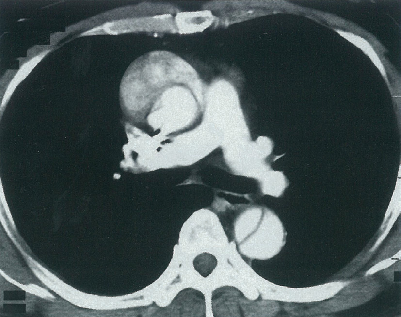
ａ 緊急手術
ｂ 胸腔ドレナージ
ｃ 心臓カテーテル検査
ｄ ICU 管理下での内科的治療
ｅ 大動脈内バルーンパンピング
✅
ａ 緊急手術
Stanford A型大動脈解離→CT後に状態悪化（心タンポナーデ・出血拡大）→緊急手術（待てない）。
🚑 A型解離の急変——「何が起きたか」を3秒で判断する
Stanford A型急性大動脈解離の患者が診断後に急に意識レベルと血圧を落としたとき、考えるべきことは限られている——① 心タンポナーデの進行（上行大動脈から心膜腔への出血が増えた）／② 大動脈の自由破裂（縦隔・胸腔への大量出血）／③ 冠動脈閉塞の進行（心原性ショック）／④ 弓部分枝閉塞による脳虚血。そのどれであっても、対応は同じ＝直ちに手術——原因を突き止めるための検査に時間を使うのではなく、手術室へ運びながら心エコーで確認するのが実際の動きになる。
本例の血圧の推移が示すもの——来院時：右上腕170/110mmHg（高血圧・左右差20mmHg）→ 帰室後：右上腕70/52mmHg。100mmHgもの急落は、心拍出量が急に落ちたか循環血液量が急に失われたことを意味する。意識レベルの低下は脳灌流が保てなくなった結果であり、ショックの進行を示す最も重要な所見の一つである。
⚠️ 心タンポナーデを疑ったときの対応が国試の頻出点——A型解離に伴うタンポナーデでは心囊穿刺を原則行わない。心膜腔内の圧が破裂部を押さえて出血を止めているので、穿刺で圧を抜くと出血が再燃・加速し、かえって死亡率が上がる。手術室で開胸し、人工心肺を確立してから解除するのが正しい手順である。
血圧の左右差の読み方——本例は右170/110・左150/70mmHgで左が低い。これは解離が左鎖骨下動脈の起始部に及んでいることを示唆する。左鎖骨下動脈は弓部の最も遠位の分枝なので、そこまで解離が及んでいるということは弓部全体が巻き込まれていると読める。手術は上行だけでなく弓部置換まで必要になる可能性が高い。
□ 選択肢の検討
| 選択肢 | 解説 |
|---|---|
| ◯ ａ 緊急手術 | これが正解。本例はStanford A型急性大動脈解離が、CT撮影後に急変した場面である——診断の根拠は突然の強い胸背部痛／右上腕170/110mmHg・左上腕150/70mmHgという20mmHgの血圧左右差／8年来の高血圧で内服が不規則／胸部造影CTでの解離の描出である。帰室後の「意識レベルの低下」と「血圧の急激な低下（右上腕70/52mmHg）」は、心タンポナーデの進行か大動脈の破裂を意味する——いずれもA型解離の致死的合併症で、外科的に上行大動脈を置換する以外に助ける方法がない。A型は未治療で1時間ごとに約1%ずつ死亡率が上がるため、急変した時点で直ちに手術室へ運ぶのが唯一の正解である。 |
| ｂ 胸腔ドレナージ | 適応がない。胸腔ドレナージは気胸・血胸・胸水に対する処置である——本例は心音と呼吸音とに異常を認めないと明記されており、胸腔内に大量の液体や空気が貯留していることを示す所見がない。仮に解離が胸腔へ穿破して血胸をきたしていたとしても、胸腔ドレナージで血液を抜くだけでは出血源は塞がらず、かえって tamponade効果を失って出血が加速する。必要なのは大動脈そのものの修復＝手術である。 |
| ｃ 心臓カテーテル検査 | 危険。心臓カテーテル検査は解離のある大動脈にカテーテルを進める操作そのものが危険で、偽腔へ迷入すれば解離を拡大させる——加えて検査に伴う抗凝固・抗血小板療法が解離では禁忌である。そして何より、すでに胸部造影CTで診断がついているのだから、これ以上の診断的検査に時間を使う理由がない。血行動態が崩れている患者を検査室へ運ぶこと自体がリスクであり、行き先は検査室ではなく手術室である。 |
| ｄ ICU 管理下での内科的治療 | 不十分。ICU管理下での内科的治療（降圧・鎮痛・モニタリング）は合併症のないStanford B型解離の方針である——本例は上行大動脈に及ぶA型であり、しかもすでに意識レベルの低下と血圧低下という急変を起こしている。降圧だけで救命できる段階をとうに過ぎている。A型でも手術室へ運ぶまでの間は降圧と鎮痛を行うが、それは時間を稼ぐ処置であって治療の本体ではない。「ICUで様子をみる」という選択は、そのまま死亡につながる。 |
| ｅ 大動脈内バルーンパンピング | 禁忌。大動脈内バルーンパンピング〈IABP〉は下行大動脈にバルーンを留置する補助循環であり、大動脈解離では禁忌である——理由は① ガイドワイヤ・バルーンが偽腔へ迷入して解離を拡大させる／② 拡張期に圧を上げるので偽腔を押し広げる／③ 大動脈弁閉鎖不全を合併している場合は逆流を増悪させる。本例のように血圧が低下した患者を見て「循環補助を」と考えるのは自然だが、解離という診断がついている以上、IABPは選べない。血圧低下の原因（タンポナーデ・破裂）を外科的に取り除くことが唯一の解決策である。 |
⏱ 「診断がついた解離」で時間を使ってよい行為・いけない行為
| 行為 | 可否 | 理由 |
|---|---|---|
| 直ちに心臓血管外科へ連絡し手術室を確保 | 最優先 | A型は1時間ごとに約1%ずつ死亡率が上がる |
| ベッドサイド心エコー | 可（移動と並行） | タンポナーデ・AR・上行大動脈の評価が数分でできる |
| 輸血の準備・大口径静脈路の確保 | 可 | 出血に備える。手術の準備そのもの |
| β遮断薬による降圧・十分な鎮痛 | 可（手術までのつなぎ） | 解離の進展を抑える。ただし低血圧なら降圧はしない |
| 心臓カテーテル検査・追加の画像検査 | 不可 | 診断は確定済み。カテーテルは偽腔へ迷入する |
| IABP・PCPS（大腿動脈送血） | 原則不可 | 偽腔迷入・偽腔の拡大・ARの増悪 |
| 心囊穿刺 | 原則不可 | 圧迫止血が解除され再出血が加速する |
| ICUで降圧しながら経過観察 | 不可（A型では） | B型の方針。A型に適用すれば死亡につながる |
血圧低下＋意識レベル低下を見たときの3つの鑑別（解離の文脈で）——① 心タンポナーデ：頸静脈怒張・心音減弱・奇脈／② 破裂・出血：貧血の進行・胸腹部の膨隆・胸水／③ 冠動脈閉塞：心電図のST変化・壁運動異常。心エコーならこの3つをベッドサイドで数分のうちに判別できる——だから「移動しながらエコー」が実務上の答えになる。
手術の内容——上行大動脈人工血管置換術が基本で、entryが弓部にある・弓部分枝が巻き込まれている場合は弓部全置換（＋オープンステントグラフト）、大動脈基部が破壊されていればBentall手術、弁尖が保たれていればDavid手術を選ぶ。人工心肺（体外循環）下で行い、弓部に及ぶ場合は超低体温循環停止＋選択的脳灌流で脳を保護する。
⚠️ 送血部位の選択にも注意が要る——通常の大腿動脈送血では偽腔へ送血してしまう危険があるため、腋窩動脈や上行大動脈からの送血が選ばれることが多い。解離では「どこから血を送るか」まで通常と異なる。
🎯 国試ポイント
① Stanford A型解離が急変（意識レベル低下＋血圧低下）したら直ちに緊急手術。原因（タンポナーデ・破裂・冠動脈閉塞）を問わず対応は同じ。② 診断がついた解離で許される行為は「手術室へ運ぶための準備」だけ——ベッドサイド心エコー・輸血準備・静脈路確保・鎮痛。
③ A型のタンポナーデで心囊穿刺は原則禁忌——心膜腔の圧が出血を押さえているため、抜くと再出血が加速する。
④ IABPは解離とARが禁忌。低血圧を見ても循環補助を選んではいけない。
⑤ ICUでの内科的治療（降圧）はB型の方針。A型に適用すれば死亡につながる。
⑥ 左上肢の血圧が低ければ左鎖骨下動脈起始部まで解離が及んでいる＝弓部が巻き込まれている可能性が高い。
⑦ 術式は上行置換／弓部全置換／Bentall／David。送血は偽腔迷入を避けるため腋窩動脈や上行大動脈から行うことが多い。
Q.508(102D-28)臨床📷 画像81%
64 歳の女性。嗄声を主訴に来院した。1 か月前から嗄声を自覚し、飲水時にむせるようになった。意識は清明。身長150cm、体重55kg。脈拍80/ 分、整。血圧162/94mmHg。胸骨右縁第2 肋間で2/6 度の収縮期駆出性雑音を聴取する。胸部造影CT を示す。
適切なのはどれか。
適切なのはどれか。
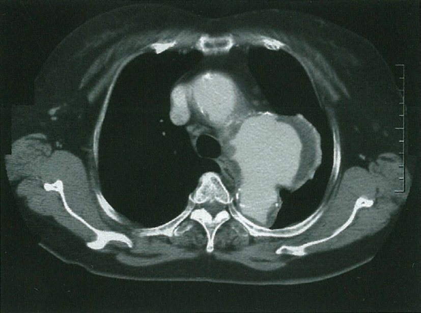
ａ 甲状腺摘出術
ｂ 左肺上葉切除術
ｃ 人工血管置換術
ｄ 縦隔腫瘍摘出術
ｅ 大動脈弁置換術
✅
ｃ 人工血管置換術
嗄声（反回神経圧迫）+大動脈瘤（胸部）+高血圧→人工血管置換術（胸部大動脈瘤に対する根本治療）。
🗣 Ortner症候群——「嗄声で見つかる大動脈瘤」の解剖
胸部大動脈瘤はふだん無症候だが、周囲の構造を圧迫し始めると症状が出る——そのなかで最も有名なのが左反回神経の圧迫による嗄声＝Ortner症候群（心血管性嗄声）である。なぜ「左」だけなのか——反回神経は迷走神経から分かれて喉頭へ「戻る」神経で、左右で回り込む場所が違う——左反回神経は大動脈弓を下から回り込む（縦隔を通る）のに対し、右反回神経は右鎖骨下動脈を回り込む（頸部で完結する）。したがって胸部大動脈瘤・左房拡大・肺高血圧・左肺門部の腫瘍といった縦隔の病変は、左反回神経だけを侵す。
反回神経麻痺の症状——嗄声（気息性嗄声）のほか、声門が閉じきらないため誤嚥（飲水時のむせ）、咳の力が弱くなる、発声が続かない。本例の「飲水時にむせるようになった」はこの一つである。
胸部大動脈瘤のその他の圧迫症状——食道（嚥下困難〈dysphagia aortica〉）／気管・左主気管支（咳嗽・喘鳴・呼吸困難）／上大静脈（上大静脈症候群）／脊椎（背部痛・椎体のびらん）／横隔神経（横隔膜挙上）。
⚠️ 「症状のある胸部大動脈瘤」は、それだけで手術適応である——圧迫症状が出るほど大きくなっていることを意味し、破裂のリスクが高いと判断されるためである。加えて新たに出現した背部痛は切迫破裂の前兆のことがあり、少量の喀血・吐血は大動脈気管支瘻・大動脈食道瘻の前駆症状〈herald bleeding〉として緊急の対応を要する。
無症候例の手術適応——上行なら径5.5cm前後、下行なら6cm前後（Marfan症候群など結合組織疾患では5cm前後とより早期）、あるいは半年で0.5cm以上の急速拡大である。
□ 選択肢の検討
| 選択肢 | 解説 |
|---|---|
| ａ 甲状腺摘出術 | 適応がない。甲状腺摘出術は甲状腺癌・大きな甲状腺腫による気管圧迫・薬物治療で制御できないBasedow病などに対して行う——甲状腺の病変や手術は頸部で反回神経を障害して嗄声を起こすので、嗄声の鑑別には確かに挙がる。しかし本例には頸部腫瘤の触知も甲状腺機能異常を示す所見もない。提示された胸部造影CTが示しているのは縦隔の病変であり、甲状腺ではない。 |
| ｂ 左肺上葉切除術 | 適応がない。左肺上葉切除術は左上葉の肺癌などに対して行う手術である——左肺門部の肺癌は左反回神経へ浸潤して嗄声を起こすため、嗄声の鑑別としては極めて重要である。しかし本例は体重減少・喫煙歴・血痰といった肺癌を疑わせる情報がなく、身長150cm・体重55kgと栄養状態も保たれている。何より造影CTが示しているのは大動脈の拡張であって、肺の腫瘤ではない。 |
| ◯ ｃ 人工血管置換術 | これが正解。本例は胸部大動脈瘤による左反回神経麻痺〈Ortner症候群〉であり、症候性の胸部大動脈瘤は手術適応となる——根拠は1か月前からの嗄声（左反回神経が大動脈弓を下から回るため圧迫される）と飲水時のむせ（声門閉鎖不全による誤嚥）、血圧162/94mmHgという高血圧（胸部大動脈瘤の最大の危険因子）、そして胸部造影CTでの大動脈の拡張である。人工血管置換術は瘤を切除して人工血管に置き換える根治術で、置換した部位は再拡張しないという確実性が最大の利点である。なお解剖学的条件が合えば低侵襲の胸部ステントグラフト内挿術〈TEVAR〉も選択肢になるが、選択肢の中では人工血管置換術が唯一の妥当な治療である。 |
| ｄ 縦隔腫瘍摘出術 | 適応がない。縦隔腫瘍摘出術は胸腺腫・奇形腫・神経原性腫瘍・リンパ腫などに対する手術である——縦隔腫瘍も反回神経を圧迫して嗄声を起こしうるので鑑別には挙がるが、造影CTで見えているのは腫瘍ではなく拡張した大動脈である。造影CTでは大動脈は内腔が濃く造影され、周囲の軟部腫瘤とは明確に区別できる。この一点で腫瘍性病変は否定される。 |
| ｅ 大動脈弁置換術 | 適応がない。本例には胸骨右縁第2肋間で2/6度の収縮期駆出性雑音を聴取するので、大動脈弁狭窄症〈AS〉を考えたくなる——しかし2/6度という弱い雑音は手術を要する重症ASの所見ではない。重症ASでは3/6度以上の粗い収縮期雑音が頸部へ放散し、Ⅱ音の減弱・遅脈・小脈・失神・狭心痛・心不全を伴う。そもそもこの雑音は大動脈瘤による血流の乱れ（拡張した内腔で渦を巻く）や加齢に伴う大動脈弁硬化でも生じるので、瘤の存在そのもので説明がつく。嗄声も飲水時のむせも大動脈弁置換では治らない——症状の原因である瘤を取り除かなければ意味がない。 |
✂️ 胸部大動脈瘤の術式——人工血管置換術とTEVARの使い分け
| 人工血管置換術（開胸） | TEVAR（胸部ステントグラフト内挿術） | |
|---|---|---|
| 方法 | 瘤を切除し人工血管を縫着 | 大腿動脈からステントグラフトを挿入し瘤内に留置 |
| 侵襲 | 大きい（開胸・人工心肺・循環停止） | 小さい（局所麻酔でも可能） |
| 向く患者 | 若年・低リスク・結合組織疾患（Marfan） | 高齢・併存疾患が多い・開胸のリスクが高い |
| 耐久性 | 置換した部位は再拡張しない | エンドリーク・migration・瘤の再拡大がありうる |
| 経過観察 | 吻合部と遠位の径 | 生涯にわたる定期CT（エンドリークの監視） |
| 主な合併症 | 対麻痺（Adamkiewicz動脈）・脳梗塞・出血・反回神経麻痺 | 対麻痺・脳梗塞・アクセス血管の損傷 |
| 解剖学的条件 | ほぼ不問 | ランディングゾーン（正常な大動脈）と腸骨動脈の性状が必要 |
対麻痺は両術式に共通する最も恐れられる合併症である——下行大動脈から分枝するAdamkiewicz動脈（多くはTh9〜L2の左肋間・腰動脈）が犠牲になると前脊髄動脈症候群を生じる。予防として脳脊髄液ドレナージ（髄液圧を下げて脊髄灌流圧を保つ）、術中の運動誘発電位モニタリング、肋間動脈の再建、術中・術後の平均血圧の維持が行われる。
本例の雑音をどう扱うか——胸骨右縁第2肋間の2/6度の収縮期駆出性雑音は大動脈弁領域の雑音だが、2/6度は弱く、症状（嗄声・むせ）とも無関係である。重症ASを示す所見（Ⅱ音の減弱・遅脈小脈・失神・狭心痛・心不全）が一つもないので、大動脈弁置換術の適応にはならない。拡張した大動脈内での乱流や加齢に伴う大動脈弁硬化でも同程度の雑音は生じるため、瘤という一つの診断で全部が説明できる。
嗄声の診療の基本もう一度——まず喉頭内視鏡で声帯そのものの病変か声帯麻痺かを分ける。左声帯麻痺なら、左反回神経の走行に沿って頸部から縦隔（大動脈弓の高さ）まで胸部CTで検索する。本例はまさにこの流れで診断がついている。
🎯 国試ポイント
① 嗄声＋高血圧＋縦隔の異常＝胸部大動脈瘤による左反回神経麻痺（Ortner症候群）。治療は人工血管置換術。② 左反回神経は大動脈弓を下から回る（縦隔を通る）／右反回神経は右鎖骨下動脈を回る（頸部で完結）——だから縦隔病変では左だけが侵される。
③ 反回神経麻痺では嗄声だけでなく誤嚥（飲水時のむせ）・咳の力の低下も起こる。
④ 症候性の胸部大動脈瘤は手術適応。無症候なら上行5.5cm・下行6cm前後（Marfanでは5cm前後）、または半年で0.5cm以上の拡大。
⑤ TEVARは低侵襲で高齢・高リスク例に向くが、エンドリークのため生涯のCTフォローが必要。Marfanなど結合組織疾患では原則避ける。
⑥ 下行大動脈の手術・TEVARの最大の合併症は対麻痺（Adamkiewicz動脈）。予防に脳脊髄液ドレナージを行う。
⑦ 2/6度の収縮期駆出性雑音だけでは大動脈弁置換の適応にならない——重症ASの所見（Ⅱ音減弱・遅脈小脈・失神・狭心痛）を確認する。
Q.509(102G-33)一般2択73%
腹部大動脈瘤の治療法はどれか。2 つ選べ。
ａ 塞栓術
ｂ 血栓除去術
ｃ 血栓溶解療法
ｄ 人工血管置換術
ｅ ステントグラフト術
✅
ｄ 人工血管置換術 ＋ ｅ ステントグラフト術（EVAR）
AAAの治療法：開腹手術（人工血管置換術）またはEVAR（ステントグラフト内挿術）の2種類。
🛠 腹部大動脈瘤の治療は「壁に圧をかけない」ための2つの方法しかない
腹部大動脈瘤〈AAA〉の本質は「大動脈の壁が脆くなり、内圧に負けて膨らんでいる」ことである——したがって根本的な解決は「脆い壁に血圧がかからないようにする」の一手しかなく、その実現方法が① 壁を人工血管に置き換える（人工血管置換術）と② 瘤の内側に血流の通り道を作って壁を血圧から隔離する（EVAR）の2つである。なぜ「薬」では治らないのか——一度拡張した大動脈壁は中膜の弾性線維と平滑筋が失われて不可逆的に変性しているため、薬で元に戻ることはない。降圧薬（β遮断薬など）や禁煙は拡大速度を遅らせるが、それは治療ではなく進行の抑制である。径が適応に達したら手術しかない。
なぜ「血栓を取る・溶かす」では治らないのか——AAAの内腔にはしばしば壁在血栓が付くが、血栓は瘤ができた結果であって原因ではない。取り除いても壁は脆いままで、むしろ内腔が広がって壁張力が増す（Laplaceの法則）。溶かせば末梢塞栓や破裂の危険も加わる。
手術適応——① 最大短径5.5cm以上（女性では5.0cm以上）／② 半年で0.5cm以上、1年で1cm以上の急速拡大／③ 症候性（腹痛・腰背部痛・圧痛）＝切迫破裂を意味しそれだけで適応／④ 破裂＝緊急手術。
Laplaceの法則（壁張力＝内圧×半径）が示すとおり、径が大きくなるほど壁張力が増して破れやすくなるという正のフィードバックが働く——5cm未満なら年1%未満の破裂率が、6cmを超えると年10%以上に跳ね上がる。だから「一定の径を超えたら、無症状でも予防的に治す」という考え方になる。
□ 選択肢の検討
| 選択肢 | 解説 |
|---|---|
| ａ 塞栓術 | 適応がない。塞栓術〈embolization〉はコイルや塞栓物質で血管を塞ぐ治療で、脳動脈瘤のコイル塞栓術・内臓動脈瘤・外傷性出血・動静脈奇形・術前の腫瘍栄養血管などに用いる——しかし腹部大動脈は全身の下半身へ血液を送る幹線そのものであり、塞いでしまえば下肢と骨盤内臓器が壊死する。大動脈瘤の治療で必要なのは「血流を保ったまま、瘤の壁に圧がかからないようにすること」であって、血流を止めることではない。なおEVARの補助として下腸間膜動脈や腰動脈をコイル塞栓してエンドリークを防ぐことはあるが、それは瘤そのものの治療ではない。 |
| ｂ 血栓除去術 | 適応がない。血栓除去術（血栓摘除術）はFogartyカテーテルなどで血管内の血栓を physically に取り除く治療で、急性動脈閉塞症（心原性塞栓・血栓性閉塞）や急性深部静脈血栓症に対して行う——腹部大動脈瘤の内腔にはしばしば壁在血栓が付着しているが、これは瘤の病態の結果であって原因ではない。血栓を取り除いても瘤の壁は元のまま脆く、拡張も破裂のリスクも何も変わらない。むしろ壁在血栓を剥がせば末梢へ飛んで塞栓症を起こす危険がある。 |
| ｃ 血栓溶解療法 | 危険。血栓溶解療法は血栓を薬で溶かす治療で、急性心筋梗塞・急性期脳梗塞・広範型肺血栓塞栓症・急性動脈閉塞などに用いる——大動脈瘤に用いれば壁在血栓が溶けて瘤の内腔が広がり、壁にかかる張力が増して破裂のリスクを高める。加えて大動脈瘤・大動脈解離はいずれも血栓溶解療法の禁忌に挙げられている。「血を固まらせない・溶かす」治療は、破れかけている血管には正反対に働くと一括して覚える。 |
| ◯ ｄ 人工血管置換術 | これが正解のひとつ。人工血管置換術（開腹手術）は腹部を開いて大動脈を遮断し、瘤を切開して内腔から人工血管（多くはY字型グラフト）を縫着する根治術である——置換した部位は二度と拡張しないという確実性が最大の利点で、長期の耐久性に優れる。開腹・大動脈遮断・出血という侵襲を伴うため心肺機能が保たれた比較的若年・低リスクの患者に向く。Marfan症候群など結合組織疾患でも第一選択となる。合併症には出血・虚血性大腸炎（下腸間膜動脈の血流途絶）・腎機能障害・脊髄虚血・性機能障害などがある。 |
| ◯ ｅ ステントグラフト術 | これが正解のひとつ。ステントグラフト内挿術〈EVAR：endovascular aneurysm repair〉は両側の大腿動脈からカテーテルを進め、瘤の内部にステント付きの人工血管を留置して、瘤壁に血圧がかからないようにする治療である——開腹も大動脈遮断も要らないため侵襲が小さく、高齢者や併存疾患の多い患者でも施行できる。日本ではこの低侵襲性ゆえにAAA治療の主流となっているが、エンドリーク（瘤内への血流の残存）・ステントの移動・瘤の再拡大がありうるため、生涯にわたる定期的なCTでの経過観察が欠かせない。また腎動脈下の正常大動脈（ネック）の長さと角度、腸骨動脈の径・蛇行・石灰化という解剖学的条件を満たす必要がある。 |
⚖️ 開腹手術とEVAR——どちらを選ぶか
| 人工血管置換術（開腹） | EVAR（ステントグラフト内挿術） | |
|---|---|---|
| アプローチ | 開腹・大動脈遮断・瘤を開いて縫着 | 両大腿動脈からカテーテルで留置 |
| 侵襲・入院期間 | 大きい・長い | 小さい・短い |
| 周術期死亡率 | やや高い | 低い |
| 長期成績 | 置換部は再拡張しない（耐久性に優れる） | 再介入率が高い（エンドリーク・migration） |
| 術後の経過観察 | 吻合部・遠位側の定期評価 | 生涯にわたる定期CT（必須） |
| 向く患者 | 若年・低リスク・長期予後が期待できる例・結合組織疾患 | 高齢・心肺機能低下・開腹歴が多い例 |
| 解剖学的条件 | ほぼ不問 | 腎動脈下ネックの長さ・角度、腸骨動脈の性状が必要 |
| 特有の合併症 | 虚血性大腸炎・腎障害・性機能障害・出血 | エンドリーク・ステント移動・アクセス血管損傷 |
エンドリークの分類——Ⅰ型＝ステントの固定部（近位・遠位）からの漏れ（要治療）／Ⅱ型＝腰動脈・下腸間膜動脈からの逆流（最多。瘤が拡大しなければ経過観察）／Ⅲ型＝ステント同士の接合部の破綻（要治療）／Ⅳ型＝グラフト自体の多孔性（通常は自然消退）。
開腹手術に特有の合併症も押さえておく——虚血性大腸炎は下腸間膜動脈を再建せずに閉じた場合に起こり、術後の血便・腹痛で疑う。S状結腸・下行結腸が好発部位である。また骨盤内の自律神経を損傷すると射精障害などの性機能障害を生じ、大動脈遮断による腎虚血で術後の腎機能障害も起こりうる。
破裂例の対応——血行動態が安定していれば造影CTを撮って術式を決め、ショックで移動が危険なら検査を省略して直ちに手術室へ運ぶ。近年は破裂例に対しても緊急EVARが行われるようになり、大動脈遮断バルーンで一時的に出血を止めながら留置する手技も用いられる。
🎯 国試ポイント
① 腹部大動脈瘤の治療は人工血管置換術（開腹）とステントグラフト内挿術〈EVAR〉の2つだけ。本問の核心。② 治療の原理は「脆い壁に血圧をかけない」——置き換えるか、内側に通り道を作って隔離するか。薬では治らない（拡大を遅らせるだけ）。
③ 塞栓術は大動脈本幹には使えない（下半身が壊死する）。血栓除去・血栓溶解は瘤の壁を治さず、むしろ破裂リスクを上げる。
④ 手術適応＝5.5cm以上（女性5.0cm）／急速拡大（半年で0.5cm）／症候性／破裂。破裂率は径に急峻に依存（Laplaceの法則）。
⑤ EVARは低侵襲で高齢・高リスク例に向くが、エンドリークのため生涯のCTフォローが必須。Marfanなど結合組織疾患では開腹手術。
⑥ エンドリークⅠ型・Ⅲ型は要治療、Ⅱ型（腰動脈・下腸間膜動脈からの逆流）は最多で拡大しなければ経過観察。
⑦ 開腹手術の合併症＝虚血性大腸炎（下腸間膜動脈）・腎障害・性機能障害・出血。
Q.510(101G-23)臨床📷 画像88%
56 歳の男性。突然に発症した胸背部痛を主訴に来院した。意識は清明。顔貌は苦悶様で冷汗を伴う。呼吸数26/ 分。脈拍104/ 分、整。血圧: 右上腕150/82mmHg、左上腕122/70mmHg。経皮的動脈血酸素飽和度〈SpO2〉92%。胸部造影CT（A，B）を示す。
処置として適切でないのはどれか。
処置として適切でないのはどれか。
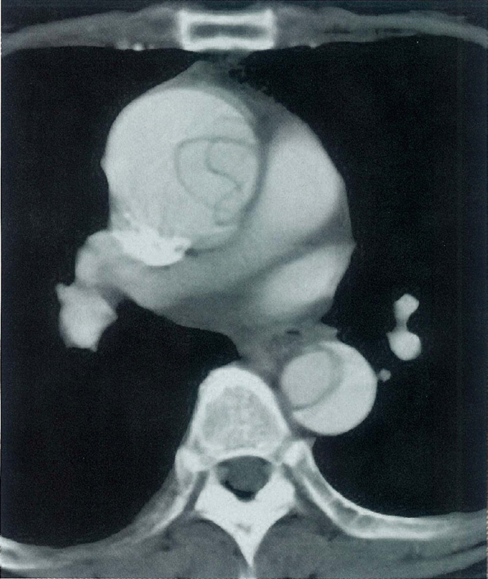
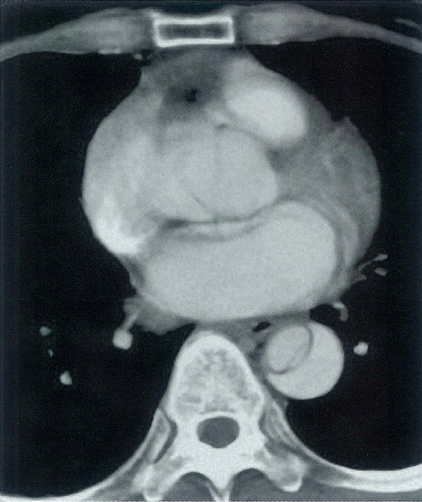
ａ 酸素投与
ｂ 緊急手術
ｃ 鎮痛薬投与
ｄ 降圧薬投与
ｅ 心囊ドレナージ
✅
ｅ 心囊ドレナージ
Stanford A型（上行大動脈解離）→緊急手術が第一選択。心囊ドレナージ単独は禁忌（タンポナーデ再発・出血継続）。
🩺 大動脈解離の初期対応セット——「やること」と「やらないこと」
急性大動脈解離を疑った、あるいは診断がついたときに救急室で行うことは決まっている——① モニタリングと静脈路の確保（心電図・SpO2・両上肢の血圧・動脈圧ライン・大口径の静脈路2本）／② 酸素投与／③ 十分な鎮痛（麻薬性鎮痛薬をためらわない）／④ β遮断薬で心拍数を60/分前後へ、続いて血管拡張薬で収縮期血圧100〜120mmHgへ／⑤ ベッドサイド心エコー（タンポナーデ・AR・上行大動脈の評価）／⑥ 輸血の準備／⑦ Stanford分類の確定（造影CT）と、A型なら直ちに心臓血管外科へ連絡。逆に「やってはいけないこと」も同じくらい明確である——血栓溶解薬・抗凝固薬・抗血小板薬（偽腔が拡大し破裂する）／IABP（偽腔迷入・拡張期圧上昇・ARの増悪）／心囊穿刺（圧迫止血が解除される）／解離した大動脈へのカテーテル操作／昇圧薬（解離を進展させる）／急性期の運動負荷。
⚠️ 本問はこの「やること4つ・やらないこと1つ」を選択肢に並べた構成である——酸素投与・緊急手術・鎮痛薬・降圧薬はすべて上のリストの「やること」に含まれ、心囊ドレナージだけが「やらないこと」に属する。
血圧左右差の読み方——本例は右150/82・左122/70mmHgで左が28mmHg低い。これは解離が左鎖骨下動脈の起始部に及んでいることを示唆する。左鎖骨下動脈は弓部の最も遠位の分枝なので、そこまで及んでいれば弓部全体が巻き込まれていると読め、手術は上行だけでなく弓部置換まで必要になる可能性が高い。
SpO2 92%の意味——解離では疼痛による酸素消費の増加・心拍出量の低下・胸水や無気肺で酸素化が落ちる。低酸素は臓器灌流障害を悪化させるので、まず是正する。
□ 選択肢の検討
| 選択肢 | 解説 |
|---|---|
| ａ 酸素投与 | 適切。本例はSpO2 92%とやや低下しており、酸素投与は適切である——大動脈解離では疼痛と交感神経緊張による酸素消費の増加、心タンポナーデや心不全による心拍出量の低下、胸水・無気肺などで低酸素をきたしうる。臓器の灌流が脅かされている状況で酸素化を保つことは基本中の基本であり、解離に限らずあらゆる救急対応で最初に行うべき処置の一つである。 |
| ｂ 緊急手術 | 適切。胸部造影CT（A・B）が上行大動脈に及ぶ解離＝Stanford A型を示しているので、緊急手術が絶対適応である——本例は突然発症の胸背部痛／苦悶様顔貌と冷汗／右上腕150/82mmHg・左上腕122/70mmHgという28mmHgの血圧左右差と、解離を示す所見が揃っている。A型は未治療では1時間ごとに約1%ずつ死亡率が上がり、48時間で約50%に達するため、診断がつき次第ただちに手術室へ運ぶ。 |
| ｃ 鎮痛薬投与 | 適切。鎮痛薬の投与は解離の治療の一部である——激烈な痛みは交感神経を強く刺激し、血圧と心拍数を押し上げて解離をさらに進展させる。したがって十分に痛みを抑えることが、そのまま降圧・解離進展の抑制につながる。解離の疼痛管理では麻薬性鎮痛薬（モルヒネなど）をためらわずに使うのが原則である。本例は苦悶様顔貌と冷汗を認めており、鎮痛の必要性は明らかである。 |
| ｄ 降圧薬投与 | 適切。降圧薬の投与は解離治療の中核である——目標は収縮期血圧100〜120mmHg・心拍数60/分前後で、大動脈壁にかかる剪断力〈dP/dt〉を下げて解離の進展を止めることが目的である。β遮断薬をまず投与し、そのうえで血管拡張薬を加える——血管拡張薬を単独で先に使うと反射性頻脈でdP/dtがかえって増えるため、この順序は重要である。本例は右上腕150/82mmHgと高値であり、手術室へ運ぶまでの間も降圧を続ける。 |
| ◯ ｅ 心囊ドレナージ | これが「適切でない」＝正解。Stanford A型解離に伴う心タンポナーデでは、心囊ドレナージ（心囊穿刺）は原則として行わない——理由は心膜腔内に溜まった血液の圧が、破裂した大動脈を外から押さえて出血を止めている（タンポナーデによる圧迫止血）からである。穿刺して圧を抜くと、その止血が解除されて出血が再燃・加速し、かえって死亡率が上がる。正しい手順は、手術室で開胸し人工心肺を確立してからタンポナーデを解除することである。そもそも本例には頸静脈怒張・心音減弱といったタンポナーデを示す所見の記載がなく、行う根拠自体が乏しい。⚠️ 心囊ドレナージが正しいのは、悪性腫瘍・尿毒症・特発性など「出血源のない心囊液貯留」の場合である。 |
💧 心タンポナーデ——「抜いてよい場合」と「抜いてはいけない場合」
| 原因 | 心囊穿刺・ドレナージ | 理由 |
|---|---|---|
| A型大動脈解離の穿破 | 原則行わない | 心膜腔内の圧が破裂部を押さえている。抜くと再出血が加速 |
| 心臓・大血管の外傷、心破裂 | 原則行わない（緊急開胸） | 同上。出血源の外科的修復が必要 |
| 悪性腫瘍の心膜転移 | 行う（治療的・診断的） | 出血源がなく、排液で症状が改善する |
| 尿毒症・特発性・膠原病 | 行う | 同上 |
| 結核性・化膿性心膜炎 | 行う（診断・排膿） | 起因菌の同定と排液が治療になる |
| 心筋梗塞後の心破裂 | 原則行わない（緊急手術） | 出血源があるため |
心タンポナーデの診断——Beckの三徴（血圧低下・頸静脈怒張・心音減弱）と奇脈（吸気時に収縮期血圧が10mmHg以上低下）が古典的所見である。確定は心エコーで、心囊液の貯留に加えて右房・右室の拡張期虚脱、下大静脈の呼吸性変動の消失、心室中隔の呼吸性動揺を見る。心電図では低電位差と electrical alternans（心臓が液体の中で揺れることによるQRS波高の交互変動）、胸部エックス線では心陰影の拡大（フラスコ状心）を認める。
タンポナーデの血行動態——心膜腔内圧の上昇 → 心室の拡張が妨げられる → 前負荷の低下 → 心拍出量の低下。したがって「拡張できないこと」が問題であり、強心薬では解決しない。手術までのつなぎとしては輸液で前負荷を保つことが有効だが、根本的な解決は貯留した液体（血液）を取り除くことである——ただし解離ではそれを手術室で行う。
⚠️ A型解離では逆に「降圧しすぎない」配慮も要る——タンポナーデを合併して血圧が低下している場合、さらに下げれば臓器灌流が保てなくなる。降圧は解離の進展を抑える手段であって、目的ではないことを忘れない。
🎯 国試ポイント
① A型大動脈解離のタンポナーデでは心囊ドレナージは原則禁忌——心膜腔の圧が破裂部を押さえているため、抜くと再出血が加速する。本問の核心。② 解離の初期対応＝モニタリング・酸素投与・十分な鎮痛・β遮断薬→血管拡張薬による降圧・心エコー・輸血準備・外科へ連絡。
③ 鎮痛は降圧の一部——痛みが交感神経を刺激して血圧と心拍数を上げる。麻薬性鎮痛薬をためらわない。
④ 解離で禁忌＝血栓溶解薬・抗凝固薬・抗血小板薬・IABP・心囊穿刺・昇圧薬・カテーテル操作。
⑤ 心囊穿刺の可否は「活動性の出血源があるか」で決まる——解離・外傷・心破裂は不可、悪性腫瘍・尿毒症・特発性は可。
⑥ タンポナーデはBeckの三徴＋奇脈で疑い、心エコーで右房・右室の拡張期虚脱を確認する。問題は「拡張できないこと」なので強心薬では解決しない。
⑦ 左上肢の血圧が低ければ左鎖骨下動脈起始部まで解離が及んでいる＝弓部が巻き込まれている可能性が高い。
Q.511(101H-41)臨床95%
52 歳の男性。突然の胸背部痛を主訴に来院した。5 年前から高血圧を指摘されているが治療は受けていなかった。意識は清明。身長178cm、体重72kg。呼吸数20/ 分。脈拍96/ 分、整。血圧192/64mmHg、左右差なし。第3 肋間胸骨左縁に最強点を有する拡張期雑音を聴取する。
この時点での検査として適切でないのはどれか。
この時点での検査として適切でないのはどれか。
ａ 心電図
ｂ 心エコー
ｃ 胸腹部造影CT
ｄ 心筋シンチグラフィ
ｅ 胸部エックス線撮影
✅
ｄ 心筋シンチグラフィ
急性大動脈解離が疑われる状況での心筋シンチグラフィは時間がかかり、緊急性・診断優先度から不適切。
🔉 拡張期雑音＋脈圧の開大——A型解離が大動脈弁を壊している
本例で最も重要な身体所見は「第3肋間胸骨左縁に最強点を有する拡張期雑音」と「血圧192/64mmHg」の2つである——前者は大動脈弁閉鎖不全〈AR〉の灌水様拡張期雑音そのものであり、後者は脈圧128mmHgという著明な開大で、これもARを裏づける。なぜ拡張期雑音が「大動脈弁領域（胸骨右縁第2肋間）」ではなく「胸骨左縁第3肋間」で最強なのか——ARの逆流ジェットが左室流出路へ向かうため、その方向に位置するErb領域（第3肋間胸骨左縁）で最もよく聴こえるからである。患者を坐位・前傾させ、呼気で止めさせると聴取しやすくなる。
急性大動脈解離がARを起こす3つの機序——① 解離が弁輪へ及んで弁輪が拡大する／② 弁交連の支持が剥離して弁尖が落ち込む〈prolapse〉／③ 剥離した内膜フラップが弁口へ落ち込んで閉鎖を妨げる。A型解離の40〜70%にARが合併し、急性心不全・肺水腫の原因となる。
⚠️ 急性ARと慢性ARは臨床像が大きく異なる——慢性ARでは左室が長い時間をかけて拡張・肥大して代償するため、脈圧の増大・Corrigan脈（速脈）・心尖拍動の外側偏位・de Musset徴候などの派手な末梢徴候が揃う。急性ARでは左室が拡張する時間がないため、これらの末梢徴候は乏しく、代わりに急速に左室拡張末期圧が上昇して肺水腫となる。雑音も短く弱くなりうるので、聴診だけでは重症度を見誤る。
本例のまとめ——突然の胸背部痛（解離）＋拡張期雑音と脈圧開大（AR）＝上行大動脈に及ぶStanford A型と読める。やるべきは診断の確定（造影CT）と緊急手術の準備であって、心筋の血流を調べることではない。
□ 選択肢の検討
| 選択肢 | 解説 |
|---|---|
| ａ 心電図 | 適切。心電図は突然の胸背部痛を訴える患者に対して真っ先に行うべき検査である——目的は急性心筋梗塞の除外であり、同時に解離が冠動脈（とくに右冠動脈）を巻き込んで下壁梗塞をきたしていないかも評価できる。数分で施行でき、非侵襲で、その場で結果が出る——緊急性の高い状況で選ばない理由がない。なお解離では心電図が正常のことが多いので、「心電図正常＋激烈な胸背部痛」はむしろ解離を示唆する組合せになる。 |
| ｂ 心エコー | 適切。心エコーはベッドサイドで数分のうちに施行でき、解離のA型合併症を一度に評価できる——具体的には① 大動脈弁閉鎖不全の有無と重症度（本例は拡張期雑音があるので必ず確認する）／② 心囊液貯留＝心タンポナーデ／③ 上行大動脈の拡張とフラップ／④ 壁運動異常（冠動脈の巻き込み）。⚠️ ただし経胸壁心エコーでは弓部から下行大動脈が肺と気管に遮られて描出できないため、範囲の確定には造影CT（または経食道心エコー）が必要である。 |
| ｃ 胸腹部造影CT | 適切。胸腹部造影CTは急性大動脈解離の確定診断における第一選択で、感度・特異度とも95%以上である——内膜フラップの描出で診断が確定し、同時に「上行大動脈に及ぶか（Stanford分類）」と「どの分枝が巻き込まれているか」が分かるため、そのまま治療方針（緊急手術か降圧療法か）に直結する。撮影範囲は胸部から骨盤まで、単純＋造影で撮るのが標準である（単純では calcium sign・偽腔内血栓・新鮮出血を見る）。 |
| ◯ ｄ 心筋シンチグラフィ | これが「適切でない」＝正解。心筋シンチグラフィ（心筋血流SPECT）は安定した虚血性心疾患において、心筋虚血の範囲や生存心筋の有無を評価する検査である——放射性医薬品の投与から撮像まで時間がかかり、専用の装置と検査室への移動を要するため、刻一刻と病態が進行する急性大動脈解離の緊急診療にはまったく適さない。加えて負荷を伴う検査であれば血圧と心拍数が上がって解離を進展させるという危険もある。本例は突然の胸背部痛・血圧192/64mmHg（脈圧128mmHgの著明な開大）・胸骨左縁第3肋間の拡張期雑音と、A型解離＋急性大動脈弁閉鎖不全を強く示唆する所見が揃っており、時間をかけて心筋の血流を調べている場合ではない。 |
| ｅ 胸部エックス線撮影 | 適切。胸部エックス線撮影は簡便・迅速・ポータブルでも撮れるため、胸痛の初期評価に必須である——解離では縦隔の拡大・大動脈陰影の拡大や二重陰影・大動脈knobの変形・左胸水といった所見が得られる。同時に気胸・肺炎・心不全（肺うっ血）・心拡大といった他の胸痛の原因も一度に評価できる。⚠️ ただし縦隔拡大が出るのは6〜7割にすぎず、胸部エックス線が正常でも解離は否定できない——スクリーニングであって確定診断ではない。 |
🧭 大動脈解離を疑ったときの検査の選び方——「速さ」と「情報量」で並べる
| 検査 | 所要時間 | 分かること | 限界 |
|---|---|---|---|
| 心電図 | 数分 | 急性心筋梗塞の除外・冠動脈巻き込み | 解離では正常のことが多い |
| 胸部エックス線 | 数分 | 縦隔拡大・左胸水・気胸や肺炎の除外 | 縦隔拡大は6〜7割にしか出ない |
| 心エコー（経胸壁） | 数分・ベッドサイド | AR・心タンポナーデ・上行大動脈・壁運動 | 弓部〜下行と腹部は描出不能 |
| 胸腹部造影CT | 十数分（移動が必要） | フラップ・Stanford分類・分枝の灌流障害（＝確定診断） | 造影剤・移動のリスク |
| 経食道心エコー〈TEE〉 | ベッドサイド | 上行〜弓部・AR・タンポナーデ（造影剤不要） | 腹部大動脈は評価不能・鎮静が必要 |
| Dダイマー | 30分程度 | 陰性なら除外に有用（感度が高い） | 特異度が低く確定には使えない |
| 心筋シンチグラフィ | 数時間 | 心筋虚血・生存心筋 | 緊急診療には不適。負荷を伴えば危険 |
造影CTが撮れない場合の代替——腎機能が悪い・造影剤アレルギーがある・血行動態が不安定で移動できないときは経食道心エコー〈TEE〉が有力である。上行大動脈と弓部を高い精度で評価でき、ARとタンポナーデも同時に見られる。ただし腹部大動脈と分枝は評価できず、鎮静を要するので、可能なら造影CTを撮るのが原則である。
本例の血圧192/64mmHgをどう扱うか——収縮期が高いこと自体が解離を進展させるので降圧が必要だが、ARを合併している場合は徐脈にしすぎない配慮も要る。心拍数を下げると拡張期が長くなり、逆流量が増えて左室が過負荷になるためである。ARを伴うA型解離では、降圧しつつ速やかに手術へ運ぶのが実際の判断になる。
⚠️ ARを合併したA型解離では手術の内容も変わる——弁尖が保たれ弁輪の拡大や交連の剥離が主因なら、交連を吊り上げて弁を温存できる／基部が破壊されていればBentall手術、弁尖が保たれていればDavid手術が選ばれる。
🎯 国試ポイント
① 心筋シンチグラフィは撮像に数時間かかり、急性大動脈解離の緊急診療には不適。本問の核心。② 解離を疑ったら心電図・胸部エックス線・心エコーをベッドサイドで先に、確定は胸腹部造影CTという順序。
③ 胸骨左縁第3肋間の拡張期雑音＝大動脈弁閉鎖不全。脈圧の著明な開大（192/64＝128mmHg）も同じ方向を指す。
④ 解離がARを起こす機序は弁輪拡大・弁交連の支持の破綻・フラップの落ち込みの3つ。A型の40〜70%に合併。
⑤ 急性ARでは慢性ARの末梢徴候（Corrigan脈・de Musset徴候など）が乏しく、急速に肺水腫となる。
⑥ 経胸壁心エコーは弓部〜下行と腹部を描出できない——範囲の確定にはCT、移動困難なら経食道心エコー。
⑦ 胸部エックス線の縦隔拡大は6〜7割にしか出ない。正常でも解離は否定できない。
Q.512(100A-20)臨床📷 画像84%
62 歳の男性。背部痛が出現し冷汗も認めたため来院した。喫煙30 本/ 日を35 年間。42 歳時に椎間板ヘルニア、59 歳時に急性心筋梗塞の既往がある。意識は清明であるが、発語は少ない。身長165cm、体重76kg。脈拍84/ 分、整。血圧160/80mmHg。胸部の聴診で異常を認めない。尿所見：蛋白（－）、糖（－）。血液所見：赤血球427 万、Hb13.4g/dl、Ht 39％、白血球10,300、血小板14 万。血液生化学所見：総蛋白6.4g/dl、AST 46IU/l、ALT 57IU/l、CK144IU/l（基準10 ～40）、LD 189IU/l（基準176 ～353）。胸部造影CT を示す。
治療薬はどれか。
治療薬はどれか。
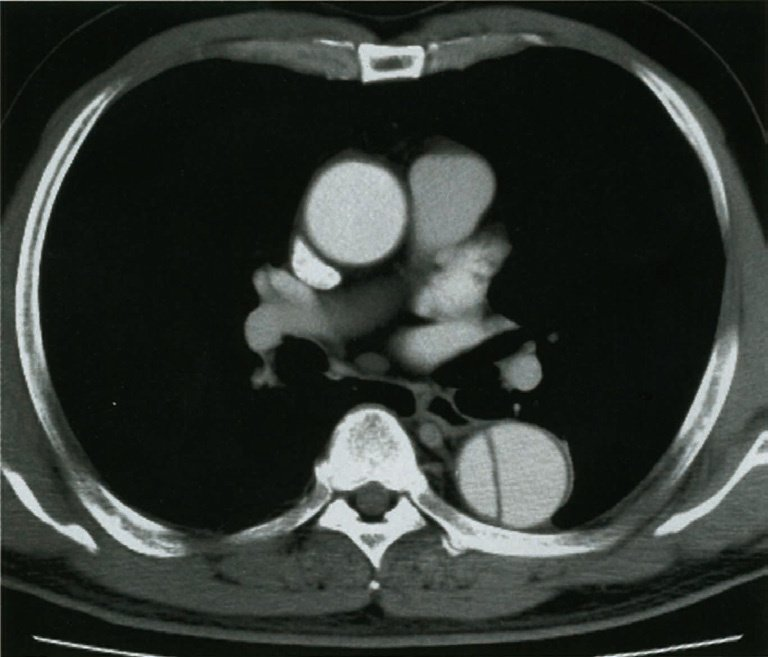
ａ ヘパリン
ｂ アトロピン
ｃ フロセミド
ｄ プレドニゾロン
ｅ プロプラノロール
✅
ｅ プロプラノロール
大動脈解離の初期治療：β遮断薬（プロプラノロール）でHR・血圧管理（dp/dt抑制）。
📉 解離の薬物治療は「dP/dt を下げる」の一点に尽きる
急性大動脈解離の薬物治療の目的は「血圧の数字を下げること」ではなく、「大動脈壁にかかる剪断力〈dP/dt〉を下げること」である——dP/dt とは、心収縮によって大動脈内圧が立ち上がる勢いのことで、これが内膜の裂け目を押し広げ、解離を長軸方向に進展させる原動力になっている。dP/dt は「心収縮力」と「心拍数」に比例する——だから血圧を下げるだけでは不十分で、心拍数と収縮力も同時に抑える必要がある。β遮断薬はこの3つ（収縮力・心拍数・血圧）をすべて下げるので、解離の薬物治療の中心に据えられる。
実際の投与順序——① 十分な鎮痛（痛みが交感神経を刺激して血圧・心拍数を押し上げるため、鎮痛は降圧の一部）／② β遮断薬（プロプラノロール・ランジオロール・エスモロールなど）で心拍数60/分前後へ／③ それでも血圧が高ければ血管拡張薬（ニカルジピン等）を加えて収縮期100〜120mmHgへ。
⚠️ 血管拡張薬を単独で先行させてはいけない——末梢抵抗が下がると圧受容器反射で交感神経が興奮し、心拍数と心収縮力が増す。血圧の数字は下がってもdP/dtはむしろ上がり、解離が進む。「β遮断薬が先、血管拡張薬は後」という順序は、この生理から必然的に導かれる。
β遮断薬が使えない場合——気管支喘息・重度の徐脈・高度房室ブロック・非代償性心不全では使えないので、非ジヒドロピリジン系Ca拮抗薬（ジルチアゼム・ベラパミル）で心拍数を抑える。プロプラノロールは非選択的なのでβ2遮断作用があり、喘息患者では気管支攣縮を招く点に注意する。
降圧しすぎない配慮も要る——臓器灌流（脳・腎・脊髄・腸管）が保てる範囲で下げるのが原則で、意識・尿量・四肢の脈拍を見ながら調整する。
□ 選択肢の検討
| 選択肢 | 解説 |
|---|---|
| ａ ヘパリン | 禁忌。ヘパリンは抗凝固薬であり、大動脈解離では偽腔の血栓化を妨げて出血と解離の拡大を助長する——本例は59歳時に急性心筋梗塞の既往があるため、「胸背部痛＝再梗塞」と考えてヘパリンを選びたくなるが、胸部造影CTが示しているのは解離である。抗凝固薬・抗血小板薬・血栓溶解薬はいずれも解離では禁忌——「血を固まらせない・溶かす」治療は裂けて出血している血管には正反対に働くと一括して覚える。 |
| ｂ アトロピン | 逆効果。アトロピンは抗コリン薬で、迷走神経の作用を遮断して心拍数を上げる——症候性徐脈・房室ブロック・有機リン中毒などに用いる——大動脈解離の治療は心拍数と血圧を下げてdP/dt（大動脈壁への剪断力）を減らすことなので、心拍数を上げるアトロピンは治療方針と正反対である。投与すれば解離が進展し破裂に近づく。本例は脈拍84/分・整で徐脈でもないので、そもそも適応がない。 |
| ｃ フロセミド | 適応がない。フロセミドはループ利尿薬で、うっ血性心不全・肺水腫・浮腫・体液過剰に用いる——本例には呼吸困難・下腿浮腫・頸静脈怒張・肺うっ血といった心不全を示す所見がなく、胸部の聴診でも異常を認めない。利尿薬で血管内容量を減らせば血圧は下がるが、同時に反射性頻脈を招いてdP/dtを上げうるし、臓器灌流も損なう。解離の降圧に利尿薬は用いない——必要なのは血管内容量の除去ではなく、収縮力と心拍数の抑制である。 |
| ｄ プレドニゾロン | 適応がない。プレドニゾロンは副腎皮質ステロイドで、血管炎（高安動脈炎・巨細胞性動脈炎）・膠原病・急性副腎不全などに用いる——本例は62歳男性・35年の喫煙歴・急性心筋梗塞の既往という動脈硬化性の背景をもつ患者に生じた機械的な血管の破綻であり、炎症性の疾患ではない。白血球10,300は軽度の上昇にとどまり、解離に伴う急性炎症反応として説明できる。ステロイドは組織を脆弱化させ、創傷治癒を遅らせるので、むしろ有害である。 |
| ◯ ｅ プロプラノロール | これが正解。プロプラノロールは非選択的β遮断薬であり、急性大動脈解離の薬物治療の第一選択である——治療の目的は大動脈壁にかかる剪断力〈dP/dt〉を下げて、解離の進展と破裂を防ぐことにあり、dP/dtは心収縮力と心拍数に比例するので、その両方を同時に抑えるβ遮断薬が最も理にかなっている。目標は心拍数60/分前後・収縮期血圧100〜120mmHgで、本例は血圧160/80mmHg・脈拍84/分とどちらも高いので、まさにβ遮断薬の出番である。⚠️ β遮断薬で心拍数を抑えてから、必要なら血管拡張薬（ニカルジピンなど）を加える——血管拡張薬を単独で先に使うと反射性頻脈でdP/dtがかえって増えるため、この順序が重要である。 |
💉 解離で使う薬・使ってはいけない薬
| 薬剤 | 可否 | 理由 |
|---|---|---|
| β遮断薬（プロプラノロール・ランジオロール・エスモロール） | 第一選択 | 心収縮力・心拍数・血圧を同時に下げ、dP/dtを最も効率よく抑える |
| 血管拡張薬（ニカルジピン・ニトロプルシド） | β遮断薬の後に追加 | 単独先行は反射性頻脈でdP/dtを増やす |
| 麻薬性鎮痛薬（モルヒネ） | 積極的に使う | 痛みによる交感神経緊張を断つ＝降圧の一部 |
| 非ジヒドロピリジン系Ca拮抗薬（ジルチアゼム） | β遮断薬が使えないとき | 心拍数と収縮力を抑えられる |
| ヘパリン・抗血小板薬・血栓溶解薬 | 禁忌 | 偽腔の血栓化を妨げ、出血と解離の拡大を招く |
| アトロピン・カテコラミン（昇圧薬） | 不可 | 心拍数・収縮力・血圧を上げてdP/dtを増やす |
| 利尿薬（フロセミド） | 用いない | 反射性頻脈と臓器灌流の低下を招く。心不全の合併時のみ考慮 |
| 副腎皮質ステロイド | 適応なし | 炎症性疾患ではない。組織を脆弱化させる |
⚠️ これは実臨床でも最も危険な思考の罠である——心筋梗塞の既往がある患者ほど、次の胸痛も心筋梗塞と決めつけられ、抗血小板薬とヘパリンが投与されてしまう。「痛みが背部にある」「発症時が最も強い」「移動する」「血圧左右差がある」という手がかりを拾えるかどうかが分かれ目になる。
治療方針の全体像——Stanford A型なら緊急手術、B型なら降圧療法だが、どちらであっても薬物治療の中身（鎮痛→β遮断薬→血管拡張薬）は同じ。違うのは「それが手術までのつなぎか、治療の本体か」だけである。本問は薬剤名を問うているので、Stanford分類にかかわらずβ遮断薬が答えになる。
慢性期もβ遮断薬を軸にした生涯の厳格な降圧が続く。禁煙も必須で、本例のような35年の喫煙歴は大動脈疾患の強い危険因子である。
🎯 国試ポイント
① 急性大動脈解離の薬物治療の第一選択はβ遮断薬（プロプラノロールなど）。目的はdP/dt（大動脈壁への剪断力）を下げること。② dP/dtは心収縮力と心拍数に比例する——だから血圧だけでなく心拍数（60/分前後）も下げる。
③ β遮断薬が先、血管拡張薬は後。血管拡張薬の単独先行は反射性頻脈でdP/dtを増やす。
④ 鎮痛も治療の一部——痛みによる交感神経緊張が血圧と心拍数を押し上げる。
⑤ 解離で禁忌＝ヘパリン・抗血小板薬・血栓溶解薬・昇圧薬・アトロピン。利尿薬もステロイドも適応にならない。
⑥ β遮断薬が使えない（喘息・徐脈・高度房室ブロック）ときはジルチアゼムなど非ジヒドロピリジン系Ca拮抗薬。
⑦ 心筋梗塞の既往がある患者の胸背部痛では、解離を必ず鑑別に入れる——抗血小板薬とヘパリンが投与されると致命的になる。
Q.513(100D-6)必修臨床📷 画像99%
67 歳の男性。腹部のしこりを主訴に来院した。2 年前から腹部のしこりに気付いていたが、最近急に大きくなってきた。触診上腫瘤は拍動性である。腹部の写真を示す。
この患者の診断に有用なのはどれか。
この患者の診断に有用なのはどれか。

ａ 尿検査
ｂ 血液検査
ｃ 腹部超音波検査
ｄ 上部消化管内視鏡検査
ｅ 腫瘤穿刺
✅
ｃ 腹部超音波検査
拍動性腹部腫瘤→腹部大動脈瘤が第一考慮→腹部超音波検査（簡便・非侵襲・瘤径測定に有用）。
🔵 拍動性腹部腫瘤——見たら「まず超音波」
腹部の拍動性腫瘤＝腹部大動脈瘤〈AAA〉が第一に考えるべき診断である——AAAは腹部大動脈が正常径（およそ2cm）の1.5倍以上、すなわち3cm以上に拡張したものと定義され、約90%が腎動脈より下（腎動脈下型）に生じる。本例が示す2つの重要な情報——① 触診で拍動性の腫瘤（＝血管性の病変）／② 2年前から気付いていたものが「最近急に大きくなってきた」（＝急速拡大）。半年で0.5cm以上、1年で1cm以上の拡大は、径にかかわらず手術適応となる危険なサインである。
診断の階段——① 身体所見（視診・触診・聴診でbruit）→ ② 腹部超音波検査（スクリーニング・径の測定）→ ③ 造影CT（術式の決定・破裂の評価）。超音波が第一選択である理由は、非侵襲・簡便・被曝なし・造影剤不要・ベッドサイドで可能・繰り返せる・径の測定精度が高いという点にある。
触診の限界も知っておく——感度は径が大きいほど、また痩せているほど高いが、肥満例では5cmを超える瘤でも触れないことがある。触れないことは瘤を否定しない。
拍動性腫瘤の見分け方——expansile pulsation（収縮期に左右へ膨らむ）が本物の動脈瘤で、transmitted pulsation（腫瘤が大動脈の上に乗って拍動が伝わるだけ）とは区別する。両手を腫瘤の両側に当てたとき、指が左右へ押し広げられれば expansile、同じ方向へ持ち上がるだけなら transmitted である。
⚠️ 穿刺は絶対禁忌——診断のための処置が致死的出血を招く。腹部腫瘤に穿刺・生検を行う前には、必ず画像で血管性の病変でないことを確認する。
□ 選択肢の検討
| 選択肢 | 解説 |
|---|---|
| ａ 尿検査 | 不適切。尿検査は尿路感染症・尿路結石・糸球体腎炎・糖尿病などのスクリーニングに用いる——本例の主訴は「2年前から気付いていた腹部のしこりが最近急に大きくなってきた」であり、触診で拍動性の腫瘤を認めている。これは血管の所見である。尿検査では腹部の拍動性腫瘤をまったく評価できない。診断の役に立たない。 |
| ｂ 血液検査 | 不適切。血液検査は炎症・貧血・臓器機能の評価に有用で、術前検査としては当然行うが、腹部大動脈瘤そのものを診断する検査ではない——AAAは無症候であれば血液所見に異常を示さないのが普通で、血液検査が正常であることは瘤を否定しない。本例で問われているのは「診断に有用なのはどれか」——形態を描出できる画像検査でなければ答えにならない。 |
| ◯ ｃ 腹部超音波検査 | これが正解。本例は腹部大動脈瘤〈AAA〉であり、腹部超音波検査が診断の第一選択である——根拠は67歳男性（AAAの好発）、2年前から自覚していた腹部のしこりが最近急に増大（急速拡大＝破裂リスクの上昇）、触診で拍動性の腫瘤（大動脈の拡張）、そして腹部の写真で拍動性の膨隆が確認できることである。腹部超音波検査は非侵襲・簡便・被曝なし・ベッドサイドで施行でき、瘤の最大短径の測定に優れる——診断とスクリーニング、そして経過観察のすべてに使える。超音波で瘤が確認できたら、手術を検討する段階では造影CTへ進み、瘤の範囲・腎動脈や腸骨動脈との位置関係・壁在血栓・破裂の有無を評価して術式を決める。 |
| ｄ 上部消化管内視鏡検査 | 不適切。上部消化管内視鏡検査は食道・胃・十二指腸の粘膜を観察する検査である——腹部腫瘤の鑑別として進行胃癌は挙がるが、胃癌の腫瘤は拍動性ではない。腫瘤が大動脈の上に乗っていて拍動が伝わっているだけのこと（transmitted pulsation）はあるが、AAAの拍動は収縮期に「膨らむように」左右へ広がる〈expansile pulsation〉という点で区別できる。本例は視診でも拍動性の膨隆が分かるほどの所見であり、消化管の検査を選ぶ場面ではない。 |
| ｅ 腫瘤穿刺 | 絶対に行ってはならない。拍動性腫瘤（＝動脈瘤）に穿刺針を刺せば、大量出血をきたして致命的である——大動脈は心拍出量のすべてが通る高圧の血管で、穿刺孔から瞬時に出血する。しかも後腹膜という圧迫の効きにくい場所にあり、止血手段がない。腹部の腫瘤に対して穿刺・生検を考えるときは、必ず先に画像で血管性でないことを確認する——これが「まず超音波」であるもう一つの理由である。⚠️ 診断のための検査が患者を殺しうるという、選択肢の形をとった強い警告である。 |
📐 腹部大動脈瘤の径と破裂リスク——なぜ「予防的に治す」のか
| 最大短径 | 年間破裂率の目安 | 方針 |
|---|---|---|
| 3.0〜4.0cm | ほぼ0% | 年1回の超音波で経過観察 |
| 4.0〜5.0cm | 年1%未満 | 半年ごとの超音波・厳格な降圧と禁煙 |
| 5.5cm以上（女性は5.0cm以上） | 年5〜10% | 手術適応（人工血管置換術またはEVAR） |
| 6.0cm以上 | 年10%以上 | 速やかに手術 |
| 急速拡大（半年で0.5cm・1年で1cm） | 径によらず高い | 径にかかわらず手術適応（本例） |
| 症候性（腹痛・腰背部痛・圧痛） | 切迫破裂を意味する | それだけで手術適応 |
拡大を促す因子——喫煙（最も強い）・高血圧・COPD・男性・高齢・家族歴。禁煙は拡大速度を明らかに遅らせるので、経過観察中の患者には必ず指導する。降圧（β遮断薬など）も拡大の抑制に用いられるが、いずれも進行を遅らせるだけで、瘤を小さくすることはできない。
破裂したときの臨床像——三徴＝突然の腹痛・腰背部痛／拍動性腹部腫瘤／低血圧・ショック。後腹膜へ破裂すれば一時的に出血が抑えられて痛みが軽快することがあるが、いつ腹腔内へ自由破裂してもおかしくない極めて危うい状態である。
本例の次の一手——超音波で径を測り、5.5cm以上または急速拡大が確認されれば造影CTへ進み、手術（人工血管置換術またはEVAR）を計画する。「最近急に大きくなってきた」という病歴がある以上、のんびり経過観察する場面ではない。
⚠️ もう一つの注意点は「炎症性腹部大動脈瘤」——瘤壁の肥厚と周囲の線維化を伴う特殊型で、腹痛・体重減少・赤沈亢進を示し、尿管を巻き込んで水腎症をきたすことがある。造影CTで瘤壁の造影効果と周囲の軟部影で疑う。
🎯 国試ポイント
① 腹部の拍動性腫瘤＝腹部大動脈瘤。診断・スクリーニング・経過観察の第一選択は腹部超音波検査。② AAAの定義は径3cm以上（正常のおよそ1.5倍）。約90%が腎動脈下型。
③ 拍動性腫瘤への穿刺は絶対禁忌——大量出血で致命的。腹部腫瘤の穿刺前には必ず画像で血管性を否定する。
④ expansile pulsation（収縮期に左右へ膨らむ）が本物。腫瘤に拍動が伝わるだけの transmitted pulsation と区別する。
⑤ 手術適応＝5.5cm以上（女性5.0cm）／急速拡大（半年0.5cm・1年1cm）／症候性／破裂。破裂率は径に急峻に依存（Laplaceの法則）。
⑥ 肥満例では大きな瘤でも触れない。触れないことは否定にならない。
⑦ 拡大の最大の危険因子は喫煙。禁煙と降圧は拡大を遅らせるが、瘤を小さくはできない。
Q.514(100F-17)臨床📷 画像2択78%
77 歳の男性。胸部エックス線撮影で異常を指摘されて来院した。意識は清明。身長168cm、体重67kg。心雑音はなく、呼吸音に異常はない。血液所見：赤血球391 万、Hb 12.1g/dl、Ht 36％、白血球7,000。血液生化学所見：総蛋白6.5g/dl、アルブミン3.6g/dl、クレアチニン0.9mg/dl、AST 18IU/l、ALT 13IU/l、LD 350IU/l（基準176 ～353）、CK 32IU/l（基準10 ～40）。胸部造影CT（A）と再構成三次元画像（B）とを示す。
この患者に起こりうるのはどれか。2 つ選べ。
この患者に起こりうるのはどれか。2 つ選べ。


ａ 嗄 声
ｂ 咽頭痛
ｃ 嚥下痛
ｄ 左上肢麻痺
ｅ 出血性ショック
✅
ａ 嗄声 ＋ ｅ 出血性ショック
胸部大動脈瘤：左反回神経圧迫→嗄声（Ortner症候群）、破裂→大量出血→出血性ショック。
🎯 「2つ選べ」を確実に取る——胸部大動脈瘤の症状を機序で分類する
胸部大動脈瘤で起こることは、「圧迫」と「破裂」の2系統にきれいに分かれる——この2つの分類さえ持っていれば、選択肢を機械的にふるいにかけられる。【圧迫による症状】——縦隔で大動脈の隣にある構造を思い出す——
左反回神経（大動脈弓を下から回る）→ 嗄声（Ortner症候群）・誤嚥・咳の力の低下／
食道 → 嚥下困難〈dysphagia aortica〉（＝機械的な通過障害。嚥下痛ではない）／
気管・左主気管支 → 咳嗽・喘鳴・呼吸困難・無気肺／
上大静脈 → 上大静脈症候群（顔面・上肢の浮腫、頸静脈怒張、前胸壁の側副血行）／
脊椎・肋骨 → 背部痛・椎体のびらん／
横隔神経 → 横隔膜挙上。
【破裂・穿破による症状】——縦隔・胸腔へ＝出血性ショック・突然死・左血胸／心膜腔へ（上行）＝心タンポナーデ／気管支へ＝大量喀血（大動脈気管支瘻）／食道へ＝大量吐血（大動脈食道瘻）。
⚠️ 本問の誤答3つは、いずれもこの2系統のどちらにも入らない——咽頭痛（頸部の炎症）／嚥下痛（食道粘膜の傷害）／左上肢麻痺（大脳・脊髄の病変）。解剖学的に大動脈と接していない構造の症状である。
本例の背景——77歳男性・胸部エックス線撮影で異常を指摘されて来院。心雑音なし・呼吸音正常・血液所見もほぼ正常で、無症候のまま画像で見つかった典型的な胸部大動脈瘤である。症状がないうちに見つかったことは幸運であり、径と拡大速度を評価して手術のタイミングを計るのが次の段階になる。
□ 選択肢の検討
| 選択肢 | 解説 |
|---|---|
| ◯ ａ 嗄 声 | これが正解のひとつ。嗄声は胸部大動脈瘤による左反回神経の圧迫〈Ortner症候群・心血管性嗄声〉として生じる——左反回神経は迷走神経から分かれたあと、大動脈弓を下から回り込んで喉頭へ戻るという走行をとるため、弓部から下行大動脈の瘤に圧迫されて左声帯麻痺となる。提示された胸部造影CT（A）と再構成三次元画像（B）は胸部大動脈瘤を示しており、77歳という年齢と胸部エックス線での異常影の指摘という経過とも合う。⚠️ 右反回神経は右鎖骨下動脈を回って頸部で完結するので、胸部大動脈瘤では侵されない。 |
| ｂ 咽頭痛 | 起こりにくい。咽頭痛は咽頭の炎症（急性咽頭炎・扁桃炎・咽後膿瘍）や咽頭腫瘍で生じる症状である——咽頭は頸部にあり、縦隔の大動脈瘤が直接圧迫できる位置にない。大動脈瘤は圧迫によって「機能の障害（嗄声・嚥下困難・喘鳴）」を起こすのであって、炎症性の痛みを咽頭に生じさせることはない。本例には発熱・CRP上昇といった炎症を示す所見もない（白血球7,000）。 |
| ｃ 嚥下痛 | 起こりにくい。嚥下痛〈odynophagia〉は食道炎（逆流性・感染性・薬剤性）・食道潰瘍・咽喉頭の炎症など、粘膜が傷害されているときに生じる——胸部大動脈瘤で起こるのは嚥下「困難」〈dysphagia aortica〉であり、食道が外から機械的に押されて通りにくくなるものである。粘膜は無傷なので痛みは伴わない。嚥下困難と嚥下痛は機序が異なる——この区別が本問の分かれ目になっている。 |
| ｄ 左上肢麻痺 | 起こりにくい。左上肢麻痺は右大脳半球の病変（脳梗塞・脳出血・脳腫瘍）か頸髄・腕神経叢の病変によって生じる——胸部大動脈瘤が腕神経叢や脊髄を圧迫して上肢の麻痺を起こすことは、解剖学的にほぼない。大動脈瘤が上肢に影響するとすれば鎖骨下動脈の閉塞による虚血（脈拍減弱・冷感）や上大静脈症候群による上肢の浮腫であって、運動麻痺ではない。⚠️ ただし大動脈解離が弓部分枝へ及べば脳梗塞から片麻痺は起こりうる——本問は「大動脈瘤」で起こりうることを問うており、その場合とは区別する。 |
| ◯ ｅ 出血性ショック | これが正解のひとつ。破裂による出血性ショックは胸部大動脈瘤の最も重大な転帰である——瘤はLaplaceの法則（壁張力＝内圧×半径）により大きくなるほど壁張力が増して破れやすくなるという正のフィードバックをもち、破裂すれば縦隔・胸腔・心膜腔へ大量出血する。下行大動脈は左胸腔に接するので左血胸となることが多く、上行なら心膜腔へ穿破して心タンポナーデとなる。また気管支へ穿破すれば大量喀血（大動脈気管支瘻）、食道へ穿破すれば大量吐血（大動脈食道瘻）となり、いずれも出血性ショックから死に至る。 |
🍽 嚥下困難と嚥下痛——似た言葉を機序で分ける
| 嚥下困難〈dysphagia〉 | 嚥下痛〈odynophagia〉 | |
|---|---|---|
| 意味 | 飲み込みにくい・つかえる | 飲み込むと痛い |
| 機序 | 通過の障害（狭窄・圧迫）または運動の障害 | 粘膜の傷害・炎症 |
| 代表的な原因 | 食道癌・食道アカラシア・食道狭窄・胸部大動脈瘤（dysphagia aortica）・脳血管障害・重症筋無力症 | 逆流性食道炎・カンジダ食道炎・ヘルペス食道炎・薬剤性食道潰瘍・咽頭炎・扁桃炎 |
| 大動脈瘤との関係 | 起こる（外からの圧迫） | 起こらない（粘膜は無傷） |
嚥下困難の問診のコツも押さえておく——固形物だけがつかえる → 機械的な狭窄（癌・圧迫・良性狭窄）／固形物も液体も同じようにつかえる → 運動の障害（アカラシア・強皮症・神経筋疾患）という分け方が最初のふるいになる。進行が速く体重減少を伴えば食道癌を最優先で疑い、内視鏡へ進む。
胸部大動脈瘤の治療方針——無症候なら径で判断する：上行は5.5cm前後、下行は6cm前後（Marfan症候群など結合組織疾患では5cm前後とより早期）、あるいは半年で0.5cm以上の急速拡大で手術適応。圧迫症状（嗄声・嚥下困難・喘鳴）が出ていれば、それだけで手術適応となる——症状が出るほど大きいということだからである。
術式は人工血管置換術と胸部ステントグラフト内挿術〈TEVAR〉で、高齢・併存疾患の多い患者にはTEVARが選ばれることが多い。ただしエンドリークのため生涯のCTフォローが必要で、Marfanなど結合組織疾患では原則避ける。両術式に共通する最も恐れられる合併症は対麻痺（Adamkiewicz動脈の閉塞）である。
⚠️ 本例のように「3D再構成画像」が提示されるのは、瘤の位置・範囲・分枝との関係を示すためである——これはそのままTEVARの適否（ランディングゾーンの有無）と術式決定の材料になる。
🎯 国試ポイント
① 胸部大動脈瘤で起こることは「圧迫」と「破裂」の2系統——本問の正解は嗄声（圧迫）と出血性ショック（破裂）。② 嗄声は左反回神経の圧迫（Ortner症候群）。左反回神経は大動脈弓を下から回るため、縦隔病変では左だけが侵される。
③ 大動脈瘤で起こるのは嚥下「困難」（外からの圧迫）であって嚥下「痛」ではない——嚥下痛は粘膜の傷害（食道炎・潰瘍）で生じる。
④ 圧迫症状は隣接構造で決まる——食道（嚥下困難）・気管（咳嗽・喘鳴）・上大静脈（上大静脈症候群）・脊椎（背部痛）・横隔神経（横隔膜挙上）。
⑤ 穿破すれば気管支へ＝大量喀血／食道へ＝大量吐血／心膜腔へ＝心タンポナーデ／胸腔へ＝左血胸。いずれも出血性ショック。
⑥ 大動脈瘤は上肢の運動麻痺を起こさない（起こすとすれば鎖骨下動脈の虚血や上大静脈症候群の浮腫）。
⑦ 手術適応は上行5.5cm・下行6cm前後（Marfanでは5cm前後）／急速拡大／圧迫症状の出現。
Q.515(100G-39)一般81%
血管の構造で正しいのはどれか。
ａ 動脈壁は4 層からなる。
ｂ 動脈では外膜が最も厚い層である。
ｃ 外膜は平滑筋細胞からなる。
ｄ 中膜と外膜とは内弾性板で区切られている。
ｅ 血管壁の内腔側は単層の内皮細胞からなる。
✅
ｅ 血管壁の内腔側は単層の内皮細胞からなる。
血管の内腔面は単層の内皮細胞（endothelium）で覆われている。これは正しい。
🧱 血管壁の3層構造——ここから大動脈疾患のすべてが説明できる
血管壁は内側から内膜・中膜・外膜の3層で構成される——この3層の役割を押さえると、動脈硬化・大動脈解離・大動脈瘤という3つの主要疾患が、それぞれどの層の病気なのかが一本の線でつながる。① 内膜〈intima〉——単層扁平上皮の内皮細胞とその下のわずかな結合組織。抗血栓性の面を提供し、NOとエンドセリンで血管の緊張を調節する。ここが傷つくと動脈硬化が始まり、ここが裂けると大動脈解離が始まる。
② 中膜〈media〉——平滑筋細胞と弾性線維。動脈では最も厚い層で、血圧を受け止め、血流を調節する。大動脈のような弾性型動脈では弾性板が幾重にも積層し、収縮期に伸びて拡張期に縮む（Windkessel効果）ことで拍動流を連続流に変える。解離が広がるのはこの中膜の中であり、中膜が変性すれば瘤ができる。
③ 外膜〈adventitia〉——疎性結合組織（膠原線維・線維芽細胞）に栄養血管〈vasa vasorum〉と自律神経が走る。血管を周囲に固定し、栄養と神経支配を担う。
境界の2枚の弾性板——内弾性板（内膜と中膜の間）と外弾性板（中膜と外膜の間）。内側から「内膜／内弾性板／中膜／外弾性板／外膜」の順に並ぶ。
⚠️ 3つの大動脈疾患を層で整理する——動脈硬化＝内膜の病気（プラークが内膜に蓄積）／大動脈解離＝内膜が裂けて中膜が長軸方向に割れる病気／大動脈瘤＝中膜の弾性線維と平滑筋が失われて壁が膨らむ病気。どれも「壁のどの層が壊れたか」で定義されている——だから血管壁の構造を知らないと、これらの疾患を正しく理解できない。
□ 選択肢の検討
| 選択肢 | 解説 |
|---|---|
| ａ 動脈壁は4 層からなる。 | 誤り。動脈壁は内膜・中膜・外膜の3層からなる（4層ではない）——内膜〈tunica intima〉＝内腔側の単層扁平上皮（内皮細胞）とわずかな結合組織／中膜〈tunica media〉＝平滑筋細胞と弾性線維／外膜〈tunica adventitia〉＝疎性結合組織（膠原線維・線維芽細胞・栄養血管・神経）。層の境界には内弾性板（内膜と中膜の間）と外弾性板（中膜と外膜の間）という2枚の弾性板があり、これを層と数えても「壁の層は3つ」という原則は変わらない。静脈も同じ3層構造である。 |
| ｂ 動脈では外膜が最も厚い層である。 | 誤り。動脈では中膜が最も厚い——外膜ではない——動脈は高い血圧を受け止め、収縮と拡張で血流を調節する必要があるため、平滑筋と弾性線維に富む中膜が発達している。⚠️ 静脈ではこの関係が逆転し、外膜が最も厚い——静脈は低圧系で厚い筋層を必要とせず、壁が薄く内腔が広い（容量血管）という構造をとる。「動脈は中膜が厚い／静脈は外膜が厚い」は動静脈を見分けるうえで最も重要な対比である。 |
| ｃ 外膜は平滑筋細胞からなる。 | 誤り。平滑筋細胞からなるのは中膜であって、外膜ではない——外膜は疎性結合組織で、膠原線維・弾性線維・線維芽細胞を主体とし、そこに栄養血管〈vasa vasorum〉と自律神経が走っている。外膜の役割は血管を周囲の組織につなぎとめ、栄養と神経支配を供給することである。⚠️ vasa vasorumは大血管の外膜と中膜の外側1/3を養う——この栄養血管の閉塞（梅毒性大動脈炎など）が中膜の壊死と大動脈瘤を招くという機序は国試でも問われる。 |
| ｄ 中膜と外膜とは内弾性板で区切られている。 | 誤り。中膜と外膜を区切るのは「外弾性板」であり、内弾性板ではない——内弾性板は内膜と中膜の境にあり、外弾性板は中膜と外膜の境にある。内側から順に「内膜／内弾性板／中膜／外弾性板／外膜」と並ぶ。この2枚の弾性板は筋型動脈（中〜小動脈）で明瞭に見え、弾性型動脈（大動脈など）では中膜全体に弾性板が積層するため境界が不明瞭になる。名前と位置を取り違えさせる典型的なひっかけである。 |
| ◯ ｅ 血管壁の内腔側は単層の内皮細胞からなる。 | これが正解。血管の内腔側は単層扁平上皮＝血管内皮細胞〈endothelium〉に覆われている——これは動脈・静脈・毛細血管・リンパ管・心内膜のすべてに共通する構造で、血液と接するすべての面が内皮である（心内膜・血管内皮・心内膜は連続している）。内皮細胞の機能は単なる「裏打ち」にとどまらない——① 抗血栓性の面を提供（プロスタサイクリン・NO・トロンボモジュリン・ヘパラン硫酸）／② 血管の緊張の調節（NOで拡張、エンドセリンで収縮）／③ 物質の透過の制御／④ 白血球の接着・遊走の制御（接着分子の発現）／⑤ 血管新生。⚠️ 内皮の傷害こそが動脈硬化の出発点である——高血圧・喫煙・脂質異常症・糖尿病が内皮を傷つけ、LDLの侵入とマクロファージの集積（泡沫細胞）からプラークが形成される。 |
🔀 動脈と静脈、そして動脈の3つのタイプ
| 動 脈 | 静 脈 | |
|---|---|---|
| 層構造 | どちらも内膜・中膜・外膜の3層 | |
| 最も厚い層 | 中膜（平滑筋・弾性線維に富む） | 外膜（結合組織） |
| 壁の厚さ・内腔 | 壁が厚く内腔が狭い | 壁が薄く内腔が広い |
| 弾性板 | 内弾性板・外弾性板が明瞭 | 不明瞭 |
| 弁 | なし | あり（とくに四肢の静脈。逆流を防ぐ） |
| 機能上の呼び名 | 抵抗血管（細動脈） | 容量血管（全血液量の約2/3を保持） |
① 弾性型動脈（大動脈・肺動脈・腕頭動脈・総頸動脈）：中膜に弾性板が幾重にも積層。収縮期に膨らんで血液を蓄え、拡張期に縮んで送り出す〈Windkessel効果〉——これにより拍動流が連続流に変換される。
② 筋型動脈（中〜小動脈：橈骨動脈・大腿動脈・冠動脈など）：中膜が平滑筋主体で、内弾性板・外弾性板が明瞭。各臓器への血流配分を調節する。
③ 細動脈：平滑筋が1〜2層。末梢血管抵抗の主役＝抵抗血管で、血圧を決める最も重要な部位である。
毛細血管は内皮細胞と基底膜だけ（中膜も外膜もない）で、物質交換の場となる。周皮細胞〈pericyte〉が外側を取り巻く。
栄養血管〈vasa vasorum〉——大血管の壁は厚すぎて内腔からの拡散だけでは栄養が届かないため、外膜と中膜の外側1/3は vasa vasorum が養う。⚠️ 梅毒性大動脈炎ではvasa vasorumの閉塞性内膜炎により中膜が壊死・線維化し、上行大動脈に瘤（樹皮状の内膜）を生じる——「栄養血管が詰まると中膜が死ぬ」という機序の代表例である。
大動脈解離が中膜で起こる理由もここから理解できる——中膜は弾性板と平滑筋が層状に積み重なった構造なので、内膜に裂け目が入って血液が中膜に入り込むと、層と層の間を長軸方向にきれいに剥がしていく。高血圧による繰り返しの機械的ストレス、加齢、Marfan症候群のような結合組織の異常（中膜の嚢胞状壊死）が、この剥離を起こりやすくする。
🎯 国試ポイント
① 血管の内腔側は単層扁平上皮＝内皮細胞。動脈・静脈・毛細血管・リンパ管・心内膜に共通する。② 血管壁は内膜・中膜・外膜の3層。境界は内弾性板（内膜／中膜）と外弾性板（中膜／外膜）。
③ 動脈は中膜が最も厚い／静脈は外膜が最も厚い——動静脈を見分ける最重要の対比。
④ 平滑筋があるのは中膜。外膜は疎性結合組織で、vasa vasorum と自律神経が走る。
⑤ 内皮の機能＝抗血栓性（NO・プロスタサイクリン・トロンボモジュリン）・血管緊張の調節・透過性の制御・白血球接着の制御。内皮傷害が動脈硬化の出発点。
⑥ 弾性型動脈（大動脈）はWindkessel効果で拍動流を連続流に変える。細動脈が末梢血管抵抗の主役。
⑦ vasa vasorum は外膜と中膜の外側1/3を養う——閉塞すれば中膜が壊死する（梅毒性大動脈炎）。解離は中膜の層の間を裂けて進む。